Sicher
Mailen –
Wie geht das?
Autor:
Hermann Hueck
Version 5.0
Letzte
Änderung: 11.08.2015
PDF Download
Vorwort
Email-Sicherheit
zu implementieren ist eine unbequeme Angelegenheit. Die meisten
Nutzerinnen und Nutzer sind froh, wenn alles funktioniert und sie
schicken ihre Mails tagtäglich recht bedenkenlos durchs Netz.
Dabei
sollten wir uns klarmachen: Eine
Email ist unsicherer als eine Postkarte.
Wie
würden wir uns doch aufregen, wenn die Post das Briefgeheimnis
verletzen und einen Brief auf dem Weg vom Absender zum Empfänger
öffnen würde. Bei Postkarten gehen wir zwar davon aus, dass die
Postangestellten ihren Inhalt lesen könnten, wenn sie wollten. Diese
haben jedoch in der Regel kein Interesse daran und tun es deshalb
nicht. Aber was würden wir sagen, wenn wir erfahren würden, dass
die Post unsere Postkarten systematisch auswertet?
In
der DDR wurde der Brief- und Paketverkehr (vor allem der mit dem
Westen, aber nicht nur der) von der Stasi (Ministerium für
Staatssicherheit) systematisch abgefangen und vor der Weiterleitung
kontrolliert. Sicher, die DDR war ja auch ein „totalitärer
Überwachungsstaat“. Wie wir seit den Enthüllungen von Eduard
Snowden wissen, wird unser Mailverkehr, der täglich durch das
Internet rauscht, von den Geheimdiensten ausgewertet - allen voran
von der amerikanischen NSA (National Security Agency) und dem
britischen GCHQ (Government Communication Headquarters). Dies
bedeutet einen Eingriff in die Privatsphäre, der den der Stasi weit
in den Schatten stellt.
Wie
haben wir (meine Generation jedenfalls) in den Siebzigern und
Achtzigern (des 20. Jahrhunderts) gegen die deutschen Volkszählungen
protestiert … Demonstrationen und Zensusverweigerung! Heute geben
wir – nicht nur mit jeder Email, die wir versenden oder empfangen –
ein Vielfaches an Daten über uns freiwillig preis.
Das
Thema Datensicherheit umfasst wesentlich mehr als den sicheren
Mailverkehr. In diesem Dokument geht es mir aber um die Emails, die
ich täglich mit meinen Kommunikationspartnerinnen und -partnern (mit
euch also) austausche. Damit der Mailverkehr zwischen uns sicherer
wird, müssen wir uns beide um die Email-Sicherheit kümmern.
Dieses
Dokument soll zeigen, was zur Realisierung eines sicheren
Mailverkehrs zu beachten ist. Es ist an meine Kommunikationspartner
und alle Interessierten gerichtet.
Ich
bin mir darüber im Klaren, dass die Wenigsten sich durch dieses
(ohne Vorwort und Verzeichnisse) fast 200 Seiten starke Dokument
durchkämpfen wollen. Schon dieser Aufwand dürfte Vielen zu hoch
sein, als dass sie ihre Freizeit dafür opfern würden. In der selben
Zeit könnte man doch auch im Garten arbeiten, ins Kino gehen oder
einen guten Krimi lesen.
Auch
gut. Es ist wie immer eine Frage der Prioritätensetzung.
„Warum
sollte ich denn meinen Provider prüfen oder sogar wechseln? Ich bin
doch schon seit Jahren damit zufrieden. Meine Email (bei WEB.DE, GMX,
Freenet, Google oder Yahoo und anderen) – sie funktioniert und es
kostet nichts.“ mögen sich manche sagen. „Und warum den ganzen
Aufwand mit der Verschlüsselung betreiben?“
Ganz
so kostenlos, wie manche glauben, sind diese Dienste jedoch nicht.
Wir bezahlen unsere Provider nicht mit Geld, sondern mit unseren
Daten.
Eine
Umstellung zu mehr Email-Sicherheit wird es nur geben, wenn der
Schutz der Privatsphäre ein wichtiges Anliegen wird.
Für
die Leser, die damit beginnen wollen, auch wenn es etwas mühsam ist,
ein Überblick, was sie erwartet. Man muss ja auch nicht alles lesen.
Wer die Kapitel 1 bis 4 liest und beherzigt, der hat es mit der
Email-Sicherheit schon weit gebracht.
Kapitel
1 beschäftigt sich mit der Frage, warum sichere Email überhaupt
notwendig ist.
Kapitel
2 erläutert dem IT-Laien einige grundlegende Begriffe wie Client,
Server, Protokoll, Transport-Verschlüsselung und
Daten-Verschlüsselung. Das Verständnis dieser Begriffe soll die
Lektüre der nachfolgenden Kapitel erleichtern. Der IT-Experte kann
dieses Kapitel ohne Weiteres überspringen.
Kapitel
3
und 4 enthalten die grundlegenden (und auch die einfacheren) Schritte
zur Implementierung von sicherer Email-Nutzung. Das kann jede/jeder
schaffen. Sie/er muss dazu nur die ersten ca. 45 Seiten bewältigen
und hat damit eine solide Wissensgrundlage für die sichere Nutzung
der Mail.
Wer
das Maximum an Email-Sicherheit erreichen will, der kann sich – auf
dieser Grundlage aufbauend – zusätzlich mit der
Email-Verschlüsselung in Kapitel 5 bis 11 beschäftigen und diese
umsetzen.
Das
Kapitel 12 beschreibt allgemeine Grundsätze und Maßnahmen zur
Rechner- und Passwort-Sicherheit, die indirekt auch der
Email-Sicherheit zu Gute kommen. Denn auf einem von Viren und
Trojanern befallenen System ist auch kein sicherer Email-Verkehr
möglich. Da würde die Verschlüsselung auch nicht mehr helfen.
Dieses Kapitel hat nichts mit Verschlüsselung zu tun; d.h. es kann
auch für die Leser interessant sein, die um die Verschlüsselung
einen Bogen machen wollen.
In
Kapitel 13 verlassen wir den Bereich der Email und nutzen das
gewonnene Wissen über Sicherheit und Verschlüsselung, um auch
andere Dienste wie Kurznachrichten, Online-Speicher à la Dropbox,
Kontakt- und Kalenderdaten im Netz oder auch das Online-Banking
abzusichern.
Ich
habe dieses Dokument so geschrieben, dass es für den IT-Laien
möglichst verständlich ist und dabei einige Vereinfachungen in Kauf
genommen, die meines Erachtens für die praktische Umsetzung nicht
entscheidend sind. Dennoch sind vor allem die Kapitel 5 bis 11 für
den Laien, der sich das erste Mal mit dem Thema Email-Verschlüsselung
beschäftigt, durchaus eine Herausforderung.
Es handelt sich dabei um eine komplizierte Materie, die sich nicht
beliebig vereinfachen lässt.
An
einigen Stellen wollte ich auf technische Details doch nicht
verzichten. War die technische Erläuterung kurz, dann habe ich einen
Absatz in
einer kleineren Schriftart
eingefügt. Bei der Erläuterung der Transport-Verschlüsselung habe
ich diese in das Kapitel 14 ausgelagert. (So werden die
Unzulänglichkeiten der Transport-Verschlüsselung und die
Protokolle, mit denen man diese Schwachstellen beheben kann, im
Kapitel 3.2 gestreift und im Kapitel 14 noch einmal ausführlich
vertieft.) Kapitel 14 ist also für den Leser gedacht, der die
Transport-Verschlüsselung und ihre Mängel genau verstehen will und
sich vor der Komplexität der Materie nicht scheut.
Kapitel
15 enthält ein umfangreiches Glossar zu den im Text vorkommenden
Begriffen.
Ich
selbst nutze den verschlüsselten und signierten Mail-Verkehr seit
April 2014 auf
dem Mac und auf Android-Geräten (Smartphone und Tablet). Meine
Erfahrungen in das Dokument eingeflossen. Ich will
nicht alle Varianten und Möglichkeiten für alle denkbaren Systeme
und Programme beschreiben. So wird z.B. die PGP-Konfiguration in
Thunderbird beschrieben, da ich Nutzer von Thunderbird
bin. Andere Mail-Programme werden nicht oder nur kurz erwähnt. Auch
kann ich mehr Details zu meinem Mail-Provider liefern. Andere
Mail-Provider werden nicht oder nicht so ausführlich beschrieben. Da
ich selbst kein iPhone- oder iPad habe, sondern Android-Geräte
nutze, ist die PGP-Konfiguration für Android-Geräte recht
ausführlich beschrieben. iOS fällt dabei weitgehend unter den
Tisch. Dennoch liefere ich an den entsprechenden Stellen einige
Web-Links mit, sodass sich auch die iPhone-Besitzer und die Nutzer
anderer Mail-Programme schnell zurecht finden sollten.
Ein
paar Worte zur Weitergabe dieses Dokuments: Das Dokument ist in
erster Linie für meine Kommunikationspartner geschrieben, in zweiter
Linie jedoch auch für alle an diesem Thema Interessierten. Der Link
zum Dokument darf also gerne an Freunde, Familienmitglieder, Kollegen
etc. weitergegeben werden.
Große Unterstützung habe ich dabei von meiner Frau
erfahren, die dem Fehlerteufel kräftig zu Leibe gerückt ist und
Stilmängel aufgedeckt hat. Sie hat das Dokument aus dem Blickwinkel
der IT-Laiin gelesen und mich damit zu inhaltlichen Präzisierungen,
zu verständlicheren Formulierungen und zu einigen Erweiterungen des
Glossars angeregt. An dieser Stelle ein ausdrückliches „Dankeschön!“
an sie.
Außerdem hat ein Freund mich sehr unterstützt durch
sein Lektorat, mit inhaltlichen und formalen Korrekturvorschlägen.
Er hat auf dem eigenen Rechner den verschlüsselten Mail-Verkehr
eingerichtet und war ein guter Gesprächspartner zu den Inhalten
meines Dokuments. Auch ihm will ich meinen besonderen Dank zum
Ausdruck bringen.
Das Dokument ist fast nicht gegendert. Ich verwende
nahezu durchgängig die männliche Form, auch wenn ich beide
Geschlechter ansprechen will. Ich schreibe „der Benutzer“, „der
Absender“ , „der Empfänger“ , „der Laie“ und „der
Experte“. Ich habe erwogen, überall die weibliche Form mit großem
„I“ (die BenutzerIn) oder jedes Mal beide Geschlechtsformen
auszuführen (die Benutzerin und der Benutzer) und mich schließlich
doch zu Gunsten eines flüssigeren Textes für die männliche Form
entschieden.
Ich hoffe, meine emanzipierten Leserinnen fühlen sich
nicht zurückgesetzt und haben dennoch den uneingeschränkten Spaß
bei der Lektüre des Textes.
Diesen Spaß wünsche ich natürlich auch meinen
männlichen Lesern.
August 2015
Hermann
Hueck
Kapitelübersicht
Was
enthalten die Kapitel des Dokuments?
Kapitel
1, ,
ist das „Motivationskapitel“. Hier erläutere ich, warum ich
Email-Sicherheit für wichtig halte.
Kapitel
2, ,
führt in das Thema Email-Sicherheit ein. Es liefert die
grundlegenden Konzepte zu diesem Thema. Hier
werden auch einige Grundbegriffe der IT (Client und Server,
Protokoll, Verschlüsselung, etc.) erläutert, die den IT-Laien
helfen sollen, die nachfolgenden Kapitel besser zu verstehen.
Kapitel
3, ,
behandelt die Auswahl
des passenden Email-Providers
und behandelt die Thunderbird-Einstellungen,
die erforderlich sind, um sich sicher mit dem Provider zu verbinden.
Kapitel
4, ,
liefert Hinweise
und Erläuterungen zur sicheren Email-Konfiguration und -Verwendung.
Es enthält all das, was bei der unverschlüsselten
Mail-Kommunikation wichtig und zu beachten ist, wenn man dennoch
möglichst sicher mailen will. Dabei versucht
es auch, das Bewusstsein für sog. Phishing-Mails zu schärfen und
warnt vor dem unbedachten Öffnen von Anhängen oder dem Laden
externer Inhalte von HTML-Mails.
Kapitel
5 bis 11
beschäftigen sich mit Mail-Verschlüsselung
und Mail-Signierung mit PGP.
Das Thema ist recht komplex. Ich versuche, es auch den IT-Laien so
verständlich wie möglich nahezubringen. Es bleibt aber eine harte
Nuss. Wer kein IT-Profi ist und sich zum ersten Mal mit
Mail-Verschlüsselung beschäftigt, sollte sich darauf einstellen,
dass ihm keine ganz leichte Lektüre bevorsteht. Schwierig ist vor
Allem das Kapitel 5. Hier geht es um die Grundkonzepte
verschlüsselter Kommunikation. Hat man diese verstanden, sind die
nachfolgenden Kapitel relativ einfach. Sie beschreiben die
praktische Umsetzung mit Thunderbird
auf dem PC und mit MailDroid
auf dem Android-Gerät.
Kapitel
5, ,
führt in die Konzepte der asymmetrischen Verschlüsselung mit PGP
ein.
Kapitel
6, ,
enthält den PGP-Schnelleinstieg für Ungeduldige, eine
kochrezeptartige Darstellung der Einrichtung und Nutzung von PGP auf
dem PC mit Thunderbird
und Enigmail.
Kapitel
7, ,
liefert den ausführlichen Einstieg in die Einrichtung und Nutzung
von PGP auf dem PC mit Thunderbird
und Enigmail.
Dieses Kapitel bietet mehr Erläuterungen, zeigt mehr Alternativen
und Optionen auf. Der Text ist mit Screenshots angereichert.
Kapitel
8, ,
bietet weitere Informationen zur Nutzung von PGP, die über die
Konfiguration von Thunderbird
und Enigmail
hinausgehen. Es beschäftigt sich auch mit alternativen Mail-Clients
für den PC und den Mac – interessant für diejenigen, die einen
anderen Mail-Client als Thunderbird
nutzen wollen.
Kapitel
9, ,
enthält den PGP-Schnelleinstieg für Ungeduldige, eine
kochrezeptartige Darstellung der Einrichtung und Nutzung von PGP mit
MailDroid
auf dem Android-Smartphone oder -Tablet.
Kapitel
10, ,
liefert den ausführlichen Einstieg in die Einrichtung und Nutzung
von PGP mit MailDroid
auf
dem Android-Smartphone oder -Tablet. Dieses Kapitel bietet mehr
Erläuterungen, zeigt mehr Alternativen und Optionen auf. Der Text
ist mit Screenshots angereichert.
Kapitel
11, ,
beschäftigt sich mit alternativen Mail-Apps für Android und iOS.
Kapitel
12, ,
enthält einige Grundsätze
und Tipps
zur Passwortsicherheit und zur Rechnersicherheit, die – wenn man
sie beachtet – auch der Email-Sicherheit zugute kommen.
Kapitel
13, ,
beschäftigt sich mit anderen Anwendungsbereichen jenseits der Email
(SMS, Instant Messaging, Telefonie, Groupware-Dienste und
Cloud-Dienste) und gibt Hinweise, wie diese Dienste möglichst
sicher genutzt werden können. Die bei der Email „gelernten“
Sicherheitsmaßnahmen (wie Verschlüsselung) kommen nun auch bei
anderen Kommunikationsdiensten zur Anwendung.
In
Kapitel
14, ,
geht der Frage nach, wie sicher verschlüsselte Übertragungskanäle
denn wirklich sind. Es zeigt auf, welche technischen
Qualitätskriterien eine hochwertige Transport-Verschlüsselung
aufweisen sollte und wie man dies überprüfen kann. Dieses recht
technisch ausgerichtete Kapitel ist zum Verständnis des restlichen
Dokuments nicht erforderlich.
Kapitel
15
enthält das , in dem Fachbegriffe und Abkürzungen erläutert
werden.
Inhaltsverzeichnis
Abbildungsverzeichnis
1 Sichere Email – warum überhaupt?
1.1 Verlust der Privatsphäre im Internet
Tagtäglich
nutzen wir das Internet: wir surfen; wir suchen (meist bei Google)
nach Begriffen oder Produkten; wir chatten; wir nutzen soziale
Dienste (Facebook, Twitter, YouTube, Google Plus); wir skypen;
wir nutzen WhatsApp statt SMS auf dem Smartphone; wir
erledigen unsere Bankgeschäfte online; und wir versenden und
empfangen Emails.
Viele Internetdienste nutzen wir
kostenlos. Doch sie sind nicht kostenlos, meist bezahlen wir den/die
Provider mit unseren Daten. Bei der Kommunikation über das Internet
hinterlassen wir - wissentlich oder unwissentlich - eine Menge Spuren
… Datenspuren. Basierend auf diesen Datenspuren können sehr
detailreiche Profile unserer Persönlichkeit erstellt werden, über
die wir keine Kontrolle mehr haben. Unsere Privatsphäre ist nicht
mehr geschützt.
Wer hat Interesse an unseren Daten?
Da gibt es drei unterschiedliche Gruppen:
Die Anbieter (Provider) von
Internetdiensten bieten ihre Dienste häufig kostenlos an. Sie
verdienen nicht an der Leistung, die sie für uns erbringen. Sie
verdienen an der Werbung, die sie uns zukommen lassen. Bezahlt
werden sie von denjenigen, deren Werbung sie auf ihrer
Internet-Plattform platzieren. Wir Nutzer bekommen die Werbung zu
sehen, wenn wir die Plattform der Provider nutzen. Die Plattformen
vieler Mail-Provider (WEB.DE, GMX, freenet und viele andere)
präsentieren sich deshalb häufig wie richtige
Internet-Litfass-Säulen. Die Seiten von Google's Mail-Dienst sind
dagegen eine wahre Erholung. Google müllt uns nicht mit Werbung zu.
Google sammelt dafür unsere Daten und platziert die personalisierte
Werbung geschickt und dezent in den Ergebnisseiten unserer
Google-Suche. Dazu werden unter anderem auch die Inhalte unserer
Mails verarbeitet, falls diese unverschlüsselt sind. (Das steht bei
Google auch in den Allgemeinen Geschäftsbedingungen, denen man
zustimmt, wenn man einen Google-Mail-Account eröffnet.) Abgesehen
davon sind die Provider gesetzlich verpflichtet, die über ihre
Nutzer gespeicherten Informationen an staatliche Stellen
weiterzugeben und über diese Informationspreisgabe Stillschweigen
zu bewahren.
Die
Geheimdienste: Die Geheimdienste aller Staaten sammeln
Informationen und lassen sich naturgemäß nicht gerne auf die
Finger schauen. Sie entziehen sich möglichst der parlamentarischen
und der gerichtlichen Kontrolle. Wie wir seit den Enthüllungen
Edward Snowden's im Sommer 2013 wissen, tun sich die NSA und der
britische Geheimdienst GCHQ dabei besonders hervor. Sie ernten in
großem Stil alle Daten, die im Internet unverschlüsselt oder nur
schwach verschlüsselt unterwegs sind. Sie speichern sie in riesigen
Datenzentren, um sie sofort oder bei Bedarf auszuwerten. Emails
wurden bis vor Kurzem meist unverschlüsselt durch das Netz
transportiert und waren für die Geheimdienste deshalb eine leichte
Beute. (Die Verschlüsselung der Mails bei ihrer Reise durch das
Internet ist im Laufe der vergangenen zwei Jahre deutlich besser
geworden und macht weiter Fortschritte. Die Mail-Inhalte sind jedoch
allermeist unverschlüsselt; die Mails werden unverschlüsselt bei
den Providern gespeichert.)
Hacker, Internet-Kriminelle:
Diese Gruppe ist meist daran interessiert, uns finanziell zu
schädigen. Sie wollen Zugriff auf unser Online-Bankkonto oder auf
unseren Mail-Account. Oder sie wollen auf unsere Kosten bei Amazon
shoppen gehen. Oder sie wollen in unsere Rechner einbrechen, um
weitere sensible Informationen zu ergattern oder um diese zu
kontrollieren und weiteren Unfug damit zu treiben (z.B. diesen als
Spamschleuder zu verwenden, wofür sie dann bezahlt werden). Oder
sie erpressen uns mit einem Verschlüsselungs-Trojaner: Ist das
System eines Opfers infiziert, wird es verschlüsselt, sodass der
Nutzer die Daten auf dem eigenen Rechner nicht mehr lesen kann. Nun
kann das Oper erpresst werden: Nur gegen die Zahlung eines
Lösegeldes entschlüsseln wir die Daten auf deinem Rechner
wieder.
Hacker versuchen auch unverschlüsselte Mails mitzulesen,
um Passwörter, Kontonummern oder Kreditkarteninformationen
abzugreifen. Haben wir den Mail-Account nur mit einem schwachen
Passwort geschützt, ist dieser leicht zu knacken. Haben sie das
Mail-Passwort ergattert, loggen sie sich in den Mail-Account ein und
verschicken Mails in unserem Namen (typischerweise Spam-Mails und
virenverseuchte Mails). Oder sie greifen unseren Mail-Provider
direkt an und erlangen auf diesem Wege ebenfalls die Kontrolle über
unseren Mail-Account und unsere Mails. Sie können also alles lesen,
was nicht verschlüsselt ist.
Wie sehr wir die Kontrolle über
unsere Privatsphäre verloren haben, ist nicht erst seit der
NSA-Affäre klar, die der Whistleblower Eduard Snowden im Sommer 2013
durch seine Enthüllungen ins Rollen gebracht hat. Allerdings hat die
NSA-Affäre die Themen Datenschutz und Privatsphäre doch so stark
ins öffentliche Bewusstsein gebracht, dass sie für immer mehr
Menschen ein wichtiges Anliegen werden, auch für Menschen, die keine
IT-Spezialisten sind.
Am 05. Juni 2014 jährten sich die
ersten Enthüllungen
von Edward Snowden zum ersten Mal. An dieser
Stelle möchte ich einige Links zu Kommentaren prominenter
Persönlichkeiten zur Situation des Datenschutzes im ersten Jahr nach
Snowden nennen, die auch im zweiten Jahr nach Snowden nichts von
ihrer Aktualität eingebüßt haben:
„Im
NSA-Skandal ist ein langer Atem gefragt!“,
ein Kommentar von Peter Schar, Bundesbeauftragter für Datenschutz
und Informationsfreiheit von 2003 bis
2013:
http://www.heise.de/newsticker/meldung/Kommentar-Im-NSA-Skandal-ist-ein-langer-Atem-gefragt-2214717.html
„Es
ist Zeit, die Netze zurückzuerobern“,
ein Kommentar von Erich Moechel, Journalist mit den
Schwerpunktthemen Datenschutz, Datensicherheit, Verschlüsselung und
militärische
IT:
http://www.heise.de/newsticker/meldung/Kommentar-zum-NSA-Skandal-Es-ist-Zeit-die-Netze-zurueckzuerobern-2216016.html
„Die
technologische Souveränität zurückgewinnen“,
ein Kommentar von Dorothee Bär, Bundestagsabgeordnete der CSU und
Parlamentarische Staatssekretärin beim Bundesministerium für
Verkehr und digitale
Infrastruktur:
http://www.heise.de/newsticker/meldung/Kommentar-zum-NSA-Skandal-Die-technologische-Souveraenitaet-zurueckgewinnen-2216143.html
„Ein
Jahr NSA-Skandal und noch viel zu tun“,
ein Kommentar von Christoph Wegener, IT-Leiter
der Fakultät für Elektrotechnik und Informationstechnik an der
Ruhr-Universität Bochum und freiberuflich in den Bereichen
Informationssicherheit und Datenschutz
tätig:
http://www.heise.de/newsticker/meldung/Analyse-Ein-Jahr-NSA-Skandal-und-noch-viel-zu-tun-2215730.html
Mittlerweile (im August
2015) sind mehr als zwei Jahre seit Beginn der Snowden-Enthüllungen
vergangen. Wir konnten in dieser Zeit beobachten, dass die Politik
weder in der Lage noch willens ist, die Macht der Geheimdienste
einzudämmen, obwohl diese das Grundrecht auf Privatsphäre und den
Datenschutz immer wieder massiv mit Füßen treten.
Edward Snowden wird in
den USA wegen des Diebstahls geheimer Dokumente angeklagt, die
massiven Gesetzesübertretungen der Geheimdienste, die er aufgedeckt
hat, werden jedoch nicht untersucht und bleiben ohne Folgen.
Die NSA späht mit Hilfe
des BND die deutschen und europäischen „Freunde“ aus. Die
Bundesregierung ist jedoch nicht bereit, dem
NSA-Untersuchungsausschuss Einsicht in die Selektorenlisten zu
gewähren, um dieses Vorgehen aufzudecken.
Das Abhöraktionen der
NSA gegen Kanzlerin Merkel und das massenhafte Abhören der deutschen
Bevölkerung bleiben ohne Konsequenzen, doch die Blogger von
Netzpolitik.org sollten angeklagt werden, weil sie einen als geheim
eingestuften Budgetplan für das Bundesamt für Verfassungs-schutz im
Internet veröffentlicht haben.
Der
britische Premier Cameron hat am 13.01.2015 die Anschläge auf
Charlie Hebdo zum Anlass genommen, ein Verschlüsselungsverbot zu
fordern. Kurz darauf am 19.01. bläst der amerikanische Präsident
Obama ins selbe Horn und fordert eine Aufweichung der
Verschlüsselung. Am 21.01. fordert auch Innenminister de Maizière,
die Sicherheitsbehörden müssten verschlüsselte Kommunikation
einsehen können. Dies diene dem Kampf gegen den Terror. (Die Links
zur Diskussion über das Verschlüsselungsverbot, bzw. zum Einbauen
von staatlichen Nachschlüsseln in die Verschlüsselung sind im
Abschnitt 1.7 zu finden.)
Im Namen der
Verbrechens- und der Terrorismusbekämpfung werden die Geheimdienste
weiter finanziert und ihre massiven Rechtsverletzungen werden
ignoriert oder toleriert. Auf die Privatsphäre der Bürger und
Netznutzer wird immer weniger Rücksicht genommen. Die Geheimdienste
unterliegen keiner demokratischen Kontrolle mehr. In der Überwachung
der Netzbürger stehen die westlichen Demokratien den totalitären
Überwachungsstaaten in nichts nach.
Auf
die Kompromittierung der Privatsphäre müssen Antworten gefunden
werden. Einerseits sind dies politische
Antworten (z.B. Kontrolle der Geheimdienste, an die ich heute - zwei
Jahre nach Snowden - nicht mehr glaube). Doch dies soll hier nicht
das Thema sein.
Andererseits sind dies technologische
Antworten. Diese müssen die Anbieter der diversen Internetdienste
liefern.
Insbesondere die großen Anbieter von
Internetdiensten sind sehr an der Sicherheit ihrer Angebote
interessiert. Denn nur so können sie das Vertrauen ihrer User
erhalten. Apple und Google sind dazu übergegangen, ihre Geräte mit
iOS und Android standardmäßig mit Verschlüsselung auszustatten.
Immer mehr Web-Dienste erlauben nur noch verschlüsselten Zugriff. So
sind z.B. Wikipedia oder die Suchmaschine von Google heute nur noch
das verschlüsselnde HTTPS-Protokoll zu erreichen.
Doch was können wir selbst zum
Schutz unserer Privatsphäre tun, ohne gleich auf die Nutzung des
Internets zu verzichten? Darum geht es hier.
Ein Grundsatz ist die
Datensparsamkeit. Wir sollten davon ausgehen, dass Daten, die
wir einmal im Internet hinterlassen haben, nie mehr gelöscht werden.
Wir sollten uns also überlegen, welche Informationen über uns wir
bei Facebook und in anderen sozialen Netzwerken posten. Es ist wie
mit dem Geist in der Flasche. Einmal aus der Flasche entwichen kehrt
er nie mehr dorthin zurück.
Ein weiterer Grundsatz ist die
Verwendung sicherer Passwörter für Dienste, bei denen wir
uns anmelden müssen (siehe auch Kap. 12.1).
Datensparsamkeit und sichere
Passwörter sind allgemeine Sicherheitsmaßnahmen, die unter Anderem
auch der Email-Sicherheit zugute kommen. Sie sind in diesem Dokument
aber nicht das Hauptthema. Hier geht es mir in erster Linie um
sichere Email-Kommunikation.
1.2 Sichere Email – warum?
Zu jedem der verschiedenen
Kommunikationsdienste (Surfen, Chatten, Skypen, Mailen, SMS versenden
etc.) gibt es Möglichkeiten, sie sicherer zu machen und so ein Stück
der Privatsphäre wieder unter die eigene Kontrolle zu bringen. In
diesem Dokument geht es mir vorrangig um die möglichst sichere
Verwendung des Dienstes Email.
Eines gilt allerdings für alle
Internetdienste: Will man die Internetnutzung sicherer machen, um die
Preisgabe privater Daten zu minimieren, muss man zusätzlichen
Aufwand betreiben. Sicherheit ist unbequem. Dies beginnt schon
mit der Passwortverwaltung. Ein einfaches, leicht zu merkendes
Passwort für alle Dienste ist viel einfacher zu nutzen als viele
unterschiedliche und komplizierte Passwörter. Ein einfaches Passwort
ist aber auch leichter zu knacken. Und wenn sich die Passwörter
nicht unterscheiden, kann man mit dem geknackten Passwort gleich in
alle Accounts einbrechen, die dieses Passwort verwenden (mehr zur
Passwort-Sicherheit in Kap. 12.1).
Mit der Email verhält es sich genau
so. Auch sicherer Mailverkehr ist zunächst einmal unbequem für den
Benutzer. Das beginnt bereits damit, dass man sich plötzlich mit
Dingen beschäftigen muss, die einen gar nicht wirklich
interessieren. Eigentlich will man ja nur schnell mal 'ne Mail
schreiben.
Es gibt ein paar einfache Dinge, die
man leicht beachten kann und die kein großes Expertenwissen
erfordern. Dies ist z.B. die Wahl des richtigen Email-Providers.
Diese und weitere Hinweise zur Email-Sicherheit füllen die Kapitel 3
und 4 dieses Dokuments. Um die Email-Kommunikation komplett
abzusichern, müssen die Mails verschlüsselt werden. Dies ist
allerdings nicht trivial und ist Thema in den Kapiteln 5
bis 11.
Warum schreibe ich dieses Dokument?
Zum großen Teil aus eigenem Interesse.
Eine sichere Suche im Internet
durchzuführen oder sicheres Online-Banking zu betreiben, dies ist
meine Sache und die des Anbieters des Dienstes (also des Anbieters
der Suchmaschine oder der Bank, die das Online-Banking im Internet
bereitstellt). Den Suchmaschinen-Provider kann ich mir aussuchen. Es
muss nicht immer Google sein. Auch nicht Bing (Microsoft)
oder Yahoo. Es geht auch mit DuckDuckGo, Startpage,
Metager oder Unbubble.
Diese alternativen Anbieter behaupten zumindest von sich, meine
Suchanfragen nicht auszuwerten, um daraus ein Persönlichkeitsprofil
zu konstruieren. Weil Google mich kennt, kann Google bessere, genau
auf mich zugeschnittene (sog. relevante) Suchergebnisse liefern. Weil
Google mich kennt, kann mir Google die genau auf mich zugeschnittene
Werbung aber auch gleich mitliefern … und wird dafür von den
Werbetreibenden gut bezahlt. Das ist ja schließlich das
Google-Geschäftsmodell. Google ist Großmeister, wenn es um das
Sammeln, Auswerten und geschickte Verknüpfen von Daten geht. Doch
auch andere machen mit diesem Geschäftsmodell einen mehr oder
weniger großen Teil ihres Umsatzes. Dazu gehören außer Google
insbesondere Facebook, Microsoft, Twitter und Yahoo.
Um eine sichere Internetsuche muss
ich mich alleine kümmern. Sichere Emails jedoch bekommt man nicht
alleine hin. Emails sind Nachrichten zwischen zwei
Kommunikationspartnern, Nachrichten zwischen dir und mir. Deshalb
sind wir beide für die Email-Sicherheit zuständig. Ich
versuche also, dich – meinen Kommunikationspartner – für sichere
Email-Kommunikation zu gewinnen, zu unser beider Vorteil.
„Encryption works.“
Richtig implementierte Verschlüsselung funktioniert und ist laut
Eduard Snowden das Einzige, worauf wir uns heute im Internet noch
verlassen können.
Eduard Snowden konnte die
NSA-Dokumente unbemerkt entwenden, weil er sie verschlüsselt hatte.
Die Kommunikation mit der Filmemacherin Laura Poitras und mit dem
Journalisten Glenn Greenwald erfolgte über verschlüsselte Mails,
die auch die NSA nicht mitlesen konnte.
Was
heißt das konkret? Wenn ich einen sicheren Email-Provider habe und
du einen unsicheren, kann ich dir keine
vertrauliche Mail schicken. Und du mir natürlich auch nicht. Ebenso
funktioniert verschlüsselte Email-Kommunikation funktioniert auch
nur dann, wenn beide Kommunikations-partner einen Schlüssel haben.
Bei der Email müssen wir uns also gemeinsam um die Sicherheit
kümmern.
1.3 Scannen von Mails – zu welchem Zweck?
Unverschlüsselte Mails können vom
Provider gelesen werden. Vor allem die großen amerikanischen
Provider (Google, Microsoft, Yahoo, Facebook) gewinnen aus den
gescannten Mails Informationen über die Kommunikationspartner und
erstellen daraus und aus Informationen, die sie aus anderen Quellen
(Websuche, Smartphone, soziale Netzwerke, Übertragung des Standorts
und vieles mehr) beziehen, persönliche Profile ihrer Nutzer. Sie
nutzen diese, um dem Nutzer auf ihn zugeschnittene Werbung zu
präsentieren (z.B. in den Ergebnissen der Google-Suche). Werbung ist
eine sehr wichtige Einnahmequelle dieser Unternehmen. Gerade bei
Google und Facebook ist Werbung die Basis des Geschäftsmodells.
Dies hat auch sein Gutes. Dadurch,
dass er die Mails lesen kann, kann der Provider z.B. auch Virenschutz
für Mails bereitstellen. Verschlüsselte Mails lassen sich nicht auf
Viren untersuchen.
Spam-Mails lassen sich nur aus
unverschlüsselten Mails herausfiltern. Dies ist für uns Mail-Nutzer
sehr wertvoll. Nur so kann der Provider die Spam-Mails automatisch in
den Spam-Ordner verschieben.
Doch der Mail-Scan geht noch weiter.
Anfang August 2014 wurde bekannt, dass sowohl Google als auch
Microsoft Mails nach kinderpornographischen Inhalten durchsuchen.
Beide Unternehmen haben die betreffenden Personen an die
amerikanischen Behörden gemeldet.
Links auf Heise Online zu diesem
Thema:
So ehrenwert und moralisch diese
Email-Scans motiviert sein mögen, man fragt sich, wo die Grenze ist.
Untersucht Google die Mails auch nach terroristischen Inhalten? Oder
nach Drogendelikten? Oder Wohnungseinbrüchen und Autodiebstählen?
Oder nach Fahrrad- und Handtaschendiebstählen? Oder wird sogar nach
gesellschaftskritischen Inhalten gesucht? Werden Google und Microsoft
und die anderen großen Provider (Yahoo, Facebook und Twitter) zur
neuen Weltpolizei?
Durch diese Nachrichten sahen sich
auch die deutschen Email-Anbieter veranlasst, Stellung zu beziehen
und erklärten, dass sie die Mails nicht nach Kinderpornographie,
sondern lediglich nach Viren und Spam durchsuchen würden.
Gleichgültig, welche positiven
Nebenwirkungen das Durchsuchen von Mails auch haben mag, eines haben
wir dabei schon längst verloren: unsere Privatsphäre.
Nach diesen Nachrichten hat am 08.
August auch die Bundesdatenschutzbeauftragte dazu Stellung bezogen:
„Die inhaltliche Auswertung von E-Mails stellt zweifelsfrei
einen nicht unerheblichen Grundrechtseingriff dar.“
Doch damit nicht genug. Lagern unsere
Mails unverschlüsselt auf den Servern der Provider, dann steht ihr
Inhalt nicht nur den Providern zur Verfügung, sondern auch Hackern,
denen es gelingt, in die Server des Providers einzubrechen – seien
es nun Internetkriminelle oder die Hacker der NSA, des GCHQ oder des
BND.
Außerdem muss man nicht nur bei
amerikanischen, sondern auch bei deutschen Providern damit rechnen,
dass Behörden im Zuge polizeilicher Ermittlungen per
Gerichtsbeschluss die Herausgabe der Email-Kommunikation eines
Benutzers verlangen können und dem Provider verbieten, den Benutzer
davon in Kenntnis zu setzen.
Es geht also darum, unsere
Privatsphäre zurückzugewinnen! Was können wir dafür tun?
Wir benötigen als Erstes einen
vertrauenswürdigen und zuverlässigen Provider. Dieser sollte
kein Interesse daran haben, die Inhalte unserer Mails zu scannen, um
persönliche Profile seiner Nutzer zu erstellen. Dieser sollte
außerdem sein Handwerk verstehen, sodass seine Server, auf denen
unsere Mails lagern, möglichst gut vor Hackerangriffen geschützt
sind.
Doch auch der beste Provider kann mir
nicht garantieren, dass seine Server niemals gehackt werden. Und auch
er wird meine Mails bei einer durch Gerichtsbeschluss angeordneten,
polizeilichen Anfrage herausgeben müssen.
Wer mehr Privatsphäre will, muss zu
recht unbequemen Maßnahmen greifen und seine Mails verschlüsseln.
Die Inhalte verschlüsselter Mails können nicht gelesen werden,
nicht vom Provider, nicht von Hackern, nicht von NSA und GCHQ und
auch nicht von staatlichen Ermittlungsbehörden. Nur ich selbst kann
meine Mails entschlüsseln, solange nur ich selbst den Schlüssel
dazu habe.
„Ich habe doch nichts zu
verbergen.“ wird sich mancher sagen. Dies ist richtig. Aus
einer einzelnen Mail oder SMS lassen sich nicht viele Informationen
gewinnen. Wird jedoch meine gesamte Email-Kommunikation über Monate
und Jahre systematisch gesammelt, gespeichert und ausgewertet, so
lässt sich aus vielen unwichtigen Informationen dennoch ein sehr
detailliertes, persönliches Profil aggregieren, das nicht nur mein
Alter, mein Geschlecht, meine Nationalität und meinen Beruf kennt.
Dieses Profil gibt auch Auskunft über meine Hautfarbe, meine
Vorlieben, meine politische Gesinnung, meine sexuellen Neigungen usw.
Ein solches Profil von mir, das bei
Google oder Facebook oder bei der NSA oder dem GCHQ liegt, ein
Profil, das ich selbst nicht verfasst habe und auch nicht korrigieren
kann, dies betrachte ich als Verletzung meiner Privatsphäre. Die
vielen kleinen, unwichtigen Informationshäppchen über mich, die
durchs Internet flitzen, wie z.B. meine Emails, würde ich deshalb
gerne verschlüsseln.
1.4 Kein Google-Bashing
Auch wenn es im vorigen Kapitel so
klingen mag, ich will Google nicht einfach nur als den großen
„Internet-Bösewicht“ oder die „Datenkrake“ brandmarken.
Viele Internet-Errungenschaften, die wir heute ganz
selbstverständlich und zu unserem Vorteil nutzen, haben wir Google
zu verdanken. Auch ich schätze und nutze diese Vorteile.
Dies ist nicht nur die
Google-Suchmaschine (mit ca. 90 % Marktanteil in Deutschland) und das
Smartphone-Betriebssystem Android (mit ca. 80 % Marktanteil in
Deutschland). Der Google Browser Chrome hat nur einen Marktanteil von
ca. 20 % allerdings mit steigender Tendenz. Er gilt jedoch (meines
Erachtens zu Recht) als der schnellste, sicherste und technologisch
fortschrittlichste Browser. Google bietet auch einen sehr
ausgereiften und komfortablen Mail-Service und viele weitere Dienste,
von denen wir vielleicht manche kennen: YouTube, Google Maps, Google
Calendar, Google Drive (ein Cloud-Dienst a la Dropbox), Google
Plus (ein Soziales Netzwerk wie Facebook). Andere Dienste sind häufig
im Hintergrund tätig und deshalb dem normalen Internetnutzer nicht
explizit bekannt. Sie stellen uns jedoch – meist ohne dass wir uns
dessen bewusst sind – sehr viel Komfort bei der Nutzung des Web
bereit.
Gerade durch das große und
vielfältige Angebot von kooperierenden Diensten kann Google
besonders effizient Daten über die Netzbürger sammeln und
miteinander verknüpfen. Es ist heute kaum noch möglich, das Web zu
nutzen, ohne dabei Google mit persönlichen Daten zu beliefern.
Ich möchte den Komfort, den mir
Google's Dienste bieten, häufig nicht missen. Ich will mir jedoch
auch darüber im Klaren sein, welchen Preis ich als Google's
Datenlieferant dafür bezahle, um evtl. eine Grenze ziehen zu können,
wenn mir der Preis zu hoch ist.
Was für Google gilt, gilt
grundsätzlich auch für einige andere Anbieter von
Internet-Diensten. Google hat allerdings die Fähigkeit, Daten zu
sammeln und sinnvoll zu verknüpfen, am weitesten entwickelt und am
besten perfektioniert.
1.5 Die Nachteile der Mail-Verschlüsselung
Der erste Schritt zur sicheren Mail
ist die Wahl des richtigen Email-Providers (Kap. 3). Der zweite
Schritt ist ist die richtige Konfiguration und die
sicherheitsbewusste Nutzung des Mail-Clients (Kap. 4). Der dritte
Schritt ist die Einrichtung der Mail-Verschlüsselung (Kap. 5 - 11).
Wer Mails verschlüsselt, muss – neben einigen Unbequemlichkeiten
in der Benutzung – einige weitere Nachteile in Kauf nehmen.
Der Zugriff auf die Mails mit
dem Browser (Webmail) ist nicht mehr möglich. Dies ist wohl für
viele Nutzer die schwerwiegendste Einschränkung. (Warum die
klassische Webmail und die Verschlüsselung sich technisch nicht
vereinbaren lassen, wird in Kapitel 8.1 erläutert.) Durch die
Nutzung eines Smartphones, das man immer dabei haben kann, kann man
jedoch gut auf Webmail verzichten.
Die Volltextsuche durch die
Mail-Inhalte ist nicht möglich. Dieser Nachteil trifft nur
diejenigen wirklich, die ihre Mails lange aufbewahren und später
noch nach bestimmten alten Mails suchen wollen oder müssen. Die
meisten Mails haben nach ein paar Tagen ihre Bedeutung verloren und
enden ohnehin in der Vergessenheit oder im Papierkorb. Da viele
Nutzer ihre Mails niemals durchsuchen, werden sie diesen Nachteil
auch nicht spüren.
Der Provider kann für
verschlüsselte Mails keinen Spam- und Virenschutz bereitstellen.
Dies sollte in der Praxis kein Problem darstellen, denn bislang
werden Spam und Viren noch unverschlüsselt versendet.
Diese Nachteile sind der Preis, den
man für die durch die Verschlüsselung gewonnene Privatsphäre
bezahlt.
Wer heute verschlüsselt, ist noch
ein Exot oder ein „Nerd“. Verschlüsselung darf allerdings nicht
mehr die Ausnahme sein. Es muss zum Standard werden und es muss
einfach benutzbar werden. Dazu bedarf es technologischer
Weiterentwicklungen, die Verschlüsselung möglichst einfach nutzbar
machen. Die Welt wird hier in zwei, drei oder fünf Jahren
hoffentlich anders aussehen. Jedoch können wir Benutzer heute schon
damit beginnen, auch wenn es noch eine kleine Herausforderung ist,
dies umzusetzen. Diese lässt sich jedoch meistern. Meine
Ausführungen sollen dabei helfen.
1.6 Zusammenfassung
In diesem Kapitel habe ich die
Gefahren und Risiken für unsere Kommunikation im Allgemeinen und für
die Email-Kommunikation im Besonderen aufgezeigt. Wenn wir
kommunizieren, erzeugen wir dauernd Datenspuren im Netz. Damit steht
die Sicherheit der Kommunikation und der Schutz unserer Privatsphäre
auf dem Spiel. Interesse an unseren Daten haben große
Internet-Konzerne (Google, Facebook etc.), Cyberkriminelle und die
Geheimdienste. NSA und GCHQ haben sich dabei in besonderer Weise
hervorgetan.
Um unsere Kommunikation abzusichern
und die Privatsphäre möglichst gut zu schützen, müssen wir ein
paar Unbequemlichkeiten in Kauf nehmen. Die Email-Kommunikation steht
in diesem Dokument im Fokus. Um diese zu sichern, müssen wir …
uns einen möglichst sicheren
Email-Provider suchen und ggf. den Email-Provider wechseln (Kap. 3),
im Email-Client die richtigen
Konfigurationseinstellungen vornehmen (Kap. 4),
unser Nutzungsverhalten auf den
Prüfstand stellen und ggf. verbessern, damit unser System nicht
infiziert und kompromittiert wird (Kap. 4)
und schließlich unsere Mails
verschlüsseln, sodass nur der Absender und der Empfänger die Mail
lesen können (Kap. 5 - 11).
Ich habe die Problematik der
Email-Scans durch die Provider dargestellt. Durch die Scans kann der
Provider Spam-Mails und virenverseuchte Mails herausfiltern. Er kann
aber auch nach „verdächtigen“ Inhalten suchen und die
betreffenden Personen bei den Behörden anzeigen. Selbst wenn die
Scans ihre guten Seiten haben mögen, so sind sie doch sehr
fragwürdig, da sie grundsätzlich die Privatsphäre der Mail-Nutzer
verletzen. Nur die Verschlüsselung der Mails kann dies verhindern.
Schließlich habe ich noch die
Nachteile der Mail-Verschlüsselung aufgeführt. Die größte
Einschränkung ist wohl, dass man mit dem Browser nicht auf
verschlüsselte Mails zugreifen kann. Webmail und
Mail-Verschlüsselung sind technisch nicht vereinbar.
1.7 Links zu diesem Kapitel
„Im
NSA-Skandal ist ein langer Atem gefragt!“,
ein Kommentar von Peter Schar, Bundesbeauftragter für Datenschutz
und Informationsfreiheit von 2003 bis
2013:
http://www.heise.de/newsticker/meldung/Kommentar-Im-NSA-Skandal-ist-ein-langer-Atem-gefragt-2214717.html
„Es
ist Zeit, die Netze zurückzuerobern“,
ein Kommentar von Erich Moechel, Journalist mit den
Schwerpunktthemen Datenschutz, Datensicherheit, Verschlüsselung und
militärische
IT:
http://www.heise.de/newsticker/meldung/Kommentar-zum-NSA-Skandal-Es-ist-Zeit-die-Netze-zurueckzuerobern-2216016.html
„Die
technologische Souveränität zurückgewinnen“,
ein Kommentar von Dorothee Bär, Bundestagsabgeordnete der CSU und
Parlamentarische Staatssekretärin beim Bundesministerium für
Verkehr und digitale
Infrastruktur:
http://www.heise.de/newsticker/meldung/Kommentar-zum-NSA-Skandal-Die-technologische-Souveraenitaet-zurueckgewinnen-2216143.html
„Ein
Jahr NSA-Skandal und noch viel zu tun“,
ein Kommentar von Christoph Wegener, IT-Leiter
der Fakultät für Elektrotechnik und Informationstechnik an der
Ruhr-Universität Bochum und freiberuflich in den Bereichen
Informationssicherheit und Datenschutz
tätig:
http://www.heise.de/newsticker/meldung/Analyse-Ein-Jahr-NSA-Skandal-und-noch-viel-zu-tun-2215730.html
Links auf Heise Online zum
Thema: Verschlüsselungsverbot:
Links auf Heise Online zum
Thema: Scannen von Mails durch Provider:
2 Grundlegende Konzepte
Einige Begriffe, die ich in den
folgenden Ausführungen verwende, sind dem IT-Experten geläufig.
Dieses Dokument richtet sich jedoch insbesondere auch an den
IT-Laien. Deshalb will ich die Begriffe Email-Daten und
-Metadaten, Client und
Server, Protokoll sowie Verschlüsselung erläutern.
Ich erlaube mir dabei den Verzicht auf die technischen Details und
einige Vereinfachungen, um die Konzepte klarer herauszuarbeiten. Die
Experten unter meinen Lesern mögen mir das verzeihen. Sie können
dieses Kapitel auch selektiv lesen oder ganz überspringen und mit
Kapitel 3
fortfahren.
2.1 Daten und Metadaten
Metadaten
sind Daten über Daten.
Als
erstes Beispiel diene
dieser Satz:
„Gestern
fuhr Mäxchen mit dem ICE von München nach Berlin.“
Die
Aussage dieses Satzes ist nun das Datum, die eigentliche Information.
Was kann man sich nun unter den Metadaten vorstellen?
Die
Metadaten beschreiben z.B.
wer
den Satz gesagt (oder geschrieben) hat (Autor),
wo
der Satz gesagt wurde (Ort),
wann
er gesagt wurde (Zeitpunkt),
mit
welcher Lautstärke er ausgesprochen wurde,
wer
dem Sprecher zugehört hat,
etc.
Als
zweites Beispiel
betrachten wir eine Datei.
Als Daten
der Datei bezeichnet man den Dateiinhalt.
Die
Metadaten einer Datei sind beispielsweise die folgenden Attribute:
In der
Informationstechnologie werden Daten verarbeitet, gespeichert und
über Netzwerke übertragen. Dabei fallen immer auch viele Metadaten
über diese Daten an.
So
verhält es sich auch bei einer besonderen Art von Daten, mit denen
wir uns in diesem Dokument beschäftigen: den Emails.
2.2 Daten und Metadaten der Email
Die Daten eines klassischen Briefs
sind das, was ich in den Umschlag stecke und was auch die Post (mein
Brief-Provider) nicht lesen kann (solange sie das Briefgeheimnis
respektiert und den Brief nicht öffnet).
Die Metadaten eines Briefs sind das,
was sich auf dem Umschlag befindet, also Absender- und
Empfänger-Adresse. Aber auch die Briefmarke und den Poststempel
könnte man den Metadaten zuordnen.
Die Email-Daten, das ist der
Inhalt der Mail, der Nachrichtentext.
Die Email-Metadaten sind
Absender-Adresse, Empfänger-Adresse und einige weitere Informationen
(Betreff, CC, Zeit, Art des Mail-Inhalts (HTML oder reiner Text),
verwendeter Zeichensatz etc.). Ebenso wie die Metadaten eines Briefs
kann man die Email-Metadaten vor den Mail-Providern nicht verstecken.
Ohne die Kenntnis der Metadaten kann der Provider die Mail nicht
zustellen.
Kurz gesagt: Die Email-Daten sind der
Inhalt der Nachrichten. Die
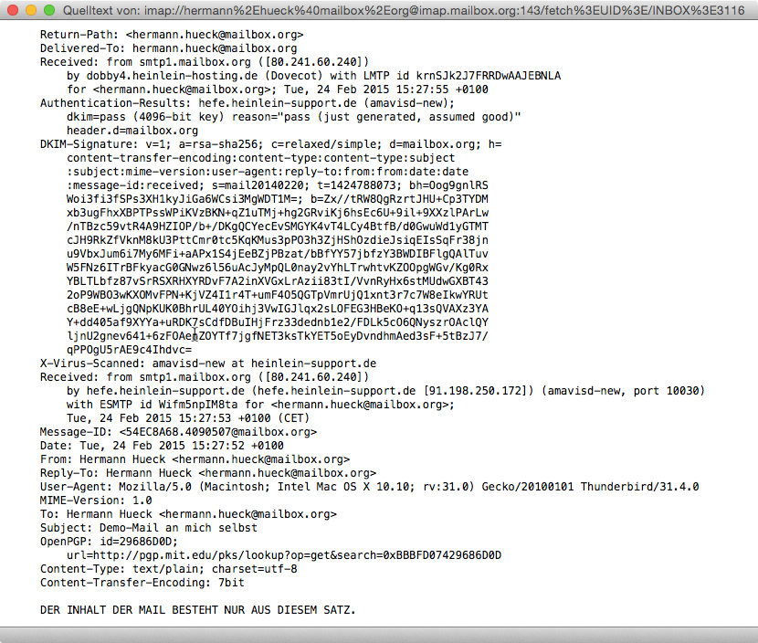
Abbildung 1: Daten und Metadaten einer Mail
Email-Metadaten verraten, wer wann mit wem und
zu welchem Betreff kommuniziert. Auch die Metadaten sind ein
„wertvolles Gut“, an dem vor Allem aber nicht nur die
Geheimdienste interessiert sind. Wertet man die Metadaten richtig
aus, kann man sehr viel über die betreffenden Kommunikationspartner
erfahren und daraus ein sehr persönliches Profil erstellen. Deshalb
sollte idealerweise niemand außer den Mail-Providern Zugriff auf die
Metadaten der Mails erhalten.
Die Email-Daten sollten im Idealfall
auch die Email-Provider (mein Provider und dein Provider) nicht lesen
können. Emails sind viel mehr mit Postkarten zu vergleichen. Jeder
Postbeamte, der sie in die Finger bekommt, könnte meine Postkarte an
dich lesen. Wenn der Postbeamte nicht vertrauenswürdig ist, könnte
er auch Post-fremden Personen oder Instanzen die Daten und auch die
Metadaten der Postkarte zur Verfügung stellen.
Für
die Neugierigen unter den Lesern: Wenn wir Mails versenden und
empfangen, interessieren uns die Metadaten (außer Absender,
Empfänger und Betreff) meist nicht besonders. Die Metadaten der Mail
sind technisch gesprochen die sog. Mail-Header. Sie werden vor dem
Mail-Anwender meist verborgen. Wer einmal die Metadaten einer
empfangenen Mail sehen
möchte, muss die Header nur sichtbar machen. In Thunderbird
wählt man den Menüpunkt Ansicht
→ Nachrichtenquelltext.
Dann sieht man die gesamte Nachricht „unfrisiert“, die
Mail-Header (Metadaten) und den Mail-Body (Daten bzw. der eigentliche
Mail-Inhalt). Header und Body sind durch eine Leerzeile getrennt.
Siehe Abb. 1: In diesem Beispiel besteht der Inhalt der Mail nur aus
der letzten Zeile. Der Rest sind Metadaten, die niemals verschlüsselt
werden.
2.3 Sichere Email – Zuständigkeiten
Für eine sichere Mail-Übertragung
(einschließlich dem Schutz der Metadaten vor ungebetenen Zaungästen)
gibt es vier Verantwortliche:
Absender
Provider des Absenders
Provider des Empfängers
Empfänger
Für die Mail-Verschlüsselung, die
die Mail-Inhalte (jedoch nicht die Metadaten) auch vor den
Mail-Providern verbirgt, gibt es zwei Verantwortliche:
Um die Email-Metadaten vor allen
Neugierigen außer unseren Providern (vor meinem Provider und vor
deinem Provider) zu verbergen, benötigen wir beide vor allem einen
kompetenten, zuverlässigen und in erster Linie vertrauenswürdigen
Provider. Dieses Thema ist nicht so kompliziert und darum (und um
einige weitere Hinweise zur Email-Sicherheit) geht es in den Kapiteln
3 und 4 dieses Dokuments.
Um die Email-Daten zu verbergen,
müssen wir die Mails verschlüsseln. Email-Verschlüsselung
(insbesondere die Schlüssel-Verwaltung) ist - vor allem für den
IT-Laien – recht kompliziert und ist das Thema im Kapitel 5
und den nachfolgenden Kapiteln dieses Dokuments.
Die Verantwortung dafür liegt ausschließlich bei den beiden
Kommunikationspartnern.
2.4 Client und Server
In Computer-Netzwerken (in lokalen
Netzwerken ebenso wie im Internet) kommunizieren Programme
miteinander. Bei der Kommunikation der Programme gibt es meist zwei
Rollen, die des Client und die des Servers. Ein Server bietet einen
Dienst (Service) an und der Client kann den Dienst in Anspruch
nehmen.
2.4.1 Spezialisierte Clients und Server
Es gibt verschiedene Arten von
Diensten: Web-Dienst, Mail-Dienst und viele weitere. In der Regel ist
jeder Server auf einen bestimmten Dienst spezialisiert. Ein
Web-Server liefert Web-Seiten aus, ein Mail-Server versendet und
empfängt Mails. Beide sind Server, ihre Aufgaben sind sind jedoch
völlig unterschiedlich.
Ebenso sind die Clients auf die
Nutzung bestimmter Dienste spezialisiert. Ein Web-Client ist
beispielsweise der Browser (Chrome, Firefox, Safari,
Internet Explorer,
Opera etc.); er fordert Web-Seiten beim Web-Server an,
empfängt sie und präsentiert sie dem Benutzer in einem
Browser-Fenster. Ein Mail-Client (Thunderbird, Outlook,
Apple Mail etc.) ist darauf spezialisiert, Mails vom
Mail-Server des Providers zu empfangen und dem Benutzer darzustellen.
Er ermöglicht ihm außerdem, Mails zu verfassen und an den
Mail-Server des Providers zu versenden, damit dieser sie an den
Empfänger weiterleitet. Für jeden spezialisierten Dienst gibt es
ein eigenes Anwendungsprotokoll, das genau auf die Erfordernisse des
betreffenden Dienstes zugeschnitten ist (siehe Kap. 2.5).
2.4.2 Client und Server sind Kommunikationsrollen
Meist gibt es für die Server-Rolle
und die Client-Rolle ein eigenständiges Programm. Beim Web-Dienst
implementiert der Web-Server die Server-Rolle und der Webbrowser
implementiert die Client-Rolle.
Beim FTP-Dienst
(Dateiübertragungsdienst) gibt ebenfalls klare Rollenzuweisungen.
Der FTP-Server stellt Repository von Ordnern und Dateien bereit und
ist damit in der Server-Rolle. Der FTP-Client kann (entsprechend der
Zugriffsrechte des angemeldeten Benutzers) Ordner und Dateien vom
Server herunterladen oder auf den Server hochladen oder diese
umbenennen oder löschen.
Beim Mail-Dienst (insbesondere beim
Mail-Versand) ist die Rollenverteilung allerdings nicht mehr ganz so
eindeutig. Das Mail-Programm (z.B. Thunderbird)
ist in der Rolle des Client und versendet die Mail an den Mail-Server
des Mail-Providers des Absenders. In einem weiteren Schritt von einem
Mail-Server zum nächsten weitergereicht: Der Mail-Server des
Absender-Providers leitet die Mail weiter an den Mail-Server des
Empfänger-Providers. In diesem Fall kommunizieren zwei Server
miteinander. Gibt es hier überhaupt einen Client und einen Server?
Eindeutig ja. Der sendende Mail-Server des Absender-Providers ist in
der Rolle des Clients und der empfangende Mail-Server des
Empfänger-Providers ist in der Rolle des Servers. Denn Letzterer
bietet die Mail-Weiterleitung als Dienst an (Server) und Ersterer
nimmt diesen Dienst in Anspruch (Client).
2.4.3 Kommunikationsphasen
Ein Server bietet in der Regel einen
Dienst an und wartet darauf, dass ein Client ihn in Anspruch nimmt.
Gibt es keinen aktiven Client, ist der Server untätig. Nutzen viele
Clients die Dienste des Servers, muss dieser die Clients auch
gleichzeitig bedienen können.
Die Kommunikation zwischen einem
Client und dem Server findet in drei Phasen statt: Verbindungsaufbau,
Datenübertragung und Verbindungsabbau.
Verbindungsaufbau: Möchte ein
Client den Dienst des Servers in Anspruch nehmen, baut er zunächst
eine Verbindung zu ihm auf. Dazu muss er die Adresse des Servers
kennen. Dies ist analog zum Verbindungsaufbau bei einem Telefonat.
Der Anrufende (Client) wählt die Telefonnummer (die Adresse im
Telefonnetz) des Angerufenen (Servers). Der Angerufene nimmt
seinerseits den Hörer ab; der Server nimmt die Verbindungsanfrage
des Client an. Jetzt erst steht die Leitung (die
Kommunikationsverbindung) und die Kommunikation (Datenübertragung)
kann beginnen.
Datenübertragung: In der
Datenübertragungsphase „reden“ Client und Server miteinander,
d.h. sie tauschen definierte Nachrichten aus. In der Regel tun sie
dies im Wechsel. Zuerst schickt der Client eine Nachricht mit einer
Anfrage; er sendet einen sog. Request an den Server. Der
Server bearbeitet die Anfrage und sendet daraufhin eine Nachricht mit
einer Antwort, der sog. Response an den Client zurück. Dann
folgt wieder der Client mit dem nächsten Request, den der Server
wiederum mit einer weiteren Response beantwortet. Der Client agiert,
der Server reagiert. (Der Wechsel zwischen Request und Response ist
nur das Grundmuster der Kommunikation. Tatsächlich wird dieses
Grundmuster in der Kommunikation häufig variiert oder durchbrochen.
Darauf will ich an dieser Stelle aber nicht näher eingehen. Für das
Verständnis dieses Textes ist die Kenntnis des Grundmusters der
Kommunikation ausreichend.)
Verbindungsabbau: Hat der
Client alle Anfragen gesendet und vom Server alle Antworten erhalten,
verabschiedet er sich vom Server und legt auf. Technisch ausgedrückt:
der Client baut die Verbindung ab, in dem er dem Server eine
Verabschiedungsnachricht sendet und dann die Verbindung beendet. Der
Server legt nach dem Empfang des Abschiedsgrußes ebenfalls auf, d.h.
auch er beendet die Verbindung. In der Regel initiiert der Client den
Verbindungsabbau. Es ist aber auch möglich, dass der Server den
Verbindungsabbau anstößt, z.B. wenn er auf Grund eines Fehlers die
Anfragen des Client nicht mehr beantworten kann.
2.5 Anwendungsprotokolle
Wie wir im vorigen Kapitel gesehen
haben, gibt es bei der Kommunikation in Netzwerken viele verschiedene
Dienste (Services) und zu jedem Dienst spezifische Clients und
Server. Damit die Clients und Server eines Dienstes sich verständigen
können, sind für jeden Dienst eine Reihe verschiedener Arten von
Nachrichten (Request-Nachrichten und Response-Nachrichten) definiert.
Würde ein Client einem Server eine Nachricht schicken, die dieser
nicht versteht, kann der Server auch keine Antwort senden. Er würde
im besten Fall mit einer Fehler-Nachricht antworten. Selbst dies ist
möglicherweise nutzlos, wenn der Client die Fehler-Nachricht nicht
versteht. Es geht bei der Kommunikation zwischen Client und Server
also nicht ohne Vereinbarungen, an die sich beide Seiten halten
müssen. Eine solche Nachrichten-Vereinbarung für bestimmte
Anwendungen/Dienste nennt man ein Anwendungsprotokoll.
Ein Anwendungsprotokoll definiert
also die Nachrichten (und Nachrichten-Formate) für einen bestimmten
Dienst, die vom Client zum Server und vom Server zum Client
übertragen werden dürfen. Nur so können sich beide Seiten
verständigen und sinnvoll kooperieren.
Es
gibt weitere Protokolle, die nicht in die Kategorie der
Anwendungsprotokolle fallen, z.B. TCP oder TLS. TCP ist ein Protokoll
für verbindungs-orientierte Datenübertragung. TLS ist ein
Sicherheitsprotokoll, das die Daten während der Übertragung
verschlüsselt. Im Folgenden stehen jedoch die Anwendungsprotokolle
im Fokus.
Fast jedes Protokoll ist
standardisiert und in einem sog. RFC (Request for Comment) technisch
beschrieben. Die Entwickler der Server und der Clients müssen das
jeweilige Protokoll kennen, um diese (die Server und Clients) korrekt
zu implementieren. Für die normalen Anwender spielt die genaue
Kenntnis der Protokolle keine Rolle.
Für die vielen unterschiedlichen
Dienste gibt es nun jeweils ein Anwendungsprotokoll,
das festlegt, wie sich die Clients und Server des betreffenden
Dienstes verständigen. Um dies ein wenig konkreter zu machen, habe
ich beispielhaft einige gängige Anwendungsprotokolle aufgeführt,
die der Internetnutzer (vielleicht ohne es zu wissen) täglich nutzt.
HTTP
(Hypertext Transfer
Protocol) ist
das Anwendungsprotokoll zur
Übertragung von verlinkten Webseiten (Hypertext). Der HTTP-Client
(auch Web-Client) ist der Webbrowser (Chrome,
Firefox etc.), den
wir täglich zum Surfen benutzen. Der HTTP-Server (auch Web-Server)
stellt die Hypertext-Seiten im Web zur Verfügung. Er wird in der
URL-Zeile des Browsers angezeigt.
FTP
(File
Transfer
Protocol)
ist das Anwendungsprotokoll
zur Dateiübertragung. Der Benutzer bedient den FTP-Client an seinem
Rechner. Mit diesem Protokoll lassen sich Dateien vom eigenen,
lokalen Rechner auf einen fernen FTP-Server oder umgekehrt vom
FTP-Server auf den lokalen Rechner übertragen und vieles mehr. Z.B.
kann man auch Dateien und Ordner auf dem fernen FTP-Server anlegen,
löschen und umbenennen oder den Inhalt eines fernen Ordners
anfordern. Der FTP-Server liefert (wenn er durch eine entsprechende
protokoll-spezifische Nachricht den Auftrag dazu erhalten hat) die
Liste der Dateien im betreffenden Ordner. Der FTP-Client empfängt
diese Liste und zeigt sie dem Benutzer an. FileZilla
ist ein Beispiel für ein solches FTP-Client-Programm. Aber auch der
Webbrowser beherrscht das FTP-Protokoll (in der Client-Rolle). Gibt
man in der URL-Zeile des Browsers eine mit ftp://
statt http://
beginnende URL ein, schaltet der Browser automatisch auf das
FTP-Protokoll um.
Der Browser wird normalerweise als HTTP-Client verwendet, er kann
bei Bedarf aber auch als FTP-Client agieren.
SMTP
(Simple
Mail
Transfer
Protocol)
ist das Anwendungsprotokoll
zum Versenden von Emails. Mit diesem Protokoll überträgt der
SMTP-Client oder Mail-Client (Thunderbird,
Outlook, Apple
Mail etc.) die Mail an den
SMTP-Server oder Mail-Server des Providers. SMTP kommt auch zum
Einsatz, wenn der SMTP-Server des Absender-Providers eine Mail an
den SMTP-Server des Empfänger-Providers weiterleitet. Ersterer
sendet die Mail und ist dabei (wie oben schon gezeigt) in der Rolle
des Client, Letzterer empfängt die Mail und übernimmt die Rolle
des Servers.
POP
(Post
Office
Protocol)
ist ein Anwendungsprotokoll
zum Abruf von Mails. Ein Mail-Client wie Thunderbird
ist also nicht nur SMTP-Client. Da er auch das Protokoll POP
unterstützt, ist er gleichzeitig ein POP-Client. Er ruft die Mails,
die auf dem Mail-Server des Providers eingegangen sind, ab und
überträgt sie auf den lokalen Rechner des Nutzers. Auf dem
Mail-Server wird die Mail normalerweise nach erfolgreicher
Übertragung gelöscht; sie ist dann nur noch auf dem Client
verfügbar. Der Mail-Server des Providers kann also auch als
POP-Server agieren, er beherrscht das POP-Protokoll. (POP wird heute
auf Grund seines eingeschränkten Funktionsumfangs nur noch relativ
selten verwendet und fast überall durch das viel leistungsfähigere
IMAP-Protokoll ersetzt.)
IMAP
(Internet
Mail
Access
Protocol)
ist heute als Nachfolger von POP weit verbreitet. Es ermöglicht
nicht nur den Abruf von eingegangenen Mails. Solange man sie nicht
explizit löscht, bleiben die Mails auf dem IMAP-Server gespeichert.
So ist auch der Zugriff mit mehreren Clients auf verschiedenen
Geräten möglich. Mit IMAP kann man die gesamte Mail-Ordnerstruktur
auf dem Mail-Server verwalten. Man kann auf dem Mail-Server
Mail-Ordner anlegen, umbenennen und löschen; man kann Mails von
einem Ordner in einen anderen verschieben; auch die Mails kann man
umbenennen und löschen. Wenn man nicht weiß, in welchem
Unterordner sich eine Mail befindet, kann man mit IMAP auch Mails
auf dem Mail-Server suchen lassen. Der Mail-Server agiert dabei als
IMAP-Server und führt all diese Operationen auf Anfordung des
Clients aus. Der Mail-Client (Thunderbird,
Outlook etc.)
unterstützt (zusätzlich zu SMTP und POP) auch IMAP. Als
IMAP-Client sendet er dem IMAP-Server IMAP-Nachrichten, die diesen
veranlassen, die gewünschten Operationen im Auftrag des Client
auszuführen.
Ebenso wie
ein Mail-Client muss auch ein Mail-Server drei Protokolle – SMTP,
IMAP und POP – unterstützen.
Es
gibt viele weitere Protokolle, von denen der IT-Laie meist noch
nichts gehört hat. Um nur ein Beispiel zu nennen … das SNMP
(Simple
Network
Management
Protocol)
ein Protokoll zur Verwaltung von Computer-Netzwerken.
2.6 Verschlüsselung
„Verschlüsselung“ heißt das
Zauberwort, wenn es darum geht, Daten vor neugierigen Blicken zu
schützen.
Was ist unter Verschlüsselung zu
verstehen? Sehen wir uns dazu ein kleines Beispiel an:
2.6.1 Verschlüsselung einer Datei – ein Beispiel
Dies ist der Inhalt der Datei
gedicht.txt:
Es
war einmal ein Wiesel.
Das
saß auf einem Kiesel.
Es
sagte sich im Stillen:
Ich
tu's um Reimes willen.
Mit folgendem Kommando kann ich die
Datei gedicht.txt verschlüsseln.
openssl
des3 -in gedicht.txt -out gedicht-chiffriert.bin
Das Kommando verlangt von mir die
Eingabe eines Verschlüsselungspassworts, das zum Entschlüsseln
benötigt wieder wird. Beim Verschlüsseln (oder Chiffrieren) wird
das Ergebnis der Verschlüsselung (das Chiffrat) in die Datei
gedicht-chiffriert.bin
geschrieben. Das Chiffrat ist ein für niemanden verständlicher
Kauderwelsch und sieht (wenn man den Dateiinhalt ausgibt) in
diesem Fall so aus:
Salted__
?=2?r?*?s??.??q?]??#?8?Ad_T!1Nt�??mơ?????B?^*
??X??l6??M?}ַ??q?
Die Datei gedicht.txt enthält
den unverschlüsselten Text, der verschlüsselte Text ist in
gedicht-chiffriert.bin
enthalten. Lösche ich gedicht.txt,
so ist der unverschlüsselte Text nicht mehr verfügbar. Der
chiffrierte Text in gedicht-chiffriert.bin
ist für niemanden nutzbar, es sei denn er
hat den Schlüssel dazu. Der Schlüssel ist in diesem Fall das
Verschlüsselungspasswort.
Will ich den unverschlüsselten Text
wieder anzeigen, muss der Inhalt der Datei gedicht-chiffriert.bin
wieder entschlüsselt werden. Dies geht mit folgendem Kommando:
openssl
des3 -d -in gedicht-chiffriert.bin
Dieses Kommando fragt mich wieder
nach dem Passwort, das ich beim Verschlüsseln angegeben habe. Bei
Eingabe des richtigen Passwortes wird mir der unverschlüsselte
(dechiffrierte) Text wieder ausgegeben:
Es
war einmal ein Wiesel.
Das
saß auf einem Kiesel.
Es
sagte sich im Stillen:
Ich
tu's um Reimes willen.
Dies ist ein einfaches Beispiel, das
das Prinzip verdeutlichen soll. Statt eines Passwortes wird in der
Regel ein digitaler Schlüssel verwendet. Doch der digitale Schlüssel
ist im Grunde nichts anderes als ein sehr, sehr langes Passwort, das
natürlich nicht für die manuelle Eingabe gedacht ist.
Mehrere digitale Schlüssel werden in
einem sog. Schlüsselbund gespeichert, der wiederum durch ein
Benutzerpasswort gesichert sein kann. Soll ein Programm einen der
Schlüssel des Schlüsselbundes zum Chiffrieren oder zum
Dechiffrieren benutzen, muss der Benutzer durch die Eingabe des
Passwortes den Schlüsselbund entsperren. Damit gewährt er dem
Programm Zugriff auf die Schlüssel im Schlüsselbund.
2.6.2 Transport-Verschlüsselung vs. Daten-Verschlüsselung
Sind Daten im Internet unterwegs,
sind sie grundsätzlich meist unverschlüsselt und für jeden lesbar
(und evtl. auch manipulierbar). Um dies zu verhindern, muss man sie
verschlüsseln. Dabei sind zwei Verschlüsselungsarten grundsätzlich
zu unterscheiden: die Transport-Verschlüsselung und die
Daten-Verschlüsselung.
Bei der Transport-Verschlüsselung
ist der Übertragungskanal/Transportweg verschlüsselt, durch den die
Daten transportiert werden. Die Daten sind dabei nur unzugänglich,
solange sie unterwegs sind. Die Transport-Verschlüsselung kümmert
sich niemals um die Sicherung der Daten vor und nach der Übertragung.
Die Daten befinden sich nach dem Transport immer im selben Zustand,
in dem sie auch vor dem Transport waren. Die transportierten Daten
selbst können unverschlüsselt oder verschlüsselt sein.
Bei der Daten-Verschlüsselung
sind (der Name sagt es) die Daten verschlüsselt. Der
Übertragungskanal/Transportweg kann unverschlüsselt oder
verschlüsselt sein.
Beide Verschlüsselungsarten können
(rein technisch gesehen) unabhängig voneinander oder kombiniert
eingesetzt werden. Es ist also möglich, …
verschlüsselte Daten (z.B.
Mails) über einen verschlüsselten Kanal zu übertragen,
unverschlüsselte Daten über
einen verschlüsselten Kanal zu übertragen,
verschlüsselte Daten über
einen unverschlüsselten Kanal zu übertragen oder
unverschlüsselte Daten über
einen unverschlüsselten Kanal zu übertragen.
Das Beispiel im vorigen Kapitel 2.6.1
war übrigens ein Beispiel für die Daten-Verschlüsselung. Die Daten
der Datei gedicht.txt wurden
dabei nicht transportiert, also nicht von einem auf einen anderen
Rechner übertragen.
2.6.3 Transport-Verschlüsselung
Bei der Transport-Verschlüsselung
– das sagt schon der Begriff – sind nicht die Daten selbst
verschlüsselt, sondern der Übertragungsweg, auf dem die Daten
transportiert werden. Man kann sich vorstellen, die Daten fließen
durch einen undurchsichtigen Tunnel. Beim Eintritt in den Tunnel
werden sie automatisch chiffriert und beim Austritt automatisch
dechiffriert. Solange die Daten im Tunnel unterwegs sind, sind sie
nicht einsehbar. Bevor sie in den Tunnel hinein fließen und nachdem
sie wieder herausfließen, sind die Daten aber sehr wohl einsehbar,
wenn die Daten selbst nicht verschlüsselt sind.
Transport-Verschlüsselung kommt
heute häufig zum Einsatz, zum Beispiel im Web, bei der Kommunikation
zwischen Webbrowser und Web-Server oder auch beim Emailversand und
-empfang. Man spricht auch von einem verschlüsselten
Übertragungskanal.
Der verschlüsselte Übertragungskanal
wird übrigens in der Phase des Verbindungsaufbaus (siehe Kap. 2.4.3)
hergestellt. Danach (in der Datenübertragungsphase) ist die gesamte
Kommunikation in beide Richtungen (vom Client zum Server und
umgekehrt) verschlüsselt. Beim Verbindungsabbau wird der
verschlüsselte Kanal wieder zerstört.
Die Kommunikation zwischen Webbrowser
und Web-Server wird durch das HTTP-Protokoll (siehe Kap. 2.5)
definiert (Hypertext Transfer Protokoll). HTTPS
(HTTP Secure) ist die transport-verschlüsselte Variante des
HTTP-Protokolls. Jeder Internetnutzer kennt das. Sobald wir uns mit
dem Browser an einem Dienst (z.B. Bank-Account, Email-Account,
Account bei der Deutschen Bahn, Account bei einem Online-Shop wie
Amazon oder Zalando etc.) mit Benutzername und Passwort anmelden,
schaltet der Browser – in der Regel automatisch – um auf HTTPS.
Wir erkennen dies an der URL-Zeile des Browsers: die URL beginnt mit
https:// statt mit http://
. Zusätzlich zeigt der Browser durch das Symbol eines
Schlosses an, dass er die Daten mit
dem Web-Server über einen verschlüsselten Kanal austauscht. Heute
läuft auch jeder Besuch bei Wikipedia und jede Google-Suche über
einen verschlüsselten Übertragungskanal. Google hat die Web-Suche
wie auch die anderen Dienste auf durchgängige Verwendung von
Transportverschlüsselung umgestellt.
In
diesem Dokument geht es um die Mail-Übertragung. Anders als beim
Surfen im Web wird hier nicht ein Übertragungskanal verwendet,
sondern drei Kanäle, da eine Mail vom Absender zum Empfänger über
drei Teilstrecken transportiert wird (siehe Kap. 3.1). Die erste der
Teilstrecken ist der Transport vom Absender zum Provider des
Absenders. Die zweite geht vom Provider des Absenders zum Provider
des Empfängers. Die dritte Teilstrecke schließlich ist die vom
Provider des Empfängers zum Empfänger. Jeder dieser drei
Teilstrecken kann grundsätzlich unverschlüsselt oder verschlüsselt
sein. Außerdem ist die Mail (wenn ihre Daten nicht verschlüsselt
wurden) auf jeder Zwischenstation – also beim Provider des
Absenders und beim Provider des Empfängers – lesbar.
Der Transport der Mail
(SMTP) ist also durchaus kritischer zu sehen als die
Web-Kommunikation mit dem Browser (HTTP). Z.B. kann die
Web-Kommunikation zwischen mir und meiner Bank viel leichter
abgesichert werden, da es sich nur um eine einzige Transportstrecke
handelt, die durch einen verschlüsselten Übertragungskanal
gesichert wird. Bei der Mail-Übertragung zwischen mir (dem Absender)
und meinem Kommunikationspartner (dem Empfänger) ist der
Transportweg unterbrochen. Selbst wenn alle drei Teilstrecken
verschlüsselt sind, eine Ende-zu-Ende-Verschlüsselung für die
gesamte Übertragungsstrecke vom Absender bis zum Empfänger kann mit
der Transport-Verschlüsselung allein prinzipbedingt nicht
sichergestellt werden.
Transport-Verschlüsselung
ist dennoch auch für die Mailübertragung wichtig. Sie ist außerdem
für den Benutzer auch nicht so schwierig anzuwenden. Beim Surfen im
Web schaltet der Browser in der Regel automatisch auf verschlüsselte
Übertragung um, spätestens wenn man sich bei einem Dienst anmeldet.
Bei der Mail-Übertragung ist heute (vor wenigen Jahren war das noch
anders) die verschlüsselte Übertragung zwischen dem Mail-Programm
auf meinem Rechner und dem Mail-Server des Providers in der Regel die
Standardeinstellung. Unverschlüsselte Übertragung funktioniert
meist gar nicht mehr. Auch ohne viel davon zu verstehen, macht der
Benutzer bei den Einstellungen des Mail-Programms meist nichts
verkehrt.
Allerdings
braucht man einen vertrauenswürdigen Provider, denn dieser kann
immer auf die Mails zugreifen, solange die Mail-Daten nicht
verschlüsselt sind. Dies ist das Thema in Kapitel 3.
2.6.4 Daten-Verschlüsselung
Verschlüsselung
ist einfach, denn das erledigen Programme. Die Schlüssel-Verwaltung
ist kompliziert, denn das ist Aufgabe des Benutzers. Dieser muss
wissen, was er tut und benötigt dazu ein gewisses Know-how. Schon
bei dem einfachen Beispiel aus Kapitel 2.6.1 musste sich der Benutzer
das Passwort (dieses diente als Schlüssel) merken. Würde er es
vergessen, könnte er das verschlüsselte Gedicht nicht mehr
entschlüsseln.
Transport-Verschlüsselung
ist deshalb relativ einfach, da hier die Benutzer die Verschlüsselung
implizit verwenden, ohne technisch viel davon verstehen zu müssen.
Die Benutzer benötigen keine eigenen Schlüssel und sie müssen sie
auch nicht verwalten.
Bei
der Daten-Verschlüsselung wird – im Kontext der Mail-Übertragung
– der Inhalt einer Email verschlüsselt. Die verwendeten
Teilstrecken der Übertragung können unverschlüsselt oder
verschlüsselt sein. Es werden auch nur die Daten der Email (der
Inhalt der Mail) verschlüsselt, die Metadaten (Absender-Adresse,
Empfänger-Adresse, Betreff etc.) bleiben immer unverschlüsselt
(siehe Kap. 3). Mit der Verschlüsselung der Email-Daten lässt sich
die erstrebenswerte Ende-zu-Ende-Verschlüsselung
realisieren. Der Inhalt der Mails bleibt garantiert privat.
Ohne
Verschlüsselung des Inhaltes entspricht das Niveau der
Vertraulichkeit einer Email dem einer Postkarte. Ist der Inhalt einer
Mail verschlüsselt, ist der Grad der Vertraulichkeit höher als der
eines versiegelten Briefes. Das Siegel eines Briefes kann man brechen
und den Brief trotzdem lesen. Eine mit starker Verschlüsselung
gesicherte Mail ist nicht zu knacken. Sie kann nur vom Absender und
vom Empfänger gelesen werden. Diese beiden sitzen an den Enden des
gesamten, mehrteiligen Kommunikationsweges. Deshalb spricht man von
Ende-zu-Ende-Verschlüsselung.
Bei
der Ende-zu-Ende-Verschlüsselung bekommt der Provider nur
verschlüsselte Daten, zur Speicherung oder zur Weiterleitung
anvertraut. Der Provider kennt nur die Metadaten, über die Daten
selbst hat er auf Grund ihres verschlüsselten Zustandes kein
„Wissen“. Deshalb spricht man in diesem Fall (nur in Bezug auf
die Daten) auch von Zero
Knowledge.
Dies ist ein Merkmal eines sicheren Dienstes. Hat der Provider keine
Kenntnis von den Daten, so kann er sie nicht lesen oder verarbeiten.
Auch wenn die Daten gestohlen würden oder kraft eines
Gerichtsbeschluss herausgegeben werden müssten, so wären die Daten
immer noch sicher, da auch der Dieb oder die staatliche Behörde mit
den verschlüsselten Daten nichts anfangen können, da sie nicht über
den Schlüssel dazu verfügen. Der Schlüssel liegt aber bei mir und
nicht bei meinem Provider.
Bei
der Verschlüsselung von Mails muss jeder Kommunikationspartner ein
Schlüsselpaar erzeugen. Er muss den eigenen öffentlichen Schlüssel
exportieren, die öffentlichen Schlüssel seiner
Kommunikationspartner in seinen Schlüsselbund importieren und
beglaubigen. Der Benutzer benötigt ein Grundverständnis der
asymmetrischen Verschlüsselung und davon, wie der Schlüsselaustausch
zwischen den Kommunikationspartnern funktioniert. Dies stellt eine
recht hohe Einstiegshürde für den technisch nicht versierten
Benutzer dar. In den Kapiteln 5 - 11 erläutere ich dieses Thema
detailliert und versuche die Einstieg in den Versand und Empfang
verschlüsselter Mails zu erleichtern.
2.7 Zusammenfassung
Bevor wir zu den praktischen Fragen sicherer Email
kommen, erläutert dieses Kapitel noch einige grundlegende Konzepte,
die für die Lektüre der nachfolgenden Kapitel hilfreich sind.
Zunächst
ging es um die Unterscheidung zwischen Daten
und Metadaten
einer Mail. Es ging außerdem um die Zuständigkeiten.
Wer ist für die sichere Mail-Übertragung verantwortlich (Absender,
Absender-Provider, Empfänger-Provider und Empfänger) und wer muss
sich um die Mail-Verschlüsselung kümmern (Absender und Empfänger)?
Dieses
Kapitel liefert auch einige grundlegende Konzepte der
Informationstechnologie, die nicht nur für die Email-Kommunikation
wichtig sind. Dabei ging es um die Kommunikationsrollen
Client und Server
und um die Anwendungsprotokolle,
die es erst ermöglichen, dass ein Client und ein Server sinnvoll
miteinander Daten austauschen können. Einige gängige Protokolle
(HTTP, FTP, SMTP, POP, IMAP) sollten veranschaulichen, was überhaupt
die Aufgabe eines Anwendungsprotokolls ist.
Schließlich
habe ich noch gezeigt, was man sich unter Verschlüsselung
vorzustellen hat, und dabei auch die Transport-Verschlüsselung
von der Daten-Verschlüsselung
abgehoben. Beide Arten der Verschlüsselung haben für den sicheren
Email-Verkehr – aber nicht nur für diesen – eine große
Bedeutung und werden uns in diesem Dokument immer wieder begegnen.
2.8 Wer mehr wissen will …
Natürlich enthält dieses Dokument
nicht alles, was es zum Thema zu sagen gibt. Der Heise-Verlag hat
Anfang 2014 (sicherlich auch aus aktuellem Anlass) ein c't-Sonderheft
mit dem Titel „Sichere E-Mail – NSA aussperren – Privates
schützen“ herausgegeben. Ich habe das Heft gelesen und kann es
jedem empfehlen, der sich technisch tiefergehend mit der Materie
auseinandersetzen will.
Das Heft kann in Papierform oder als
PDF bestellt werden unter folgender
Web-Adresse:
http://shop.heise.de/katalog/ct-wissen-sichere-e-mail
Über diese Web-Adresse kann man auch
das Inhaltsverzeichnis des Heftes einsehen und sich einen ersten
Überblick verschaffen.
An einigen Stellen des vorliegenden
Dokuments werde ich auf dieses c't-Sonderheft verweisen.
2.9 Links zu diesem Kapitel
3 Die Auswahl eines sicheren Mail-Providers und die dazu passenden
Einstellungen im Email-Client
Um Emails wasserdicht abgesichert zu
versenden (dies wäre sicherer als ein versiegelter Brief), müssen
wir sie verschlüsseln (siehe Kap. 5
bis 11).
Verschlüsselung von Mails (insbesondere die Schlüsselverwaltung)
ist kompliziert und die Metadaten der Mails bleiben dabei trotzdem
einsehbar, da die Mail-Provider ohne die Metadaten (Absender- und
Empfängeradresse, Betreff etc.) die Mail nicht zustellen können.
Eine hohe Sicherheit – und damit
die Minimierung des Risikos der Kompromittierung der Mails – kann
man aber auch erreichen, wenn man unverschlüsselte Mails über
sichere, d.h. verschlüsselte Transportwege versendet. Im
Idealfall sind die Teilstrecken auf dem Transportweg und die Lagerung
bei den Mail-Providern so sicher, dass nur Absender, Empfänger und
die beiden Provider darauf zugreifen können (siehe Kap. 3.1). Für
diese Sicherheitsstufe ist die Wahl des richtigen Mail-Providers
von zentraler Bedeutung (siehe Kap. Error: Reference source not found).
Jedoch auch der Benutzer muss die richtigen Einstellungen im
Email-Client vornehmen.
Die Transportwege können
verschlüsselt werden, die Mail-Inhalte bleiben unverschlüsselt. In
diesem Fall ist eine Mail nach wie vor nicht mit einem Brief, sondern
mit einer Postkarte zu vergleichen, die idealerweise jedoch nur von
vertrauenswürdigen Kurieren transportiert wird.
Alice (Absender) schreibt eine
Postkarte und lässt sich dabei von keinem über die Schulter
schauen. Dann trägt sie sie zum Briefkasten. Mit dem Einwurf in den
Kasten übergibt sie die Karte an ihren Provider. Wenn sie die
Postkarte nicht verliert und sie niemandem zeigt, landen die Daten
und die Metadaten sicher im Kasten. Die Deutsche Post (Alice'
Postkarten-Provider) ist vertrauenswürdig (gehen wir mal davon aus),
die Postangestellten und auch die Sortiermaschinen der Deutschen Post
lesen zwecks Zustellung nur die Adresse der Postkarte, aber nicht
deren Inhalt (selbst wenn sie es könnten). Und sie geben die
Adressdaten auch nicht weiter, nicht an Kriminelle und nicht an
Geheimdienste oder andere Staatsorgane.
Nehmen wir weiter an, Bob (Empfänger)
lebt in Frankreich und sein Post-Provider ist die französische Post.
Die Deutsche Post übergibt nun die Postkarte an die französische
Post. Bei der Übergabe bekommt kein anderer die Postkarte in die
Finger. Nehmen wir an, die französische Post ist genau so
vertrauenswürdig. Sie liest nicht den Inhalt, fertigt keine Kopie
an, zeigt die Karte keiner anderen Person oder Instanz. Auch die
französische Post sieht sich nur die Adresse an, um die Karte in
Bob's Posteingang abzulegen, d.h. in seinen Briefkasten zu werfen.
Bob holt die Karte aus dem Kasten, liest sie und hält sie auch
keiner anderen Person unter die Nase.
Wenn die beiden Postdienst-Provider
ihre Neugier in Zaum halten konnten und Alice und Bob die Karte
niemandem vorlesen oder sie herumliegen lassen, kennen nur diese
beiden ihren Inhalt.
Das ganze Verfahren steht und fällt
mit der Vertrauenswürdigkeit beider Provider. Die Provider
müssen professionell arbeiten, sodass die Postkarte nicht verloren
geht und nicht in die falschen Hände gerät. Die Provider sollten
kein Interesse am Inhalt der Karte haben. Man bezahlt den Transport
der Karte mit dem Porto. Also müssen sich die beiden Provider nicht
dadurch finanzieren, dass sie die Adressdaten oder den Inhalt meiner
Karte lesen und auswerten oder an andere mögliche Interessierte
verkaufen. Dies gilt vergleichbar für die Mail-Provider.
Die Postkarte wurde übrigens über
drei Teilstrecken transportiert:
von Alice zu Alice'
Post-Provider (Alice → Deutsche Post)
von Alice' Post-Provider zu
Bob's Post-Provider (Deutsche Post → Französische Post)
von Bob's Post-Provider zu Bob
(Französische Post → Bob)
3.1 Die Mail auf dem Transportweg
Wie bei der Postkarte kann der
gesamte Transportweg einer Mail in verschiedene Teilstrecken
aufgeteilt werden. Auch die Mail wird auf dem Transportweg bei den
Providern zwischengelagert/zwischengespeichert. Um den gesamten Weg
sicher zu machen, muss die Mail auf den drei Teilstrecken durch
verschlüsselte Kanäle übertragen und bei den Providern sicher
zwischengespeichert werden.
Im Folgenden ist häufig von
verschlüsselten Übertragungskanälen die Rede. Der IT-Laie
kann sich darunter meist nichts vorstellen. Ich will dies kurz mit
einem Bild erläutern: Ein verschlüsselter Übertragungskanal
kann mit einer undurchsichtigen Röhre (oder mit einer nicht
abhörbaren Leitung) verglichen werden (siehe auch Kap. 2.6.3). Alle
Informationen, die durch die Röhre fließen, sind nur für die
beiden Kommunikationspartner sichtbar, die diese Röhre als
Kommunikationsverbindung zwischen sich aufbauen. Für Außenstehende
ist die übertragene Information nicht einsehbar und nicht
manipulierbar.
Ein
unverschlüsselter Kanal
ist mit einer durchsichtigen Röhre (oder mit einer abhörbaren
Leitung) zu vergleichen, bei der Außenstehende alle durchfließenden
Informationen mitlesen und möglicherweise auch manipulieren können.
Das
herkömmliche Internet (einschließlich Email-Verkehr) ist ein Gewirr
von unverschlüsselten Kanälen. Erst so langsam setzen sich die
verschlüsselten Kanäle immer mehr durch.
Technisch
wird ein verschlüsselter Kanal durch das Protokoll SSL (Secure
Socket
Layer)
bzw. durch das neuere TLS (Transport
Layer
Security)
implementiert und bereitgestellt. Beide Kommunikationspartner müssen
diese Protokolle beherrschen, um einen verschlüsselten Transportweg
aufzubauen. Auf weitere technische Details verzichte ich an dieser
Stelle. Mehr dazu in Kap. 3.2 und 14.
Bei
Emails sichert ein verschlüsselter Transport-Kanal immer nur eine
Teilstrecke des gesamten Übertragungsweges vom Absender zum
Empfänger. (Der gesamte Übertragungsweg einer Mail besteht aus drei
Teilstrecken, s. u.) Mit verschlüsselten Kanälen kann keine
Ende-zu-Ende-Verschlüsselung realisiert werden, bei der der Inhalt
der Mail auf dem gesamten Übertragungsweg vom Absender bis zum
Empfänger verschlüsselt ist (mehr dazu in Kap. 5).
Unter Kompromittierung einer Mail
verstehe ich, dass entweder der Inhalt der Mail von anderen Personen
oder Instanzen als Absender oder Empfänger gelesen oder verändert
wird oder dass die Metadaten von anderen Personen oder Instanzen als
dem Absender oder dem Empfänger oder den beiden Mail-Providern
gelesen werden.
Wo kann die Mail auf dem Weg von
Alice (Absender) zu Bob (Empfänger) kompromittiert werden? Welche
Angriffsmöglichkeiten gibt es?
Grundsätzlich
ist eine Mail vor dem Versand (Schritt 1) und nach dem Empfang
(Schritt 7) auf allen drei Teilstrecken (Schritte 2, 4 und 6) und bei
der Zwischenspeicherung bei den Providern (Schritte 3 und 5)
kompromittierbar. (Das Verfahren der Zwischenspeicherung und
anschließenden Weiterleitung nennt man übrigens Store
and Forward.) Die
einzelnen Schritte des Transportweges sind in Abbildung 1 dargestellt
und werden in den folgenden Abschnitten beschrieben.
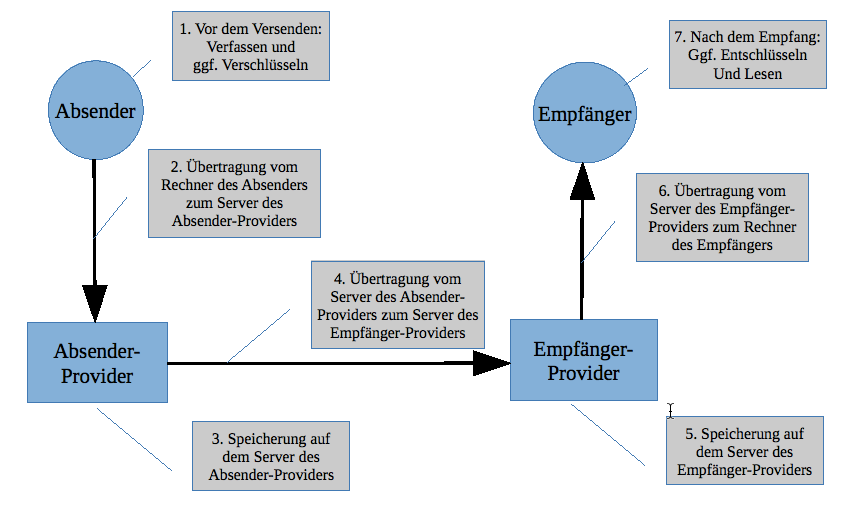
Abbildung 2: Die Mail auf ihrem Transportweg
Der Rechner des Absenders vor
dem Versenden: Ist Alice' Rechner mit einem Virus infiziert,
könnte dieser die Kopie der Mail auf der Festplatte ihres Rechners
an einen Cyberkriminellen im Internet senden. Damit dies möglichst
nicht geschieht, muss sie ihren Rechner virenfrei halten und dafür
sorgen, dass die Software des Rechners immer auf dem aktuellen Stand
ist. Ein Trojaner auf Alice'
Rechner könnte auch versuchen Alice' privaten Schlüssel von seinem
Rechner zu stehlen. Bei Erfolg hätte der Angreifer damit auch
Zugriff auf Alice' verschlüsselten Mail-Verkehr.
1a.
Wird eine Mail verschlüsselt (siehe Kapitel 5), geschieht dies,
bevor Alice sie an ihren Provider zur Weiterleitung an Bob übergibt.
Sie kann erst nach der Zustellung an Bob (vor Schritt 7) und nur von
ihm entschlüsselt werden.
Der Übertragungsweg von
Absender-Rechner zum Server des Absender-Providers: Die Mail
wird per SMTP (Simple Mail Transfer Protocol)
übertragen. Beim Versand der Mail erfolgt eine Anmeldung beim
Provider mit Alice' Zugangsdaten (Benutzername und Passwort). Danach
erst wird die Mail zum Provider übertragen. Sowohl die Login-Daten
als auch die Mail müssen über einen verschlüsselten
Übertragungskanal übertragen werden. Alice' Provider muss einen
verschlüsselten Kanal anbieten und sie muss ihn auch nutzen. D.h.
sie muss in ihrem Mail-Programm die richtigen Einstellungen
vornehmen. Unverschlüsselte Kanäle werden von den Mail-Providern
heute meist nicht mehr angeboten.
Anfang 2014 haben endlich auch die großen Anbieter in Deutschland
(WEB.DE, GMX, 1&1, Freenet, Telekom) bei der Kommunikation mit
den Mail-Clients Ihrer Kunden auf die ausschließliche Verwendung
verschlüsselter Kanäle umgestellt.
Die Speicherung der Mail beim
Provider des Absenders: In der Regel wird eine Kopie der Mail
auf dem Server des Providers im Ordner „Gesendet“ gespeichert.
Von dort kann Alice die gesendete Mail wieder abrufen, falls sie sie
nochmals lesen will. Ihre Mails sicher zu speichern, ist der Job von
Alice' Provider. Ihr Provider sollte ihre Mails weder scannen noch
auswerten. Google (jedoch nicht nur Google) tut genau das. Alice'
Provider muss seine Server auch sicher verwalten, damit weder
Geheimdienste noch Cyberkriminelle dort eindringen können und
Zugriff auf ihre Mails erhalten.
Der Übertragungsweg von
Absender-Provider zum Empfänger-Provider: Die Mail-Übertragung
per SMTP (Simple Mail Transfer Protocol)
zwischen den Providern muss über einen verschlüsselten
Übertragungskanal erfolgen. Dies ist Sache der Provider. Es
funktioniert nur, wenn beide Provider den Aufbau eines
verschlüsselten Übertragungskanals unterstützen. Die Benutzer
erhalten von den Providern meist keine Informationen dazu.
(Natürlich ist Schritt 4 gar nicht in Betracht zu ziehen, wenn
Absender und Empfänger ihren Account bei dem selben Provider haben.
Haben Alice und Bob ihr Mail-Konto beispielsweise bei GMX, muss die
Mail nicht von GMX zu GMX übertragen werden. Schritt 4 entfällt
dann.)
Die Speicherung der Mail beim
Empfänger-Provider: Der Empfänger-Provider speichert die Mail
im Posteingang von Bob's Mail-Account auf seinem Server ab. Von dort
kann Bob sie dann abrufen. Seine Mails sicher zu speichern, ist der
Job seines Providers. Sein Provider sollte Bob's Mails weder scannen
noch auswerten. Google (jedoch nicht nur Google) tut genau das.
Bob's Provider muss seine Server auch sicher verwalten, damit weder
Geheimdienste noch Cyberkriminelle dort eindringen können und
Zugriff auf seine Mails erhalten.
Der Übertragungsweg von
Empfänger-Provider zum Empfänger-Rechner: Beim Abrufen der
Mail aus dem Posteingang wird die Mail früher mit POP3 (Post
Office Protocol, Version 3), heute meist mit IMAP
(Internet
Message
Access
Protocol)
übertragen. Dabei erfolgt eine Anmeldung beim Provider mit Bob's
Benutzerkennung und seinem Passwort. Danach erst wird die Mail von
seinem Provider zu ihm übertragen. Sowohl die Login-Daten, als auch
die Mail müssen über einen verschlüsselten Kanal übertragen
werden. Bob's Provider muss einen verschlüsselten Kanal anbieten
und er muss ihn auch nutzen. D.h. er muss in seinem Mail-Programm
die richtigen Einstellungen vornehmen. Unverschlüsselte Kanäle
werden von den Mail-Providern heute meist nicht mehr angeboten.
Anfang 2014 haben endlich auch die großen Anbieter in Deutschland
(WEB.DE, GMX, 1&1, Freenet, Telekom) bei der Kommunikation mit
den Mail-Clients Ihrer Kunden auf die ausschließliche Verwendung
verschlüsselter Kanäle umgestellt.
6a.
Wurde eine Mail vom Absender verschlüsselt (Schritt 1a), so wird
sie jetzt auf dem Rechner des Empfängers entschlüsselt, damit sie
von diesem gelesen werden kann. Nur der Empfänger besitzt den
Schlüssel zur Entschlüsselung der Mail, nur er kann sie
entschlüsseln.
Der Rechner des Empfängers
nach dem Empfang: Ist Bob's Rechner mit einem Virus infiziert,
könnte dieser die Kopie der Mail auf der Festplatte seines Rechners
an einen Cyberkriminellen im Internet senden. Damit dies möglichst
nicht geschieht, musst Bob seinen Rechner virenfrei halten und dafür
sorgen, dass die Software des Rechners immer auf dem aktuellen Stand
ist. Ein Trojaner auf Bob's
Rechner könnte auch versuchen Bob's privaten Schlüssel von seinem
Rechner zu stehlen. Bei Erfolg hätte der Angreifer damit auch
Zugriff auf Bob's verschlüsselten Mail-Verkehr.
Zusammenfassung:
Um eine unverschlüsselte Mail
möglichst sicher zu übertragen, müssen die drei Teilstrecken des
Übertragungsweges (Schritte 2, 4 und 6) durch verschlüsselte
Transportkanäle abgesichert sein. Für die (unverschlüsselte)
Zwischenspeicherung der Mail auf den Servern der Provider (Schritte 3
und 5) ist es wichtig, das die Server gut gegen ungebetene Gäste
gesichert sind. Auch Alice und Bob müssen ihre Rechner möglichst
gut absichern, damit kein Schadprogramm Zugriff auf die Mails
erhalten kann.
Zusätzlich ist es möglich, den
Inhalt der Mail zu verschlüsseln (siehe Kap. 5 ff.). Damit ist der
Mail-Inhalt vor Kompromittierung auch dann geschützt, wenn eine der
verschlüsselten Teilstrecken des Übertragungsweges geknackt würde
oder wenn in den Server eines Providers eingebrochen würde.
Allerdings wäre in diesem Fall nur der Mail-Inhalt geschützt. Die
Metadaten der Mail (Wer kommuniziert wann mit wem zu welchen
Betreff?) würden trotzdem kompromittiert, denn sie werden nicht
verschlüsselt, da die Provider sie zum Transport benötigen.
3.2 Verschlüsselte Übertragungskanäle – Wie sicher sind sie
wirklich?
In den vorangehenden Kapiteln habe
einfach von verschlüsselten Übertragungskanälen gesprochen und
dabei impliziert, dass diese sicher sind und nicht aufgebrochen oder
gar umgeleitet werden können. Allerdings bieten verschlüsselte
Übertragungskanäle nur relative Sicherheit. Diese können stark
oder schwach oder sogar fehlerhaft verschlüsselt sein.
Werden die Daten, die auf einem
verschlüsselten Transport-Kanal übertragen werden, mitgelesen, so
bekommt der Mitlesende nur einen unverständlichen Kauderwelsch zu
sehen. Wäre er im Besitz des Schlüssels, mit dem die Übertragung
verschlüsselt wurde, könnte er den Datenkauderwelsch entschlüsseln
und die übertragenen Inhalte im Klartext lesen.
Genau dies versuchen sowohl
Geheimdienste wie die NSA und GCHQ als auch Hacker. Sie versuchen,
die verschlüsselten Kanäle anzugreifen. Dies geht umso leichter, je
schlechter die Verschlüsselung eines Transport-Kanals implementiert
ist. Je besser die Verschlüsselung des Kanals, desto schwieriger ist
es, sie zu aufzubrechen. Bei der Mail-Übertragung ist es Sache der
Provider, die Kanäle optimal zu verschlüsseln und damit die Hürden
für die Kompromittierung des Kanals möglichst hoch zu setzen.
Für „gut gemachte“
Verschlüsselung gibt es einige Qualitäts-Kriterien, an denen man
auch die Mail-Provider messen kann:
Keine SSL-Unterstützung, dafür
Unterstützung aller TLS-Versionen (auch der neuesten Version 1.2
(siehe Kap. 14.1): Das veraltete SSL-Protokoll sollte gar nicht mehr
verwendet werden. Die Unterstützung für SSL ist auch die Ursache
für die Anfälligkeit für sog. Poodle-Angriffe (siehe Kap. 14.3).
Unterstützung von PFS: Ein
Angreifer kann verschlüsselte Kommunikation mitschneiden und
speichern. Entschlüsseln kann er sie nicht, solange er keinen
Schlüssel dazu hat. Gelangt er allerdings später in den Besitz des
Schlüssels, so kann er die aufgezeichnete Kommunikation noch
nachträglich dechiffrieren und lesen. Mit PFS lässt sich die
nachträgliche Entschlüsselung von aufgezeichneter, verschlüsselter
Kommunikation verhindern (siehe Kap. 14.4).
Unterstützung von HSTS für die
Webmail-Schnittstelle: Dieses Verfahren erzwingt die Verwendung von
HTTPS im Browser, auch wenn der unbedachte Benutzer im Browser via
HTTP auf eine Web-Site (z.B. auf die seines Mail-Providers)
zugreifen will (siehe Kap. 14.5). Würde z.B. ein Benutzer für den
Webmail-Zugriff http://mail.google.com
eingeben, so würde er durch HSTS automatisch auf
https://mail.google.com
umgeleitet werden.
Unterstützung von DANE:
Transport-Verschlüsselung basiert technisch auf Zertifikaten (siehe
Kap. 14). Viele Angriffe auf die verschlüsselten Transport-Kanäle
verwenden gefälschte Zertifikate. Bei DANE/DNSSEC werden diese
Zertifikate im gesicherten DNS (Domain Name System)
abgelegt. Damit wir es für die Angreifer erhebliche schwieriger,
die Zertifikate zu korrumpieren (siehe Kap. 14.6). Ein
sicherheitsbewusster Mail-Provider sollte auch DANE unterstützen.
Absicherung gegen
Heartbleed-Attacken (siehe Kap. 14.7). Dabei handelt es sich um
Angriffe, die eine Sicherheitslücke in der
OpenSSL-Software-Bibliothek ausnutzen. Die Lücke ist mittlerweile
geschlossen. Die Mail-Provider sollten heute (August 2015) dagegen
gefeit sein. Dies ist mittlerweile auch bei allen Providern der
Fall.
Für die Bewertung der Mail-Provider
sind diese Kriterien wichtig. Dazu muss der IT-Laie aber nicht
unbedingt verstehen, was sich technisch hinter diesen Akronymen
verbirgt. Ich habe diese eher technischen Aspekte im Kapitel 14 näher
erläutert. Doch auch ohne sie zu verstehen, kann man sie zur
Bewertung der Mail-Provider heranziehen.
An dieser Stelle präsentiere ich nur
die Ergebnisse meiner Provider-Tests vom August 2015. Die
Beschreibung der Tests und das Zustandekommen dieser Ergebnisse sind
in Kapitel 14.8 ausführlich beschrieben.
|
Email-Domain
|
Provider
|
Heartbleed-Verwund-barkeit
|
SSL nicht
abgeschaltet
|
PFS-Unter-stützung
|
DANE-Unter-stützung
(tlsa.info)
|
Score
(starttls.info)
|
|
gmail.com
|
Google
|
nein
|
ja
|
ja
|
nein
|
90,6 %
|
|
outlook.com
|
Microsoft
|
nein
|
ja
|
ja
|
nein
|
90,6 %
|
|
icloud.com
|
Apple
|
nein
|
nein
|
ja
|
nein
|
92,0 %
|
|
yahoo.com
|
Yahoo
|
nein
|
ja
|
ja
|
nein
|
90,6 %
|
|
web.de
|
WEB.DE
|
nein
|
ja
|
ja
|
nein
|
90,6 %
|
|
gmx.net
|
GMX
|
nein
|
ja
|
ja
|
nein
|
90,6
%
|
|
freenet.de
|
Freenet
|
nein
|
nein
|
ja
|
nein
|
92,0 %
|
|
telekom.de
|
Telekom
|
nein
|
ja
|
ja
|
nein
|
48,8 %
|
|
vodafone.de
|
Vodafone
|
nein
|
ja
|
ja
|
nein
|
31,6 %
|
|
o2online.de
|
O2
|
nein
|
ja
|
ja
|
nein
|
71,8 %
|
|
mykolab.com
|
MyKolab
|
nein
|
nein
|
ja
|
ja
|
94,8 %
|
|
posteo.de
|
Posteo
|
nein
|
ja
|
ja
|
ja
|
Fehler bei
der Prüfung
|
|
jpberlin.de
|
JPBerlin
|
nein
|
nein
|
ja
|
ja
|
71,8 %
|
|
mailbox.org
|
mailbox.org
|
nein
|
nein
|
ja
|
ja
|
94,8 %
|
|
secure.mailbox.org
|
mailbox.org
|
nein
|
nein
|
ja
|
ja
|
94,8 %
|
|
mail.de
|
mail.de
|
nein
|
ja
|
ja
|
ja
|
92,0 %
|
Die Probleme mit Heartbleed
scheinen mittlerweile bei den getesteten Providern behoben zu sein.
Die PFS-Unterstützung ist bei allen gegeben. Bei der Abschaltung von
SSL zur Verhinderung des Poodle-Angriffs
verhalten sich die großen Provider eher zögerlich. Ein paar kleine,
sicherheitsbewusste Provider haben schnell reagiert und die Lücke
gestopft. Auch die DANE-Unterstützung ist noch die Sache der kleinen
Security-Pioniere. Die großen Provider zeigen sich durch die Bank
etwas träger in ihrer Bereitschaft, auf Sicherheitslücken zu
reagieren und modernere, sicherere Technologien einzuführen.
Aus dieser Übersicht kristallisieren
sich die Pioniere in Sachen Email-Sicherheit klar als Favoriten bei
der Provider-Wahl heraus: MyKolab, Posteo, JPBerlin
(mit Einschränkung), mailbox.org und mail.de.
3.3 Ein sicherer Email-Provider
Wie wir in Kapitel 3.1 gesehen haben,
ist ein vertrauenswürdiger, professionell arbeitender Email-Provider
die Grundvoraussetzung für eine sichere Email-Kommunikation. Hier
sind meine Auswahlkriterien für die Provider-Wahl, zu der ich
insbesondere auch den Artikel „Email-Provider im Test“ aus
dem c't-Sonderheft „Sichere E-Mail“ auf Seite 20
herangezogen habe. Somit muss man sich nicht nur auf die
Versprechungen verlassen, die die Provider auf ihren Websites
abgeben. Zum Bezug des Heftes, siehe Kap. 2.8.
3.3.1 Provider-Auswahlkriterien
Der Mail-Provider sollte zur
Transport-Verschlüsselung die neueste TLS-Version 1.2 unterstützen.
(Zusätzlich werden aus Gründen der Abwärtskompatibilität die
TLS-Versionen 1.0 und 1.1 unterstützt.) Das veraltete Protokoll SSL
sollte (auch in der letzten Version SSLv3) nicht mehr unterstützt
werden; es hat zu große, inzwischen bekannte Sicherheitslücken,
die recht einfach ausgenutzt werden können, um einen
verschlüsselten Transport-Kanal zu knacken (siehe Kap. 3.2 Und 14.3).
Dazu braucht der Angreifer nicht einmal gefälschte Zertifikate.
Der Mail-Provider sollte PFS
unterstützen (siehe Kap. 3.2 und 14.4).
Der Mail-Provider sollte HSTS
auf seiner Website verwenden (siehe Kap. 3.2 und 14.5).
Der Mail-Provider sollte kein
Interesse an den Inhalten meiner Mail haben und nicht mit ihrer
Auswertung Geld verdienen.
Der Mail-Provider sollte sich
besonders für die Email-Sicherheit stark machen und möglichst das
Thema Sicherheit nicht erst seit Bekanntwerden des NSA-Skandals auf
seine Fahnen geschrieben haben.
Der Mail-Provider sollte
idealerweise ein deutscher Anbieter oder mindestens in Europa
angesiedelt sein. Damit untersteht er auch deutschem bzw.
europäischem Recht. So können die Behörden eines ausländischen
Staates (typischerweise die US-Behörden) den Provider nicht zur
Herausgabe von Informationen über den Kunden zwingen. Das deutsche
Datenschutzrecht ist eines der besten weltweit. Noch sicherer ist
es, wenn auch die Server des Anbieters in Europa oder besser in
Deutschland stehen. So ist auch der physische Zugriff durch
ausländische Geheimdienste auf die Server des Providers schwieriger
zu bewerkstelligen, wenn auch nicht unmöglich.
Der Mail-Provider sollte nach
Möglichkeit DNSSEC und DANE unterstützen (siehe Kap. 3.2 und 14.6).
Der Mail-Provider sollte einen
guten Score bei Test auf https://starttls.info
aufweisen (siehe Kap. 3.2).
Bestimmte Sicherheitsfeatures,
die andere Anbieter nicht haben, können für einen Anbieter
sprechen.
Spamschutz (technisch nur für
unverschlüsselte Mails machbar)
Virenschutz (technisch nur für
unverschlüsselte Mails machbar)
Weitere Services wie
Groupware-Dienste (zentrale Verwaltung von Kontakten, Kalender,
Aufgabenlisten) (siehe Kap. 13.4) und Cloud-Speicher (siehe Kap. 13.5).
Diese Dienste werden heute von sehr vielen Email-Providern
angeboten. Sie müssen ebenfalls gut gesichert sein.
Preis der Leistungen
Nachhaltigkeit, Nutzung von
Ökostrom
Professioneller Webauftritt
Die Kriterien 1 bis 6 halte ich für
unabdingbar, wenn die Sicherheit bei der Wahl des Providers im
Mittelpunkt stehen soll. Die weiteren Kriterien mag jeder anders
gewichten. Sie können dazu dienen, unter den Providern, die die
Kriterien 1 bis 6 erfüllen, denjenigen auszuwählen, der den eigenen
Wünschen und Vorstellungen am nächsten kommt.
Das 7. Kriterium (DANE) ist
wünschenswert. Da die Spezifikation von DANE noch relativ neu ist,
kann man die DANE-Unterstützung noch nicht von allen Mail-Providern
erwarten. Die DANE-Pioniere in Deutschland sind Posteo und
mailbox.org. Sie bieten die DANE-Unterstützung seit Mai 2014
an, mittlerweile gehören auch mail.de,
JPBerlin und MyKolab
dazu. Vermutlich wird sie im Laufe der folgenden Monate auch
von weiteren Providern implementiert.
3.3.2 Meine Auswahl
Eine Feststellung vorweg: Über
Email-Provider aus dem nicht deutsch-sprachigen Raum kann ich keine
generelle Aussage treffen. Viele vor allem kleinere Anbieter sind mir
sicherlich nicht bekannt.
Nach
dem Studium des o.g. Artikels kamen die folgenden Anbieter in die
engere Wahl. Sie erhielten im c't-Provider-Vergleich die besten
Bewertungen und erfüllen die Kriterien 1 bis 6.
Anfang 2015 bieten sie alle
DANE-Unterstützung und erfüllen damit auch das 7. Kriterium.
MyKolab, Schweizer
Anbieter, Website: https://mykolab.com
Posteo, Deutscher
Anbieter, Website: https://posteo.de
JPBerlin,
Deutscher Anbieter, Website: https://www.jpberlin.de
mailbox.org,
Deutscher Anbieter, Website: https://mailbox.org
mail.de,
Deutscher Anbieter, Website: https://mail.de
MyKolab bietet über
Email hinaus die meisten zusätzlichen Leistungen. Er ist aktuell
(April 2014) mit einem Preis von 4,55 Sfr/Monat für das kleinste
Leistungspaket mit Abstand auch der teuerste Anbieter. Alle anderen
Anbieter (außer mail.de) bieten das jeweils kleinste
Leistungspaket für 1,- €/Monat an. Dieses Paket ist für den
Privatanwender in der Regel ausreichend.
mail.de
ist ebenfalls ein sehr preisgünstiger Anbieter mit vier Produkten.
Das kleinste ist ein kostenloses Freemail-Angebot, bei dem man aber
auch die Werbung akzeptieren muss. Weitere werbefreie Angebote werden
zwischen 2,- und 5,- Euro/Monat angeboten (Stand August 2015).
Posteo, JPBerlin
und mailbox.org bieten über das sichere Mail-Angebot hinaus
in etwa die gleichen Leistungen zum selben Preis. Da fällt die Wahl
schwer.
Hinter JPBerlin und
hinter mailbox.org steht dieselbe Firma, die Heinlein
Support GmbH. Heinlein Support bietet sichere Mail seit 1992 an.
mailbox.org ist im c't-Provider-Vergleich nicht enthalten. Da
hinter beiden Anbietern dieselbe Firma, dasselbe Team und dasselbe
Know-how steckt, gehe ich auch von derselben technischen Qualität
des Angebots aus. mailbox.org ist das neuere Angebot mit einer
eigenen Website und einer eigenen Domain und ist noch deutlicher auf
den sicherheits-bewussten Privatanwender ausgerichtet. Außerdem
bietet mailbox.org
zwei zusätzliche Sicherheits-features, die bei den anderen Anbietern
nicht zu finden sind:
Meine
persönliche Entscheidung ist im Frühjahr für den Anbieter
mailbox.org
gefallen. Diese Entscheidung habe seither nicht bereut.
3.4 Einige Bemerkungen zu Gmail
Der
Mail-Service von Google zählt sicherlich zu den komfortabelsten und
professionellsten Angeboten. Meines Erachtens nimmt Google sowohl
Sicherheitsbelange als auch den Datenschutz sehr ernst und arbeitet
bei der Mail-Übertragung wenn möglich auch mit starker
Verschlüsselung. Allerdings gehört das Auswerten meiner Mails
(Daten und Metadaten) zum Geschäftsmodell von Google. Deshalb ist
Google nicht mehr mein bevorzugter Mail-Provider. Meinen Mailverkehr
habe ich sukzessive von Google auf mailbox.org
umgezogen. Das Gmail-Konto habe ich nach wie vor, allerdings läuft
mittlerweile fast keine Mailverkehr über dieses Konto. Die Mails,
die in meinem Gmail-Posteingang eingehen, werden automatisch in den
Posteingang vom mailbox.org
weitergeleitet
Ein
anderes (recht unrealistisches) Szenario: Ich bleibe bei Google und
verschlüssele alle meine Mails. Dann könnte Google die Inhalte
meiner Mails nicht mehr lesen und auswerten. Dies ist praktisch nicht
durchführbar. Dazu müssten alle meine Kommunikationspartner einen
öffentlichen Schlüssel haben, mit dem ich die Mails an sie
verschlüsseln könnte. Und alle meine Kommunikationspartner müssten
die Mails an mich mit meinem öffentlichen Schlüssel verschlüsseln.
Da die Mail-Verschlüsselung zurzeit noch weit davon entfernt ist,
sich auf breiter Front durchzusetzen, ist dieses Idealszenario
unrealistisch. Mehr zur Mail-Verschlüsselung mit öffentlichen und
privaten Schlüsseln in Kapitel 5 und den darauf folgenden Kapiteln.
Google
bietet außer dem Mail-Dienst noch viele weitere wichtige Dienste. Um
diese zu nutzen, ist ein Gmail-Account die Voraussetzung. Z.B. kann
man ein Android-Smartphone oder -Tablet kaum sinnvoll ohne einen
Google-Mail-Account betreiben. Nur über die Anmeldung im Google Play
Store erhält man die Updates für das Android-Gerät. Für die
Anmeldung benötigt man eine Google-Mail-Adresse.
Auch wenn
ich meinen Mailverkehr nicht mehr über Google abwickele, werde ich
meinen Account trotzdem behalten, um andere nützliche Google-Dienste
weiter nutzen zu können – wohl wissend, dass Google auch bei der
Nutzung dieser Dienste Daten über mich zusammenträgt.
Meinen
privaten Terminkalender, der auf den Google Servern lag, habe ich
ebenfalls zu mailbox.org,
dem Provider meines Vertrauens transferiert, ebenso das Adressbuch
und die Aufgabenlisten (siehe Kap. 13.4).
3.5 Konfiguration des Mail-Clients
Um eine sichere Übertragung beim
Mailversand und -empfang zu gewährleisten, müssen die Provider von
Absender und Empfänger – wie oben beschrieben (siehe Kap. 3.1,
Schritte 2 und 5) – einen verschlüsselten Übertragungskanal
anbieten.
In der Verantwortung der Benutzer
liegt es jedoch, das Mail-Programm auf dem Rechner so einzustellen,
dass es den verschlüsselten Kanal auch nutzt.
Heute (August 2015) habe ich meist
keine Wahl mehr; die Provider bieten fast nur noch die verschlüsselte
Übertragung an; unverschlüsselte Übertragung funktioniert meist
nicht mehr.
Ich nutze den verschlüsselten Kanal,
indem ich verschlüsselte Übertragung (SSL/TLS oder STARTTLS) im
Email-Programm (Email-Client) einstelle. Dies gilt grundsätzlich für
alle Mail-Clients (Thunderbird, Outlook, Apple Mail,
Pegasus Mail und viele weitere). Und es gilt genau so für die
Mail-App auf dem Smartphone.
In diesem Dokument wird dies
exemplarisch für den weit verbreiteten Mail-Client Thunderbird
erläutert. Diese Einstellungen sind entsprechend bei anderen
Mail-Programmen oder Mail-Apps vorzunehmen.
3.5.1 Thunderbird-Konfiguration
Mozilla Thunderbird ist das
von Privatanwendern meist genutzte und auch mein bevorzugtes
Mail-Programm. Thunderbird ist für Windows, Mac OS X und für
alle Linux-Varianten verfügbar. Für Smartphones und Tablets unter
iOS und Android ist Thunderbird nicht verfügbar. Ich beziehe
mich hier nur auf Thunderbird.
Richtet man in Thunderbird
einen neuen Mail-Account ein, gibt man die neue Email-Adresse an.
Thunderbird kann aus der Email-Adresse allermeist auf den
Provider schließen und das neue Konto passend zum neuen Provider
automatisch richtig und sicher konfigurieren. Man kann dies aber auch
nachträglich in den Konto-Einstellungen des betreffenden
Mail-Accounts prüfen und ggf. auch ändern.
Prüfung für den Mail-Versand
mit SMTP (Simple Mail Transfer Protocol):
In den Konten-Einstellungen muss beim Postausgangsserver (SMTP) als
Verbindungssicherheit entweder SSL/TLS oder besser STARTTLS
eingetragen sein. (Abb. 2)
Prüfung für den Mail-Empfang
mit IMAP (Internet Message Access Protocol):
In den Konten-Einstellungen muss beim Postausgangsserver (IMAP) als
Verbindungssicherheit entweder SSL/TLS oder besser STARTTLS
eingetragen sein. (Abb. 3)
Prüfung für den Mail-Empfang
mit POP3 (Post Office Protocol, Version 3):
In den Konten-Einstellungen muss beim Posteingangsserver (POP) als
Verbindungssicherheit entweder SSL/TLS oder besser STARTTLS
eingetragen sein. (Die Einstellungen für POP sind analog zu den
IMAP-Einstellungen vorzunehmen und werden nicht in einer eigenen
Abbildung gezeigt.)
Bei allen drei Protokollen
ist allermeist die Verbindungssicherheit STARTTLS
erforderlich. Seltener ist die Einstellung SSL/TLS die
Richtige. (Bei Gmail ist SSL/TLS zu verwenden.)
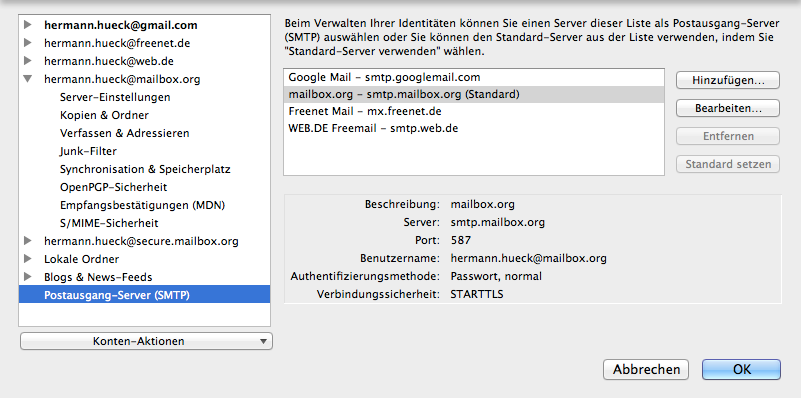
Abbildung 3: Thunderbird-Konfiguration für den
Postausgang-Server (SMTP)
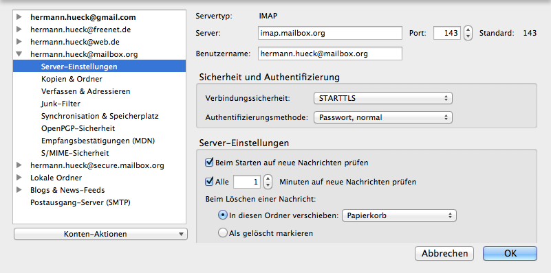
Abbildung 4: Thunderbird-Konfiguration für den
Posteingang-Server (IMAP)
Auf keinen Fall sollte für
die Verbindungssicherheit die Option keine gewählt werden.
Mit dieser Einstellung würden die Mails und auch das Anmeldepasswort
im Klartext über das Netz übertragen und wären für jeden
einsehbar. Diese Einstellung funktioniert allerdings in den meisten
Fällen nicht mehr, da die unverschlüsselte Übertragung vom
Mail-Provider in der Regel nicht mehr unterstützt wird.
Bei jeder der
Einstellungen (für SMTP, für IMAP und für POP3) muss auch die
Portnummer angegeben werden. Diese ist meist richtig voreingestellt.
Im Zweifelsfall lässt sich die richtige Portnummer auf der Website
des Mail-Providers (meist in der Online-Hilfe) auffinden. Diese ist
in die Thunderbird-Konfiguration einzutragen.
Ob die Einstellungen
funktionieren, lässt sich am einfachsten prüfen, indem man eine
Testmail an sich selbst sendet.
Die Details der
Thunderbird-Konfiguration will ich hier nicht wiederholen. Sie
ist an vielen Stellen im Web zu finden, z.B. unter folgenden URLs:
3.6 IMAP oder POP3 ?
Wer seine Mails definitiv nur auf
einem Gerät – typischerweise dem PC – bearbeitet, der kann den
Mail-Abruf im Mail-Client (Thunderbird etc.) mit POP (Post
Office Protocol) einrichten. Die Mails werden dabei lokal auf dem
betreffenden Gerät gespeichert und vom Server gelöscht. Dies ist
heute (aus verschiedenen Gründen) eher unüblich geworden. Auch der
Zugriff auf die Mails mit dem Browser (Webmail) ist damit
ausgeschlossen.
Bei IMAP (Internet Mail Access
Protocol) bleiben die Mails zentral auf dem Server des Providers
gespeichert. Der Zugriff ist von beliebig vielen Geräten mit einem
Mail-Client sowie über die Webmail-Schnittstelle mit dem Browser
(z.B. im Internet-Café) möglich.
Das Risiko, die Mails zu verlieren,
ist bei IMAP ebenfalls viel geringer. Selbst wenn der Rechner durch
einen Festplattencrash unbenutzbar wird, sind die Mails, die auf dem
Server des Providers lagern, sicher verwahrt. Man kann jederzeit auch
mit einem anderen Rechner oder mit dem Browser über die
Webmail-Schnittstelle darauf zugreifen.
Heute wird zum Zugriff auf Mails fast
ausschließlich IMAP verwendet. Wer mehrere Geräte (z.B. Laptop und
Smartphone) für den Zugriff auf die Mails verwendet, kommt an IMAP
nicht vorbei. POP hat gegenüber IMAP keine Vorteile.
3.7 Die passende Email-App auf dem Smartphone
Auf Tablets und Smartphones steht
der Mail-Client Thunderbird nicht zur Verfügung. Es
gibt jedoch diverse Mail-Apps für Android und iOS. Die Auswahl ist
groß. Das IMAP-Protokoll wird von fast allen unterstützt (siehe
c't-Sonderheft „Sichere Email“, Seite 50).
Hat man die Absicht, seine Mails
später auch noch mit PGP zu verschlüsseln, wird die Auswahl der
Mail-Apps deutlich kleiner. Will man bei der Verschlüsselung auch
das modernere Format PGP/MIME (siehe Kap. 10.1.1) einsetzen, stehen
nur noch wenige Apps zur Auswahl.
Unter iOS steht nur iPGMail
zur Verfügung (siehe Kap. 11.2.1). Es kann die Mails auch mit
PGP/MIME verschlüsseln.
Unter Android bieten einige wenige
Mail-Apps Unterstützung für PGP/MIME (siehe Kap. 11.1). Mein
Favorit ist MailDroid.
Diese Mail-App setze ich (in der Pro-Variante) nun schon seit ca.
einem Jahr auf meinen Android-Geräten ein und habe bislang keinen
Anlass zur Beanstandung gefunden.
Die
Mail-App ist grundsätzlich mit denselben Konfigurationseinstellungen
einzurichten wie Thunderbird
(siehe Kap. 3.5.1). Als Zugriffsprotokolle sind SMTP für den Versand
und IMAP für den Abruf der Mails zu konfigurieren. Wie bei
Thunderbird
ist für die Verbindungssicherheit meist STARTTLS, seltener SSL/TLS
einzutragen.
3.8 Sicherer Mail-Alias bei mailbox.org
Beim Provider mailbox.org
kann jeder registrierte Benutzer (zusätzlich zur
Standard-Mailadresse max.mayer@mailbox.org)
einen weiteren Email-Alias
max.mayer@secure.mailbox.org
einrichten.
Bei Verwendung dieser sicheren Mail-Adresse garantiert mailbox.org,
dass die Übertragung der Mail vom oder zum Provider des
Kommunikationspartners (Kap. 3.1, Schritt 4) verschlüsselt erfolgt.
Das gilt sowohl für die Versandrichtung als auch für die
Empfangsrichtung. Ist die verschlüsselte Übertragung nicht möglich,
wird die Mail nicht übertragen und der Absender erhält eine Antwort
mit einer Fehlermeldung. Die Mail kann also nicht bei der Übertragung
von der NSA oder von Hackern abgefangen und gelesen werden.
Schickst du eine Mail an mich, ist
die sichere Mail-Adresse
hermann.hueck@secure.mailbox.org
zu bevorzugen. Sie funktioniert nach meiner bisherigen Erfahrung in
über 95 % aller Fälle. Sollte die Mail-Übertragung mit der
sicheren Adresse wider Erwarten scheitern, kannst du alternativ
meine Standard-Mail-Adresse hermann.hueck@mailbox.org
verwenden. Sie funktioniert immer.
Bei
der Verwendung der Standard-Mail-Adresse hermann.hueck@mailbox.org
versuchen Absender-Provider und Empfänger-Provider ebenfalls, einen
verschlüsselten Kanal aufzubauen. Sollte die verschlüsselte
Übertragung scheitern, da der andere Provider dies nicht
unterstützt, wird die Mail dennoch übertragen – allerdings kann
die Übertragung dann evtl. unverschlüsselt erfolgen.
Siehe
auch: https://mailbox.org/mails-definitiv-sicher-versenden/
3.9 Zusammenfassung
Wir
haben uns in diesem Kapitel den Übertragungsweg einer Mail vom
Absender zum Empfänger angesehen. Auf diesem Weg wird die Mail über
drei Teilstrecken transportiert (Absender → Absender-Provider,
Absender-Provider → Empfänger-Provider, Empfänger-Provider →
Empfänger). Die Übertragung auf den Teilstrecken muss durch
Transport-Verschlüsselung gesichert sein, damit die Mails auf keiner
der Teilstrecken kompromittiert (abgefangen, gelesen oder sogar
verfälscht) werden kann.
Wir
haben gesehen, dass es Transport-Verschlüsselung unterschiedlicher
Quailität gibt und auch einige Qualitätsmerkmale dafür
aufgestellt. Zuständig für eine qualitativ hochwertige
Transport-Verschlüsselung sind in erster Linie die Mail-Provider.
Die Qualität der Transport-Verschlüsselung ist ein wichtiges
Kriterium für die Auswahl des richtigen Email-Providers. Doch auch
andere Kriterien haben wir uns angesehen, um unter den
Email-Providern den geeignetsten auszuwählen.
Auch
wir Mail-Nutzer müssen die richtigen Einstellungen in unserem
Mail-Client vornehmen, damit (bei den Protokollen SMTP, IMAP und POP)
die optimale Transport-Verschlüsselung bei der Kommunikation mit dem
Provider genutzt wird. Dies wurde am Beispiel des Mail-Client
Thunderbird
gezeigt, gilt jedoch grundsätzlich für alle Mail-Clients auf dem PC
in gleicher Weise.
Um
auch auf dem mobilen Gerät Mails zu senden und zu empfangen, ist der
Zugriff auf die Mails auf dem PC und auf dem Smartphone mit IMAP
einzurichten. Dazu muss man sich auf dem Smartphone eine Mail-App
installieren und die Einstellungen für SMTP und IMAP analog zu den
Thunderbird-Einstellungen vornehmen.
Die
Verwendung des alten Protokolls POP kann ich nicht mehr empfehlen.
Sie ist höchstens dann sinnvoll, wenn man den Mailzugriff wirklich
nur auf einem einzigen Gerät benötigt. Doch auch dann bietet POP
gegenüber IMAP keine Vorteile.
Empfehlungen:
3.10 L
Sicheren
Mail-Provider wählen
Im
Mail-Client IMAP-Konto einrichten (auf Mailabruf mit POP
verzichten)
IMAP-Zugang
mit SSL/TLS oder (wenn möglich) mit STARTTLS konfigurieren (beim
Mail-Client auf dem PC und bei der Mail-App auf dem Smartphone oder
Tablet)
SMTP-Zugang
für Mailversand mit SSL/TLS oder (wenn möglich) mit STARTTLS
konfigurieren (beim Mail-Client auf dem PC und bei der Mail-App auf
dem Smartphone oder Tablet)
inks zu diesem Kapitel
4 Sichere
Mail-Nutzung
Die Email ist eines der beliebtesten
Kommunikationsmittel geworden. Genau deshalb wird sie von Angreifern
sehr gerne benutzt, um die Mail-Nutzer mit Spam zu überschütten,
sie auszuspähen, ihren Rechner mit Viren zu infizieren oder sie zu
einen Verhalten zu verleiten (z.B. den Klick auf einen gefährlichen
Link), das dem Angreifer nutzt aber dem Mail-Empfänger schadet.
Viele Nutzer sind sich der drohenden
Gefahren nicht bewusst und gehen zu sorglos mit ihren Emails um. Mit
den Mails sollte man wie mit einer heißen Herdplatte umgehen, an der
man sich die Finger heftig verbrennen kann. Auf diese Weise würde
man auch die erforderliche Sorgfalt im Umgang mit den Emails walten
lassen.
In diesem Kapitel möchte auf die
Gefahren beim Email-Empfang aufmerksam machen. Es geht um der sichere
Nutzung des Mail-Client im täglichen Gebrauch. Einerseits sind
sinnvolle Einstellungen vorzunehmen, andererseits soll das
Bewusstsein des Nutzers geschärft werden, sodass er nicht ungewollt
Informationen von sich preisgibt oder unbedacht seinen Rechner mit
einem Schadprogramm infiziert.
4.1 Rechnersicherheit
Gehen wir davon aus, dass wir (wie in
Kap. 3.3 dargelegt) einen professionellen und sicherheits-bewussten
Mail-Provider gewählt haben und dass dieser einen guten Job macht.
Die in Kap. 3.5 beschriebenen Maßnahmen zur Konfiguration des
Mail-Client sorgen beim Mail-Versand und -Empfang für einen
verschlüsselten Transportkanal zwischen dem Rechner des Benutzers
und dem Server des Providers – also bei den Schritten 2 bis 6 des
Übertragungswegs (siehe Kapitel 3.1).
Für die Sicherheit der Schritte 1
und 7 sind wir selbst als Absender und Empfänger zuständig. Wir
müssen die Software auf unserem Rechner aktuell und virenfrei
halten. Da fast täglich neue Sicherheitslücken entdeckt und neue
Viren entwickelt werden, müssen das Betriebssystem des Rechners, die
installierten Programme und die Viren-Signaturen aktuell gehalten
werden.
Den Rechner aktuell zu halten, dient
nicht nur dazu, die Kompromittierung der Mails zu verhindern, sondern
es ist eine allgemeine Sicherheitsmaßnahme. Die Rechnersicherheit
ist für verschiedene Betriebssysteme in Kap. 12.2 beschrieben.
4.2 Thunderbird-Updates
Jedes Computerprogramm enthält
Fehler und Sicherheitslücken. Bei Programmen, die in erster Linie
zur Kommunikation über das Internet eingesetzt werden, sind diese
besonders kritisch. Dies betrifft in erster Linie den Browser und den
Email-Client, da diese beiden Programme von den meisten Benutzern am
häufigsten verwendet werden. Werden neue Mängel entdeckt, dann
werden sie vom Hersteller des Programms hoffentlich schnell behoben.
Updates bringen die neuen fehlerbereinigten Programmversionen auf die
Rechner der Benutzer.
Dies gilt natürlich auch für die
Email-Clients, in unserem Fall für Thunderbird.
Dieser Email-Client muss – wie alle anderen Programme –
aktuell gehalten werden. Manuell erledigt man das unter Hilfe →
Auf Updates überprüfen.
Es lässt sich auch eine
Update-Automatik einstellen in Thunderbird unter Einstellungen
→ Erweitert → Update. Dort sollten beide Häkchen gesetzt
werden, für das Update von Thunderbird und für die Updates
der Add-ons.
Siehe auch folgende URL:
Nutzt
man einen anderen Email-Client (Outlook,
Apple
Mail,
Pegasus
Mail,
Evolution
etc.), so muss dieser selbstverständlich auch aktuell gehalten
werden.
4.3 Absender
kontrollieren
Mails,
die Schädliches im Schilde führen, kommen oft unscheinbar daher. Um
das Vertrauen des Empfängers zu erwecken, versuchen sie häufig, den
wahren Absender zu verschleiern. Dies können sie auf drei Arten tun:
4.3.1 Gefälschter
Absender-Anzeigename
Eine
Email-Adresse kann durch einen Anzeigenamen ergänzt werden. In der
Adresse „Leila
Liebeskind <leila.liebeskind@gmail.com>“
steht die Email-Adresse in spitzen Klammern. Vor der linken spitzen
Klammer steht der Anzeigename.
Ein
Hacker, der mich täuschen will könnte mir ohne Weiteres eine Mail
zusenden mit der Absenderadresse „Leila
Liebeskind <ludwig.boesergauner@gmail.com>“.
Der angezeigte Name ist eine mir bekannte Person. Die Email-Adresse
gehört aber nicht dieser Person. Wenn ich Leila Liebeskind kenne,
werde ich vielleicht nicht misstrauisch und beachte die Email-Adresse
gar nicht.
Dieses
Täuschungsmanöver ist nicht besonders intelligent, wenn man sich
die Email-Adresse in den spitzen Klammern richtig ansieht. Dies
sollte man allerdings auch tun. Viele Benutzer prüfen die
Email-Adresse allerdings gar nicht und fallen schon auf diese
einfache Täuschung herein.
Manche
Email-Programme zeigen die Mail-Adresse normalerweise gar nicht an,
sondern beschränken sich auf den Anzeigenamen. Dies ist besonders
häufig bei Mail-Apps auf dem Smartphone der Fall, die den knappen
Platz auf dem Bildschirm möglichst gut auszunutzen versuchen und
deshalb auf die Anzeige der Mail-Adresse einfach verzichten.
Mit
erweiterten Anzeigeoptionen oder durch einfaches Scrollen lässt sich
die Email-Adresse jedoch in fast jedem Email-Programm zur Anzeige
bringen, auch in den Mail-Apps auf dem Smartphone. Dazu bedarf es
meist ein paar zusätzlicher Klicks, auf die der faule Benutzer gerne
verzichtet. Die Bequemlichkeit des Benutzers spielt dann dem Hacker
in die Hände.
4.3.2 Ähnliche
Absender-Mail-Adresse
Steckt
der Angreifer etwas mehr Intelligenz und Mühe in sein
Täuschungsmanöver, dann registriert er bei Google die Mail-Adresse
leila.libeskind@gmail.com
(Nachname mit 'i' statt mit 'ie' geschrieben) und sendet mir eine
Mail mit dem Absender „Leila
Liebeskind <leila.libeskind@gmail.com>“.
Nun muss ich schon sehr genau auf die Email-Adresse achten, um den
Täuschungsversuch zu bemerken.
4.3.3 Gefälschte
Absender-Mail-Adresse
Mit
den passenden Werkzeugen ist allerdings für einen Betrüger kein
Problem, bei der Absenderadresse einfach zu lügen. Der Angreifer
kann mir also ohne Weiteres eine Mail mit der korrektem Anzeigenamen
und korrekter Absender-Mail-Adresse „Leila
Liebeskind <leila.liebeskind@gmail.com>“
senden. Er muss dazu nicht einmal eine zusätzliche Mail-Adresse
registrieren oder in den Mail-Account von Leila Liebeskind
einbrechen.
Bei
dieser Art des Betruges ist die Absenderfälschung perfekt. Ich kann
die gefälschte Mail auch bei großer Aufmerksamkeit nicht mehr am
Anzeigenamen oder an der Email-Adresse des Absenders erkennen. In
diesem Fall bin ich auf andere Merkmale der Mail angewiesen, um die
betrügerische Mail als solche zu enttarnen. Ich kann z.B. auch
darauf achten, ob der Inhalt der Mail plausibel ist.
4.4 Mail-Inhalt
auf Plausibilität prüfen
Betrügerische
Mails versuchen meist einen echten Anschein zu erwecken. Der Absender
beabsichtigt damit, den Empfänger zu einer Handlung zu verleiten,
die für den Absender nützlich für den Empfänger jedoch schädlich
ist. (Er soll einen gefährlichen Anhang öffnen (Kap. 4.5), auf
einen gefährlichen Link klicken (Kap. 4.6.3) oder die externen
Inhalte nachladen (Kap. 4.6.4).)
Um
dies zu erreichen, muss er den
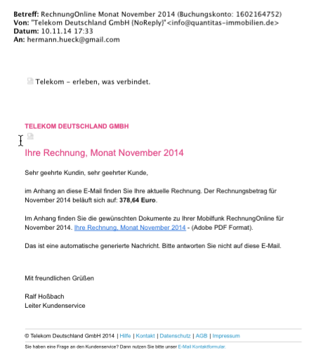
Abbildung 5: Die Mail scheint von der Telekom zu kommen.
Empfänger täuschen und sein Vertrauen gewinnen. Dazu muss
seine Mail möglichst echt und unverdächtig aussehen. Neben der
Fälschung des Absenders (Kap. 4.3) versucht er auch beim Inhalt der
Mail glaubwürdig zu sein. Doch dabei unterlaufen ihm doch meist
größere oder auch nur kleinere Fehler, die dem aufmerksamen
Empfänger auffallen.
Eine gut gemachte, infizierte Mail
kommt beispielsweise von telekom.de und enthält im Anhang
eine PDF-Rechnung. Man öffnet die getürkte Rechnung, weil man
nachsehen will, wie viel man zu bezahlen hat, und genau damit ist man
dem Betrüger auf den Leim gegangen und hat seinen Rechner infiziert,
falls der Virenscanner nicht vorher warnt.
Also sollte man, bevor man die
möglicherweise gefährliche Aktion ausführt (hier: den Anhang
öffnet) zuerst überlegen, ob diese Rechnung überhaupt plausibel
ist:
Eine Rechnung von der Telekom?
Ich habe meinen Anschluss doch bei Vodaphone!
Die Rechnung jetzt am 20. des
Monats? Die kommt doch sonst immer ungefähr am 10.!
Wieso
kommt die Rechnung denn jetzt per Mail? Normalerweise muss ich mich
doch auf der Website des Providers anmelden und die Rechnung dann
herunterladen!
Misstrauen
ist hier ein guter Ratgeber. Kommt mir bei genauer Betrachtung der
Mail irgend etwas unstimmig oder verdächtig vor, dann fasse ich die
Mail lieber mit Samthandschuhen an. Das Öffnen des Anhangs oder den
Klick auf den Link führe ich nur aus, wenn ich der Mail wirklich
vertraue. Lieber die Mail löschen.
Und
wenn es eine wichtige Mail sein könnte, dann kann man ja den
Absender evtl. noch mal anrufen, um sicherzustellen, dass die Mail
wirklich von ihm kommt und dass der enthaltene Anhang ungefährlich
ist und eine für mich wichtige Information enthält.
4.5 Gefahren in Mail-Anhängen abwenden
Mit einem virenfreien Rechner und
einem aktuellen Thunderbird
sind wir allerdings noch nicht ganz auf der sicheren Seite. Es gibt
weitere Gefahrenstellen, derer wir uns bewusst sein sollten.
Mail-Anhänge können Viren oder
andere Schadprogramme enthalten. Ob ein Anhang infiziert ist, ist in
der Regel nicht zu erkennen.
Doch dabei hilft ein aktueller
Virenscanner. Dieser muss natürlich so eingestellt sein, dass er
die Emails überprüft. Wenn der Benutzer einen infizierten
Mail-Anhang zu öffnen oder zu speichern versucht, dann sollte der
Virenscanner diese Aktion verhindern und den Benutzer warnen. Man
kann auch den Mail-Anhang zuerst speichern, dann die gespeicherte
Datei mit dem Virenscanner untersuchen und sie erst dann öffnen,
wenn der Virenscanner sie als ungefährlich eingestuft hat.
Mit einem aktuellen Virenscanner
lassen sich so die meisten Viren in Mail-Anhängen unschädlich
machen. Eine Garantie für Virenfreiheit ist dies allerdings nicht.
Einen ganz neuen Virus erkennt der Virenscanner möglicherweise nicht
oder erst am nächsten Tag. Da kann es jedoch schon zu spät sein.
Dem verbleibenden Restrisiko kann man
nur ein gesundes Misstrauen gegenüber Mail-Anhängen
entgegensetzen. Idealerweise öffnet man nur Anhänge, die von
bekannten Absendern kommen und die man erwartet.
Diese Verhaltensregel ist allerdings
nicht sehr praxisnah. Man kann die Regel etwas abmildern: man öffnet
nur Anhänge von bekannten Absendern. Doch bereits hier begibt man
sich möglicherweise schon aufs Glatteis, denn die Absenderadresse
einer Mail lässt sich – wie oben schon ausgeführt – mit ein
wenig technischem Know-how recht einfach fälschen.
Mehr Information zu gefährlichen
Email-Anhängen findet man auf den Seiten des Heise-Verlags unter
http://www.heise.de/security/dienste/Dateianhaenge-472901.html
.
Unter
http://www.heise.de/security/dienste/Mails-mit-Anhaengen-777837.html
kann man sich auch Test-Mails mit harmlosen schädlichen Anhängen
zusenden lassen. Dabei lässt sich gut ausprobieren, wie schädliche
Anhänge funktionieren, ohne dass wirklich ein Schaden auf dem
Rechner angerichtet wird.
4.6 Gefahren beim Empfang von HTML-Mails abwenden
Text-Mails sind ungefährlich.
Text-Mails stammen zwar aus der „Steinzeit des Internet“. Sie
sind bei vielen aber immer noch im regelmäßigen Gebrauch. Sie
unterstützen keine gestalterischen Elemente wie Überschriften,
unterschiedliche Schriftarten, Kursivschrift oder eingebettete
Bilder.
Mails sind heute meist kein reiner
Text mehr, sondern sie sind im HTML-Format verfasst. Gesundes
Misstrauen bei HTML-Mails ist – wie bei Mails mit Anhängen
– angebracht.
HTML-Mails sind multimedial. Wie
Webseiten erlauben sie die Strukturierung und Formatierung des Textes
(Überschriften, Kursiv- oder Fettdruck, Überschriften und Absätze,
farbige Schriften oder Schrifthintergründe) aber auch eingebettete
Links, Bilder, Sounds oder Videos und sogar kleine eingebettete
Programme.
Doch genau diese Eigenschaften machen
die HTML-Mails potentiell gefährlich.
Eingebettete
JavaScript-Programme können Unfug treiben.
Ebenso können eingebettete
Java-Applets Unerwünschtes anstellen. Dies kommt eher selten vor.
Links können den Benutzer dazu
verlocken, gefährliche Webseiten im Browser zu öffnen.
Bilder (aber auch Audio- und
Video-Dateien) können (durch sog. User-Tracking) den Benutzer
ausspionieren.
Mehr Information zu den Gefahren von
HTML-Mails findet man auf den Seiten des Heise-Verlags unter
http://www.heise.de/security/dienste/HTML-E-Mails-472898.html
.
Unter
http://www.heise.de/security/dienste/HTML-Mails-773971.html
kann man sich auch Test-Mails mit harmlosen HTML-Mails zusenden
lassen, die jedoch das Gefahrenpotential, das diese Mails bergen,
sehr gut veranschaulichen.
4.6.1 Die Ausführung von JavaScript muss deaktiviert sein.
JavaScript ist eine
Programmiersprache, die meist in erster Linie in Webbrowsern zum
Einsatz kommt. JavaScript-Programme werden in HTML-Seiten eingebettet
und sind dann für das dynamische Verhalten der Seite verantwortlich.
Im Browser JavaScript abzuschalten, ist in der Regel nicht
zweckmäßig, da man dann die meisten Webseiten nicht mehr sinnvoll
nutzen kann.
JavaScript-Programme kann man auch in
HTML-Mails einbetten. In diesem Fall ist das dynamische Verhalten des
Mail-Inhalts allermeist unerwünscht. Es kann – wie schon gesagt –
recht gefährlich sein, da man nicht kontrollieren kann, welche
erwünschten oder unerwünschten Aktionen das JavaScript-Programm
ausführt. Deshalb sollte man JavaScript im Email-Client abschalten
(siehe auch Glossar, Kap 15).
Die Ausführung von JavaScript
ist in Thunderbird per Voreinstellung deaktiviert,
sodass dies meist keine reale Gefahr darstellt, wenn man die Mails
mit Thunderbird
abruft.
Ob Thunderbird
wirklich kein JavaScript ausführt, lässt sich leicht auf der
folgenden Webseite von Heise prüfen. Auf
http://www.heise.de/security/dienste/emailcheck/html-mails/javascript/
gibt man die eigene Email-Adresse ein und fordert eine Test-Mail an.
Kurz darauf erhält man eine automatisch erstellte Mail mit einem
Anforderungslink. Erst beim Klick auf diesen Link erhält man die
eigentliche Test-Mail, die harmlosen JavaScript-Code enthält, der
nur ein Popup-Fenster öffnet. Erscheint beim Öffnen der zweiten
Mail das Popup-Fenster, dann ist JavaScript in Thunderbird
aktiviert und man muss es abschalten. Erscheint das Popup-Fenster
nicht, dann führt Thunderbird
den JavaScript-Code nicht aus; man darf also beruhigt sein.
Sollte
JavaScript wider Erwarten doch aktiviert sein, so muss man die recht
versteckte erweiterte Konfiguration von Thunderbird
öffnen und dort die Deaktivierung vornehmen:
Erweiterte
Konfiguration öffnen unter Thunderbird
→ Einstellungen →
Erweitert →
Konfiguration bearbeiten...
Fenster
mit der Warnung „Ich werde vorsichtig sein,
versprochen!“ bestätigen.
Jetzt geht’s nämlich in die Eingeweide von Thunderbird.
Eine gewaltige Liste von Einstellungen tut sich auf.
Um
die Liste auf die Einträge einzugrenzen, die JavaScript betreffen,
gibt man im Suchfenster „javascript“ ein.
Die
beiden folgenden Konfigurationsvariablen sollten auf „false“
eingestellt sein.
Fehlt
einer der Werte oder beide, so ist dies unproblematisch, da die
Voreinstellung „false“ auch dann gilt, wenn der betreffende Wert
in der Liste nicht enthalten ist.
I
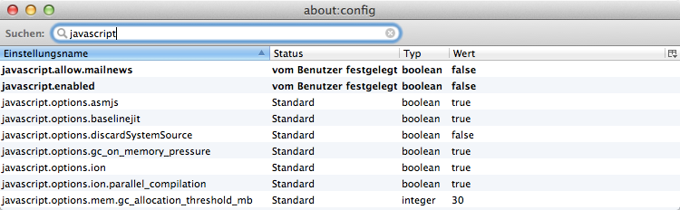
Abbildung 6: Erweiterte Einstellungen von Thunderbird:
Konfigurationsvariablen für JavaScript
st dies nicht der Fall (Variable ist auf
„true“ eingestellt) kann der betreffende Wert durch einen
Doppelklick auf die betreffende Zeile umgestellt werden.
Des
Fenster mit der erweiterten Konfiguration kann danach wieder
geschlossen werden.
4.6.2 Die Ausführung von Java-Applets muss deaktiviert sein.
Java-Applets
sind in HTML-Seiten eingebettete Java-Programme. Sie können
ebenfalls innerhalb einer HTML-Seite oder einer HTML-Mail aktiv
werden und sind damit eine potentielle Gefahrenquelle. Java-Applets
sind längst nicht so weit verbreitet wie JavaScript. Dennoch sollte
auch ihre Ausführung im Mail-Client deaktiviert sein (siehe auch
Glossar, Kap 15).
Ob
Thunderbird
tatsächlich Java-Applets ausführen würde, lässt sich analog zum
JavaScript-Test im vorigen Kapitel auch auf der Webseite des
Heise-Verlags prüfen unter:
http://www.heise.de/security/dienste/emailcheck/html-mails/java/
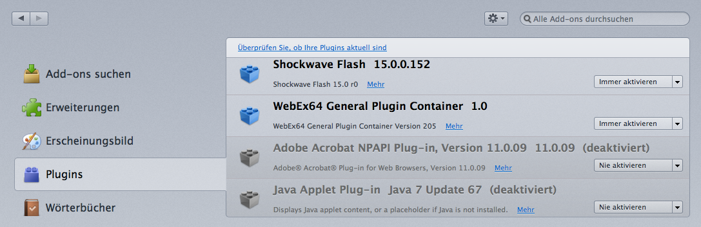
Abbildung 7: Thunderbird-Plugins: Das Java-Plugin (grau
unterlegt) ist deaktiviert.
Ist
Java auf dem PC installiert (dies ist auf den meisten PCs der Fall),
dann findet sich in Thunderbird
auch das Java-Plugin. Unter dem Menüpunkt Extras →
Add-ons → Plugins werden alle
in Thunderbird installierten Plugins aufgelistet. Hier lässt sich
das Java-Plugin deaktivieren. Deaktivierte Plugins sind entsprechend
gekennzeichnet und erscheinen grau unterlegt.
4.6.3 Vorsicht bei Links
HTML-Mails können ebenso wie
HTML-Seiten Links enthalten. Beim Klick auf den Link öffnet der
Browser die Webseite, auf die der Link verweist.
Unter dem Gesichtspunkt der
Sicherheit, kann man jeden Link als Verführung des Benutzers
betrachten, darauf zu klicken. Der Link selbst ist in der Regel
ungefährlich. Er kann jedoch zu einer infizierten Webseite führen.
Sobald sie geöffnet wird, wird das in der Webseite versteckte
Schadprogramm heruntergeladen und möglicherweise auch gleich
ausgeführt, falls der Virenscanner nicht vorher Alarm schlägt. Doch
kann man sich auf den Virenscanner nicht immer zu 100 Prozent
verlassen, da er die allerneuesten Viren möglicherweise noch nicht
kennt.
Ähnlich wie beim Öffnen von
Mail-Anhängen muss der Nutzer beim Klicken auf Links in HTML-Mails
besonders misstrauisch sein und prüfen, wohin der Link wirklich
führt.
Die URL, die dem Linktext unterlegt
ist, wird sichtbar, wenn man mit der Maus auf den Linktext zeigt,
ohne darauf zu klicken. Die komplette URL erscheint dann in der
linken unteren Ecke des Thunderbird-Fensters.
Dort könnte dann
http://www.microsoft.com.boese-domain.net/dies/und/das/und/sonst/noch/was/
stehen. Sieht man nicht genau hin, so glaubt man, der Link würde auf
eine Webseite von Microsoft (bei www.microsoft.com)
führen. Tatsächlich führt der Link auf eine Seite von
boese-domain.net.
Auch diese Falle lässt sich
gefahrlos mit einer Test-Mail veranschaulichen, die man sich von
Heise unter folgender URL anfordern
kann:
http://www.heise.de/security/dienste/emailcheck/html-mails/link_faelschung/
. Man erhält dann eine Test-Mail, die mehrere Beispiele für solche
irreführenden Hyperlinks enthält.
4.6.3.1 Phishing-Mails
Phishing-Mails sind möglichst
unverdächtige Mails, die versuchen, den Benutzer zum Klick auf einen
Link zu verleiten. Der Link führt dann typischerweise auf eine
ebenfalls unverdächtig aussehende Webseite, auf der der Benutzer aus
irgend einem vorgespiegelten, jedoch plausibel erscheinenden Grund
sein Passwort oder seine Kreditkartendaten eingeben soll. Die
eingegebenen Daten werden „abgefischt“, um sie danach zum
Einbruch in das Konto des Benutzers oder zu unbefugten Zahlungen mit
der Kreditkarte zu missbrauchen.
Bei Phishing-Mails ist die Mail
selbst oft ungefährlich. Doch der in der Mail enthaltene Link führt
zu einer Website, auf der die Gefahr lauert.
Phishing-Mails werden häufig an
Tausende Benutzer gleichzeitig versendet. Ihr Inhalt ist meist recht
allgemein und unpersönlich. Da ihr Inhalt meist nicht auf die
persönlichen Verhältnisse des Empfängers zugeschnitten sind, sind
sie häufig leicht zu enttarnen und werden auch von den meisten
Empfängern einfach gelöscht. Doch unter mehreren Tausend fallen
immer ein paar Unbedarfte auch auf die einfachsten Tricks herein.
Ein typisches Beispiel für Phishing
ist in diesem Artikel von Ende Februar 2015 beschrieben:
http://www.heise.de/mac-and-i/meldung/Phisher-setzen-verstaerkt-auf-iCloud-Warnhinweise-2559652.html
.
In diesem Fall senden die Angreifer
eine Mail an die potentiellen Opfer, die einer originalen
Apple-Warnmail täuschend gleichsieht. Sie empfehlen darin dem
Empfänger, wegen möglicher Kompromittierung des Apple-Accounts die
Apple-ID zurückzusetzen. Dazu wird auch gleich ein Link angegeben,
der angeblich direkt zu Apples Webseite zur Zurücksetzung der
Apple-ID führt. Dieser Link führt allerdings nicht zur richtigen
Seite unter „appleid.apple.com“ sondern auf die Seite der
Betrüger, die der Apple-Seite wiederum täuschend ähnlich sieht.
Fällt ein Benutzer auf den Trick herein und gibt auf der Seite des
Betrügers seine Apple-ID und sein Passwort ein, so werden diese
Informationen dort abgefischt. Der Betrüger hat damit die
Anmeldedaten für den Apple-Account abgefangen und kann nun in den
Account des Getäuschten einbrechen.
4.6.3.2
Spear-Phishing
Gefährlicher ist das sog.
Spear-Phishing. Diese Art des Phishing funktioniert im Prinzip
genau so. Sie richtet sich allerdings nicht an Tausende Benutzer,
sondern zielt auf einen ganz bestimmten Benutzer ab, z.B. einen
Politiker, den Manager oder auch den Administrator einer Bank oder
eines Rüstungskonzerns. Der Angreifer sammelt möglichst viele
persönliche Informationen über sein Angriffsziel
(Verwandtschaftsverhältnisse, Freundschaften, Kollegen, Interessen,
Hobbies, etc.) Durch die Suche bei Google und in sozialen Medien
(Facebook, Twitter etc.) lassen sich manchmal viele persönliche
Informationen zusammentragen.
Mit der Kenntnis dieser persönlichen
Informationen kann der Angreifer leicht eine sehr persönliche und
glaubwürdige Mail erstellen. Als gefälschter Absender wird die
Email-Adresse eines Kollegen oder eines guten Bekannten oder
Verwandten des Benutzers angegeben, sodass der Empfänger keinen
Verdacht schöpft.
So persönlich angesprochen klickt
der betroffene Mail-Empfänger nichts Böses ahnend auf den
gefährlichen Link oder öffnet den gefährlichen Anhang. Gut
gemachtem Spear-Phishing kann man sich sehr schwer entziehen, da die
Phishing-Mail im täglichen Nachrichtenstrom nicht auffällt und ihr
Inhalt sehr vertrauenswürdig erscheint, denn der Betrüger hat die
Mail-Adresse einer bekannten Person als gefälschten Absender
eingetragen.
4.6.4 User-Tracking verhindern
H
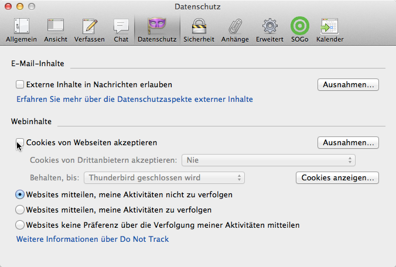
Abbildung 8: Thunderbird-Einstellungen: Nachladen externer
Inhalte deaktivieren
TML-Mails können externe eingebettete Objekte bzw. Inhalte
enthalten, die erst bei der Anzeige der Mail aus dem Web nachgeladen
und dann angezeigt oder ausgeführt werden. Solche externen Objekte
sind häufig Bild-Dateien (im JPEG-, PNG- oder GIF-Format). Es können
jedoch auch Audio- oder Video-Dateien sein oder die in den vorigen
Kapiteln bereits erwähnten JavaScript-Programme. Audio- und
Video-Dateien werden allerdings in HTML-Mails wesentlich seltener
eingesetzt als Bilder. Bilder in HTML-Mails zu verschicken, ist gang
und gäbe. Ich beschränke mich hier auf die Bilder. Manchmal sind
sie nur ein Pixel klein und damit mit bloßem Auge nicht erkennbar.
Extern nennt man diese
Objekte, weil sie nicht Teil der HTML-Mail sind. In der Mail befinden
sich nur die URLs dieser Objekte. Beim Empfang einer HTML-Mail
befinden sich diese Objekte noch nicht auf dem Rechner. Sie werden
erst aus dem Web nachgeladen, wenn die HTML-Mail angezeigt werden
soll.
In Thunderbird lässt sich das
Nachladen externer Objekte bzw. Inhalte deaktivieren oder
aktivieren.
Die Deaktivierung ist die
Voreinstellung.
A
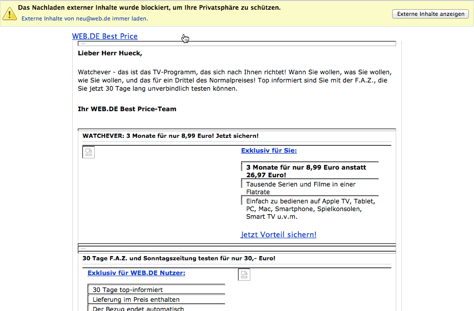
Abbildung 9: Thunderbird: Werbemail von WEB.DE vor dem Laden der
externen Inhalte
bbildung 9 und 10 zeigen eine Werbemail von
WEB.DE vor und nach dem Laden der externen Objekte. Dies
veranschaulicht, wie sehr manche HTML-Mails auf ihre externen Inhalte
angewiesen sind.
In den Bildern lauert in der Regel
keine Gefahr in Gestalt von Schadprogrammen, die auf dem Rechner ihr
Unwesen treiben.
Die Gefahr ist eine andere. Die
Bilder (und die anderen externen Objekte) können beim Nachladen
Informationen über den Mail-Empfänger an den Versender liefern. Sie
können den Mail-Empfänger quasi ausspionieren oder verfolgen
(User-Tracking). Dies wird nicht nur von den vielen Versendern von
Newslettern praktiziert, auch Spam-Versender sind sehr daran
interessiert, etwas über die Empfänger der Spam-Mails zu erfahren.
Welche Informationen lassen sich
durch User-Tracking über den Mail-Empfänger herausfinden? Der
Mail-Versender kann auf diesem Wege erfahren,
wann die Mail geöffnet wurde
(Uhrzeit),
wo die Mail gelesen wurde (die
IP-Adresse des Empfängers lässt sich ermitteln und diese lässt
häufig den Rückschluss auf seinen Aufenthaltsort zu),
auf welchem Betriebssystem
(Windows, OS X, iOS oder Android) die Mail gelesen wurde,
mit welchem Mail-Client die Mail
gelesen wurde (Thunderbird, Outlook oder ein anderes Mail-Programm
oder bei Nutzung von Webmail mit welchem Browser)
und bei welchem
Internet-Provider der Mail-Empfänger aktuell seinen Internetzugang
hat.
Und schließlich wurde die
Existenz der Email-Adresse verifiziert. Die Tatsache, dass eine Mail
geöffnet und die externen Inhalte nachgeladen wurden, ist ein
Nachweis dafür, dass die betreffende Mail-Adresse gültig ist und
von jemandem benutzt wird. Dies kann für Spam-Versender interessant
sein, die Millionen Emails an Adressen versenden, von denen sie gar
nicht wissen, ob sie existieren. Durch das Laden der externen
Inhalte ist die Mail-Adresse als gültige Adresse bestätigt. Der
Spam-Versender weiß nun, bei wem die Spam auch wirklich ankommt.
A
Abbildung 10: Thunderbird: Werbemail von WEB.DE nach dem Laden
der externen Inhalte
lles in Allem sind dies durchaus sensible
Informationen. Durch das Deaktivieren des Ladens der externen Inhalte
schützen wir unsere Privatsphäre. Möchte man eine bestimmte Mail
(von einem Absender, dem man vertraut) „in ihrer ganzen Schönheit“
sehen, dann kann man die externen Inhalte in Thunderbird
jederzeit mit einem einzigen Mausklick anfordern und laden (siehe
Abb. 10).
Ein
sog. Tracking-Image
ist in eine HTML-Mail eingebettetes Bild, dessen Abruf vom Server
beim Nachladen der externen Inhalte protokolliert wird. Soll das
Tracking-Image dem Mail-Empfänger nicht auffallen, dann ist es oft
nur 1 Pixel groß und weiß wie die Hintergrundfarbe. Damit ist das
Tracking-Image quasi unsichtbar.
Auch
zu diesem Problemfeld kann man bei Heise unter der URL
http://www.heise.de/security/dienste/emailcheck/html-mails/webbug/
eine Test-Mail anfordern, die das Problem anschaulich demonstriert,
ohne tatsächlich Schaden anzurichten.
Mehr
Infos zu diesem Thema sind wieder im c't-Sonderheft „Sichere
E-Mail“ im Artikel „Tracking aufspüren und abstellen“ zu
finden (siehe Kap. 2.8).
4.7 Warnung vor der Nutzung von Webmail
Fast immer bieten die Provider auch
den Webmail-Zugriff auf den Account an. Der Zugriff erfolgt mit einem
beliebigen Browser auf jedem beliebigen Rechner mit Internetzugang.
Diese Option ist natürlich
komfortabel, vor allem, wenn man auf seine Mails zugreifen möchte
und nicht am eigenen Rechner sitzt und auch keinen
Hosentaschenrechner (sprich: Smartphone) mit sich führt.
Die Web-Schnittstelle stellt
allerdings auch eine zusätzliche Angriffsfläche auf den
Mail-Account dar.
Der fremde Rechner (z.B. im
Internet-Café) steht in der Regel nicht unter der eigenen
Kontrolle. Die Gefahr, dass er mit Malware verseucht ist, ist
deutlich größer als am PC zu Hause. Dies erhöht die Gefahr des
Passwortdiebstahls und der Kompromittierung des Mail-Accounts.
Der Web-Server des
Mail-Providers könnte gehackt und die Website des Providers mit
Malware verseucht worden sein. Dann ist der Webmail-Zugriff
gefährlich, gleichgültig ob man den PC zu Hause oder den fremden
Rechner im Internet-Café nutzt. Mit einem Mail-Client wie
Thunderbird oder Outlook
ist man dieser Gefahr deutlich weniger ausgesetzt. Dazu müsste der
Mail-Provider nicht nur den Web-Server sondern auch den Mail-Server
des Providers gehackt haben.
Das
Laden der externen Inhalte und die Ausführung von JavaScript lässt
sich im Webbrowser allerdings längst nicht so einfach verhindern
wie in Thunderbird.
Denn im Webbrowser will man das Nachladen der Bilder und die
Ausführung von JavaScript-Programmen in aller Regel aktiviert
lassen. Sonst könnte man nicht mehr komfortabel im Web surfen.
Eine gute Grundregel: Webmail so
wenig wie möglich, am besten gar nicht benutzen. Für
Smartphone-Besitzer ist das auch kaum mehr erforderlich, da sie mit
dem Smartphone fast immer online sind und so nahezu an jedem Ort
(Funklöcher ausgenommen) auf ihre Mails zugreifen können, ohne den
Browser zu benutzen.
Entscheidet man sich später auch für
die Verschlüsselung und Signierung der Mails mit PGP, kommt Webmail
prinzipbedingt nicht mehr in Frage. Denn der Browser hat keinen
Zugriff auf die Schlüssel, auch nicht auf dem eigenen PC. Man kann
die verschlüsselten Mails mit Webmail weder lesen noch versenden
(siehe Kap. 8.1).
4.8 Zusammenfassung
Dieses
Kapitel befasst sich mit dem richtigen Umgang mit empfangenen Mails.
Es gibt Empfehlungen für die möglichst sichere Mail-Konfiguration
und -Nutzung. Dies sind:
Beachtung
der Rechnersicherheit (Betriebssystem, Programme und Virenscanner
müssen immer aktuell sein. Siehe auch Kap. 12.2)
Mail-Client
(z.B. Thunderbird
oder Mail-App auf dem Smartphone) immer aktuell halten
Absenderfälschung
(Anzeigename und Email-Adresse) prüfen
Mail-Inhalt
auf Plausibilität prüfen
Vorsicht
bei Mail-Anhängen: Nicht unbedacht öffnen. Möglichst nur dann
öffnen, wenn Absender bekannt. Erst speichern und mit dem
Virenscanner prüfen, dann öffnen.
Vorsicht
bei HTML-Mails (siehe unten)
Während
Text-Mails ungefährlich sind, lauern bei HTML-Mails einige Gefahren,
die sich einerseits durch entsprechende Thunderbird-Einstellungen,
andererseits durch vorsichtiges Verhalten minimieren lassen:
Die
Ausführung von Java-Applets muss deaktiviert sein.
Beim
Klicken auf in Mails enthaltene Links ist Vorsicht geboten. Zuerst
genau prüfen, wohin der Link führt, bevor man darauf klickt!
Indem
man das automatische Laden externer Inhalte abstellt, verringert
man die Gefahr, ausspioniert zu werden (User-Tracking) erheblich.
Bei Bedarf und Vertrauen in die Mail kann man die externen Inhalte
im Einzelfall dennoch nachladen.
Schließlich
werden noch die Risiken von Webmail (Mailzugriff mit dem Webbrowser)
erläutert.
Das
vorige Kapitel 3 und dieses Kapitel 4 hatten die Sicherheitsmaßnahmen
zum Thema, die sowohl für unverschlüsselte als auch für
verschlüsselte Mails wichtig sind. Erst in den folgenden Kapiteln
geht es um die Verschlüsselung der Mail.
Die
Sicherheitsmaßnahmen, die in diesen Kapiteln beschrieben wurden, und
das Sicherheitsbewusstsein, das für die richtige Nutzung der Email
erforderlich ist, halte ich für wichtiger als die Verschlüsselung
der Mail. Derjenige, für den Email-Sicherheit ein ernstes Anliegen
ist, sollte sich zunächst um die in diesen beiden Kapiteln
beschriebenen Maßnahmen kümmern. Wer dann jedoch auch Google und
den Geheimdiensten das Herumschnüffeln in den Mails verwehren
möchte, und auch den Einstieg in das komplexe Thema nicht scheut,
dem empfehle ich, die Emails zu verschlüsseln und sich auch mit den
nachfolgenden Kapiteln zu befassen.
4.9 Links zu diesem Kapitel
5 Verschlüsselte und signierte Mails mit PGP – Die „graue“
Theorie
Wenn die Mail nicht verschlüsselt
ist, brauchen Absender und Empfänger vertrauenswürdige Provider,
die Mails sicher (über verschlüsselte Übertragungskanäle)
transportieren, die die Mail-Inhalte selbst nicht auslesen und sie
auch an keine anderen Personen oder Instanzen weitergeben.
Wenn wir die Mail-Inhalte
verschlüsseln, können unsere Provider die Mails nicht mehr lesen
(z.B. kann Google die Inhalte nicht mehr auswerten). Nicht nur die
Provider – auch andere (z.B. NSA und GCHQ) haben keinen Zugriff
mehr auf die Inhalte der Mails. Sie bekommen nur noch unleserlichen
Datensalat zu sehen.
Doch auch bei verschlüsselten Mails
erfahren die Provider (evtl. auch Hacker und Geheimdienste) immer
noch die Metadaten der Mails (Absender-Adresse, Empfänger-Adresse,
CC, Betreff, Zeit etc. – kurz gesagt: wer kommuniziert wann mit wem
und worum geht's). Ohne die Metadaten könnten die Provider die Mails
nicht zustellen. Auch bei verschlüsselten Mails brauchen wir
vertrauenswürdige Provider, die ihren Job verstehen. Wir wollen
nicht, dass die Metadaten in die falschen Hände geraten, denn auch
aus den Metadaten lassen sich sehr persönliche Profile der
Kommunizierenden erstellen.
Das Verschlüsseln der Mail-Inhalte
liegt ausschließlich in der Verantwortung von Absender und
Empfänger. Außerdem kann ein Kommunikationspartner alleine die
Verschlüsselung nicht realisieren. Es müssen immer beide
Kommunikationspartner zusammenspielen.
Man spricht hier von der sog.
Ende-zu-Ende-Verschlüsselung: Auf allen drei Teilstrecken des
Weges vom Absender bis zum Empfänger ist die Nachricht chiffriert.
So können nur Absender und Empfänger den Inhalt der Nachricht
dechiffrieren und lesen. (Übrigens bieten die neuen Dienste de-Mail
und ePost, die sich zurzeit
als besonders sichere Email-Alternativen auf dem deutschen Markt zu
präsentieren versuchen, keine Ende-zu-Ende-Verschlüsselung.)
Statt Ende-zu-Ende-Verschlüsselung findet man häufig auch den
Begriff Zero Knowledge.
Damit wird die Unkenntnis des Providers über die gespeicherten oder
transportierten Daten zum Ausdruck gebracht.
Dieses und die folgenden Kapitel
versuchen, das schwierige Thema Email-Verschlüsselung mit PGP
(Pretty Good Privacy) so einfach wie möglich zu erläutern,
sodass auch der IT-Laie sie verstehen und nutzen kann. Schließlich
möchte ich dich als Mail-Partner gewinnen, mit dem ich
verschlüsselte Mails austauschen kann.
Ich erläutere in diesem Kapitel die
wichtigsten Konzepte der Verschlüsselung mit PGP und gebe in den
darauf folgenden Kapiteln die praktischen Anleitungen dazu. Ich
liefere auch viele Web-Links mit, die es den Lesern ermöglichen,
weitergehende Informationen an den betreffenden Web-Adressen
abzurufen. Technische Details beschreibe ich nur in dem Umfang, wie
sie zum Verständnis unbedingt erforderlich sind.
Die Email-Verschlüsselung bleibt ein
komplexes Thema. Insbesondere die Schlüsselverwaltung ist so
schwierig, dass sich PGP-Verschlüsselung in der heutigen Form kaum
in der Breite durchsetzen wird. Doch haben wir zurzeit nichts
Besseres. Wenn wir durch die Verschlüsselung unsere Mails wieder
unter unsere Kontrolle bringen und die Nachrichten vor der NSA und
GCHQ, vor Google und Co. und vor neugierigen Internet-Kriminellen
verbergen können, dann ist es die Mühe wert.
Verschlüsselung und besonders die
Schlüssel-Verwaltung zu verstehen und einzurichten, ist eine harte
Nuss. Doch es lohnt sich, sie zu knacken.
Ich liefere hiermit den Nussknacker dazu. Hat man die Einrichtung für
die Mail-Verschlüsselung erst geschafft, das Versenden und Empfangen
verschlüsselter (und signierter) Mails funktioniert fast genau so
wie bei unverschlüsselten Mails.
5.1 Ziele der Verschlüsselung und Signierung von Nachrichten
Ohne weitere Vorkehrungen können
Email-Nachrichten von jedem (der ein wenig technisches Know-how und
die richtigen Tools dafür besitzt) gelesen und verfälscht werden.
Auch der Absender lässt sich
fälschen (siehe Kap. 4.3.3). Ich kann mir nicht sicher sein, dass
der Absender wirklich der ist, von dem ich es annehme. Und ein
Absender kann auch jeder Zeit abstreiten, dass eine bestimmte Email
von ihm geschrieben wurde, denn es könnte ja ein Betrüger seine
Mail-Adresse missbraucht und die Mail gewissermaßen in seinem Namen
versandt haben.
Folgende Sicherheitsziele sind durch
die Signierung und Verschlüsselung der Mails erreichbar:
Vertraulichkeit der
Nachricht: Nur die Kommunikationspartner können die Nachricht
lesen. Für andere bleibt der Nachrichteninhalt verborgen. (Dies
wird durch Verschlüsselung der Nachricht erreicht.)
Integrität
(oder
Unverfälschtheit)
der Nachricht: Die Nachricht kann nicht manipuliert werden; bzw. der
Empfänger erhält die Nachricht unverfälscht, genau so wie sie der
Absender verfasst und verschickt hat. (Dies wird durch die
Signierung der Nachricht erreicht.)
Authentizität des
Absenders: Der Empfänger kann sicher sein, wer der Urheber und
Absender der Nachricht ist. (Dies wird ebenfalls durch die
Signierung der Nachricht erreicht.)
Verbindlichkeit (oder
Nicht-Abstreitbarkeit) der Nachricht: Der Urheber und
Absender kann nicht abstreiten, dass er die Nachricht verfasst und
versendet hat. (Auch dies wird durch die Signierung der Nachricht
erreicht.) Erhalte ich eine signierte Mail, dann ich sicher sein,
dass sie exakt von dem stammt, der sie signiert hat.
5.2 Asymmetrische Verschlüsselung
Einige wichtige Grundbegriffe (siehe
auch Kap. 2.6) erleichtern das Verständnis der nachfolgenden
Kapitel.
Bei der symmetrischen
Verschlüsselung wird derselbe digitale Schlüssel zur
Verschlüsselung und zur Entschlüsselung verwendet. Werden für
Verschlüsselung und Entschlüsselung zwei unterschiedliche (aber
zusammengehörende) digitale Schlüssel verwendet, so spricht man von
asymmetrischer Verschlüsselung. Emails werden immer
asymmetrisch verschlüsselt. Sowohl S/MIME als auch PGP sind
asymmetrische Verschlüsselungsverfahren.
Zur asymmetrischen Verschlüsselung
von Nachrichten benötigen beide Kommunikationspartner ein
Schlüsselpaar. Jedes Schlüsselpaar besteht aus einem privaten
Schlüssel (Private Key), der niemals an andere weitergegeben
werden darf, und aus einem öffentlichen Schlüssel (Public Key),
den man möglichst an alle Kommunikationspartner weiterreicht.
Will Alice Bob eine verschlüsselte
Mail schicken, muss sie den Mail-Inhalt mit Bob's öffentlichen
Schlüssel verschlüsseln und Bob entschlüsselt die Mail mit seinem
dazugehörigen privaten Schlüssel. Nur er kann sie entschlüsseln,
solange er der Einzige ist, der im Besitz dieses privaten Schlüssels
ist. Umgekehrt verschlüsselst Bob die Mail an Alice mit ihrem
öffentlichen Schlüssel und sie entschlüsselt sie mit ihrem
privaten Schlüssel.
Das digitale Schlüsselpaar kann auch
zum Signieren der Mails verwendet werden.
Wenn Alice die Mail an Bob mit ihrem
privaten Schlüssel signiert, kann er die Echtheit der Signatur mit
Alice' öffentlichen Schlüssel überprüfen. Umgekehrt geht’s
natürlich genau so.
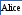
Nachricht an Bob
Nachricht an Alice
Abbildung 11:
Asymmetrisch verschlüsselte Kommunikation
Damit Verschlüsselung und Signierung
richtig funktionieren, muss sichergestellt sein, dass der öffentliche
Schlüssel des Empfängers, den der Absender zum Verschlüsseln
verwendet, auch wirklich diesem Empfänger gehört. Eine eindeutige
Zuordnung des Schlüssels zu einem Benutzer (identifiziert
durch seinen Namen und seine Email-Adresse) muss garantiert sein.
Dazu muss man den öffentlichen Schlüssel auf irgend eine Art
beglaubigen (siehe Kap. 7.1.9).
5.2.1 Hybride Verschlüsselung
Technisch betrachtet kommt bei der
Verschlüsselung von Emails eine Kombination aus symmetrischer und
asymmetrischer Verschlüsselung, die sog. hybride Verschlüsselung
zum Einsatz. Aus der Perspektive des Anwenders kann man ohne Weiteres
von asymmetrischer Verschlüsselung sprechen, da dieser sich nur mit
dem asymmetrischen Schlüsselpaar (Public Key und Private Key)
beschäftigen muss.
Ich werde in den folgenden
Abschnitten das Prinzip der hybriden Verschlüsselung für die
technisch Interessierten kurz erläutern. Leser, die das technische
Interesse dafür nicht mitbringen, können die folgenden Abschnitte
problemlos überspringen und mit dem nächsten Kapitel fortfahren.
Symmetrische
Verschlüsselung ist besonders effizient. Der Nachteil dieses
Verfahrens ist das sog. Schlüsselaustauschproblem.
Alice
erzeugt einen symmetrischen Schlüssel, um mit Bob zu verschlüsselt
kommunizieren. Bob benötigt nun den Schlüssel, den Alice erzeugt
hat. Die Frage ist nun: Wie kommt Bob an diesen Schlüssel, ohne dass
ein anderer ihn abfangen kann?
Die
Übertragung dieses Schlüssels über einen offenen
Kommunikationskanal kommt nicht in Frage. Dabei könnte der Schlüssel
von einem Unbefugten abgefangen und missbraucht werden. Um dies zu
verhindern, könnte Alice Bob persönlich treffen und ihm den
Schlüssel auf einem USB-Stick übergeben. Dass sich die
Kommunikations-partner zum Schlüsselaustausch persönlich treffen,
ist im internationalen Netz allerdings keine praktikable Lösung.
Nehmen
wir an Alice überwirft sich mit Bob. Bob hätte dann aber immer noch
ihren Schlüssel und könnte ihr durch die Nutzung dieses Schlüssels
schaden. Für Kommunikationsszenarien sind symmetrische Schlüssel
also nicht zu gebrauchen.
Das
Schlüsselaustauschproblem wird mit hybrider Verschlüsselung gelöst.
Dabei
wird der symmetrische Schlüssel mit dem asymmetrischen
Verschlüsselungsverfahren verschlüsselt. Der verschlüsselte
symmetrische Schlüssel wird zum Kommunikationspartner übertragen
und von diesem wieder entschlüsselt.
Bei
verschlüsselter Email-Kommunikation (aber auch bei der
Verschlüsselung von Transportkanälen mit SSL/TLS) kommt in
Wirklichkeit die hybride Verschlüsselung zum Einsatz.
Das
funktioniert so: Alice erzeugt – bei jeder Mail einen neuen –
symmetrischen Schlüssel – den sog. Sitzungsschlüssel – und
verschlüsselt damit zunächst die Nachricht an Bob. Dann
verschlüsselt sie den Sitzungsschlüssel mit Bob's öffentlichem
Schlüssel. In der verschlüsselten Mail werden sowohl der
verschlüsselte Sitzungsschlüssel als auch die verschlüsselte
Nachricht an Bob übertragen. Ein Unbefugter, der die Mail abfängt,
kann die Nachricht nicht lesen, denn dazu benötigt er den
unverschlüsselten Sitzungsschlüssel. Er kann aber auch den
Sitzungsschlüssel nicht ohne den privaten Schlüssel von Bob
entschlüsseln. Bob empfängt nun die Mail und entschlüsselt
zunächst den Sitzungsschlüssel mit seinem privaten Schlüssel. Mit
diesem kann er nun die Nachricht von Alice entschlüsseln und lesen.
Auf
diese Weise lassen sich die Vorteile der symmetrischen und der
asymmetrischen Verschlüsselung verbinden. Durch das symmetrische
Verfahren ist die Verschlüsselung effizient. Durch die asymmetrische
Verschlüsselung des symmetrischen Sitzungsschlüssels lässt sich
das Schlüsselaustauschproblem lösen.
Für
den Benutzer ist der symmetrische Anteil der Verschlüsselung
transparent; d.h. er hat damit nichts zu tun. Die Generierung und
Verschlüsselung des Sitzungsschlüssels sowie die Verschlüsselung
der Nachricht erledigt die PGP-Software automatisch. Der Benutzer ist
nur für sein asymmetrisches Schlüsselpaar verantwortlich. Deshalb
kann man bei der Email-Verschlüsselung (aus der Perspektive des
Benutzers gesehen) auch gut von asymmetrischer Verschlüsselung
sprechen.
5.3 Welches Verschlüsselungsverfahren – S/MIME oder PGP?
Zwei digitale asymmetrische
Verschlüsselungsverfahren stehen zur Verfügung:
Beide
Verfahren sind asymmetrische Verschlüsselungsverfahren (siehe Kap.
5.5). Bei beiden Verfahren erzeugt der Benutzer ein Schlüsselpaar
aus privatem und öffentlichem Schlüssel. Das Schlüsselpaar kann
sowohl zum Verschlüsseln/Entschlüsseln von Dateien und Mails als
auch zum Signieren von Mails oder zum Signieren von Schlüsseln
verwendet werden. Der private Schlüssel muss beim Benutzer
verbleiben. Damit kein Missbrauch möglich ist, muss er sicher
verwahrt werden und darf nicht in fremde Hände geraten. Der
öffentliche Schlüssel wird möglichst vielen anderen Benutzern
zugänglich gemacht.
Damit ein
öffentlicher Schlüssel sinnvoll verwendet werden kann, muss
sichergestellt sein, wem der betreffende Schlüssel gehört. Dazu
muss er beglaubigt werden; danach gilt er als vertrauenswürdig.
Durch die Beglaubigung kann man darauf vertrauen, dass ein bestimmter
Schlüssel einem bestimmten Benutzer mit einer Email-Adresse gehört.
Eine mit dem Schlüssel unterschriebene Mail kann so dem Benutzer mit
Sicherheit zugeordnet werden (vorausgesetzt, man vertraut der
Instanz, die die Beglaubigung vorgenommen hat).
S/MIME
und PGP verschlüsseln grundsätzlich auf die gleiche Art mit
asymmetrischer Verschlüsselung. Die Konzepte unterscheiden sich
jedoch fundamental durch das Beglaubigungs-verfahren und die sog.
PKI,
die Public Key
Infrastructure.
Eine
PKI ist – wie der Name sagt – eine Infrastruktur zur Verwaltung
und Beglaubigung öffentlicher Schlüssel. S/MIME basiert auf einer
hierarchischen PKI (die übrigens auch von SSL/TLS verwendet wird,
siehe Kap. 5.3.1 und 14.1). PGP basiert auf einem Netz
gleichberechtigter Benutzer, die sich wechselseitig ihre Schlüssel
beglaubigen, dem WoT oder Web of Trust (siehe Kap. 5.3.2).
5.3.1 Die hierarchische PKI von S/MIME
Bei PGP
können die Benutzer ihre Schlüssel gegenseitig beglaubigen.
Bei
S/MIME basiert die Beglaubigung auf Zertifizierungsstellen, denen man
vertrauen muss. Diese nennt man CAs
(Certificate Authorities).
Bei solch einer CA kann kann man seinen öffentlichen Schlüssel
beglaubigen/zertifizieren lassen. Dazu signiert die CA den
öffentlichen Schlüssel mit ihrem eigenen privaten Schlüssel. Die
Prüfung der Signierung kann mit dem öffentlichen Schlüssel der CA
erfolgen. Nach Abschluss der Zertifizierung bekommt man den
beglaubigten öffentlichen Schlüssel zurück, um ihn dann zu
verwenden. Ist der öffentliche Schlüssel beglaubigt, spricht man
auch von einem Zertifikat. Man kann sich das so vorstellen, als würde
man zum Notar gehen und sich eine notarielle Beglaubigung für seinen
Schlüssel holen. Der Notar beglaubigt, dass der Schlüssel wirklich
mir gehört. Die mit diesem Schlüssel signierte Mail kann mir nun
eindeutig zugeordnet werden. Dazu muss der Empfänger meiner Mail
allerdings meinem Notar vertrauen.
Eine CA
erhält ihre eigene Glaubwürdigkeit dadurch, dass sie ihren
öffentlichen Schlüssel wiederum von einer übergeordneten CA
unterschreiben lässt. Auch die unterschreibende CA kann sich von
einer weiteren CA zertifizieren lassen. So entsteht eine
hierarchische Beglaubigungsinfrastruktur, an deren Spitze sog.
Root-CAs stehen. Die Zertifikate der Root-CAs werden von keiner
anderen CA beglaubigt, eine Root-CA kann ihren öffentlichen
Schlüssel selbst signieren. Man spricht von einem „selbst
signierten Zertifikat“. Weltweit gibt es etwa 200 solcher Root-CAs.
Bei
jedem gültigen Zertifikat kann die Zertifikatskette bis zur Root-CA
zurückverfolgt werden. Einem beglaubigten öffentlichen Schlüssel
(dem Zertifikat) vertrauen die Benutzer, da die Browser, die
Betriebssysteme und auch Mail-Clients wie Thunderbird
schon bei der Installation eine Liste von Root-CAs mitbringen.
Rufe
ich z.B. die HTTPS-URL https://www.meine-bank.de
auf, kann der Webbrowser die Echtheit des Server-Zertifikats vom
www.meine-bank.de
feststellen, indem er prüft, ob sich dessen Zertifikatskette bis zu
einer der bekannten, auf dem Rechner installierten Root-CAs
zurück-verfolgen lässt. Die Zertifikatsprüfung führt der Browser
selbständig aus. Der Benutzer hat damit nichts zu tun, er tippt nur
eine HTTPS-URL in den Browser ein, um die Zertifikatsprüfung und die
anschließende Verschlüsselung der Kommunikation anzustoßen.
Erkennt der Browser allerdings ein ungültiges Zertifikat, wird die
Website nicht automatisch geöffnet, sondern der Browser warnt den
Benutzer, die angeforderte Website zu besuchen. Es könnte sich ja um
die Website eines Bankbetrügers handeln, der sich als meine Bank
ausgeben will. Durch die Zertifikatsprüfung verhindert der Browser,
dass ich auf die Täuschung hereinfalle.
Wie der
Browser beim Aufruf einer HTTPS-URL so prüft bei S/MIME der
Mail-Client, ob sich das Zertifikat (der beglaubigt öffentliche
Schlüssel) des Kommunikationspartners bis zu einer bekannten, auf
dem System installierten Root-CA zurückverfolgen lässt. Schlägt
diese Verifikation fehl, kann auch der Mail-Client mir in einer
Warnung zeigen, dass er die Identität meines Kommunikationspartners
nicht verifizieren kann.
Ebenso wie
HTTPS (und andere transport-verschlüsselte Kommunikation) steht und
fällt das ganze S/MIME-System mit der Glaubwürdigkeit der Root-CAs.
Zwei HTTPS-Szenarien sollen die Schwachstellen dieses System deutlich
machen.
Erstes
Szenario: Zertifikatsfälschung durch staatlichen Druck: Man stelle
sich vor, die NSA zwingt Verisign (eine der bekanntesten CAs) ein
Zertifikat für google.com
auszustellen. Damit könnte die NSA z.B. einen falschen Web-Server
falscher-google.com
mit einem beglaubigten Zertifikat von google.com
betreiben. Nehmen wir an, ich besuche den Server
(https://falscher-google.com)
mit meinem Browser mit HTTPS. Dabei muss dem Angreifer nur gelingen,
meine Kommunikation mit google.com
unbemerkt umzuleiten auf falscher-google.com.
Bei HTTPS wird die Übertragung zwischen Web-Server und Browser
verschlüsselt. Vor dem Aufbau der verschlüsselten Verbindung prüft
mein Browser das Zertifikat, das der Server falscher-google.com
schickt und vertraut diesem, da es von Verisign beglaubigt wurde und
Verisign sich in der Liste vertrauenswürdiger Root-CAs meines
Browsers befindet. Tatsächlich kommuniziere ich dann (ohne dass der
Browser es bemerkt) nicht mit dem echten Server von Google, sondern
mit dem falschen Server der NSA, der sich als Google-Server ausgibt.
Zweites
Szenario: Zertifikatsfälschung durch Einbruch bei einer
Zertifizierungsstelle: Hacker brechen bei einer CA ein und und können
ihre eigenen Zertifikate im Namen der gehackten CA ausstellen. Sie
können damit ebenfalls einen falschen Google-Server mit vermeintlich
echten Zertifikaten betreiben. Sie könnten aber z.B auch einen
falschen Bank-Server betrueger-bank.de
mit dem vertrauenswürdigen, aber gefälschten Zertifikat von
meine-bank.de
betreiben. Ist die Website von betrueger-bank.de
gut gemacht und sieht genau so aus wie meine-bank.de,
dann merkt der Benutzer den Betrug nicht, da die Website täuschend
echt aussieht und der Browser dem gefälschten Zertifikat vertraut,
weil es von einer vertrauenswürdigen CA ausgestellt wurde.
Nach
den Enthüllungen von Edward Snowden müssen wir davon ausgehen, dass
die Geheimdienste die Zertifizierungsstellen schon längst
korrumpiert haben und so die Ausstellung jedes gewünschten
Zertifikats erzwingen können. Auch das zweite Szenario ist kein
theoretisches. Im Jahr 2012 wurde die holländische CA Diginotar
gehackt. (Diginotar
hatte die Sicherheitsvorkehrungen auf seinen Servern sträflich
vernachlässigt.) Als der Fall bekannt wurde, mussten die Hersteller
der Browser schnell Updates mit aktualisierten CA-Listen liefern.
Diginotar war danach
nicht mehr in der Liste der vertrauenswürdigen CAs enthalten. Somit
wurden alle von Diginotar
beglaubigten Zertifikate ungültig. Danach warnten die aktualisierten
Browser, wenn eine Website mit einem von Diginotar beglaubigten
Zertifikat per HTTPS besucht wurde. Damit waren natürlich alle
Zertifikate, die jemals von Diginotar ausgestellt wurden ungültig
und nicht mehr zu gebrauchen. Alle Kunden von Diginotar brauchten
neue Zertifikate.
So wie der
Browser mit gefälschten Zertifikaten „hinters Licht geführt“
werden kann, genau so ließe sich auch eine auf S/MIME basierende
Mail-Verschlüsselung und Mail-Signierung korrumpieren. Der
Email-Client lässt sich mit gefälschten Zertifikaten ebenso leicht
täuschen und würde den Schüsseln vertrauen, die von einer
korrumpierten CA beglaubigt/signiert wurden.
Kein
Wunder, dass Edward Snowden bei der Kommunikation mit Glenn Greenwald
und Laura Poitras nicht auf S/MIME sondern auf PGP gesetzt hat.
Abgesehen
von dieser kurzen Übersicht gehe ich zunächst nicht weiter auf die
Mail-Verschlüsselung mit S/MIME ein. Da dieselbe PKI auch für jede
mit SSL/TLS verschlüsselte Transportverbindung verwendet wird, werde
ich im Kapitel 14 nochmals Bezug darauf nehmen.
5.3.2 Die PKI von PGP – ein Netz des Vertrauens
Bei
PGP
gibt es keine zentralen Beglaubigungsstellen. Benutzer, die sich
kennen, können ihre Schlüssel wechselseitig signieren und damit
beglaubigen. Dadurch bildet sich ein Netz von Vertrauensbeziehungen,
das Web of Trust
(WoT).
In diesem Vertrauensnetzwerk sind keine Notare erforderlich.
Gewissermaßen kann jeder Teilnehmer der Notar jedes anderen
Teilnehmers werden.
Kennen
sie sich nicht, müssen sie sich vor der Schlüsselsignierung
gegenseitig ausweisen, z.B. mit dem Personalausweis oder einem
anderen Ausweis-Dokument (Führerschein, Versicherungsausweis etc.).
Das Kapitel 5.5 erläutert, wie es praktisch funktioniert.
5.4 PGP und GnuPG – ein kurzer Blick in die Historie
PGP
(Pretty Good Privacy)
bezeichnet einerseits das Verschlüsselungsverfahren und andererseits
die konkrete Implementierung, die heute im Besitz von Symantec ist.
Die erste
Version von PGP wurde 1991 von dem Crypto-Experten Phil Zimmermann
entwickelt. Nach dem US-Exportgesetz durfte PGP nicht in andere
Länder exportiert werden. Zimmermann veröffentlichte 1995 „PGP
Source Code and Internals“ mit dem gesamten Quellcode als
gedrucktes Buch. Damit umging er die Exportbeschränkungen der USA.
Der Code wurde im Ausland von Hand aus dem Buch abgetippt und daraus
eine international verfügbare Version von PGP erstellt. 1997
verkaufte Zimmermann die Rechte an der Open Source Software an
McAffee. Der neue Eigentümer nahm die Offenlegung des Codes zurück
und wurde dafür heftig kritisiert. 2002 kaufte die PGP Corporation
(Zimmermann mit einer Gruppe von Mitarbeitern) die Software mit allen
Rechten zurück und legte sie wieder offen. 2010 wurde die PGP
Corporation von Symantec übernommen. Die PGP-Implementierung ist bis
heute (Anfang 2014) im Besitz von Symantec.
Bereits
1998 (als PGP noch zu McAffee gehörte und nicht offengelegt war)
wurde der OpenPGP-Standard
entwickelt und im RFC 2440 beschrieben. Eine überarbeitete Fassung
des Standards wurde 2007 erstellt und ist im RFC 4880 beschrieben.
Der
GNU Privacy Guard
(GnuPG oder
GPG) war die
erste freie Implementierung des OpenPGP-Standards.
Sie wurde unter der GPL (GNU Public Licence) veröffentlicht. Diese
Implementierung hat heute eine weite Verbreitung und ist meist die
Grundlage für die PGP-Implementierung auf dem PC und auf mobilen
Geräten.
Ich
werde in den folgenden Kapiteln fast ausschließlich den Begriff PGP
verwenden und beziehe mich dabei auf das Verfahren, auch wenn als
konkrete Implementierung immer Gnu PG
zur Anwendung kommt.
Mehr
zur PGP-Historie ist zu finden unter:
http://de.wikipedia.org/wiki/Pretty_Good_Privacy#Geschichte
.
5.5 Private Key und Public Key – Wie funktioniert's mit PGP?
Empfehlung:
Auf der Website von mailbox.org
wird die asymmetrische Verschlüsselung und Signierung mit PGP in
einem kurzen Stift-Film gut illustriert:
https://mailbox.org/stiftfilm-wie-funktioniert-e-mail-verschluesselung-mit-pgp/.
(Witzig und lehrreich! Am besten vor und nach dem Lesen dieses
Kapitels ansehen! Und danach dieses Kapitel vielleicht noch ein
zweites Mal lesen!)
Wie oben beschrieben (siehe Kap. 5.2)
basiert PGP als asymmetrische Verschlüsselung auf einem digitalen
Schlüsselpaar bestehend aus dem Private
Key (dem privaten und geheimen Schlüssel, der niemals in
den Besitz einer anderen Person gelangen darf) und dem Public Key
(dem öffentlichem Schlüssel, den man an möglichst viele andere
Personen verbreitet).
Jeder Benutzer veröffentlicht seinen
öffentlichen Schlüssel, d.h. er gibt ihn allen anderen Benutzern,
mit denen er kommuniziert, bzw. er macht ihn sehr leicht zugänglich.
Seinen privaten Schlüssel sichert er so gut es geht, am besten
passwortgeschützt in einem Schlüsselbund, so dass nur er
selbst ihn benutzen kann.
Verschlüsselung einer
Nachricht: Willst du (oder irgend ein anderer Benutzer) mir
eine Nachricht schicken, dann verschlüsselst du die Nachricht mit
meinem öffentlichen Schlüssel. Nur ich kann sie entschlüsseln und
lesen, da nur ich den privaten und geheimen Schlüssel dazu habe.
Jeder andere, der die Nachricht unterwegs abfängt, kann zwar sehen,
dass sie von dir stammt und dass sie an mich gerichtet ist und er
kann auch ihren Betreff und andere Metadaten lesen. Die Nachricht
selbst kann er aber nicht lesen, da er nicht über den privaten
Schlüssel verfügt. Schicke ich dir eine Nachricht, verschlüssele
ich sie mit deinem öffentlichen Schlüssel. Tatsächlich ist das
Verfahren etwas komplizierter (denn hier kommt die hybride
Verschlüsselung zum Einsatz, siehe Kap. 5.2.1), aber diese etwas
vereinfachte Vorstellung genügt, um damit zu arbeiten.
Signatur einer Nachricht:
Mit der Signatur einer
Nachricht kann ihre Echtheit oder Unverfälschtheit garantiert
werden. D.h. es kann sichergestellt werden, dass die empfangene
Nachricht exakt der gesendeten entspricht und dass nichts, nicht
einmal ein Komma, hinzugefügt, gelöscht oder verändert wurde.
Außerdem ist garantiert, dass der Besitzer des öffentlichen
Schlüssels der Absender ist. (Dabei wird vorausgesetzt, dass der
Besitzer seinen privaten Schlüssel nicht verloren hat und dass er
nicht entwendet wurde.)
Kommt der private (und geheime)
Schlüssel (durch Verlust oder Diebstahl) in die falschen Hände,
könnte der Schlüsseldieb sich als der Schlüsselbesitzer ausgeben
und im Namen des Besitzers Nachrichten entschlüsseln und/oder
signieren.
Eine Nachricht signiert der Absender
mit seinem privaten und geheimen Schlüssel. Mit dem öffentlichen
Schlüssel des Absenders kann der Empfänger die Unverfälschtheit
der Nachricht überprüfen.
Wer's
technisch genau wissen will: Aus dem Nachrichtentext wird ein
Hash-Wert (eine Art eindeutige Quersumme) gebildet und der Hash-Wert
wird mit dem privaten Schlüssel des Absenders verschlüsselt und an
die Nachricht angehängt. (Dies bedeutet Signieren.) Der Empfänger
kann den Hash-Wert mit dem öffentlichen Schlüssel des Absenders
entschlüsseln und er kann aus der empfangenen Nachricht ebenfalls
den Hash-Wert errechnen. Sind beide Hash-Werte - der entschlüsselte
und der errechnete - identisch, dann ist damit die Integrität der
Nachricht und die Authentizität des Absenders bestätigt: d.h. es
ist sichergestellt, dass sie während des Transportes nicht
verfälscht wurde und dass der bekannte Besitzer des öffentlichen
Schlüssels der Absender ist.
(Dies bedeutet Signaturprüfung.)
Verschlüsselung
und Signatur können kombiniert oder unabhängig voneinander
verwendet werden. D.h. eine verschlüsselte Nachricht muss nicht
signiert sein und eine signierte Nachricht muss nicht verschlüsselt
sein.
Beglaubigung
der Schlüssel:
Öffentliche Schlüssel müssen beglaubigt werden,
damit sie sinnvoll zum Signieren und Verschlüsseln von Nachrichten
verwendet werden können. Nur den beglaubigten Schlüsseln kann man
wirklich vertrauen. Anders ausgedrückt: Die wechselseitige
Beglaubigung von Schlüsseln erzeugt eine Vertrauensbeziehung
zwischen zwei Kommunikationspartnern. Nur ein beglaubigter Schlüssel
kann die Authentizität des Absenders und die Integrität der
signierten Nachricht belegen.
Zur
Beglaubigung des öffentlichen Schlüssels eines
Kommunikationspartners verwendet man wiederum den eigenen Schlüssel.
Einen fremden, öffentlichen Schlüssel zu beglaubigen, bedeutet –
technisch betrachtet – nichts anderes als ihn mit dem eigenen
privaten Schlüssel zu signieren. Mehr dazu in Kap. 7.1.9.
Beglaubigen
Alice und Bob ihre öffentlichen PGP-Schlüssel, vertrauen sie sich
gegenseitig und können den jeweils anderen immer an seinem Schlüssel
„erkennen“. Schickt Alice an Bob eine mit dem beglaubigtem
Schlüssel signierte Mail, so kann Bob sicher sein, dass sie von
Alice ist und nicht von von einer anderen Person, die sich als Alice
ausgibt. Schickt Alice an Bob eine verschlüsselte Mail, ist sie mit
dem beglaubigten, öffentlichen Schlüssel von Bob verschlüsselt.
Alice kann sicher sein, dass nur Bob sie lesen kann, solange nur Bob
im Besitz des privaten und geheimen Schlüssel ist. Durch die
wechselseitige Beglaubigung, d.h. die Signierung ihrer öffentlichen
Schlüssel drücken die beiden ihr direktes
Vertrauen aus.
Nehmen
wir an, Bob hat auch den öffentlichen Schlüssel von Jane
beglaubigt. Alice hat Bob schon sein Vertrauen ausgedrückt, indem
sie dessen Schlüssel beglaubigt hat. Sie vertraut nun auch, dass Bob
die Beglaubigung von Jane verantwortungsbewusst und korrekt
durchgeführt hat. (Entweder kennt Bob Jane persönlich, oder er hat
sich ihren Ausweis zeigen lassen.) Also kann Alice jetzt Jane
vertrauen, da sie Bob vertraut und Bob durch die Signierung ihres
Schlüssels seine Hand für Jane ins Feuer hält. Oder kurz: Alice
vertraut Jane, obwohl sie sie gar nicht kennt. Denn sie vertraut
Bob, der wiederum Jane vertraut. In diesem Fall spricht man von
transitivem Vertrauen.
Durch
viele direkte und transitive Vertrauensverhältnisse entsteht ein
Netz des Vertrauens, ein sogenanntes WoT
oder Web of Trust.
Anders als bei S/MIME benötigt man bei PGP keine
Schlüssel-Zertifizierungsstellen (Certificate Authorities).
Hört man dies alles zum ersten Mal,
mag es recht kompliziert klingen. Hat man die Konzepte der
asymmetrischen Verschlüsselung und das Prinzip wechselseitiger
Schlüsselbeglaubigung einmal verinnerlicht, ist es gar nicht mehr so
schwierig.
Dies sind
die Grundlagen zum Verständnis. In den nächsten Kapiteln sehen wir
uns an, welche Tools man auf dem eigenen System (PC oder mobiles
Gerät) installieren muss und wie man diese Tools nutzt, um ein
Schlüsselpaar zu erzeugen, öffentliche Schlüssel zu
beglaubigen/signieren und zu veröffentlichen und um schließlich
signierte und verschlüsselte Mails zu versenden.
Genauer
und technisch noch detaillierter ist dies alles beschrieben im
c't-Sonderheft „Sichere Email“ (siehe Kap. 2.8) auf Seite 82 im
Artikel „Verschlüsseln und Signieren mit PGP“. Meine
Ausführungen reduziere ich auf das, was man braucht, um möglichst
schnell zum Ziel zu kommen und verschlüsselte und signierte Mails
versenden und empfangen zu können. Bei der Fokussierung auf die
Praxis der Verschlüsselung kann die technische Detailtiefe auch
zuweilen auf der Strecke bleiben.
Eine
kurze Einführung in PGP für Laien (inklusive
Thunderbird-Konfiguration)
ist auch bei WEB.DE zu
finden: https://hilfe.web.de/sicherheit/pgp.html
.
Umfangreiche
Informationen (Schulungen, Tutorials, Verständnistests,
Erläuterungen und Konfigurationsanleitungen) zur Verwendung von PGP
sind auch hier zu finden: http://www.openpgp-schulungen.de/
.
Eine
weitere ausführliche Einführung in PGP ist hier zu finden:
http://www.hauke-laging.de/sicherheit/openpgp.html
.
5.6 Inline-PGP versus PGP/MIME
Inline-PGP ist das klassische
PGP-Format. Dabei wurde einfach der Mail-Text im Body der Mail durch
das Chiffrat (den verschlüsselten Text) ersetzt und das Ganze als
MIME-Typ text/plain verschickt.
Inline-PGP wird von allen
Implementierungen unterstützt. Es hat allerdings einige gravierende
Einschränkungen, die durch das modernere Format PGP/MIME
behoben werden. Es gibt (vor allem auf mobilen Geräten)
PGP-Implementierungen, die PGP/MIME noch nicht unterstützen.
PGP/MIME definiert eigene MIME-Typen für verschlüsselte und
signierte Mails.
Die Vorteile von PGP/MIME
gegenüber Inline-PGP:
HTML-Mails können signiert und
verschlüsselt werden.
Bei Inline-PGP kann man nur ASCII-Text
korrekt ver- und entschlüsseln.
Umlaute werden korrekt
unterstützt.
Dies funktionierte bei Inline-PGP nicht, da der
vom Absender verwendete Zeichensatz beim Mail-Empfänger nicht
bekannt war.
Mail-Body und -Attachments
werden als eine einzige Nachricht verschlüsselt und/oder signiert.
Damit ist die Integrität der Nachricht als Ganzes
sichergestellt.
Bei Inline-PGP wurde der Body und jedes
Attachment separat verschlüsselt und/oder signiert. Dadurch konnten
einzelne oder alle Attachments samt ihrer Signatur entfernt werden,
ohne die Integrität der Nachricht als Ganzes zu verletzen. So
konnte es der Empfänger auch nicht feststellen, falls unterwegs ein
Attachment „geklaut“ wurde.
Die Signatur der Nachricht wird
selbst als Attachment transportiert.
Bei Inline-PGP ist die
Signatur „inline“ im Mail-Body enthalten.
Auch die verschlüsselte
und/oder signierte Nachricht selbst ist nur ein weiteres Attachment.
Die Nachteile von PGP/MIME
gegenüber Inline-PGP:
Um eine Mail zu entschlüsseln
und zu lesen, müssen immer auch alle Attachments heruntergeladen
werden. Der Vorteil des IMAP-Protokolls, die Attachments erst zu
laden, wenn sie geöffnet werden sollen, geht damit verloren.
Für den Benutzer eines
Mail-Programms, das mit PGP/MIME chiffrierte Mails nicht
entschlüsseln kann, ist es verwirrend, dass diese als leere Mail
angezeigt werden. Bei Inline-PGP wird vor der Entschlüsselung der
chiffrierte Text angezeigt. Dies kann den Benutzer jedoch ebenfalls
verwirren.
Einige Mail-Clients (vor allem
mobile Mail-Apps) unterstützen dieses Format noch nicht. PGP/MIME
funktioniert nur dann, wenn Absender und Empfänger dieses moderne
Format verwenden.
Mehr dazu findet sich unter:
http://www.openpgp-schulungen.de/kurzinfo/mime-vs-inline/
Ich empfehle heute die Nutzung von
PGP/MIME. In diesem Fall muss man einen Mail-Client installieren, der
dieses Format unterstützt und diesen entsprechend konfigurieren.
Dies
kann allerdings zu Problemen führen, wenn der Email-Client des
Kommunikationspartners dieses Format nicht unterstützt. Man kann
PGP/MIME als Standard-Format einstellen und nur bei einzelnen
Kommunikationspartnern, die PGP/MIME noch nicht verwenden, das Format
auf Inline-PGP umstellen.
Meine Ausführungen in den folgenden
Kapiteln erläutern nur die Verwendung des modernen Formats PGP/MIME
für Mail-Signierung und -Verschlüsselung.
Wer trotzdem Inline-PGP
verwenden möchte oder muss, sollte nicht vergessen, beim Verfassen
von Mails keine HTML-Mails zu erstellen. Inline-PGP verträgt
sich nicht mit HTML-formatierten Mails.
5.7 Schlüssel-Server
Wo legt man nun seinen öffentlichen
Schlüssel ab, so dass er möglichst leicht gefunden werden kann?
Natürlich kann man die Datei mit dem
eigenen öffentlichen PGP-Schlüssel auf dem eigenen Web-Server oder
im öffentlichen Verzeichnis der eigenen Dropbox ablegen und dann auf
einer Web-Site, auf der man sich präsentiert, mit einem Link auf die
Schlüsseldatei verweisen, sodass jeder sie von dort herunterladen
kann.
Doch zu diesem Zweck gibt es
Schlüssel-Server. Jeder kann seinen öffentlichen Schlüssel auf
einen der Key-Server hochladen. Dort stehen auch Suchfunktionen
bereit, sodass man auch bequem nach den Schlüsseln anderer Personen
suchen kann.
Die Key-Server im Internet gleichen
ihre Datenbestände automatisch miteinander ab. Deswegen nennt man
sie auch SKS (Synchronizing Key Server).
Es genügt also, wenn man seinen öffentlichen Schlüssel auf einen
der Key-Server hochlädt. Innerhalb von ca. 24 Stunden ist dieser auf
allen Key-Servern verfügbar.
Die Schlüssel-Server haben auch
gravierende Nachteile. Zum Hochladen muss man sich nicht
authentifizieren. So kann jeder beliebig viele – auch
Testschlüssel, Spaßschlüssel und gefälschte Schlüssel hochladen.
Die Korrektheit der hochgeladenen öffentlichen Schlüssel und
Email-Adressen wird in keiner Weise überprüft.
Hochgeladene Schlüssel können
niemals von den Schlüsselservern gelöscht werden. Sie können nur
widerrufen und somit unbrauchbar gemacht werden. Sie verbleiben aber
als widerrufene, unbrauchbare Schlüssel auf den Schlüsselservern
für immer liegen. Der Schlüsselmüll wird niemals aufgeräumt.
5.8 Einschränkungen bei der Nutzung verschlüsselter Mails
Bevor wir mit der Verschlüsselung loslegen, möchte ich nochmals auf
die (bereits in Kap. 1.5 aufgeführten) Nachteile hinweisen, die die
Mail-Verschlüsselung mit sich bringt.
Der Zugriff auf die Mails mit
dem Browser (Webmail) ist in der Regel nicht mehr möglich (siehe
Kap. 8.1).
Die Volltextsuche durch die
Mail-Inhalte ist in der Regel nicht möglich.
Der Provider kann für
verschlüsselte Mails keinen Spam- und Virenschutz bereitstellen.
(Dies ist bislang kein Problem, da Spam und Viren zurzeit noch nicht
in verschlüsselten Mails versendet werden.)
Veröffentlicht
man den öffentlichen Schlüssel auf einem Schlüssel-Server, so
veröffentlicht man damit automatisch auch die eigene Email-Adresse.
Sie könnte damit auch leichter als Ziel für Spam-Mails ausgenutzt
werden. Bisher ist mir ein derartiger Missbrauch aber noch nicht
bekannt geworden.
Diese
Nachteile sind heute der Preis für die durch die Verschlüsselung
gewonnene Privatsphäre.
Die technische Weiterentwicklung könnte diese Nachteile in einigen
Jahren reduzieren.
5.9 Zusammenfassung
In
diesem Kapitel habe ich die grundlegenden Konzepte der
Email-Verschlüsselung erläutert.
Was
leistet die Verschlüsselung und Signierung von Mails?
Verschlüsselung kann die Vertraulichkeit
der Nachrichten sicherstellen. Signierung gewährleistet die
Authentizität
ihres Absenders sowie die Integrität
(Unverfälschtheit) der Nachrichten und ihre Verbindlichkeit
(Der Absender kann nicht abstreiten, dass er die Nachricht versandt
hat).
Email-Verschlüsselung
beruht immer auf einem asymmetrischen
Verschlüsselungsverfahren.
(Technisch betrachtet ist es genau genommen ein hybrides
Verschlüsselungsverfahren.) Es gibt zwei solcher Verfahren, S/MIME
und PGP.
Diese sind nicht zueinander kompatibel und sie unterscheiden sich
konzeptionell durch ihre PKI – also durch die Art, wie die
Beglaubigung der Schlüssel organisiert ist. Bei S/MIME werden die
Schlüssel durch sog. CAs (Certificate Authorities) beglaubigt. CAs
können allerdings kompromittert werden und damit werden auch die von
einer kompromittierten CA beglaubigten Schlüssel unglaubwürdig. Bei
PGP beglaubigen die kommunizierenden Benutzer ihre Schlüssel
gegenseitig. Dieses Dokument beschreibt Email-Verschlüsselung auf
Basis von PGP.
Bei
PGP erstellt jeder Benutzer ein Schlüsselpaar aus Private
Key
und Public
Key.
Der private Schlüssel muss gut geschützt werden und darf niemals in
andere Hände geraten. (Er wird in einem mit einem starken Passwort
geschützten Schlüsseltresor eingeschlossen.) Der öffentliche
Schlüssel wird an andere Benutzer verteilt oder leicht zugänglich
bereit gestellt.
Mit
dem öffentlichen Schlüssel eines anderen Benutzers kann man ...
eine
Mail an diesen Benutzer verschlüsseln, sodass nur dieser sie
entschlüsseln kann,
eine
Mail von diesem Benutzer verifizieren, d.h. nachweisen, dass sie
genau von diesem Benutzer stammt (Authentizität der Nachricht), und
dass kein Jota der Nachricht verändert wurde (Unverfälschtheit der
Nachricht).
Mit
dem eigenen privaten Schlüssel kann man ...
eine
empfangene, verschlüsselte Mail von einem anderen Benutzer, die
dieser mit dem eigenen öffentlichen Schlüssel verschlüsselt hat,
entschlüsseln,
die
Mail an einen anderen Benutzer signieren
und
den öffentlichen Schlüssel eines anderen Benutzers
signieren/beglaubigen, nachdem man geprüft hat, dass der Schlüssel
und die Email-Adresse(n) wirklich diesem Benutzer gehören.
Durch
wechselseitiges Signieren/Beglaubigen von öffentlichen Schlüsseln
entsteht zwischen zwei Benutzern ein direktes
Vertrauensverhältnis.
Vertraut ein Benutzer einem anderen Benutzer, dem sein direkter
Vertrauter vertraut, so handelt es sich um ein transitives
Vertrauensverhältnis.
Durch diese direkten und transitiven Vertrauensverhältnisse entsteht
ein Vertrauensnetz, ein sog. Web
of Trust (WoT).
Für
die Verschlüsselung und Signierung von Emails mit PGP existieren
zwei Nachrichten-Formate, das klassische Inline-PGP und das moderne
PGP/MIME. Anders als Inline-PPGP erlaubt PGP/MIME das Erstellen von
HTML-Mails, es kann auch mit Umlauten korrekt umgehen und die
Integrität der gesamten Nachricht (einschließlich aller Anhänge)
sicherstellen.
Die
Verwendung von PGP/MIME ist deshalb zu empfehlen. Dazu muss ein
Mail-Client installiert werden, der dieses Format unterstützt und
dieser ist so zu konfigurieren, dass er PGP/MIME auch verwendet. Dies
kann allerdings zu Problemen führen, wenn der Email-Client des
Kommunikationspartners dieses Format nicht unterstützt. Ggf. Muss
man bei einzelnen Mails das Format auf Inline-PGP zurückstellen und
dann auch auf den Versand von HTML-Mails verzichten.
5.10 PGP-Kritik
und die Konsequenzen
PGP
ist sicher. Es ist in meinen Augen die einzige Möglichkeit, die
Vertraulichkeit der Email-Kommunikation zu gewährleisten. Mit PGP
konnte sich Edward Snowden dem Überwachungsradar der NSA entziehen.
Die
Verschlüsselung und die Signierung der Mails ist nicht kompliziert.
Kompliziert
ist allerdings die Verwaltung der öffentlichen Schlüssel. So wie
sie heute funktioniert, dürften die meisten normalen Mail-Benutzer
damit überfordert sein. Deshalb ist das PGP-System, so wie es heute
ist, nicht massentauglich.
Damit
sich PGP durchsetzen kann, muss die Schlüsselverwaltung so
vereinfacht werden, dass auch normale Benutzer sie leicht handhaben
können. Dafür gibt es verschiedene Überlegungen und Initiativen,
die allerdings heute noch nicht im Mainstream angekommen sind und
noch nicht für den Alltagsbetrieb zu gebrauchen sind.
Möglicherweise
wird eines Tages auch eine neues Email-Verschlüsselungssystem
erfunden ... so sicher wie PGP und so einfach zu benutzen wie der
Krypto-Messenger TextSecure
(siehe Kap. 13.2.4).
Wer
dennoch schon heute seine Privatsphäre schützen und vertraulich
kommunizieren will, muss nicht nur selbst die Hürde zum Einstieg in
die sperrige Verschlüsselung mit PGP überwinden. Er muss auch seine
Kommunikationspartner davon überzeugen. Denn verschlüsselte und
signierte Kommunikation funktioniert nur, wenn beide Seiten über ein
Schlüsselpaar verfügen und wenn sie ihre öffentlichen Schlüssel
austauschen und gegenseitig beglaubigen.
5.11 Endlich loslegen
Kapitel 6 enthält eine
PGP-Schnellanleitung, die eher wie ein Kochrezept aufgebaut ist. Die
Ungeduldigen können mit Kapitel 6 weiterlesen. Diejenigen, die sich
der Materie über die ausführlichen Darstellungen nähern möchten,
können Kapitel 6 überspringen und die Lektüre mit Kapitel 7
fortsetzen. Dort beschreibe ich nicht nur, was zu tun ist, sondern
auch warum. Der Benutzer soll wissen, was er tut. Manchen mag das zu
ausführlich sein.
Ich persönlich halte die in Kapitel
7 beschriebenen, ausführlichen Weg für den besseren. Gerade für
den Einsteiger, der mit PGP noch nicht vertraut ist, sind
ausführliche Erläuterungen und Screenshots eher hilfreich und
unterstützen das Verständnis. Doch soll jeder selbst entscheiden,
auf welchem Weg er schneller zum Ziel kommt. Ich biete beide Wege an.
Ebenso wie Kapitel 6 und 7 bieten
auch die Kapitel 9 und 10 alternative Möglichkeiten des Einstiegs in
Mail-Verschlüsselung mit PGP auf dem Android-Gerät.
Hier noch einmal der Überblick über
die folgenden Kapitel für die praktische Nutzung von PGP:
Kapitel 6:
Kapitel 7:
Kapitel 8:
Kapitel 9:
Kapitel 10:
Kapitel 11:
5.12 Links zu diesem Kapitel
6 PGP auf dem PC – Schnelleinstieg für Ungeduldige
Dieses Kapitel liefert die
Schritt-für-Schritt-Anleitungen für PGP auf dem PC (mit Windows,
Mac OS X oder Linux). Es verzichtet auf Screenshots, auf ausführliche
Erläuterungen und auf die Darstellung verschiedener Optionen,
sondern zeigt nur den von mir favorisierten Weg. Hier werden die
Schritte aufgeführt, die durchzuführen sind, um PGP in Thunderbird
auf dem PC einzurichten und zu nutzen. Dabei wird vorausgesetzt, dass
Thunderbird auf dem PC zum Mailversand und -empfang verwendet
wird. Die einzelnen Schritte haben Verweise ins Kapitel 7, sodass die
ausführlichen Erläuterungen bei Bedarf schnell auffindbar sind. Wer
den ausführlichen Einstieg bevorzugt, überspringt dieses Kapitel
und wechselt gleich ins nächste Kapitel 7.
Außerdem findet sich hier eine gute
und kompakte PGP-Anleitung im Web (mit vielen Screenshots):
https://www.verbraucher-sicher-online.de/anleitung/e-mails-verschluesseln-in-mozilla-thunderbird-mit-enigmail-und-gnu-privacy-guard
Nun bitte
das eigene Notebook aufklappen und während des Lesens gleich alle
Schritte mitvollziehen. Dann liest sich die trockene Anleitung gleich
viel lebendiger.
6.1 PGP-Schlüsselverwaltung mit Thunderbird/Enigmail auf dem PC
Als erstes benötigen wir einen
Schlüsselbund, in den wir alle Schlüssel einhängen können. Darin
muss sich zu Beginn mindestens ein eigenes Schlüsselpaar bestehend
aus Private Key und Public Key befinden. Außerdem kann der
Schlüsselbund beliebig viele öffentliche Schlüssel von
Kommunikationspartnern enthalten. Das eigene Schlüsselpaar muss
erzeugt werden. Die öffentlichen Schlüssel der
Kommunikationspartner müssen vom Schlüssel-Server importiert, dann
beglaubigt und schließlich wieder auf den Schlüssel-Server
exportiert werden.
Native
Schlüsselbund-Verwaltung installieren (siehe Kap. 7.1.1)
Auf dem Windows-PC: Gpg4win
installieren
Auf dem Mac: GPG
Suite
installieren
Auf dem Linux-System ist GnuPG
ist in der Regel vorinstalliert. Fehlt es, so lässt es sich leicht
über die Paketverwaltung nachinstallieren. GnuPG kann
direkt von der Kommandozeile aus genutzt werden. Bei der Nutzung
der Enigmail-Schlüsselverwaltung in Thunderbird ist
die jedoch nicht erforderlich.
Enigmail installieren
(siehe Kap. 7.1.1): In Thunderbird unter Menüpunkt Extras
→ Add-ons den Add-ons-Manager
starten und dort den Suchbegriff Enigmail
eingeben und danach suchen. Bei Enigmail
auf Installieren
klicken und Thunderbird
neu starten. Der Add-ons-Manager kann wieder geschlossen werden.
Nach
der Installation des Add-ons Enigmail
steht in Thunderbird
der neue Menüpunkt Enigmail
zur Verfügung. Unter Enigmail → Schlüssel verwalten...
ist unter Anderem auch die Enigmail-Schlüsselbund-Verwaltung
erreichbar.
Schlüssel-Server
in Enigmail
konfigurieren (siehe
Kap. 7.1.7): In Thunderbird
unter Enigmail → Einstellungen... → Schlüssel-Server
die Schlüssel-Server eintragen, die man verwenden will. Bei mir
sind dies folgende:
Mit der Schlüsselbund-Verwaltung
von Thunderbird/Enigmail ein neues Schlüsselpaar erzeugen
(siehe Kap. 7.1.2). Dabei sind verschiedene Angaben zu machen:
Primäre Benutzer-ID: Vorname
und Nachname und die primäre Email-Adresse (diejenige, die man in
erster Linie zur Kommunikation verwendet). Optional kann auch ein
Kommentar angegeben werden.
Verschlüsselungs-Algorithmus:
RSA
Schlüssellänge: 4096 Bit. Ein
langer Schlüssel mit 4096 Bit ist sicherer als ein kurzer mit 2048
Bit. Ein Schlüssel mit einer Länge von 1028 Bit ist als unsicher
zu betrachten und sollte deshalb nicht erzeugt werden.
Gültigkeitsdauer des
Schlüssels: unbegrenzt (Option „Schlüssel läuft nie ab“
setzen)
Das Widerrufszertifikat noch
nicht erzeugen (wird später erzeugt)
Die Passphrase sollte
mindestens 12 Zeichen lang sein und aus Großbuchstaben,
Kleinbuchstaben, Ziffern und Sonderzeichen bestehen.
Weitere Benutzer-IDs zum
erzeugten Schlüsselpaar hinzufügen (siehe Kap. 7.1.4): Will
man den generierten Schlüssel mit weiteren Email-Adressen nutzen,
dann kann für jede Email-Adresse eine weitere Benutzer-ID
hinzugefügt werden. Dazu in der Enigmail-Schlüsselverwaltung die
Schlüsseleigenschaften des betreffenden Schlüssels öffnen, dann
die Aktion „Benutzerkennungen verwalten...“ auswählen.
In einem neuen Dialog können die folgenden Eintragungen gemacht
werden: Vorname und Nachname dürfen dieselben sein wie in der
primären Benutzer-ID, die Email-Adresse muss sich unterscheiden.
Optional kann ein Kommentar angegeben werden.
Eigenen
öffentlichen Schlüssel auf Schlüssel-Server hochladen
(siehe Kap. 7.1.8): In der Enigmail-Schlüsselbund-Verwaltung
den eigenen Schlüssel markieren und auf den Schlüssel-Server
hochladen. Es genügt das Hochladen auf einen einzigen
Schlüssel-Server, da die Schlüssel-Server ihre Daten wechselseitig
abgleichen (SKS = Synchronizing Key Server). Nach ca. 24 Stunden
befindet sich der eigene hochgeladene Schlüssel auf allen
Schlüssel-Servern des Internets. (Vorsicht: Keine Testschlüssel
hochladen! Hochgeladene Schlüssel können nie wieder vom
Schlüssel-Server gelöscht werden.)
Den
öffentlichen Schlüssel eines Kommunikationspartners vom
Schlüssel-Server importieren
(siehe Kap. 7.1.8): In der Enigmail-Schlüsselbund-Verwaltung
den Menüpunkt Schlüssel-Server → Schlüssel suchen...
aufrufen. In das Suchfeld die Email-Adresse eines
Kommunikationspartners oder einen Teil davon eingeben. Die Treffer
der Suche werden aufgelistet. Aus der Trefferliste können einzelne
Schlüssel ausgewählt und in die Schlüsselbund-Verwaltung
importiert werden.
Den
öffentlichen Schlüssel des Kommunikationspartners prüfen (bevor
man ihn beglaubigt): Einen Schlüssel mit einer bestimmten
Email-Adresse kann jeder erstellen. Bevor man den importierten
Schlüssel des Kommunikationspartners benutzt, muss man sicher sein,
dass es sich tatsächlich um den Schlüssel des vermuteten
Kommunikationspartners handelt. Dies muss zunächst geprüft werden.
Dazu ist der Fingerabdruck des importierten Schlüssel zu
vergleichen mit dem Fingerabdruck, den einem der
Kommunikationspartner z.B. am Telefon oder per Fax mitteilt (genaue
Beschreibung in Kapitel 7.1.9.1). Nach dem Vergleich des
Fingerabdrucks kann man sicher sein, dass der Schlüssel genau
diesem Kommunikationspartner gehört.
Den
öffentlichen Schlüssel des Kommunikationspartners
(nach erfolgreicher Prüfung) beglaubigen
(siehe Kap. 7.1.9). Technisch gesehen heißt „beglaubigen“, den
fremden Schlüssel mit dem eigenen Schlüssel
unterschreiben/signieren. Man markiert den zu beglaubigenden
Schlüssel und wählt im Kontextmenü den Punkt „Unterschreiben...“.
Dies genügt noch nicht. Man muss auch noch das Vertrauensverhältnis
zum Schlüssel definieren. Im Kontextmenü unter „Besitzervertrauen
festlegen...“ kann man
zwischen fünf Vertrauensstufen auswählen (siehe Kap. 7.1.5 und 7.1.9).
Meist ist „Volles Vertrauen“ für den zuvor signierten Schlüssel
festzulegen. (Die Vertrauensstufe „Absolutes Vertrauen“
ist nur für den eigenen Schlüssel zu verwenden.)
Den
signierten, öffentlichen Schlüssel des Kommunikationspartners
wieder auf den Schlüssel-Server hochladen
(siehe Kap. 7.1.9): Im Kontextmenü des betreffenden Schlüssels
wählt man den Punkt „Auf Schlüssel-Server
hochladen...“. Der Schlüssel
des Kommunikationspartners wird dadurch auf den Key-Servern
aktualisiert und enthält nun auch die eigene Beglaubigung. Damit
gibt man allen anderen PGP-Benutzern bekannt, dass man diesem
Schlüssel vertraut. Diejenigen, die mir trauen, können dann evtl.
auch meinem Kommunikationspartner trauen, da sie annehmen können,
dass ich die Signierung seines Schlüssel erst nach gewissenhafter
Prüfung vorgenommen habe.
Links:
6.2 Schlüssel und Widerrufszertifikat sichern
1. Das
eigene Schlüsselpaar (privater und öffentlicher Schlüssel) muss
gesichert werden, denn bei einem Festplattencrash muss das
Schlüsselpaar wieder hergestellt werden können.
2. Das
Widerrufszertifikat muss gesichert werden. Mit diesem kann man den
eigenen Schlüssel auf den Schlüssel-Servern widerrufen, d.h. für
ungültig erklären. Das geht auch dann, wenn der private Schlüssel
abhanden gekommen sein sollte.
3.
Die gesammelten öffentlichen Schlüssel können gesichert werden.
Dies ist nicht notwendig, jedoch zweckmäßig. Würden diese verloren
gehen, so könnte man sie sich jeder Zeit wieder von einem
Schlüssel-Server holen. Die Sicherung ist dennoch sinnvoll, z.B. um
sie auf einem anderen Gerät in einem Rutsch importieren zu können
(siehe Kap. 6.5).
Das
zweckmäßigste Sicherungsmedium ist ein USB-Stick (oder eine
Speicherkarte), auf dem sich am besten keine anderen Daten befinden.
Der Stick wird also ausschließlich für die Sicherung der
Schlüsseldateien verwendet.
Dazu
verfährt man am besten so:
Einen
frisch formatierten USB-Stick an den Rechner anschließen
In
der Enigmail-Schlüsselbund-Verwaltung
den zuvor generierten Schlüssel markieren und dann „In
Datei exportieren...“. Dabei
ist darauf zu achten, dass der private und
der öffentliche Schlüssel
exportiert wird. Die exportierte Datei direkt auf dem
angeschlossenen USB-Stick speichern. (siehe Kap. 7.1.6)
In
der Enigmail-Schlüsselbund-Verwaltung
den zuvor generierten Schlüssel markieren und dann ein
„Widerrufszertifikat erzeugen & speichern...“.
Die erzeugte Datei mit dem Widerrufszertifikat auf dem
angeschlossenen USB-Stick speichern (siehe Kap. 7.1.3).
In
der Enigmail-Schlüsselbund-Verwaltung
alle Schlüssel markieren und „In Datei exportieren...“.
Dabei ist darauf zu achten, dass nur die
öffentlichen Schlüssel
exportiert werden. Die exportierte Datei direkt auf dem
angeschlossenen USB-Stick speichern (siehe Kap. 7.1.6).
Nach
dem erfolgreichen Export der drei Dateien den USB-Stick abmelden und
vom Rechner abziehen.
Den
USB-Stick gut aufbewahren. Bei einem Festplattencrash des Rechners
kann der private Schlüssel nur vom USB-Stick wieder hergestellt
werden (siehe Kap. 7.1.6.1).
Um
die Sicherheit weiter zu erhöhen, kann man die auf dem USB-Stick
gespeicherten Dateien zusätzlich auf eine CD brennen.
Es
sollten keine exportierten Schlüsseldateien auf der Festplatte des
Rechners bleiben. Ein Schadprogramm, das den Rechner befällt,
könnte die Dateien stehlen. Exportierte Schlüsseldateien auf der
Festplatte des Rechners sind zu löschen. Alternativ kann man die
Schlüsseldateien selbst wieder in ein ZIP-Archiv packen, das mit
einem starken Passwort verschlüsselt wird .
6.3 Thunderbird für PGP-Nutzung konfigurieren
Nun habe ich einen Schlüsselbund,
der mindestens ein eigenes Schlüsselpaar (Private Key und Public
Key) enthält. Außerdem kann der Schlüsselbund beliebig viele
weitere öffentliche Schlüssel enthalten, einen von jedem
Kommunikationspartner, der seinen öffentlichen Schlüssel auf einen
Key-Server exportiert hat und den ich importiert und beglaubigt habe.
In den folgenden Schritten wird die
Thunderbird/Enigmail-Konfiguration beschrieben, die zur
Nutzung dieser Schlüssel beim Versand und beim Empfang signierter
und verschlüsselter Mails erforderlich ist. Fast alle Einstellungen
sind konten-spezifisch, d.h. sie sind für jedes
Thunderbird-Mailkonto vorzunehmen, bei dem PGP genutzt werden
soll.
PGP-Unterstützung
für das Konto aktivieren
(siehe Kap. 7.2.1)
Konto-Einstellungen des
Mail-Kontos öffnen, das mit PGP genutzt werden soll: Im
Kontextmenü des betreffenden Kontos den Punkt „Einstellungen“
auswählen.
Den
Menüpunkt OpenPGP-Sicherheit
des betreffenden Kontos wählen
Die
Option „OpenPGP-Unterstützung für diese Identität
aktivieren“ auswählen
Den
für das Konto zu
verwendenden eigenen Schlüssel angeben
(siehe Kap. 7.2.1). Dieser kann entweder über die im Schlüssel
eingetragene Email-Adresse oder über die Schlüssel-ID angegeben
werden.
Die
folgenden Optionen legen nur Standard-Vorgaben
für den Mail-Versand
fest. Beim Versand jeder Mail können davon abweichend andere
Festlegungen getroffen werden (siehe Kap. 7.2.1). Außerdem kann man
mit sog. Empfängerregeln (s.u.) für einzelne Empfänger
abweichende Einstellungen für die folgenden Standard-Vorgaben
treffen.
Die
Option „Nachrichten
standardmäßig verschlüsseln“
nicht auswählen. Diese Option zu wählen ist in der Regel nicht
sinnvoll, da man normalerweise nur mit sehr wenigen
Kommunikationspartnern verschlüsselt kommunizieren kann. (Noch
lassen sich zu wenige von PGP überzeugen.)
Die
Option „Nachrichten
standardmäßig unterschreiben“
auswählen
Die
Option „PGP/MIME standardmäßig verwenden“
auswählen. PGP/MIME ist das modernere Format für verschlüsselte
Mails (siehe Kap. 5.6).
Die
Option „Unverschlüsselte
Nachrichten standardmäßig unterschreiben“
auswählen
Die
Option „Verschlüsselte
Nachrichten standardmäßig unterschreiben“
auswählen
Die
Option „Nachrichten-Entwürfe
verschlüsselt speichern“
auswählen
Über
den Button „Erweitert ...“
erreicht man weitere, weniger wichtige Optionen (siehe Kap. 7.2.1):
Die
Option „Sende
OpenPGP-Schlüssel-ID“
ist sinnvollerweise zu setzen. Sie legt fest, ob in den Metadaten
der Mail die Schlüssel-ID des eigenen Schlüssels mitgesendet
wird.
Die
Option „Sende
URL, um Schlüssel zu empfangen“
nur dann setzen, wenn man die URL seines Schlüssels auf einem
Key-Server kennt. Diese Option ist nicht wichtig.
Die
Option „Öffentlichen Schlüssel an Nachrichten
anhängen“ nicht setzen. Hat
man seinen öffentlichen Schlüssel auf einen Key-Server
hochgeladen, so ist es überflüssig, diesen zusätzlich bei jeder
Mail als Anhang mitzusenden.
Nur
bei Verwendung von Inline-PGP
das HTML-Format für den
Mail-Versand abschalten
(siehe Kap. 7.2.3). Ist PGP/MIME als Verschlüsselungsformat
deaktiviert, dann muss man auf HTML-Mails verzichten und reine
Text-Mails senden. In den Konto-Einstellungen unter „Verfassen
& Adressieren“ ist die
Option „Nachrichten im HTML-Format verfassen“
abzuwählen.
Die
eigenen verschlüsselt versendeten Mails lesbar machen
(siehe Kap. 7.2.4). Dies ist keine konten-spezifische, sondern eine
globale Option. Sie gilt für alle Thunderbird-Mailkonten
und ist deshalb auch nicht in den Konten-Einstellungen zu finden.
Unter Enigmail → Einstellungen... → Senden
ist die Option „Zusätzlich mit eigenem Schlüssel
verschlüsseln“ auszuwählen.
Somit wird eine gesendete Mail, die im eigenen Gesendet-Ordner
verbleibt, mit dem eigenen öffentlichen Schlüssel verschlüsselt
und kann mit dem privaten Schlüssel wieder entschlüsselt werden.
Ohne diese Einstellung wären die eigenen versendeten Mails nicht
lesbar.
Der
Bestätigungsdialog
vor dem Versenden
(siehe Kap. 7.2.1)
ist unter Enigmail → Einstellungen... → Senden
zu konfigurieren. Wählt man die Einstellung „immer
bestätigen“, wird vor dem
endgültigen Versand einer Mail angezeigt, ob sie verschlüsselt
und/oder signiert versandt wird oder unverschlüsselt und
unsigniert. Dieser Dialog muss vom Benutzer bestätigt werden. Der
Mail-Versand kann hier noch abgebrochen werden. Bestätigt man vor
dem Versenden mit „OK“,
wird die Mail versandt.
Enigmail → Automatisch
entschlüsseln/überprüfen:
Ist diese Option aktiviert, dann werden empfangene, verschlüsselte
und signierte Mails beim Öffnen automatisch entschlüsselt und
einer Signaturprüfung unterzogen, wenn der Schlüssel des Absenders
im Schlüsselbund vorliegt. Liegt der Schlüssel des Absenders nicht
vor, so bietet Thunderbird
an, diesen auf dem Schlüssel-Server zu suchen und ggf.
herunterzuladen und in den Schlüsselbund zu importieren.
Links:
6.4 PGP mit Thunderbird nutzen
Wir haben die Schlüssel im
Schlüsselbund erzeugt, bzw. vom Schlüssel-Server importiert. Wir
haben die geeigneten Einstellungen in Thunderbird/Enigmail
vorgenommen. Nach all den Vorbereitungen ist der Versand und Empfang
signierter und verschlüsselter Mails nahezu trivial und weicht kaum
von der Mail-Nutzung ohne PGP ab.
6.4.1 Mailversand
Beim
Mailversand kann man bei jeder Mail von den zuvor in Kapitel 6.3
gemachten Vorgaben abweichen. Sind die Vorgaben zweckmässig
getroffen, so ist das nur noch ganz selten erforderlich. Über das
Enigmail-Menü kann
man vor dem Versand mit dem entsprechenden Untermenüpunkt die
geeigneten Festlegungen für jede einzelne Mail treffen (siehe Kap.
7.3.1). Man kann dort:
die
Signierung der Nachricht ein- oder ausschalten
die
Verschlüsselung der Nachricht ein- oder ausschalten
die
Verwendung von PGP/MIME ein- oder ausschalten
6.4.2 Mailempfang
Beim
Empfang ist in der Regel nichts weiter zu tun. Mit den in Kapitel 6.3
vorgenommenen Einstellungen werden empfangene, verschlüsselte Mails
beim Öffnen automatisch entschlüsselt und damit sind damit sofort
lesbar, falls sich der öffentliche Schlüssel des
Kommunikationspartners im Schlüsselbund befindet. Außerdem werden
signierte Mails automatisch einer Signaturprüfung unterzogen. Die
PGP-Information wird in einem farbig unterlegten Balken oberhalb der
Mail angezeigt.
Öffnet
man eine signierte Mail, deren Absender-Schlüssel sich nicht im
Schlüsselbund befindet, so kann Thunderbird zunächst keine
Signaturprüfung vornehmen. Thunderbird
bietet an, diesen Schlüssel auf dem Schlüssel-Server zu suchen und
ggf. herunterzuladen und in den Schlüsselbund zu importieren. Nimmt
man das Angebot an und importiert den neuen Schlüssel, kann
Thunderbird die
Signatur der Mail prüfen. Wie schon in Kapitel 6.1 beschrieben,
sollte man danach den frisch importierten Schlüssel …
verifizieren
(siehe Kap. 7.1.9.1)
(nach
erfolgreicher Verifizierung) beglaubigen, d.h. mit dem eigenen
Schlüssel unterschreiben,
das
Besitzervertrauen festlegen (siehe Kap. 7.1.9)
und
den neuen Schlüssel dann wieder auf den Schlüssel-Server
exportieren, damit die gerade vollzogene Beglaubigung unter allen
PGP-Nutzern publik wird.
6.4.3 Schlüsselbund-Pflege
Von
Zeit zu Zeit sollte man die öffentlichen Schlüssel im Schlüsselbund
aktualisieren. Sowohl der eigene öffentliche Schlüssel als auch die
Schlüssel der Kommunikationspartner können seit der letzten
Aktualisierung weitere Beglaubigungen anderer Nutzer erhalten haben.
Den Nutzen dieser Beglaubigungen erhalte ich nur, wenn ich meinen
Schlüsselbund in regelmäßigen Abständen mit dem Schlüssel-Server
synchronisiere. Dies erledigt man in Thunderbird
unter Enigmail → Schlüssel verwalten... →
Schlüssel-Server → Alle Schlüssel aktualisieren.
6.4.4 Empfängerregeln
In
Kap 6.3 wurden einige Standard-Vorgaben für den Mail-Versand
getroffen. Mit den Empfängerregeln kann man für einzelne Empfänger
abweichende Einstellungen vornehmen. Dies kann bei den Empfängern
sinnvoll sein, deren öffentlichen Schlüssel man in den eigenen
Schlüsselbund importiert und beglaubigt hat.
Unter
Enigmail → Empfängerregeln → Hinzufügen
lässt sich eine neue Empfängerregel erstellen. Man gibt eine
Email-Adresse an, für die die Regel gelten soll. Man definiert,
welcher Schlüssel verwendet werden soll (normalerweise der Schlüssel
des Empfängers mit der gewählten Email-Adresse) und legt außerdem
fest, ob die Mails an den betreffenden Empfänger unterschrieben
werden sollen, ob sie verschlüsselt werden soll und ob das Format
PGP/MIME dabei zu verwenden ist. Mit einem Klick auf „OK“
speichert man die neue Regel. (Siehe auch Kap. 7.3.3)
6.5 PGP auf einem weiteren PC einrichten
Die Einrichtung des zweiten PCs
funktioniert grundsätzlich so wie die des ersten – wie in Kapitel
6.1 beschrieben. Allerdings ist hier zu Beginn kein neues
Schlüsselpaar zu generieren, sondern das auf dem ersten
PC generierte ist wieder zu verwenden. Dazu ist am einfachsten, das
auf dem USB-Stick gesicherte Schlüsselpaar auf dem zweiten PC in den
Schlüsselbund zu importieren.
Die öffentlichen Schlüssel der
Kommunikationspartner kann man natürlich wieder vom Schlüssel-Server
herunterladen. Einfacher und schneller ist es, sie aus dem
Schlüsselbund des ersten PC auf den USB-Stick zu exportieren und auf
dem zweiten PC in einem Rutsch wieder zu importieren.
Die folgende
Schritt-für-Schritt-Anleitung geht davon aus, dass das eigenen
Schlüsselpaar in einer Datei und alle fremden öffentlichen
Schlüssel in einer weiteren Datei auf den USB-Stick gesichert wurden
(siehe Kap. 6.2).
USB-Stick
mit exportierten Schlüsseln an den Rechner anschließen
Eigenes
Schlüsselpaar importieren:
In der Enigmail-Schlüsselbund-Verwaltung
den Menüpunkt Datei → Importieren... auswählen,
dann auf dem angeschlossenen USB-Stick die Datei mit dem
exportierten eigenen Schlüsselpaar auswählen und importieren.
(siehe Kap. 7.1.6)
Öffentliche
Schlüssel der Kommunikationspartner importieren:
In der Enigmail-Schlüsselbund-Verwaltung
den Menüpunkt Datei → Importieren... auswählen,
dann auf dem angeschlossenen USB-Stick die Datei mit den
exportierten öffentlichen Schlüsseln auswählen und importieren.
(siehe Kap. 7.1.6)
Nach
dem erfolgreichen Import der Schlüssel den USB-Stick abmelden und
vom Rechner abziehen.
6.6 Zusammenfassung
Die
Zusammenfassung ist am Ende des ausführlichen Kapitels zur
Thunderbird/Enigmail-Konfiguration
zu finden (siehe Kap. 7.6).
6.7 Links zu diesem Kapitel
Die
Link-Sammlung ist am Ende des ausführlichen Kapitels zur
Thunderbird/Enigmail-Konfiguration
zu finden (siehe Kap. 7.7).
7 PGP auf dem PC – Ausführlicher Einstieg für Wissbegierige
Dieses Kapitel liefert den
ausführlichen Einstieg in PGP auf dem PC (mit Windows, Mac OS X oder
Linux). Dabei wird vorausgesetzt, dass Thunderbird auf dem PC
zum Mailversand und -empfang verwendet wird. Es versucht nicht nur
die Frage „Wie muss ich vorgehen?“ zu beantworten, sondern auch
„Warum ist das so?“ und „Welche anderen Optionen gibt es?“.
Damit möchte ich nicht nur ein Kochrezept mit Handlungsanweisungen
geben sondern auch das Verständnis für das, was man tut,
unterstützen.
Eine gute und kompakte PGP-Anleitung
(mit vielen Screenshots) findet sich im Web:
https://www.verbraucher-sicher-online.de/anleitung/e-mails-verschluesseln-in-mozilla-thunderbird-mit-enigmail-und-gnu-privacy-guard
Eine
weitere Anleitung – nur für Windows-Anwender – ist hier zu
finden:
http://www.german-privacy-fund.de/e-mails-verschlusseln-leicht-gemacht/
Nun bitte
das eigene Notebook aufklappen und während des Lesens gleich alle
Schritte mitvollziehen. Dann liest sich die trockene Anleitung gleich
viel lebendiger.
7.1 Verwaltung des Schlüsselbunds
Einen Schlüsselbund benötigt man,
um mehrere Schlüssel zu bündeln und gemeinsam zu verwalten. Ein
Schlüsselbund enthält typischerweise einen eigenen (privaten und
öffentlichen) Schlüssel und die fremden öffentlichen Schlüssel.
Fremde Schlüssel sind die Schlüssel meiner Kommunikationspartner.
Die Schlüsselverwaltung (oder Schlüsselbund-Verwaltung) kann dem
Schlüsselbund ...
neue Schlüssel hinzufügen oder
bestehende löschen
Schlüsseleigenschaften ändern
(z.B. das Verfallsdatum oder das Besitzervertrauen)
Schlüssel in Dateien
exportieren und aus Dateien importieren
fremde Schlüssel mit dem
eigenen signieren/beglaubigen
Schlüssel widerrufen, um sie
ungültig zu machen
Widerrufszertifikate (für den
späteren Widerruf) erstellen
Schlüssel auf Key-Server
hochladen oder von diesen herunterladen
D
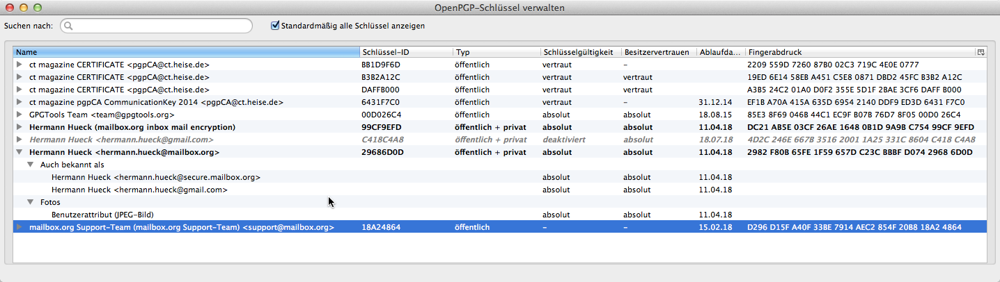
Abbildung 12: Thunderbird: Der Enigmail-Schlüsselbund mit
einigen Schlüsseln
ie Begriffe „Schlüsselbund“, „Schlüsselverwaltung“
und „Schlüsselbund-Verwaltung“ werde ich im Folgenden synonym
verwenden und bezeichne damit ein Software-Tool, das die Schlüssel
verwaltet, d.h. sie darstellt und bearbeitet, löscht oder neue
hinzufügt.
Am besten, man probiert's parallel
zum Lesen der folgenden Kapitel gleich aus.
7.1.1 Tools zur Schlüsselverwaltung
Wir benötigen folgende Tools auf
unserem Rechner:
Ein natives (d.h. ein
plattform-spezifisches) Schlüsselverwaltungstool:
Thunderbird als
Mail-Client. (Ich beziehe mich wieder nur auf Thunderbird, da
das Programm im Privat-Bereich sehr weit verbreitet ist und da ich
es selbst nutze.) Andere Mail-Clients können (wenn sie PGP
unterstützen) auch verwendet werden. Einige Alternativen zu
Thunderbird sind im Kapitel 8.4 zu finden.
Das Thunderbird-Add-On
Enigmail. Enigmail integriert die
PGP-Verschlüsselungs- und Schlüsselverwaltungsfunktionen der
nativen PGP-Tools in Thunderbird und macht diese so innerhalb
des Mail-Programms komfortabel nutzbar. Enigmail enthält
ebenfalls eine Schlüsselverwaltung und stellt außerdem die
kryptographischen Funktionen bereit, die für den Versand und
Empfang signierter und verschlüsselter Mails mit Thunderbird
erforderlich sind. Enigmail kann direkt mit dem
Thunderbird-Add-On-Manager (unter Extras → Add-ons)
gesucht und installiert werden. Zweckmäßig ist es, wenn man das
native, plattform-spezifische Schlüsselverwaltungstool (Gpg4win
bzw. GPG Suite) schon
vorher installiert hat, sodass Enigmail dieses beim ersten
Start gleich vorfindet. Eine Enigmail-Installationshilfe ist
hier zu finden:
Nach
der Installation der erforderlichen Tools kann man mit der
Schlüsselerzeugung beginnen (siehe Kap. 7.1.2).
In
Thunderbird findet
sich nach der Installation ein neuer Menüpunkt Enigmail.
Außerdem gibt es in den
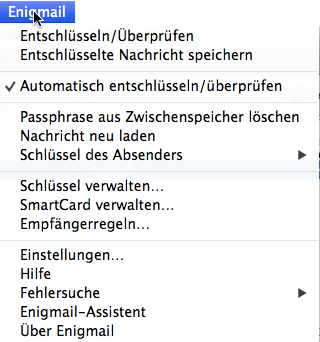
Abbildung 14: Thunderbird nach der Enigmail-Installation: Das
neue Enigmail-Menü
Einstellungen jedes Email-Kontos einen Punkt für die
kontenspezifische PGP-Konfiguration.
Nun
können die meisten Arbeiten der Schlüsselbund-Verwaltung sowohl in
Gpg4win / GPG
Suite
als auch in Enigmail
innerhalb von Thunderbird
erledigt werden.
Ich
werde mich im Folgenden auf Enigmail/Thunderbird
beziehen. Weitere sehr gute und detailreiche Anleitungen, Tutorials
und FAQs sind im Web zu finden, z.B. unter folgenden URLs:
Auf allen Betriebssystemen kann man
immer auch die Kommandozeile verwenden. So lassen sich z.B mit dem
folgenden Kommando alle im Schlüsselbund enthaltenen Schlüssel
anzeigen:
gpg
--list-keys
Die Manual-Seite für das
gpg-Kommando findet man hier:
https://www.gnupg.org/documentation/manpage.html
Die Verwendung der Kommandozeile
bietet sehr viele Optionen. Sie ist eher für den IT-Experten
gedacht. Der IT-Laie kann (unter Windows und Mac OS X) die
Verschlüsselung auch ohne die Verwendung der Kommandozeile
realisieren.
In den folgenden Kapiteln werde ich
an einigen Stellen exemplarisch auch die Verwendung des gpg-Kommandos
zeigen.
7.1.2 Erzeugung eines neuen Schlüsselpaars mit Thunderbird/Enigmail
Ein neues Schlüsselpaar kann
innerhalb von Thunderbird mit
E
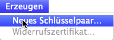
Abbildung 15: Enigmail: Neues Schlüsselpaar erzeugen
nigmail erzeugt werden.
Hier startet man in Thunderbird
über den Menüpunkt Enigmail → Schlüssel verwalten
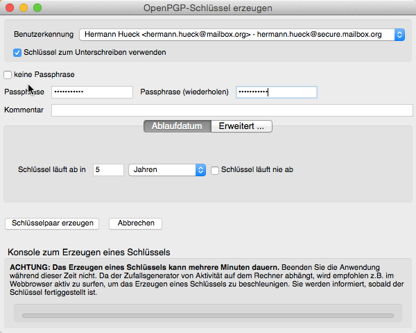
Abbildung 16: Enigmail: Dialog zum Erzeugen eines neuen
Schlüsselpaars (Reiter Ablaufdatum)
... die Enigmail-Schlüsselbund-Verwaltung, die
sich in einem neuen Fenster öffnet. Beim ersten Öffnen ist der
Schlüsselbund leer, es werden keine Schlüssel angezeigt. In der
Schlüsselverwaltung wählt man den Menüpunkt Erzeugen → Neues
Schlüsselpaar … In einem neuen Fenster legt man die
Schlüsselparameter fest:
Die
Benutzer-ID des neuen
Schlüssels. Das ist der Benutzername und das Email-Konto, für das
der Schlüssel gelten soll.
Die
Passphrase. Diese
sollte nicht zu einfach sein, denn sie schützt den Schlüssel vor
Missbrauch. Die Passwortregeln (siehe Kap. 12.1) gelten auch hier.
Der Schlüssel wird nach der Erstellung in der Schlüsselliste
angezeigt.
Einen
optionalen Kommentar
Im
Reiter Ablaufdatum
bestimmt man:
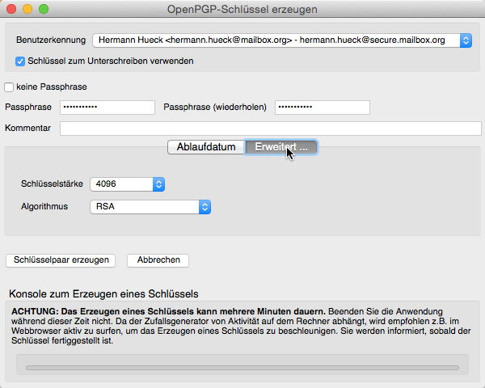
Abbildung 17: Enigmail: Dialog zum Erzeugen eines neuen
Schlüsselpaars (Reiter Erweitert)
Im
Reiter Erweitert
definiert man:
Die
Schlüsselstärke/länge: Ein sicherer Schlüssel sollte mindestens
2048 Bit lang sein. Ich empfehle eine Schlüssellänge von 4096 Bit.
Ein 4096-Bit-Schlüssel ist in 10 Jahren (wenn die Rechenleistung
der Schlüsselcracker stark gestiegenen ist) voraussichtlich immer
noch sicher.
Den
Verschlüsselungsverfahren: RSA ist das gängigste Verfahren für
die Verschlüsselung von Emails.
Mit einem Klick auf die Schaltfläche
Schlüssel erzeugen wird
ein Schlüssel für das angegebene Email-Konto erzeugt.
Anschließend wird man aufgefordert,
ein Widerrufszertifikat zu erzeugen. Dies lässt sich auch später
noch nachholen. (siehe Kap. 7.1.3)
Der neue Schlüssel wird nun im
Schlüsselbund angezeigt und lässt sich weiter bearbeiten.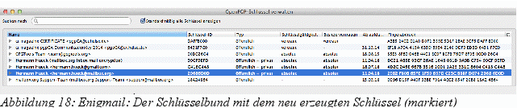
Auch
unter folgenden Weblinks wird die Schlüsselgenerierung mit
Thunderbird/Enigmail
detailliert erläutert:
7.1.2.1
Alternative
Schlüsselerzeugung
Statt mit Thunderbird/Enigmail
kann der Schlüssel kann auch mit dem jeweiligen
plattformspezifischen Schlüsselverwaltungstool erstellt werden:
Unter Windows mit Kassandra,
der Schlüsselverwaltungskomponente von
Gpg4win
zu verwenden. Siehe Kap. 8.4.2 und
http://gpg4win.de/handbuecher/einsteiger_7.html
.
Unter
Mac OS X mit der GPG
Keychain,
der Schlüsselverwaltungskomponente der GPG
Suite
zu verwenden. Siehe Kapitel 8.4.1 und http://support.gpgtools.org/kb
.
Unter
Linux nutzt man dazu das Tool Seahorse
oder die Kommandozeile.
Die Kommandozeile steht unter Linux, auf Macs und auf
Windows-Rechnern zur Verfügung. Zur Schlüsselerzeugung verwendet
man das Kommando
gpg –-gen-key
Dieses Kommando fragt vom Benutzer alle benötigten
Information (Verschlüsselungsverfahren, Schlüssellänge,
Gültigkeitsdauer, Benutzer-ID, Schlüssellänge etc.) ab und erzeugt
dann das Schlüsselpaar.
Alle Schlüssel des Schlüsselbundes lassen sich mit
folgendem Kommando anzeigen.
gpg –-list-keys
7.1.3 Das Widerrufszertifikat
Unbedingt
sollte man zu jedem eigenen Schlüssel ein Widerrufszertifikat
(KRC,
Key
Revocation Certificate)
erzeugen und dieses an einem sicheren Ort (CD, Speicherkarte oder
USB-Stick, der nur für Schlüssel verwendet wird) speichern. Mit dem
Widerrufszertifikat kann man einen öffentlichen Schlüssel
widerrufen, auch wenn man die Passphrase nicht kennt (z.B. wenn man
sie vergessen hat).
Erlangt eine fremde Person Zugriff auf das
Widerrufszertifikat (z.B. wenn ein Hacker in den eigenen Rechner
einbricht und das Widerrufszertifikat stiehlt), so kann diese den
Schlüssel, für den das Zertifikat erstellt wurde, widerrufen. Der
widerrufene Schlüssel wird damit unbrauchbar.
Die Erstellung eines Widerrufszertifikates (in einer
externen Datei) kann man mit Enigmail erledigen oder mit den
Plattform-spezifischen Tools oder auch auf der Kommandozeile.
Das Kommando
gpg
–-gen-revoke <key-id> --output revoke-cert.asc
erzeugt
das Widerrufszertifikat und speichert es in der Datei
revoke-cert.asc.
Man
kann das Widerrufszertifikat auch gleich bei der Schlüsselerzeugung
mit erzeugen lassen.
Das
exportierte Widerrufszertifikat sollte auf einem externen
Speichermedium gesichert und dann vom Rechner gelöscht werden (siehe
Kap. 7.1.6.1).
7.1.4 Weitere Benutzer-IDs (Email-Adressen) hinzufügen
Will
man den Schlüssel nicht nur mit einer Email-Adresse nutzen, können
weitere Benutzer-IDs hinzugefügt werden. Die Benutzer-ID ist eine
Kombination aus Name (normalerweise Vor- und Nachname) und
Email-Adresse. Der Name der ersten Email-Adresse darf sich
wiederholen; als Email-Adresse gibt man die zweite Email-Adresse an.
Ebenso können weitere Benutzer-IDs mit je einer weiteren
Email-Adresse hinzugefügt
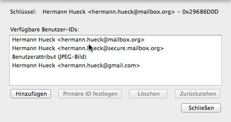
Abbildung 19: Enigmail: Liste der Benutzer-IDs eines Schlüssels
werden.
Man
öffnet die Enigmail-Schlüsselverwaltung.
Im Kontextmenü jedes Schlüssels ist die Option Benutzer-IDs
verwalten … zu wählen. In einem
neuen Fenster öffnet sich die Liste der Benutzer-IDs. Nach der
Erzeugung des Schlüssels enthält die Liste genau einen Eintrag. Nun
kann man weitere hinzufügen oder bestehende löschen oder die
primäre Benutzer-ID neu festlegen. In der Schlüsselliste des
Schlüsselbundes wird immer die primäre Benutzer-ID angezeigt.
7.1.5 Die wichtigsten PGP-Schlüsseleigenschaften
Die wichtigsten Schlüsselattribute
sind:
Schlüssel-ID
(obligatorisch, unveränderlich): Die Schlüssel-ID (oder key
id) besteht aus den letzten 8 Zeichen des Fingerabdrucks. Sie ist
(anders als der Name des Attributs vermuten lässt) kein eindeutiger
Identifikator für den Schlüssel.
Fingerabdruck
(obligatorisch, unveränderlich): Der Fingerabdruck (oder
finger print) ist eine eindeutige Kennzeichnung für den
Schlüssel. Der Fingerabdruck besteht aus 40 Zeichen und ist
identisch beim privaten und beim öffentlichen Schüssel. Damit
lässt sich auch die Zusammengehörigkeit der beiden Schlüssel
eines Schlüsselpaars nachweisen.
Schlüssel-Typ
(obligatorisch, unveränderlich): Der Schlüssel-Typ ist
entweder öffentlich oder öffentlich+privat. Ist der
Typ öffentlich+privat,
dann handelt es sich um ein eigenes Schlüsselpaar. Ist der Typ
öffentlich, dann ist
es der öffentliche Schlüssel einer anderen Person, den man in die
eigene Schlüsselverwaltung importiert hat.
Erstellungsdatum
(obligatorisch, unveränderlich): Das Erstellungsdatum wird
bei der Schlüsselerzeugung festgelegt. Es ist das Datum der
Schlüsselerzeugung.
Ablaufdatum
(optional, änderbar): Das Ablaufdatum kann bei der
Schlüsselerzeugung festgelegt und nachträglich geändert werden.
Zum Ablaufdatum des Schlüssels wird der Schlüssel automatisch
ungültig. Ein Schlüssel ohne Ablaufdatum ist unbegrenzt gültig.
P
 Abbildung 20: Enigmail: Schlüsselattribute
Abbildung 20: Enigmail: Schlüsselattribute
rimäre Benutzer-ID (obligatorisch,
änderbar): Dies ist meist die Benutzer-ID (Name und Email-Adresse),
die man bei der Schlüsselerzeugung angegeben hat. Man kann jedoch
eine weitere Benutzer-ID erzeugen und diese nachträglich zur
primären Benutzer-ID machen.
Weitere Benutzer-IDs
(optional, änderbar): Beliebig viele weitere Benutzer-IDs
können festgelegt werden. In der Regel definiert man für jede
weitere Email-Adresse, mit der man den Schlüssel verwenden will,
eine weitere Benutzer-ID.
Fotos
(optional, änderbar): Optional können ein oder mehrere
Fotos hinzugefügt werden.
Kommentar zu jeder
Benutzer-ID des Schlüssels
(optional, unveränderlich): Zu jeder Benutzer-ID, die dem
Schlüssel hinzugefügt wird, kann optional ein Kommentar angegeben
werden. Der Kommentar ist nicht änderbar. Er wird jedoch gelöscht,
wenn die Benutzer-ID gelöscht wird.
Beglaubigungen zu jeder
Benutzer-ID des Schlüssels
(optional, änderbar): Zu jeder Benutzer-ID kann man eine
oder mehrere Beglaubigungen hinzufügen. Eine Beglaubigung ist ein
Vertrauensbeweis, den man mit dem eigenen Schlüssel
signiert/unterschreibt. Der Schlüssel des Beglaubigenden wird in
die Benutzer-ID eingetragen. Typischerweise beglaubigt man die
öffentlichen Schlüssel anderer PGP-Nutzer, die man in die eigene
Schlüsselverwaltung aufgenommen hat und denen man vertraut.
Vertrauensstufe
oder Besitzervertrauen
(obligatorisch, änderbar): Jeder (eigene oder fremde)
Schlüssel in der Schlüsselverwaltung hat eine Vertrauensstufe.
Diese drückt aus, wie sehr ich dem betreffenden Schlüssel (bei der
Beglaubigung weiterer Schlüssel) vertraue. Das Besitzervertrauen
ist mit einer von 5 möglichen Vertrauensstufen einstellbar:
Absolut (Ich vertraue ihm
absolut.) Diese Vertrauensstufe sollte man nur für die eigenen
Schlüssel verwenden.
Vollständig (Ich vertraue ihm
voll.) Dies ist die höchste/beste Vertrauensstufe für die
Schlüssel von Kommunikationspartnern.
Marginal (Ich vertraue ihm nur
gering.)
Nie (Ich vertraue ihm nicht.)
Undefiniert (Ich weiß es
nicht.)
7.1.6 Schlüssel exportieren und importieren
In der Schlüsselverwaltung kann man
einen Schlüssel in eine Datei exportieren, um ihn z.B. auf einen
anderen Datenträger zu sichern oder auf einen anderen Rechner zu
übertragen. Das macht man typischerweise mit einem eigenen
Schlüsselpaar, das aus Private Key und Public Key besteht.
Man kann einen Schlüssel aus einer
Datei in die Schlüsselverwaltung importieren. Dies kann der zuvor
exportierte eigene Schlüssel sein oder auch ein fremder Public Key,
der in Dateiform vorliegt.
Siehe auch
https://www.verbraucher-sicher-online.de/anleitung/bildfolge-den-eigenen-oeffentlichen-schluessel-weitergeben-mit-enigmail-in-thunderbird
. Hier wird außer dem Export in eine Datei auch der Export in eine
Email, in die Zwischenablage oder auf einen Key-Server gezeigt und
beschrieben. Zum Schlüsselimport siehe
https://www.verbraucher-sicher-online.de/anleitung/bildfolge-oeffentliche-schluessel-importieren-mit-enigmail-in-thunderbird
.
7.1.6.1
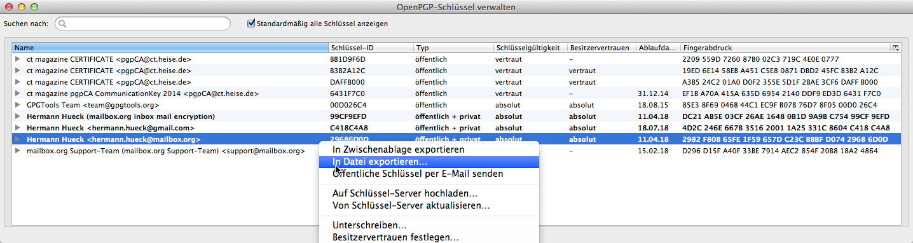
Abbildung 21: Enigmail: Den markierten Schlüssel exportieren
Schlüssel sicher aufbewahren
Das eigene Schlüsselpaar (bzw. die eigenen
Schlüsselpaare, so man mehrere hat) sollte man nicht verlieren.
Damit es auch einen Festplattencrash überlebt, muss es exportiert
und auf ein externes Medium (USB-Stick, Speicherkarte oder CD)
gesichert und gut aufbewahrt werden. Das Widerrufszertifikat kann man
dabei gleich mit sichern. Nach der erfolgreichen Sicherung sollte das
exportierte Schlüsselpaar und das Widerrufszertifikat von der
Festplatte des Rechners gelöscht werden.
Von diesem Medium kann man den/die Schlüssel
wiederherstellen, d.h. wieder in die Schlüsselverwaltung des
Rechners oder auch eines zweiten Rechners importieren.
WARNUNG:
Was man NIE
TUN
sollte:
Den privaten Schlüssel als Anhang einer
unverschlüsselten Email verschicken – auch nicht an sich selbst,
z.B. um ihn auf einen anderen Rechner zu übertragen. Unterwegs
könnte er in die falschen Hände geraten.
Den
privaten Schlüssel unverschlüsselt in die Cloud (z.B. in die
Dropbox) stellen. Dies wäre ein bequemer, aber sehr gefährlicher
Weg, um den Schlüssel auf einen anderen Rechner zu übertragen.
(Man
kann jedoch den privaten Schlüssel in eine passwortgeschützte
ZIP-Datei einschließen und dann die ZIP-Datei in die Dropbox
stellen. Doch Vorsicht! Niemals die ZIP-Datei direkt im
Dropbox-Ordner entpacken! Man muss sie zuerst aus dem Dropbox-Ordner
herausschieben oder -kopieren und danach entpacken!)
Was für den exportierten privaten Schlüssel gilt, gilt
genau so für das Widerrufszertifikat. Man muss es gut sichern und
wie seinen Augapfel schützen.
7.1.7 Konfiguration der Key-Server
(Enigmail)
Bevor man den/die (öffentlichen)
Schlüssel mit einem Schlüssel-Server synchronisiert (siehe Kap. 7.1.8),
ist es sinnvoll, die in Enigmail
eingestellten Schlüssel-Server zu prüfen und ggf. anzupassen. Ob
die dort angegebenen Schlüssel-Server tatsächlich unter ihrem Namen
noch erreichbar sind, kann man testen, indem man die Server-Namen in
die URL-Zeile des Browsers eingibt.
U
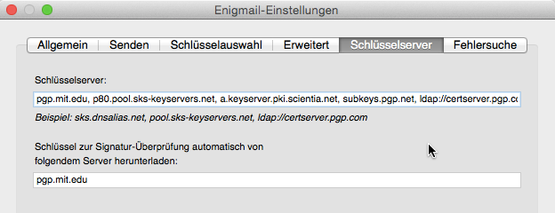
Abbildung 22: Enigmail: Konfiguration der Schlüssel-Server
nter Enigmail → Einstellungen → Schlüssel-Server
können die Schlüssel-Server festgelegt werden, die beim Import oder
Export öffentlicher Schlüssel zur Auswahl stehen sollen. Werden
mehrere angegeben, werden sie durch ein Komma getrennt. In der
Konfiguration meines Rechners sind z.B. folgende Schlüssel-Server
eingetragen:
Auf
den Seiten von Heise findet sich ebenfalls eine Empfehlung für die
einzustellenden Schlüssel-Server unter der URL:
http://www.heise.de/security/dienste/Keyserver-474468.html
.
Nutzt
man die plattform-spezifischen Schlüsselbund-Verwaltungen (Gpg4win
unter Windows bzw. die GPG
Suite
unter OS X) zur Synchronisation der öffentlichen Schlüssel, so
müssen auch dort die Key-Server konfiguriert werden. Dies erledigt
man in den Einstellungen dieser Schlüsselverwaltungsprogramme.
7.1.8 Öffentliche Schlüssel mit Key-Server synchronisieren
Key-Server halten die öffentlichen
PGP-Schlüssel vieler Benutzer bereit. Um diese Schlüssel weltweit
vorzuhalten, gibt es eine ganze Reihe davon über das globale
Internet verteilt. Man muss allerdings nicht jeden Key-Server
mit seinem öffentlichen Schlüssel versorgen, sondern man lädt den
Schlüssel auf einen Key-Server hoch. Die Key-Server synchronisieren
sich automatisch – normalerweise innerhalb von 24 Stunden (und sie
verwenden dazu ein eigenes Kommunikations-protokoll). Sie heißen
deshalb auch SKS oder Synchronizing Key Server.
Auf den Key-Servern findet man also
die öffentlichen Schlüssel vieler Benutzer, die PGP zum
Verschlüsseln und Signieren von Mails verwenden. Benötigt man den
öffentlichen Schlüssel eines bestimmten Benutzers, z.B. um die Mail
an ihn zu verschlüsseln, kann man mit der Email-Adresse des
Benutzers nach dem zugehörigen Schlüssel suchen, ihn herunterladen
und in den eigenen Schlüsselbund importieren. Erst wenn der
Schlüssel im Schlüsselbund vorliegt, kann der Mail-Client
(Thunderbird) den Schlüssel verwenden, um die Mail an den
Benutzer zu verschlüsseln oder um die Signatur in der Mail von
diesem Benutzer zu prüfen.
Hat man den öffentlichen Schlüssel
eines anderen Benutzers beglaubigt, sollte man diesen wieder auf den
Key-Server hochladen. Der aktualisierte Schlüssel mit der
zusätzlichen eigenen Beglaubigung ist in der Regel auch für andere
Benutzer wertvoller. So können die öffentlichen Schlüssel auf den
Key-Servern im Laufe der Zeit immer mehr Beglaubigungen ansammeln und
werden mit jeder neuen Beglaubigung vertrauenswürdiger.
Beglaubigungen können auch entzogen werden. Alle Schlüssel des
eigenen Schlüsselbundes sollten immer wieder mit dem
Schlüssel-Server synchronisiert werden, damit sie, was die
Beglaubigungen betrifft, immer auf dem aktuellen Stand sind.
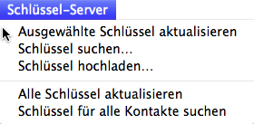
Abbildung 23: Enigmail: Optionen für die Synchronisation mit
einem Schlüssel-Server
Zum Schlüsselexport auf einen
Key-Server und den Schlüsselimport von einem Key-Server siehe
https://www.verbraucher-sicher-online.de/anleitung/bildfolge-den-eigenen-oeffentlichen-schluessel-weitergeben-mit-enigmail-in-thunderbird
und
https://www.verbraucher-sicher-online.de/anleitung/bildfolge-oeffentliche-schluessel-importieren-mit-enigmail-in-thunderbird
.
Wie macht man's in der
Enigmail-Schlüsselbund-Verwaltung?
Einzelnen Schlüssel auf
Key-Server hochladen: Im Kontextmenü eines Schlüssels oder mit
dem Menüpunkt Schlüssel-Server → Schlüssel hochladen ...
kann man den gewählten Schlüssel hochladen.
Markiert man
mehrere Schlüssel, kann man diese Aktion auch für mehrere
Schlüssel in einem Schritt durchführen.
Vorsicht! Niemals
einen Test-Schlüssel hochladen! Ein hochgeladener Schlüssel
kann nie mehr vom Schlüssel-Server gelöscht werden. Er kann nur
widerrufen werden. Er bleibt aber für immer als widerrufener und
damit ungültiger Schlüssel auf dem Key-Server.
Schlüssel auf Key-Server
suchen: Mit dem Menüpunkt Schlüssel-Server → Schlüssel
suchen ... kann man ein Suchkriterium eingeben. Man erhält eine
Ergebnisliste mit allen Schlüsseln, die dem Suchkriterium
entsprechen und kann unter den Treffern auswählen und die gewählten
Schlüssel in den eigenen Schlüsselbund importieren. Am einfachsten
ist es, man gibt die Email-Adresse der Person in die Suchmaske ein,
mit der man verschlüsselten Mailverkehr pflegen will.
Einen Schlüssel von
Key-Server aktualisieren: Mit dieser Option aus dem Kontextmenü
eines Schlüssels oder mit dem Menüpunkt Schlüssel-Server →
Schlüssel aktualisieren ... kann man den betreffenden Schlüssel
vom Key-Server aktualisieren. Damit erhält der Schlüssel im
eigenen Schlüsselbund auch die aktuellen Beglaubigungen. Auch ein
geändertes Ablaufdatum oder den Widerruf eines Schlüssels bekommt
die eigene Schlüsselbund-Verwaltung und damit auch
Thunderbird/Enigmail nur auf diese Weise mit.
Markiert man mehrere Schlüssel, kann
man diese Aktionen auch für mehrere Schlüssel in einem Schritt
durchführen.
Alle Schlüssel von
Key-Server aktualisieren: Mit dem Menüpunkt Schlüssel-Server
→ Alle Schlüssel aktualisieren kann man alle Schlüssel der
Schlüsselverwaltung vom Key-Server aktualisieren.
Schlüssel
für alle Kontakte suchen:
Mit dieser Option sucht Enigmail
die Schlüssel für alle Email-Adressen aus dem
Thunderbird-Adressbuch
und bietet dann alle gefundenen Schlüssel zum Import in den
Schlüsselbund an. Man kann immer noch die Schlüssel auswählen,
die man importieren möchte. Je nach Größe der Kontaktliste und
nach Anzahl der gefundenen Schlüssel kann dieser Vorgang recht
lange dauern. Bei einer umfangreichen Kontaktliste kann dieser
Vorgang auch länger als eine Stunde dauern.
7.1.9 Schlüssel beglaubigen
Die öffentlichen Schlüssel anderer
Benutzer, denen man vertraut, kann und sollte man beglaubigen, d.h.
sie unterschreiben bzw. signieren. Dadurch vergrößert man das Web
of Trust (WoT), das Netz aus Vertrauensbeziehungen (siehe Kap. 5.5).
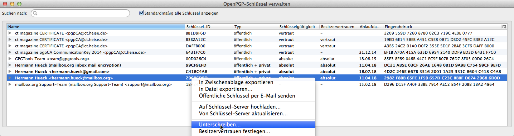
Abbildung 24: Enigmail: Den markierten Schlüssel
unterschreiben/beglaubigen
I
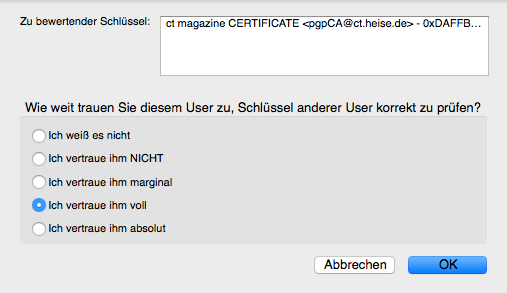
Abbildung 25: Enigmail: Besitzervertrauen definieren
n einem Schlüssel können mehrere Benutzer-IDs (bestehend aus
dem Namen und der Email-Adresse des Benutzers) eingetragen sein. Die
Benutzer-IDs werden vom Besitzer des Schlüssels gepflegt und können
von anderen Benutzern beglaubigt werden. Eine Beglaubigung ist die
Bestätigung der Verknüpfung eines Schlüssels mit einer
Benutzer-ID. Dazu muss der Beglaubigende die Benutzer-ID mit seinem
eigenen Schlüssel signieren/unterschreiben. Die Schlüssel-ID des
Beglaubigenden wird (analog zu Stempel und Unterschrift eines Notars)
in die Beglaubigung eingetragen.
Damit die Beglaubigung meines
Schlüssels durch die Unterschrift mit dem Schlüssel einer anderen
Person einen Wert für mich hat, muss ich den öffentlichen Schlüssel
des Beglaubigenden ebenfalls vom Schlüssel-Server in meine
Schlüsselverwaltung importieren (siehe Kap. 7.1.8). Nach dem Import
muss ich diesen Schlüssel ebenfalls signieren und beim
Besitzervertrauen die adäquate Vertrauensstufe eintragen. Damit lege
ich fest, wie sehr ich dem Besitzer des betreffenden Schlüssels
vertraue und definiere damit den Wert, den ich seiner Unterschrift
unter andere Schlüssel beimesse. Die höchste Vertrauensstufe
(absolutes Vertrauen) sollte man nur für den eigenen Schlüssel
vergeben. Die anderen vier Vertrauensstufen (siehe Abb. 25) sind für
fremde öffentliche Schlüssel zu verwenden. Dem Schlüssel eines
bekannten, zuverlässigen Kommunikationspartners würde man
normalerweise die zweithöchste Vertrauensstufe (volles Vertrauen)
zuweisen.
7.1.9.1 Verifikation von Benutzer-Identität, Email-Adresse und
Schlüssel-Identität
Bevor ich einen fremden Schlüssel
(den öffentlichen Schlüssel eines Kommunikationspartners)
beglaubige, muss ich ihn zunächst in den eigenen Schlüsselbund
importieren. Dazu kann der Kommunikationspartner mir eine (am besten
signierte) Mail mit seinem öffentlichen Schlüssel als Anhang
zusenden oder er exportiert seinen Schlüssel auf einen
Schlüssel-Server und ich lade ihn vor dort herunter und importiere
ihn in den Schlüsselbund (siehe Kap. 7.1.8).
Bevor ich einen importierten
Schlüssel beglaubige, muss ich überprüfen, ob es auch wirklich der
Schlüssel der betreffenden Person mit der eingetragenen
Email-Adresse ist.
Beglaubige ich einen öffentlichen
Schlüssel einer Person, so verbürge ich mich mit meiner
Unterschrift, d.h. mit meinem eigenen Schlüssel, für die
Korrektheit des Schlüssels. Dies bedeutet, dass ich die
Zugehörigkeit des Schlüssels zu der betreffenden Person und zu
einer oder mehren Email-Adressen verifizieren muss. D.h. ich muss die
Identität des Schlüsselinhabers, die Email-Adresse(n) und die
Identität des Schlüssels prüfen.
Prüfung der Person:
Um die Identität eines Unbekannten zu prüfen, kann ich mir wie ein
Grenzbeamter den
Lichtbildausweis (Pass,
Personalausweis, Führerschein, BahnCard oder Versicherungskarte)
zeigen lassen. Kennt man den Schlüsselbesitzer persönlich, kann
allein diese Bekanntschaft schon als Prüfung der Benutzer-Identität
gelten. Bei einem Telefonat erkenne ich die Freundin oder den Freund
auch an der Stimme; dies kann als Identitätsnachweis ausreichend
sein.
Prüfung der Benutzer-ID und
Email-Adresse: Dies geschieht
einfach dadurch, dass der Benutzer, dessen Schlüssel ich signieren
will, mir eine signierte Mail sendet. Damit erhalte ich die
Email-Adresse des Absenders und kann sie mit der Email-Adresse, die
in der Benutzer-ID des zu signierenden Schlüssels eingetragen ist,
vergleichen. Dazu muss auch der Fingerabdruck des Schlüssels
geprüft werden (s.u.).
Prüfung der
Schlüssel-Identität mit Hilfe des Schlüssel-Fingerabdrucks:
Ein Schlüssel ist durch seinen Fingerabdruck eindeutig
identifizierbar. Der Beglaubigende muss den Fingerabdruck, der vom
Schlüsseleigentümer (z.B. am Telefon oder per Fax) genannt wird,
mit dem Fingerabdruck des importierten öffentlichen Schlüssels
abgleichen. (Die Prüfung der Schlüssel-ID ist unzureichend, sie
ist kein eindeutiges Merkmal für einen Schlüssel.)
Man könnte sich das so vorstellen:
Der Schlüsselbesitzer schreibt seine Mail-Adresse und den
Fingerabdruck des (privaten) Schlüssels auf ein Papier und übergibt
dieses (persönlich oder per Brief oder Fax) an den Beglaubigenden.
Der Beglaubigende hat den öffentlichen Schlüssel heruntergeladen
oder per Mail zugesandt bekommen und in seine Schlüsselverwaltung
importiert. Jetzt kann er prüfen, ob der auf das Papier geschriebene
Fingerabdruck mit dem des importierten, öffentlichen Schlüssels
übereinstimmt. Ist der Schlüsselinhaber ein guter Bekannter, den
ich an der Stimme erkennen kann, kann er den 40-stelligen
Fingerabdruck dem Beglaubigenden auch am Telefon vorlesen.
Wenn
man in der Enigmail-Schlüsselverwaltung
einen Schlüssel unterschreibt/signiert, beglaubigt man immer
automatisch alle Benutzer-IDs (und damit alle Email-Adressen) dieses
Schlüssels. Dies ist in den allermeisten Fällen auch erwünscht.
Will man nicht alle, sondern nur eine bestimmte Benutzer-ID (sprich:
Email-Adresse) eines Schlüssels beglaubigen, so muss man dies in der
plattform-spezifischen Schlüsselverwaltung Gpg4win
oder GPG Suite
oder auf der Kommandozeile erledigen.
Ein paar
praktische Beispiele demonstrieren das Beglaubigungsverfahren.
In
einem Telefonat kann
ich einem Freund den Fingerabdruck meines Schlüssels und meine
Email-Adresse vorlesen. Dieser erkennt mich an der Stimme (Nachweis
der Benutzer-Identität) und prüft den Fingerabdruck meines
öffentlichen Schlüssels in einer von mir signierten, an ihn
gerichteten Mail (Nachweis der Schlüssel-Identität). Er importiert
meinen Public Key in seine Schlüsselverwaltung und beglaubigt ihn,
d.h. er signiert ihn. Außerdem müssen beide noch das
Besitzervertrauen für den Schlüssel des jeweils anderen auf die
passende Vertrauensstufe (normalerweise auf „vollständiges
Vertrauen“) einstellen. Danach lädt er meinen von ihm
beglaubigten öffentlichen Schlüssel auf einen Key-Server hoch
(siehe Kap. 7.1.8). Ich und andere Benutzer können ihn von dort
wieder aktualisieren (sprich: herunterladen); so haben wir die
beglaubigten Schlüssel dann in unseren Schlüsselverwaltungen. Noch
einfacher lässt sich dies bei einem persönlichen Treffen
erledigen. Alternativ kann man Fingerabdruck und Email-Adresse(n)
per Brief oder per Fax übermitteln.
Auf
einer Krypto-Party
oder einer Key-Signing-Party
treffen sich Unbekannte mit ihren Ausweisen und ihren Laptops, um
sich wechselseitig ihre PGP-Schlüssel zu beglaubigen. Mehr dazu
unter https://www.cryptoparty.in/
und unter http://de.wikipedia.org/wiki/CryptoParty
Die c't vom Heise-Verlag fördert das Web of Trust mit der
c't-Kryptokampagne. Sie demonstriert auch sehr gut, wie das
PGP-Beglaubigungsverfahren funktioniert. Dies ist Gegenstand des
nachfolgenden Unterkapitels.
7.1.9.2 c't-Kryptokampagne
Will man seinen öffentlichen Schlüssel von der c't signieren
lassen, ist folgendes zu tun:
Man
lädt seinen öffentlichen Schlüssel auf einen Key-Server hoch
(siehe Kap. 7.1.8) und schickt ihn an die Heise-Mail-Adresse
pgpCA@ct.heise.de.
Bei Heise wird der öffentliche Schlüssel mit allen Benutzer-IDs
gespeichert.
Als
Antwort erhält man für jede Benutzer-ID an die zugehörige
Email-Adresse eine verschlüsselte Bestätigungsmail. Für einen
Schlüssel mit drei Benutzer-IDs erhält man drei Bestätigungsmails.
Diese Mails wurden von Heise mit dem eigenen öffentlichen Schlüssel
verschlüsselt. Beim Empfang der Mails in Thunderbird
werden diese mit dem privaten Schlüssel entschlüsselt und damit
lesbar. In jeder Bestätigungsmail befindet sich ein
Bestätigungslink. (Wäre man nicht der Inhaber des privaten
Schlüssels, so könnte man die Email des Heise-Verlags nicht
entschlüsseln, den Bestätigungslink also auch nicht lesen und ihn
demzufolge auch nicht anklicken.)
In
jeder entschlüsselten Mail von Heise klickt man dann auf den
Bestätigungslink und wird auf eine Web-Seite von Heise
weitergeleitet. Darauf wird einem mitgeteilt, dass die Verknüpfung
der Benutzer-ID (Email-Adresse) mit dem Schlüssel verifiziert wurde
und von Heise als gültig anerkannt wird. Die Prüfung
der Benutzer-IDs und Email-Adressen
ist damit abgeschlossen. Jetzt muss noch die Verknüpfung der Person
mit dem Schlüssel verifiziert werden. Dazu dienen die nachfolgenden
Schritte.
Man lädt von der Website der c't-Kryptokampagne ein Formular für
einen Zertifizierungsantrag herunter und druckt es aus. Man füllt
das Formular aus, d.h. man trägt den eigenen Namen, die
Email-Adresse der primären Benutzer-ID, die Schlüssel-ID, den
Fingerabdruck des Schlüssels, die Personalausweisnummer ein und
unterschreibt es.
Das
ausgefüllte Antragsformular legt man persönlich zusammen mit dem
Personalausweis beim Heise-Verlag in Hannover oder auf dem
Heise-Messestand bei der Cebit in Hannover oder bei der IFA in
Berlin vor. Im Verlag oder am Messestand findet die Personenprüfung
(Nachweis der Benutzer-Identität) statt: Es wird geprüft, ob das
Lichtbild das des anwesenden Antragstellers ist und ob die
Personalausweisnummer der im Antragsformular eingetragenen
Ausweisnummer entspricht. Der Antrag verbleibt bei Heise und wird im
Verlag weiterbearbeitet.
Beim
Heise-Verlag kann ein Bearbeiter dann die Schlüsselprüfung
(Nachweis der Schlüssel-Identität) durchführen, indem er den auf
dem Formularbogen angegebenen Fingerabdruck mit dem Fingerabdruck
des zuvor zugesandten öffentlichen Schlüssels abgleicht. Der
Bearbeiter kann den zugesandten Schlüssel signieren und auf einen
Key-Server hochladen. Er schickt dem Antragsteller auch eine Mail,
die ihm die Erledigung des Antrags mitteilt.
Den
vom c't-Magazin signierten/beglaubigten Schlüssel kann man nun von
einem Key-Server aktualisieren (siehe Kap. 7.1.8). Damit landet auch
die Beglaubigung im eigenen Schlüsselbund.
Den
Schlüssel des c't-Magazins, mit dem der eigene Schlüssel
signiert/beglaubigt wurde, muss man ebenfalls von einen Key-Server
herunterladen (siehe Kap. 7.1.8) und in den eigenen Schlüsselbund
importieren. Dessen Fingerabdruck ist in jeder Ausgabe des
c't-Magazins im Impressum abgedruckt und kann damit verifiziert
werden. Nach der Verifikation muss man diesen noch unterschreiben
und die Vertrauensstufe auf „volles Vertrauen“ einstellen. Damit
erklärt man der Schlüsselverwaltung, dass man diesem Schlüssel
vertraut. Jetzt erst hat die Beglaubigung des c't-Magazins wirklich
einen Wert.
Durch
den Umstand, dass der Heise-Verlag eine bekannte und bei den
deutschen PGP-Benutzern geschätzte Institution ist, ist der Wert
dieser Schlüssel-Beglaubigung hoch einzustufen. D.h. durch den
Stempel des c't-Magazins auf meinen Schlüssel genießt dieser eine
viel höhere Reputation. Er wird von anderen Kommunikationspartnern
eher als vertrauenswürdig anerkannt.
Genaue
Erläuterungen zur c't-Kryptokampagne und Download des
Antragsformulars und FAQ gibt es unter
http://www.heise.de/security/dienste/Krypto-Kampagne-2111.html
.
7.2 Thunderbird für PGP-Nutzung konfigurieren
Der ganze Aufwand der
Schlüsselverwaltung und -beglaubigung dient letztlich dazu,
signierte und verschlüsselte Mails versenden zu können. Außerdem
können verschlüsselte Mails empfangen, einer Signaturprüfung
unterzogen, entschlüsselt und dann auch gelesen werden. Die
Voraussetzung hierfür ist, dass ein Schlüssel einem in Thunderbird
eingerichteten Email-Account zugeordnet ist. Dann wird genau
dieser (private) Schlüssel verwendet, um die aus diesem Account
abgehenden Mails zu signieren und die in diesem Account empfangenen,
verschlüsselten Mails zu entschlüsseln.
Nach der Festlegung der globalen
Einstellungen (in Kap. 7.2.1) aktiviert man PGP für ein bestimmtes
Mail-Konto und ordnet dem Konto ein Schlüsselpaar zu (siehe Kap. 7.2.2).
Danach sind die konten-spezifischen Einstellungen für den
Mailversand zu konfigurieren.
7.2.1 Globale Enigmail-Einstellungen (für alle Konten)
Die hier zu treffenden Einstellungen
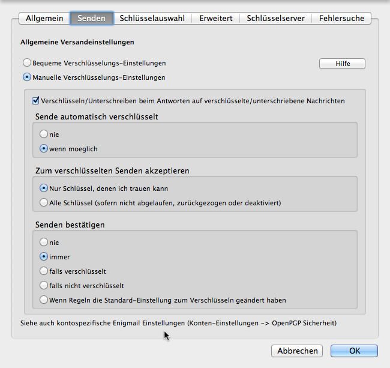
Abbildung 26: Enigmail: Globale Einstellungen für den
Mailversand
gelten für alle Konten, für die PGP aktiviert und einen
privaten Schlüssel festgelegt hat (siehe Kap. 7.2.2).
Unter Enigmail →
Einstellungen... → Allgemein sollte man zunächst die
Experten-Optionen und -Menüpunkte anzeigen.
Unter Enigmail →
Einstellungen... → Senden
definiert man die konten-übergreifenden Einstellungen für den
Mailversand. Hier ist es zweckmäßig, die manuellen
Einstellungen zu wählen.
Man definiert, unter welchen
Umständen beim Antworten auf eine verschlüsselte oder signierte
Mail die Antwort-Mail ebenfalls verschlüsselt, bzw. signiert werden
soll.
Man legt fest, welche Schlüssel
zum verschlüsselten Senden verwendet werden sollen – alle
Schlüssel im Schlüsselbund oder nur diejenigen, die man als
vertraut markiert hat (siehe Kap. 7.1.9).
Schließlich kann man noch
festlegen, unter welchen Umständen Thunderbird vor dem
Versand dem Benutzer eine Versand-Bestätigung abverlangen soll. Bei
der Einstellung „immer“ wird dem Benutzer jedes Mal vor
dem Versenden angezeigt, ob die Mail unverschlüsselt oder
verschlüsselt, ob sie signiert oder unsigniert ist und ob das
Verschlüsselungsformat PGP/MIME verwendet wird oder nicht. Erst
wenn man den Mailversand mit den angezeigten Einstellungen
bestätigt, wird die Mail wirklich versandt.
7.2.2 Konten-spezifische Enigmail-Einstellungen
Mit der Installation von Enigmail
haben die Konteneinstellungen jedes in Thunderbird
eingerichteten Mail-Kontos einen neuen Eintrag OpenPGP-Sicherheit
erhalten, unter dem die konten-spezifischen PGP-Einstellungen
vorgenommen werden können.
Die konten-spezifischen Einstellungen
überschreiben ggf. die globalen Einstellungen, die in Kapitel 7.2.1
vorgenommen wurden.
Detaillierte Informationen zu dieser
Konfiguration inklusive Screenshots sind hier zu
finden:
http://www.thunderbird-mail.de/wiki/Enigmail_OpenPGP_-_Einstellungen#OpenPGP-Sicherheit
Will
man ein Konto mit PGP nutzen, muss man mindestens den Hauptschalter
umlegen (Haken setzen bei: OpenPGP-Unterstützung für
diese Identität (sprich:
Email-Adresse) aktivieren)
und einen (privaten) Schlüssel des Schlüsselbundes für dieses
Email-Konto auswählen.
Alle
weiteren Einstellungen sind optional.
D
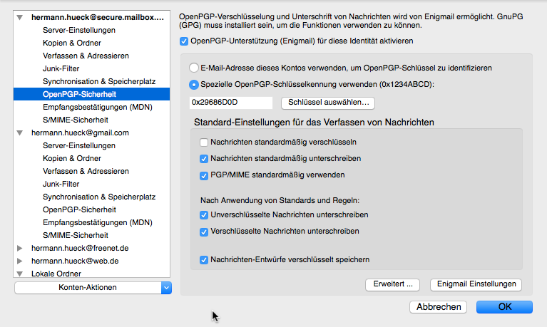
Abbildung 27: Enigmail: PGP-Einstellungen für ein Mail-Konto
ie folgenden Einstellungen sind die Standardeinstellungen für
den Mail-Versand, die aus diesem Konto abgeschickt werden. Sie können
auch vor dem Versenden einer Mail noch geändert werden:
Nachrichten standardmäßig
verschlüsseln. Dies ist in der
Regel nicht sinnvoll. Diese Option zu setzen, würde nur Sinn
machen, wenn man viele öffentliche Schlüssel von
Kommunikationspartnern im eigenen Schlüsselbund hat und überwiegend
verschlüsselten Email-Verkehr betreibt. Beginnt man gerade mit der
Verwendung von PGP, ist diese Voreinstellung nicht zu empfehlen.
Unverschlüsselte Nachrichten
standardmäßig unterschreiben.
Dies ist sinnvoll, falls man im Normalfall unterschriebene
Nachrichten versenden will.
Immer PGP/MIME verwenden.
Diese Option ist in der Regel sinnvoll (siehe Kap. 5.6). Bei
überwiegender Verwendung von Inline-PGP ist diese Option
abzuwählen. Dann muss man allerdings beim Verfassen von Mails auf
die HTML-Formatierung verzichten (siehe Kap. 7.2.3), denn diese
bringt das klassische Inline-PGP aus dem Tritt.
Unverschlüsselte Nachrichten
unterschreiben. Diese
Einstellung ist sinnvoll. Sie greift erst, wenn Empfängerregeln und
die Standardvorgaben ausgewertet wurden und aus dieser Auswertung
keine Entscheidung bezüglich der Signierung unverschlüsselter
Nachrichten getroffen werden konnte.
Verschlüsselte Nachrichten
standardmäßig unterschreiben.
Diese Einstellung ist sinnvoll. Sie greift erst, wenn
Empfängerregeln und die Standardvorgaben ausgewertet wurden und aus
dieser Auswertung keine Entscheidung bezüglich der Signierung
verschlüsselter Nachrichten getroffen werden konnte.
Nachrichten-Entwürfe
verschlüsselt speichern. Diese
Einstellung ist sinnvoll. Sie legt fest, ob Nachrichten-Entwürfe
verschlüsselt oder unverschlüsselt gespeichert werden sollen.
Zwei
weitere Einstellungen betreffen die (für den Benutzer normalerweise
nicht angezeigten) Kopfzeilen der Mail, die sog. Mail-Header:
Sende OpenPGP-Schlüssel-ID.
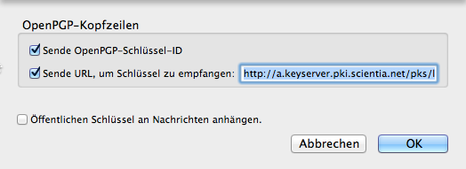
Abbildung 28: Enigmail: Weitere PGP-Optionen
Diese Option bestimmt, ob im Mail-Header eine Kopfzeile mit
der Schlüssel-ID erstellt wird. Diese Option ist sinnvoll, jedoch
nicht erforderlich.
Sende URL, um Schlüssel zu
empfangen. Diese Option
bestimmt, ob im Mail-Header eine Kopfzeile mit der Download-URL des
öffentlichen Schlüssels erstellt wird. Wählt man diese Option,
ist auch die URL, an der der eigene öffentliche Schlüssel von
einem Schlüssel-Server heruntergeladen werden kann (z.B. die URL
des öffentlichen Schlüssels auf einem KeyServer), anzugeben. Diese
Option ist sinnvoll, jedoch nicht erforderlich. Sie hilft dem
Mail-Programm des Empfängers meiner Mail, meinen Schlüssel auf
einem Schlüssel-Server zu finden und ggf. automatisch
herunterzuladen.
Eine
weitere Einstellung betrifft den Schlüssel-Versand:
Öffentlichen Schlüssel an
Nachrichten anhängen. Durch
Setzen dieser Option wird der eigene öffentliche Schlüssel jeder
ausgehenden Nachricht dieses Mail-Accounts automatisch als Anhang
hinzugefügt. Damit kann man den eigenen öffentlichen Schlüssel an
die Kommunikationspartner verteilen. Das ist jedoch nicht
erforderlich, da der Schlüssel auch vom Key-Server heruntergeladen
werden kann. Enigmail
lädt den Schlüssel eines Kommunikationspartners, der sich noch
nicht im Schlüsselbund befindet, automatisch vom Schlüssel-Server
herunter und importiert ihn. Man muss den Schlüssel also nicht mit
jeder Mail mitschicken.
7.2.3 Inline-PGP:
Text-Mails statt HTML-Mails
Beim
Verzicht auf PGP/MIME und Verwendung von Inline-PGP kann es Probleme
mit HTML-Mails geben. Verschlüsselte Mails können evtl. nicht mehr
entschlüsselt werden.
Deshalb empfiehlt es sich für das Verfassen von Mails das
Text-Format einzustellen. In den Einstellungen jedes Mail-Kontos gibt
es im Konfigurationsordner Verfassen und Adressieren
die Option „Nachrichten im HTML-Format verfassen“.
Diese Option ist normalerweise aktiviert. Durch Entfernen des
Häkchens in der Checkbox wird das Text-Format eingestellt.
Damit
verzichtet man beim Verfassen auf Text-Formatierungen wie
Überschriften, Fettschrift, Kursivschrift, Aufzählungslisten,
unterschiedliche Schriftarten eingebettete Bilder und vieles mehr.
7.2.4 Die verschlüsselt versendeten Mails lesbar machen
Eine
weitere Enigmail-Einstellung
verhindert, dass man die eigenen verschlüsselt versendeten Mails
nicht mehr lesen kann.
Diese Einstellung ist in Thunderbird
zu finden unter Enigmail → Einstellungen → Senden.
Dort ist das Häkchen mit der Beschriftung „Zusätzlich
mit eigenem Schlüssel verschlüsseln“
auszuwählen.
Wird
diese Option nicht gesetzt, wird die Mail nur mit dem öffentlichen
Schlüssel des Empfängers der Mail verschlüsselt. Dies hat zur
Folge, dass auch die Mail-Kopie im Ordner Gesendet
mit dem öffentlichen Empfänger-Schlüssel verschlüsselt wird. Da
diese jedoch nur mit dem privaten Schlüssel des Empfängers
entschlüsselt werden kann, kann man die Mails, die man verschlüsselt
versandt hat, selbst nicht mehr entschlüsseln und lesen.
Setzt
man jedoch das Häkchen, wird die Mail-Kopie, die im eigenen
Gesendet-Ordner
gespeichert wird, mit dem eigenen öffentlichen Schlüssel
verschlüsselt und kann auch mit dem eigenen privaten Schlüssel
wieder entschlüsselt werden. Diese Option bewirkt also, dass man die
Kopien der verschlüsselt versendeten Mails im Ordner Gesendet
auch nachträglich noch lesen kann.
7.2.5 Mails automatisch entschlüsseln und die Signatur überprüfen
Der
Menüpunkt Enigmail
→ Automatisch entschlüsseln/überprüfen
tut, was er sagt. Ist diese Option aktiviert, dann werden empfangene,
verschlüsselte und signierte Mails beim Öffnen automatisch
entschlüsselt und einer Signaturprüfung unterzogen, wenn der
Schlüssel des Absenders im Schlüsselbund vorliegt. Liegt der
Schlüssel des Absenders nicht vor, so bietet Thunderbird an, diesen
auf dem Schlüssel-Server zu suchen und ggf. herunterzuladen und in
den Schlüsselbund zu importieren.
7.3 PGP mit Thunderbird nutzen
Das Senden und Empfangen signierter
und verschlüsselter Mails ist nach den ganzen Vorarbeiten eine
einfache Angelegenheit geworden und funktioniert fast genau so wie
der Versand und Empfang ohne Verschlüsselung und Signatur.
Siehe dazu auch die Anleitung unter
https://www.verbraucher-sicher-online.de/anleitung/bildfolge-verschluesselte-e-mails-senden-und-empfangen-in-thunderbird-mit-enigmail
.
7.3.1 Mailversand
Zum
Verfassen einer neuen Mail klickt man wie üblich auf den Button
Verfassen oder man
wählt eine bereits empfangene Mail und klickt auf Antworten
oder auf Weite
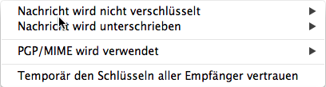
Abbildung 29: PGP-Versand-Optionen
rleiten. Das Fenster zum Verfassen der Mail öffnet sich.
Das
Fenster hat jetzt (nach der Installation von Enigmail)
ein neues Schloss-Symbol mit der Beschriftung Enigmail.
Beim Klick auf das Symbol lassen sich die PGP-Versand-Optionen
anzeigen oder ändern. Man kann bestimmen, ob vor dem Versand …
die
Nachricht (mit dem privaten Schlüssel der versendenden
Email-Adresse) unterschrieben werden soll,
die
Nachricht (mit dem öffentlichen Schlüssel der Email-Adresse des
Empfängers) verschlüsselt werden soll,
ob
PGP/MIME als Verschlüsselungsformat verwendet werden soll
und
ob den Schlüsseln aller Empfänger dieser Mail vertraut werden
soll.
7.3.2 Mailempfang
Nachrichten
werden wie üblich empfangen. Thunderbird
zeigt oben im Nachrichtenfenster die PGP-Informationen der Nachricht
an, falls die Nachricht signiert und/oder verschlüsselt ist.
Ist
die Nachricht signiert und unverschlüsselt, kann man die Nachricht
natürlich lesen. Allerdings kann Thunderbird/Enigmail
die Signatur nicht überprüfen, wenn der öffentliche Schlüssel des
Absenders nicht im Schlüsselbund enthalten ist. Diese Information
wird angezeigt; Thunderbird
bietet an, den fehlenden öffentlichen Schlüssel vom
Schlüssel-Server herunterzuladen und in den Schlüsselbund zu
importieren. Dann prüft Thunderbird
die Nachricht erneut und zeigt die PGP-Informationen erneut an. Ggf.
kann man anschließend (wenn man den gerade importierten Schlüssel
geprüft hat, siehe Kap. 7.1.9.1) den Schlüssel noch signieren, das
Besitzervertrauen auf die geeignete Stufe einstellen und den
Schlüssel dann wieder auf den Schlüssel-Server hochladen.
Ist
die Nachricht (mit dem eigenen öffentlichen Schlüssel)
verschlüsselt, wird sie von Thunderbird
mit dem eigenen privaten Schlüssel aus dem Schlüsselbund
entschlüsselt und der entschlüsselte Text wird angezeigt (siehe
Kap. 7.2.5).
7.3.3 E
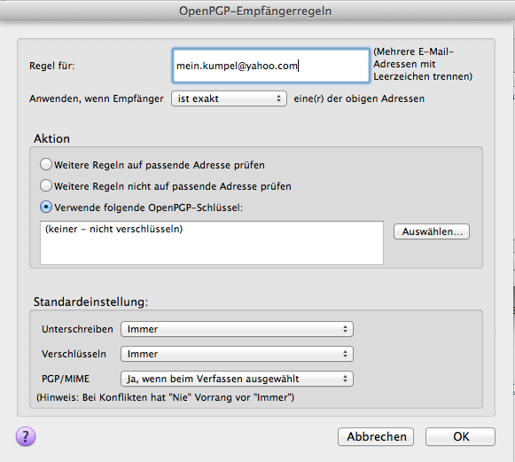
Abbildung 30: Neue Empfängerregel erstellen
mpfängerregeln
Beginnt
man gerade mit der Verwendung von PGP, hat man in der Regel nur die
öffentlichen Schlüssel weniger Kommunikationspartner im
Schlüsselbund. Deshalb ist es, wie oben beschrieben, sinnvoll, Mails
beim Versand standardmäßig zu signieren, jedoch nicht zu
verschlüsseln.
Für
die wenigen Empfänger, deren öffentlicher Schlüssel sich im
eigenen Schlüsselbund befindet, lässt sich jedoch pro Empfänger
eine von der Standardeinstellung abweichende Empfängerregel
erstellen. Dazu wählt man in Thunderbird/Enigmail
den Menüpunkt Enigmail → Empfängerregeln...
Darauf öffnet sich ein Dialog mit einer Liste von Empfängerregeln,
die anfangs noch leer ist. Man klickt nun auf den Button Hinzufügen.
Ein weiterer Dialog öffnet sich. In diesem gibt man eine bestimmte
Empfänger-Email-Adresse ein und kann für diese eine Regel
erstellen: Man wählt den zu verwendenden öffentlichen Schlüssel
und legt mit weiteren Optionen fest, ob die Mails an diesen
Adressaten signiert werden sollen, ob sie verschlüsselt werden
sollen und ob PGP/MIME zu verwenden ist. Der Dialog ist
selbsterklärend.
7.3.4 Mit signierten Mails beginnen
...
Hat man PGP gerade erst eingerichtet,
hat man in der Regel nur wenige Kommunikationspartner, mit denen man
verschlüsselte Nachrichten austauschen kann. Um verschlüsselte
Mails zu versenden, benötigt man ja die öffentlichen Schlüssel der
Kommunikationspartner.
Beim Signieren der Mails ist man
nicht auf den Kommunikationspartner angewiesen. Man benötigt dazu
nur den eigenen privaten Schlüssel. Deshalb kann man, wenn man alles
eingerichtet hat, damit beginnen, alle ausgehenden Mails zu
signieren. Die geeigneten Voreinstellungen haben wir in Kapitel 7.2.1
bereits konfiguriert.
Der jeweilige Partner kann die Mails,
auch wenn sie signiert sind, immer lesen. Will er allerdings die
Signaturen empfangener Mails überprüfen, muss auch er unter Windows
Gpg4win bzw. auf dem Mac die GPG Suite
und zusätzlich das Enigmail-Plugin
für Thunderbird oder
einen anderen Mail-Client mit PGP-Unterstützung installieren.
Durch das
Versenden signierter Mails informiert man seine
Kommunikationspartner, dass das eigene System PGP beherrscht. Man
teilt mit, dass man die Voraussetzungen für die
PGP-Nachrichtenverschlüsselung geschaffen hat und bewirbt damit die
Verwendung von PGP.
Im Laufe
der Zeit sammelt man immer mehr öffentliche Schlüssel von
Kommunikationspartnern und kann sie signieren/beglaubigen, die
Vertrauensstufe – wie zuvor beschrieben – auf ein adäquates
Level einstellen und so allmählich den Anteil der verschlüsselten
Kommunikation erhöhen.
7.3.5 P
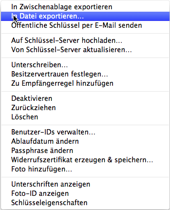
Abbildung 31: Enigmail: Schlüssel-Export
flege des Schlüsselbundes
Von
Zeit zu Zeit sollte man die öffentlichen Schlüssel im Schlüsselbund
aktualisieren. Sowohl der eigene öffentliche Schlüssel als auch die
Schlüssel der Kommunikations-partner können seit der letzten
Aktualisierung weitere Beglaubigungen anderer Nutzer erhalten haben.
Den Nutzen dieser Beglaubigungen erhalte ich nur, wenn ich meinen
Schlüsselbund in regelmäßigen Abständen mit dem Schlüssel-Server
synchronisiere. Dies erledigt man in Thunderbird
unter Enigmail → Schlüssel verwalten... →
Schlüssel-Server → Alle Schlüssel aktualisieren.
Da die Schlüsselbund-Pflege auf dem
Android-Gerät nicht so komfortabel zu bewerkstelligen ist, kann man
die aktualisierten öffentlichen Schlüssel am PC exportieren (siehe
Kap. 7.1.6), die Datei mit
den Schlüsseln auf das Android-Gerät übertragen (siehe Kap. 10.2.2)
und dort wieder in die Schlüsselverwaltung importieren (siehe Kap.
10.2.3).
7.4 Verschlüsselte Mails auf dem
Zweitrechner
Möchte man auf einen zweiten Rechner
ebenfalls auf die verschlüsselte Email-Kommunikation zugreifen, so
muss man die gesamte beschriebene Einrichtungsprozedur auf diesem
System wiederholen.
Dies ist nur sinnvoll, wenn man die
Mail-Konten auf dem Erstrechner bereits mit IMAP konfiguriert hat.
Dabei bleiben die Mails zentral beim Provider gespeichert. Mit IMAP
können beliebig viele eigene Geräte, auch Smartphones und Tablets
für den Zugriff auf den Mail-Account eingerichtet werden. Auch auf
dem Zweitrechner ist der Abruf der Mails nicht mit POP sondern mit
IMAP zu konfigurieren.
Auf dem Zweitrechner erzeugt man
keine neuen Schlüssel.
Stattdessen überträgt man den gesamten
Schlüsselbund des Erstrechners auf den zweiten. Entscheidend
ist die Übertragung der eigenen privaten Schlüssel. Die
öffentlichen fremden Schlüssel könnte man sich auch von einem
Schlüssel-Server holen. Einfacher ist es sicherlich, gleich alle
Schlüssel in einem Rutsch auf dem ersten PC zu exportieren, auf den
zweiten zu übertragen und dort wieder zu importieren.
Dabei kann man so vorgehen:
Auf dem ersten PC die eigenen
Schlüsselpaare (Schlüssel-Typ: privat + öffentlich) und die
fremden Schlüssel (Schlüssel-Typ: öffentlich) exportieren (wie
bereits in Kap. 7.1.6
beschrieben) exportieren. Siehe
auch
https://www.verbraucher-sicher-online.de/anleitung/bildfolge-den-eigenen-oeffentlichen-schluessel-weitergeben-mit-enigmail-in-thunderbird
.
Beide
Dateien auf den anderen Rechner übertragen. Wichtig ist
dabei, dass die Übertragung auf einen sicheren Übertragungsweg
erfolgt.
Die Übertragung über das
Internet (in einer unverschlüsselten Mail an sich selbst oder über
unverschlüsselten Cloud-Speicher (z.B. Dropbox) verbietet sich von
selbst.
Die Übertragung durch das
eigene Heimnetz (LAN/WLAN) ist weit weniger kritisch, allerdings
auch nicht ganz risikolos. (Man kann nie ganz sicher sein, welche
ungebetenen Gäste unbemerkt im eigenen Netz herumturnen. Gerade
nach den jüngsten Skandalen um unsichere Router ist diese Gefahr
nicht unrealistisch.)
Ist die Übertragung über das
Netzwerk unvermeidlich, so kann man die Schlüssel vorher in eine
Passwort-geschützte Zip-Datei verpacken und dann auch über ein
unsicheres Netzwerk übertragen. Selbstverständlich ist dazu ein
starkes Passwort zu wählen.
Sehr sicher ist die Übertragung
mittels eines externen Datenträgers (USB-Stick, Speicherkarte,
CD), das ja auch als Sicherungsmedium dienen kann. Diese Methode
ist außerdem recht einfach und deshalb in der Regel zu bevorzugen.
Nach der Übertragung kann man
die übertragenen Schlüssel aus den beiden Dateien (mit dem eigenen
privaten Schlüssel und mit den fremden öffentlichen Schlüsseln)
in die Schlüsselverwaltung des Zweitrechners importieren. Nach dem
erfolgreichen Import kann und sollte man die Dateien mit den
exportierten Schlüsseln von den Festplatten der beiden Rechner
löschen.
Siehe auch
https://www.verbraucher-sicher-online.de/anleitung/bildfolge-oeffentliche-schluessel-importieren-mit-enigmail-in-thunderbird
.
Wenn
die Schlüssel im Schlüsselbund des Zweitrechners vorliegen, kann
man dort die Zuordnung der privaten Schlüssel zu den eingerichteten
Mail-Konten und die konten-spezifische PGP-Konfiguration – wie in
Kapitel 7.2 beschrieben –
vornehmen.
7.5 Fallstricke beim Einsatz von
GnuPG
Die Fallstricke beim Einsatz von
GnuPG sind in einem kurzen, jedoch sehr lesenswerten Online-Artikel
beschrieben. Dieser ist auf der Website des Heise-Verlags für
jedermann unter folgender URL erreichbar:
http://www.heise.de/ix/heft/Im-zweiten-Anlauf-2197613.html
7.6 Zusammenfassung
In
diesem Kapitel ging es um die Nutzung von PGP mit Thunderbird.
Wenn alles eingerichtet ist, so ist das Empfangen und Versenden
signierter und chiffrierter Emails recht einfach. Die Vorbereitung
dazu, die Einrichtung vor der ersten Nutzung, ist allerdings nicht
mit drei Mausklicks erledigt.
Wir
mussten zunächst ein plattform-spezifische Verschlüsselungssoftware
(Gpg4win
unter Windows oder GPG
Tools Suite
auf dem Mac) installieren. Dies war die Voraussetzung, damit das
Thunderbird-Add-on
Enigmail
funktioniert. Enigmail
arbeitet dann in gleicher Weise auf allen PC-Betriebssystemen. Man
hat also zwei Tools, die beide auf denselben Schlüsselbund
zugreifen.
Nach
der Installation kann man jedoch alles mit Enigmail
innerhalb von Thunderbird
erledigen.
Bei
der Schlüsselerzeugung oder nachträglich lässt sich ein
Widerrufszertifikat erstellen und in eine externe Datei (außerhalb
des Schlüsselbundes) speichern. Sollte man seinen privaten Schlüssel
einmal verloren haben, so kann man den öffentlichen Schlüssel
dennoch mit dem Widerrufszertifikat für ungültig erklären und
damit unbrauchbar machen.
Bei
der Schlüsselerzeugung wird dem Schlüssel normalerweise eine
Benutzer-ID und damit auch Email-Adresse zugeordnet. Will man
denselben Schlüssel für mehrere Email-Adressen verwenden, so kann
dem Schlüssel weitere Benutzer-IDs mit jeweils einer Email-Adresse
hinzufügen.
Wir
haben uns dann in Kapitel 7.1.5 die Eigenschaften eines
PGP-Schlüssels angesehen.
Um
die Schlüssel auf einem externen Speichermedium zu sichern, kann man
sie in Dateien auf einem externen Speichermedium exportieren. Muss
man die Schlüssel wiederherstellen (z.B. nach einer Neuinstallation
des Rechners), so kann man sie aus den Dateien auf dem Speichermedium
wieder importieren. Auf einem externen Medium gesicherte Schlüssel
lassen sich auch auf einem Zweitrechner oder auf einem Smartphone
oder einem Tablet wieder importieren.
Der
Austausch öffentlicher Schlüssel verschiedener Benutzer erfolgt
normalerweise über allgemein zugängliche Key-Server. Es genügt,
den eigenen Schlüssel auf einen Schlüssel-Server hochzuladen, da
dieser seinen Schlüsselbestand mit anderen Key Servern abgleicht.
Zunächst sollte man die von der Schlüsselverwaltung (sowohl der
plattform-spezifischen als auch Enigmail)
zu verwendenden Key-Server konfigurieren. Sind diese konfiguriert, so
kann man in der Schlüsselverwaltung den eigenen öffentlichen
Schlüssel auf einen Key-Server hochladen oder die Schlüssel von
Kommunikationspartnern, die ebenfalls PGP einsetzen, von dort
herunterladen.
Vertraut
man dem Schlüssel eines Kommunikationspartners, dann ist es
zweckmäßig, diesen öffentlichen Schlüssel zu
beglaubigen/signieren. Zuvor sollte man allerdings prüfen, ob der
betreffende Schlüssel und die zugeordneten Email-Adressen der
betreffenden Person gehören. Nach der Verifikation signiert man also
den öffentlichen Schlüssel des Kommunikationspartners mit dem
eigenen privaten Schlüssel, man ordnet ihm eine Vertrauensstufe (in
der Regel "Volles Vertrauen") zu und lädt den beglaubigten
Schlüssel wieder auf den Key-Server hoch. Der Kommunikations-partner
sollte analog vorgehen. Den beglaubigten öffentlichen Schlüssel
kann man nun wieder in den eigenen Schlüsselbund reimportieren.
Die
c't-Kryptokampagne eröffnet die Möglichkeit, den eigenen
öffentlichen Schlüssel vom Heise-Verlag beglaubigen zu lassen.
Damit erlangt der eigene Schlüssel auch eine höhere Glaubwürdigkeit
bei anderen Benutzern, wenn diese dem Schlüssel des Heise-Verlags
vertrauen. Der Fingerabdruck des Heise-Schlüssels ist in jeder c't
abgedruckt ist und kann somit einfach und von jedem verifiziert
werden.
Bis
hierher haben wir uns nur mit der Verwaltung der Schlüssel
beschäftigt, mit deren Erzeugung, Export in bzw. Import aus Dateien,
mit der Schlüssel-Synchronisation zwischen dem Schlüsselbund und
den Key-Servern und mit der Beglaubigung von öffentlichen Schlüsseln
der Kommunikations-partner. Nun geht es um die Konfiguration von
Thunderbird/Enigmail
für die Verwendung der Schlüssel beim Versand und Empfang von
Nachrichten. Für den Empfang lässt sich nur einstellen, ob die
empfangenen Nachrichten automatisch oder erst nach Aufforderung des
Benutzers entschlüsselt werden sollen. Die meisten Einstellungen
betreffen den Versand.
Für
den Email-Versand hat Enigmail
eine mehrstufige Konfiguration, bei der die spezifische Konfiguration
immer die allgemeinere übertrumpft.
In
der globalen Konfiguration werden die Einstellungen für alle
Thunderbird-Mail-Konten
getroffen.
Die
konten-spezifische Konfiguration ist für jedes
Thunderbird-Mail-Konto
vorzunehmen. Sie überschreibt ggf. die globalen Einstellungen. Hier
muss man PGP erst aktivieren und dem Konto einen Schlüssel
zuordnen, damit PGP mit dem betreffenden Konto verwendet werden
kann.
In
den Empfängerregeln kann man für jeden Empfänger spezielle
Einstellungen vornehmen. Diese können die globalen und die
konten-spezifischen Einstellungen überschreiben.
Die
nachrichten-spezifischen Einstellungen können alle anderen
überschreiben. Sie können vor dem Absenden der Nachricht
festgelegt werden.
In
allen Konfigurationsstufen geht es im Wesentlichen darum, ob eine
Nachricht verschlüsselt und/oder signiert werden soll und welches
PGP-Format dabei verwendet werden soll: das modernere PGP/MIME oder
das klassische Inline-PGP. (Bei der Verwendung von Inline-PGP ist die
HTML-Formatierung für den Nachrichten-Versand abzuschalten. PGP/MIME
hingegen verträgt sich mit HTML. Damit können auch HTML-Mails
verfasst werden.)
Ist
erst mal alles richtig eingestellt, so wird es ganz einfach. Der
Empfang und Versand signierter und/oder verschlüsselter Mails
praktisch unterscheiden sich kaum mehr vom gewohnten Empfang und
Versand unsignierter, unverschlüsselter Mails.
Zweckmäßig
ist es, alle ausgehenden Mails zu signieren. Damit zeigt man den
Kommunikationspartnern an, dass man einen PGP-Schlüssel besitzt und
verschlüsselte Nachrichten empfangen kann. Verschlüsseln kann man
nur Mails an die Empfänger, deren öffentlichen Schlüssel man in
den eigenen Schlüsselbund (meist von einem Key Server) importiert
hat.
Möchte
man PGP auf einem weiteren PC einsetzen, so sind keine neuen
Schlüssel zu erzeugen, sondern die Schlüssel aus dem Schlüsselbund
des ersten PC zu exportieren und auf dem zweiten zu reimportieren.
Die weitere Konfiguration ist analog zu der auf dem ersten Rechner
vorzunehmen.
7.7 Links zu diesem Kapitel
8 PGP
– Was noch wichtig oder interessant ist
Wir haben
nun den PC für die PGP-Nutzung konfiguriert. Dieses Kapitel
behandelt einige Themen, die für den PGP-Nutzer außerdem wichtig
oder von Interesse sind.
8.1 Webmail? Vergiss es!
Webmail – der Zugriff auf den
Mail-Account mit dem Browser – ist natürlich eine bequeme Sache.
Man muss nichts installieren oder konfigurieren, sondern sich einfach
nur anmelden. Webmail ist an jedem Rechner mit Internetzugang
möglich, man muss dazu nicht zu Hause vor dem eigenen PC sitzen.
Doch Webmail und signierte und
verschlüsselte Kommunikation – das beißt sich.
Das Grundproblem ist: Bei Webmail
müssten die Mails auf dem
Web-Server des Providers ver- und entschlüsselt, signiert und
verifiziert werden. Und dazu müsste man nicht nur den
öffentlichen, sondern auch den privaten Schlüssel an den Provider
aushändigen.
Manche Mail-Provider bieten dies
sogar an. Doch widerspricht dies dem elementaren Grundsatz
asynchroner Verschlüsselung: Gib den privaten Schlüssel niemals
aus der Hand! Der Fremde, der
meinen Schlüssel in die Hände bekommt (und über etwas technisches
Know-how und die geeigneten Tools verfügt), er könnte ...
Mails
in meinen Namen signieren und versenden,
an
mich gerichtete, verschlüsselte Mails abfangen und entschlüsseln,
in
meinem Namen andere Schlüssel unterschreiben/beglaubigen,
und
er könnte den Schlüssel widerrufen. Dadurch würde er ungültig,
sodass ich selbst ihn nicht mehr benutzen könnte.
Der
private Schlüssel beim Provider … der Provider könnte ihn
missbrauchen, aber ein Hacker oder die NSA, die beim Provider
einbricht und meinen Schlüssel stiehlt, könnte ihn genau so
missbrauchen.
Also muss
der eigene private Schlüssel möglichst gut (durch eine starke
Passphrase) geschützt im eigenen Schlüsselbund auf dem eigenen
Rechner eingesperrt bleiben.
Wer über
Webmail auf den eigenen Mail-Account zugreift, kann heute nur
unverschlüsselt kommunizieren:
Er
kann verschlüsselte Mails nicht entschlüsseln und lesen.
(Verschlüsselte Mails lassen sich auch nicht nach bestimmten
Begriffen durchsuchen.)
Er
kann keine Signaturprüfung bei eingegangen Mails vornehmen.
Er
kann keine signierten Mails versenden.
Und
er kann auch keine verschlüsselten Mails versenden.
Ist
man zu Hause, kann man den mit PGP verschlüsselten und signierten
Mailverkehr mit Thunderbird am PC abwickeln. Um unterwegs nicht auf
den verschlüsselten Mailverkehr verzichten zu müssen, kann man sich
auf dem Smartphone oder Tablet einen Mail-Client mit
PGP-Unterstützung einrichten (siehe Kap. 9, 10 und 11). Dann ist man
für den Mailzugriff nicht auf fremde Rechner angewiesen. Alternativ
(und sicher weniger komfortabel) lässt sich auch Thunderbird
portable mit Enigmail
auf einen USB-Stick installieren. Diesen USB-Stick kann man leicht
mitnehmen und an jedem fremden Windows-Rechner anschließen und
betreiben (siehe Kap. 8.3).
8.2 Webmail? … Und es geht doch!
... Mit Mailvelope!
Verschlüsselung und Webmail sind –
wie im vorigen Kapitel beschrieben – unverträglich, wenn die
Chiffrierung und Dechiffrierung der Mails auf dem Server des
Providers stattfindet. Und das kann nicht funktionieren, wenn man
nicht den öffentlichen und den privaten Schlüssel dem Mail-Provider
anvertrauen will.
Wie sieht es nun aus, wenn die
Chiffrierung und Dechiffrierung der Mails im Webbrowser auf
meinem Rechner durchgeführt wird?
Ein normaler Browser kann keine Mails
ver- oder entschlüsseln. Mit der passenden Browser-Erweiterung kann
man den Browser jedoch in die Lage versetzen, genau das zu tun. Dann
kann der private Schlüssel wieder geschützt im Schlüsselbund auf
meinem Rechner bleiben. Der Provider bekommt den Schlüssel nicht in
die Finger.
Mailvelope heißt die
Erweiterung für Chrome und Firefox, die diese Möglichkeit eröffnet.
Nach
einem kurzen Test dieser Erweiterung (im Herbst 2014) habe ich
festgestellt, dass es sich um ein ansprechendes, einfach zu
bedienendes Tool handelt, das die wichtigsten Grundfunktionen bietet,
aber mit dem Funktionsreichtum von Thunderbird/Enigmail
nicht mithalten kann. Die Erweiterung ist noch im Beta-Status und
weiß mit Mails im PGP/MIME-Format nichts anzufangen.
Auf
dem eigenen Rechner gibt es also keinen triftigen Grund,
Thunderbird/Enigmail
durch Mailvelope
zu ersetzen.
Den
Vorteil von Webmail, auf jedem beliebigen Rechner ohne vorherige
Installation und Konfiguration auf die Mails zuzugreifen, hat man mit
der Erweiterung nicht gewonnen.
Denn
um Mailvelope
nicht nur am eigenen, sondern auch an fremden Rechnern (z.B. im
Internet-Café) nutzen können, müsste man eine Kopie des
Schlüsselbundes auch immer auf einem USB-Stick oder auf einer
Speicherkarte mit sich herumtragen. An jedem Fremdrechner müsste man
zuerst Mailvelope
installieren, den eigenen Schlüsselbund vom USB-Stick importieren,
das Tool konfigurieren, um dann schließlich auf die eigenen Mails
zuzugreifen. Dies wäre technisch zwar möglich, ist jedoch keine
alltagstaugliche Lösung.
Ich
betrachte Mailvelope
als interessante technische Spielerei, die jedoch den Mail-Client im
Alltagsbetrieb nicht ersetzen kann. Ich kann den Einsatz von
Mailvelope
weder auf dem eigenen Rechner noch für den Webmailzugriff auf
fremden Rechnern empfehlen.
An dieser
Stelle will ich nochmals die generelle Webmail-Warnung aussprechen.
Die
Webmail-Nutzung am fremden Rechner ist besonders riskant. Fremde
Rechner hat man meist nicht unter der eigenen Kontrolle. Das Risiko,
an einem verseuchten Rechner zu sitzen, ist in der Regel zu hoch, um
dort sicherheitskritische Tätigkeiten wie den Zugriff auf den
Webmail-Account oder den Bank-Account durchzuführen (siehe auch Kap.
4.7).
Doch
auch am eigenen Rechner ist es nicht ungefährlich, mit dem Browser
auf den Mail-Account zuzugreifen. Der Browser ist heute die
bevorzugte Angriffsfläche auf den Rechner des Benutzers. Man muss
manchmal nur eine infizierte Website besuchen, um sich ein
Schadprogramm auf den eigenen Rechner zu holen. Deshalb sollte den
Web-Browser fürs Surfen im Web verwenden, jedoch nicht für andere
Tätigkeiten wie Mailen oder fürs Online-Banking.
Grundsätzlich
ist es immer eine gute Idee, sicherheitskritische Tätigkeiten nicht
im Browser, sondern mit einem für die entsprechende Aufgabe
spezialisierten Programm durchzuführen. Verwendet man zum
Mail-Zugriff statt des Web-Browsers den Mail-Client, so ist die
Gefahr, dass der Mail-Account gekapert wird, deutlich geringer.
Dieselbe Aussage Aussage gilt übrigens auch fürs Online-Banking.
Dabei ist man mit einem spezialisierten Online-Banking-Programm auch
viel besser bedient und sicherer unterwegs als mit dem Browser (siehe
Kap. 13.6).
So
ist beispielsweise JavaScript im Browser normalerweise aktiviert.
D.h. ein in eine Mail eingebettetes, schädliches JavaScript-Programm
würde beim Webmail-Zugriff auf die Mail sofort und ohne Warnung
ausgeführt. Im Email-Client ist JavaScript in aller Regel
deaktiviert (siehe Kap. 4.6.1). Das JavaScript-Programm käme nicht
zum Zuge und bliebe schadlos.
Auch
das Nachladen externer Inhalte lässt sich im Email-Client sehr
einfach, im Browser jedoch kaum verhindern (siehe Kap. 4.6.4). Auch
dieser Umstand spricht gegen den Mail-Zugriff mit dem Browser.
Fazit:
Der sicherheitsbewusste Anwender meidet den Browser zum Mail-Zugriff
grundsätzlich, auch dann wenn er auf unverschlüsselte Mails
zugreift.
8.3 Die Webmail-Alternative –
Thunderbird To Go auf dem USB-Stick
Will man unterwegs unbedingt Zugriff
auf die verschlüsselten Mails und hat kein entsprechend
eingerichtetes Gerät (Laptop, Tablet oder Smartphone) mit
Internetzugang dabei, dann gibt es eine Alternative.
Man installiert Thunderbird
portable, Enigmail
und Gpg4win
auf einen USB-Stick und kann diese Installation mit dem eigenen
Schlüsselbund überall hin mitnehmen. An jedem fremden Windows-PC
lässt sich dann der Stick anschließen und betreiben.
Ich will
diese Alternative (die ich mehr der Vollständigkeit wegen
aufgenommen habe) hier nicht vertiefen. Sie ist eher für technisch
Versierte als für den normalen Internetnutzer geeignet. Deshalb
verweise ich zum Download und zur weiteren Information auf die
nachstehenden Links.
Der
zweckmäßigere Weg, um auch unterwegs PGP-verschlüsselte Mails
senden und empfangen zu können, ist sicherlich, Mail und PGP auf dem
heute allgegenwärtigen Hosentaschencomputer (Smartphone oder Tablet)
einzurichten. Ausführlich befassen sich damit die Kapitel 9, 10 und
11.
8.4 Andere Mail-Clients -
Alternativen zu Thunderbird/Enigmail
Die Einrichtung und Nutzung von PGP
mit Thunderbird und Enigmail in Verbindung mit einem
plattform-spezifischen Schlüsselverwaltungstool (GPG Suite
auf dem Mac, Gpg4win auf dem Windows-PC) habe ich ausführlich
im Kapitel 7 beschrieben. Ich habe die Thunderbird-Lösung aus
drei Gründen gewählt:
Im privaten Umfeld ist
Thunderbird sehr weit verbreitet.
Thunderbird
ist für alle gängigen PC-Betriebssysteme (Mac OS X, Windows und
Linux) verfügbar.
Zu
Thunderbird gibt sehr
viele Erweiterungen für jeden denkbaren Zweck, die sog. Add-ons.
Z.B. kann man Thunderbird
mit den passenden Add-ons einfach um Kalenderfunktionen,
Aufgabenverwaltung und vieles mehr ergänzen und so an die eigenen
Erfordernisse anpassen. Enigmail
ist ja selbst eine solches Add-on. Nicht zuletzt auf Grund seiner
einfachen und vielfältigen Erweiterbarkeit ist Thunderbird
so beliebt.
Und
schließlich bin ich selbst Thunderbird-Anwender.
Natürlich
gibt es viele Anwender, die ein anderes Email-Programm favorisieren.
Ich möchte diese Alternativen nicht in aller Ausführlichkeit
beschreiben, denn ich habe mit diesen Email-Clients wenig oder keine
Erfahrung.
Je nach
eigener Erfahrung mit den folgenden Programm-Kombinationen fallen
meine Beschreibung etwas länger oder auch kürzer aus.
8.4.1 Apple Mail
+ GPG Suite unter Mac
OS X
Apple Mail
ist ein ausgereiftes, sehr einfach zu bedienendes Mail-Programm, das
auf jedem Mac vorinstalliert ist. Es bietet standardmäßig keine
PGP-Unterstützung. Diese kann man jedoch durch die Installation der
GPG Suite (die auch
für PGP mit Thunderbird
auf dem Mac erforderlich ist) ergänzen. Mit der Suite erhält man
auch auch die Unterstützung für das PGP/MIME-Format.
Die
GPG Suite ist eine
Tool-Sammlung, die aus vier Komponenten besteht:
MacGPG
ist der Kern der Suite. Er
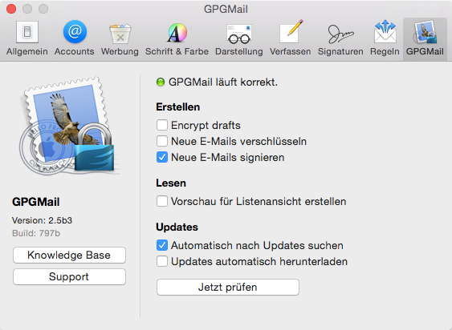
Abbildung 32: Konfiguration von GPGMail
enthält auch die Kommandozeilentools. Diese Komponente ist
immer erforderlich.
Die
GPG Keychain
ist die Schlüsselbund-Verwaltung. Sie erlaubt das Erzeugen,
Signieren, Importieren und Exportieren von Schlüsseln. Diese
Komponente kann man zur Schlüssel-Verwaltung verwenden,
gleichgültig ob man Thunderbird
oder Apple Mail als
Mail-Client nutzt.
Mit den GPG Services
werden andere Mac-Programme um PGP-Fähigkeiten erweitert, sodass
sie Dateien chiffrieren und dechiffrieren, signieren und
verifizieren oder auch Schlüssel importieren und exportieren
können. So kann man damit beispielsweise eine Datei oder einen
Ordner direkt aus dem Kontext-Menü des Finders verschlüsseln. Für
das Verschlüsseln und Signieren von Mails ist diese Komponente
nicht erforderlich.
GPGMail
ist das Plugin für Apple Mail.
Diese Komponente erweitert das Mail-Programm um die Fähigkeit,
Mails zu verschlüsseln und zu entschlüsseln und sie zu signieren
und zu verifizieren. GPGMail
unterstützt sowohl S/MIME (siehe Kap. 5.3) als auch PGP.
Die
Installation, Konfiguration und Nutzung ist sehr einfach. Den größten
Aufwand hat man (genau so wie bei Thunderbird/Enigmail
und jeder anderen Programm-Kombination) mit der Verwaltung der
Schlüssel. Nach der Installation der GPG Suite
findet man in den Einstellungen von Apple Mail
einen sehr einfachen Konfigurationsdialog für GPGMail
(siehe Abb. 29).
Beim
Verfassen von Mails ist PGP/MIME voreingestellt. Um von dieser
sinnvollen Einstellung abzuweichen und Inline-PGP zu verwenden, muss
man auf die Kommandozeile ausweichen. Wie man dies bewerkstelligt,
findet sich in der Online-Dokumentation.
Mit
der Befehlszeile
defaults
write org.gpgtools.gpgmail UseOpenPGPInlineToSend -bool YES
lässt
sich die Verwendung des klassischen Inline-PGP für den Mailversand
einschalten. Ersetzt man „YES“ durch „NO“, wird Inline-PGP
wieder abgestellt und PGP/MIME verwendet.
Im Fenster
für das Verfassen einer Mail lässt sich vor dem Absenden abweichend
von den konfigurierten Voreinstellungen festlegen, ob die Mail
signiert und/oder verschlüsselt werden soll.
Links:
Meine Bewertung: Apple Mail in
Verbindung mit der GPG Suite stellt – allerdings nur für den Mac
User – eine vollwertige Alternative zu Thunderbird mit Enigmail
Plugin dar. PGP/MIME wird unterstützt. Die Konfiguration ist etwas
einfacher als bei Thunderbird,
Thunderbird bietet
allerdings mehr Einstellungsmöglichkeiten. Spezielle
Konfigurationseinstellungen (die man in vielen Fällen jedoch nicht
unbedingt benötigt) wie z.B. die Verwendung von Inline-PGP, sind nur
über die Kommandozeile zugänglich. Die umfangreiche, übersichtliche
Online-Dokumentation (Knowledge Base) lässt den Nutzer hier nicht im
Stich. In FAQs und Tutorials findet
man zu fast allen Fragen rund um die GPG Suite
eine Antwort.
8.4.2 Claws Mail + Gpg4win
unter Windows
Claws Mail
ist ein ausgereiftes, gut zu bedienendes Mail-Programm. Es ist ein
Teil des Gpg4win-Programmpakets,
das sich sehr einfach auf jedem Windows-PC installieren lässt. Die
Installation beginnt mit der Installation der gewünschten
Komponenten.
Gpg4win
ist eine Tool-Sammlung, die aus sechs Komponenten besteht:
GnuPG
ist der Kern von Gpg4win.
GnuPG enthält auch
die Kommandozeilentools. Diese Komponente ist immer erforderlich.
Kleopatra
ist die Schlüsselbund-Verwaltung. Sie erlaubt das Erzeugen,
Signieren, Importieren und Exportieren von Schlüsseln. Diese
Komponente kann man zur Schlüssel-Verwaltung verwenden,
gleichgültig ob man Thunderbird,
Claws Mail oder
Outlook als Mail-Client nutzt.
Der
GNU Privacy Assistent (GPA)
ist eine Schlüsselverwaltung, die alternativ zu Kleopatra
eingesetzt werden kann. Kleopatra
ist komfortabler und deshalb in der Regel vorzuziehen, sodass diese
Komponente nicht erforderlich ist.
Mit
der GPG
Explorer eXtension (GpgEX)
wird der Windows-Explorer um PGP-Fähigkeiten erweitert, sodass
dieser Dateien chiffrieren und dechiffrieren, signieren und
verifizieren oder auch Schlüssel importieren und exportieren kann.
Beispielsweise kann man damit eine Datei oder einen Ordner direkt
aus dem Kontext-Menü des Windows-Explorers verschlüsseln. Für das
Verschlüsseln und Signieren von Mails ist diese Komponente nicht
erforderlich.
GnuPG for Outlook (GpgOL)
ist die PGP-Erweiterung für Outlook
2003 und 2007. Diese
Komponente erweitert das Mail-Programm um die Fähigkeit, Mails zu
verschlüsseln und zu entschlüsseln und sie zu signieren und zu
verifizieren. GPGMail
unterstützt sowohl S/MIME (siehe Kap. 5.3) als auch PGP.
Claws Mail
ist ein vollwertiges Email-Programm mit sehr guter
PGP-Unterstützung. Dieses kann neben Outlook
oder Thunderbird
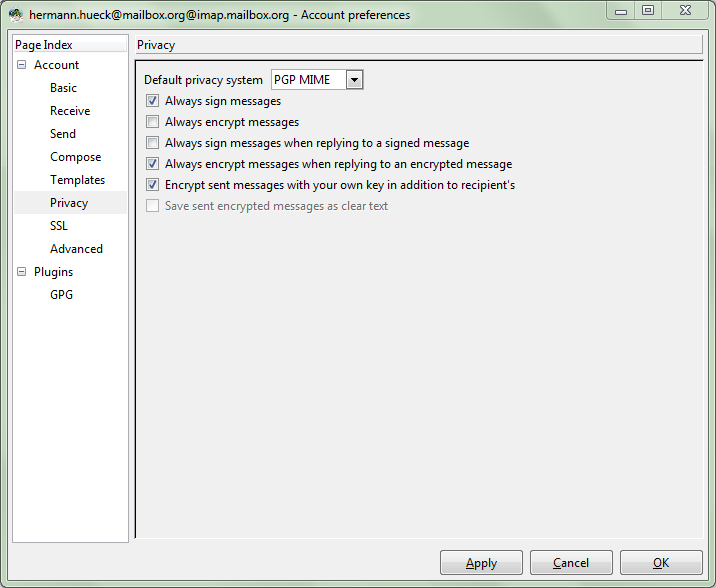
Abbildung 33: Konfiguration von Claws Mail
eingesetzt werden oder sogar an deren Stelle treten.
Für
die Nutzung von Claws Mail
benötigen wir mindestens die Komponenten GnuPG,
Kleopatra und Claws
Mail. Die Installation,
Konfiguration und Nutzung ist sehr einfach. Den größten Aufwand hat
man (genau so wie bei Thunderbird/Enigmail
und jeder anderen Programm-Kombination) mit der Verwaltung der
Schlüssel. In den Einstellungen von Claws findet
man unter Privacy die
einfache Konfiguration für die Verschlüsselung und Signierung der
Mails (siehe Abb. 30). Im Fenster für das Verfassen einer Mail kann
man vor dem Absenden abweichend von den konfigurierten
Voreinstellungen festlegen, ob die Mail signiert und oder
verschlüsselt und ob das Format PGP/MIME verwendet werden soll.
Claws
Mail
steht übrigens auch für Linux zur Verfügung. Es ist über die
Paketverwaltung der Linux-Distribution zu installieren.
Links:
Website
und Download von Gpg4win:
http://www.gpg4win.de/
Dokumentation
für Gpg4win:
http://www.gpg4win.de/documentation-de.html
Eine
sehr verständliche und reichlich mit Screenshots bebilderte
Anleitung zur Installation, Konfiguration und Nutzung findet sich
unter
https://www.verbraucher-sicher-online.de/anleitung/e-mail-verschluesselung-mit-gnupg-und-claws-mail-unter-windows
Meine
Bewertung: Claws
Mail in Verbindung mit der
Gpg4win stellt –
allerdings nur für den Windows User – eine vollwertige Alternative
zu Thunderbird mit
Enigmail Plugin dar.
PGP/MIME wird unterstützt. Die Konfiguration ist etwas einfacher als
bei Thunderbird,
Thunderbird bietet
allerdings mehr Einstellungsmöglichkeiten. Die umfangreiche,
übersichtliche Online-Dokumentation ist eine gute Einführung in die
Welt der Verschlüsselung.
8.4.3 Microsoft Outlook
Outlook
mit PGP-Signierung und -Verschlüsselung – damit habe ich selbst
noch keine Erfahrung gesammelt. Allerdings habe ich ein wenig darüber
recherchiert. Hier die Ergebnisse meiner Recherchen und einige Links
für den Outlook-User,
der sich für PGP-Verschlüsselung interessiert.
Outlook
und PGP, das war schon immer problematisch und ist es auch heute
noch. Microsoft hat sich um die PGP-Unterstützung leider niemals
richtig gekümmert.
Meinen
Recherchen zu Folge sehe ich aktuell zwei mögliche Lösungen:
8.4.3.1 Outlook 2003/2007
+ Gpg4win
Gpg4win
enthält auch die Komponente GpgOL
(GnuPG for Outlook)
(siehe Kap. 8.4.2). Diese Komponente muss bei der Installation
zusätzlich ausgewählt werden. Sie erlaubt die
Verschlüsselung/Entschlüsselung sowie die
Signierung/Signaturverifikation der Mails innerhalb von Outlook
mit PGP.
Weitere
Informationen zur Installation, Konfiguration und Nutzung finden sich
in der umfangreichen Dokumentation zu Gpg4win
unter http://www.gpg4win.de/documentation-de.html
.
Diese
Lösung hat zwei gravierende Nachteile:
Meine
Bewertung:
Wegen der genannten Nachteile kommt diese Variante nicht in Frage.
Ich würde auf dem Windows-PC Outlook
2003/2007
durch eine andere Lösung (Thunderbird/Enigmail
oder
Claws Mail)
ersetzen. Auch eine Parallelinstallation zweier Mail-Clients ist ein
möglicher Weg. In diesem Fall ist Outlook
nur für die unsignierten und unverschlüsselten Mails zuständig.
Die signierten und/oder verschlüsselten Mails bearbeitet man mit dem
anderen Mail-Client.
8.4.3.2 Outlook
2010/2013
+ Gpg4win
+ OutlookPrivacyPlugin
2.0
Da
auch Microsoft immer mehr zum Cloud-Anbieter wird, sind die neueren
Outlook-Versionen nicht mehr ohne Microsoft-Account zu nutzen. Selbst
für den Test von Outlook
2013
muss man sich zunächst bei Microsoft registrieren.
Wer
diesen Lösungsweg gehen will (z.B. weil er Outlook
schon in einer dieser neueren Versionen verwendet), kann zusätzlich
das aus Gpg4win
die Komponenten GnuPG
und Kleopatra
installieren. Und er benötigt außerdem das OutlookPrivacyPlugin
in der Version 2.0 (Download-Link s.u.). Das OutlookPrivacyPlugin
ist (ähnlich wie Enigmail
für Thunderbird)
das Bindeglied zwischen Outlook
und GnuPG.
Es stellt die Funktionen zur Ver- und Entschlüsselung und zur
Signierung und Signatur-Verifikation innerhalb von Outlook
zur Verfügung.
Doch
auch diese Lösung ist leider noch nicht ganz rund: Im
PGP/MIME-Format verschlüsselte und/oder signierte Mails kann das
Plugin in der im Dezember 2014 aktuellen Version (Version 1, Beta 38)
entschlüsseln und verifizieren. Der Mail-Versand im PGP/MIME-Format
wird in dieser Version noch nicht unterstützt.
Links:
Meine
Bewertung:
Sobald das OutlookPrivacyPlugin
auch die Unterstützung für PGP/MIME beim Mail-Versand bietet und
stabil ist, kann dies eine vollwertige PGP-Lösung sein. Zum
Zeitpunkt meiner Recherchen im Dezember 2014 war es das
offensichtlich noch nicht. Zum Versenden verschlüsselter Mails muss
evtl. in einen zweiten, zusätzlich installierten Mail-Client
(Thunderbird/Enigmail
oder
Claws Mail)
wechseln. Sobald die volle PGP/MIME-Unterstützung verfügbar und in
Outlook
praktikabel nutzbar ist, kann man den alternativen Mail-Client wieder
deinstallieren.
8.4.4 Mailpile für alle
PC-Betriebssysteme
Mailpile
ist ein völlig neu entwickelter Mail-Client, der unter
https://www.mailpile.is/
zu finden ist.
Im
Gegensatz zu den bisher vorgestellten Lösungen wird die
PGP-Funktionalität nicht durch eine Programmerweiterung zum
Mail-Client hinzugefügt. Dieses Programm wurde schon beim Entwurf
auf Sicherheit und die Verwendung von PGP ausgelegt. PGP ist also ein
integraler Bestandteil des Mail-Clients.
Nach
Download, Installation und erstem Programmstart muss man zuerst das
eigene Schlüsselpaar (bestehend aus Private Key und Public Key)
importieren oder ein neues erzeugen. Die Passphrase zum Zugriff auf
den privaten Schlüssel ist gleichzeitig das Login-Passwort zum
Zugriff auf den eigenen Mail-Bestand. Als erstes muss man natürlich
den IMAP- und SMTP-Zugang zum eigenen Mail-Konto einrichten.
Die
Besonderheit von Mailpile
ist, dass dieses Programm ein Web-GUI (siehe Glossar, Kap. 15) hat.
D.h. die gesamte Bedienung des Programms findet in einem
Browserfenster statt. Startet man Mailpile,
so öffnet sich automatisch ein neues Browserfenster, in dem man sich
zuerst mit der Passphrase des privaten Schlüssels einloggen muss.
Mailpile
ist für alle PC-Betriebssysteme verfügbar, befindet sich allerdings
(im Dezember 2014) noch im Beta-Status. Jedoch bietet das Programm
längst noch nicht die Funktionsvielfalt, die mit
Thunderbird/Enigmail
zur Verfügung steht. PGP/MIME wird jedoch schon unterstützt.
Meine
Bewertung: Mailpile
ist ein vielversprechender, neuer Ansatz, der sich im Beta-Status
befindet und deshalb noch nicht als Alternative zu anderen
vollwertigen, alltagstauglichen Mail-Clients einsatzbar ist. Mailpile
sollte man aber im Auge behalten. Ist diese Lösung einmal
ausgereift, so könnte die Mail-Verschlüsselung mit PGP für den
Benutzer um einiges einfacher werden als mit Thunderbird/Enigmail,
sodass es die Zugangshürden gerade für den technisch weniger
versierten Benutzer ein ganzes Stück tiefer hängen. Dadurch, dass
das Programm ein Web-GUI hat, lässt es sich relativ leicht
plattform-übergreifend (d.h. für alle Betriebssysteme)
bereitstellen.
8.4.5 Whiteout Mail + Chrome
für alle PC-Betriebssysteme
Ein
anderer, ebenfalls sehr vielversprechender Mail-Client ist Whiteout
Mail. Whiteout Mail
ist eine Chrome-App. D.h. die App setzt einen installierten
Chrome-Browser als Laufzeitumgebung voraus und die App wird aus dem
Chrome Web Store installiert. Bei dieser App stand Email-Sicherheit
und Verschlüsselung von vorn herein im Zentrum der Konzeption und
der Entwicklung.
Die
Website von Whiteout Mail ist zu finden unter: https://whiteout.io/
.
Im
Chrome Web Store (https://chrome.google.com/webstore/)
gibt man den Suchbegriff „Whiteout Mail“ ein und findet die App
dann unter folgender URL:
https://chrome.google.com/webstore/search/whiteout%20mail?_category=apps
. Dort kann man die Chrome-App einfach hinzufügen und über den
Chrome App Launcher starten.
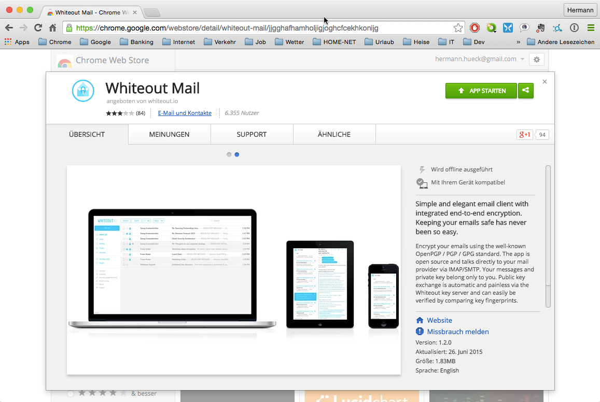
Abbildung 34: Whiteout Mail im Chrome Web Store
Ähnlich
wie Mailpile läuft
auch diese Anwendung im Browser, d.h. sie präsentiert sich in einem
Browserfenster. Ein paar technische Unterschiede gibt es aber doch:
Whiteout Mail
läuft nur im Chrome-Browser. Das Web-GUI von Mailpile
funktioniert auch mit jedem anderen (modernen) Browser.
Whiteout Mail
läuft komplett
im Chrome-Browser, d.h. der Chrome-Browser ist die Laufzeitumgebung
der App. Bei Mailpile
läuft nur die Benutzeroberfläche in einem Browser; es gibt aber
noch einen unsichtbaren betriebssystem-spezifischen Programmteil,
der unabhängig vom Browser ist. Die Laufzeitumgebung von Mailpile
ist deshalb das PC-Betriebssystem, also Windows, Mac OS X oder
Linux.
Da
Whiteout Mail auf
jedem System läuft, auf dem ein Chrome-Browser installiert ist, ist
es noch unabhängiger als Mailpile
von der Betriebssystemplattform.
Während
Mailpile in der Regel
in einem Browser-Tab läuft, präsentiert sich Whiteout
Mail – wie eine eigenständige
Anwendung – immer in einem eigenen (Browser-)Fenster. Allerdings
sind die URL-Zeile und alle anderen browser-typischen Bedienelemente
ausgeblendet, sodass Whiteout Mail
dem äußeren Anschein nach sich nicht von einer normalen
Applikation unterscheidet. Dass es sich dabei in Wirklichkeit um
eine Browser-basierte Anwendung handelt, ist am Erscheinungsbild der
Anwendung nicht zu erkennen.
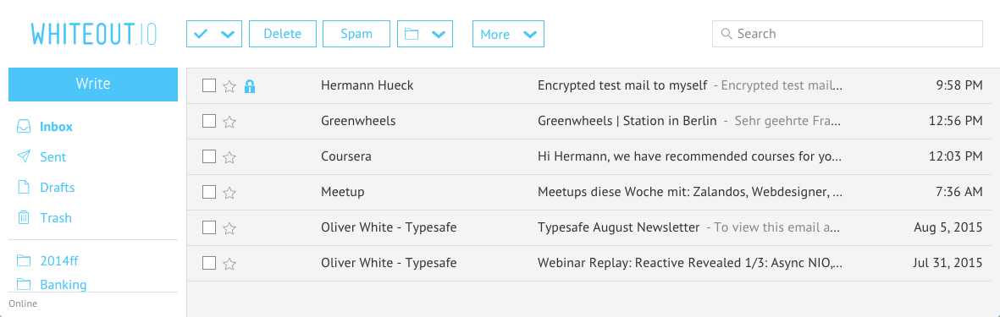
Abbildung 35: Whiteout Mail: Die Mails in der INBOX (im breiten
Fester dargestellt)
Wie
bei Mailpile dient die
Passphrase für den privaten Schlüssel auch bei Whiteout
Mail zum Zugriff auf den
Mail-Bestand und alle Programmfunktionen. Auch hier muss man nach dem
ersten Start der App ein neues Schlüsselpaar erzeugen oder (wenn
vorhanden) das eigene Schlüsselpaar importieren.
Wie
Mailpile ist auch
Whiteout Mail für
alle PC-Betriebssysteme verfügbar. Die App bietet (noch?) nicht die
Funktionsvielfalt, die mit Thunderbird/Enigmail
zur Verfügung steht. Beispielsweise wird die Hierarchie der
Mail-Ordner in einer flachen Ordner-Liste dargestellt, sodass die
verschachtelte Ordnerstruktur in der Ansicht verloren geht. Die App
ist sehr einfach strukturiert und intuitiv zu bedienen. Außerdem
gibt es fast keine Einstellungen, sodass der Benutzer nicht zuerst
ein Konfigurationsexperte werden muss, bevor er verschlüsselte und
signierte Mails nutzen kann. Da die App von Beginn an für Sicherheit
und PGP-Verschlüsselung konzipiert ist, wird das Format PGP/MIME
unterstützt. Die Unterstützung für das veraltete Inline-PGP fehlt
ganz.
Außerdem
gibt es auch eine Android-App (siehe Kap. 11.1.4) und eine iOS-App,
die praktisch genau so aussehen und sich genau so bedienen lassen wie
die Chrome-App auf dem PC. Weitere Apps für Windows Phone und für
Firefox OS sind in Planung oder in der Entwicklung. Damit soll eine
konsistente Benutzererfahrung über alle Geräteklassen erreicht
werden. Der Benutzer muss sich also nicht umstellen, wenn er das
Gerät wechselt.
D
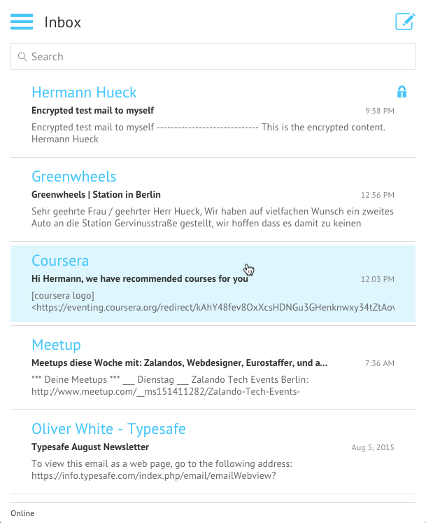
Abbildung 36: Whiteout Mail: Die Mails in der INBOX (Im schmalen
Fester dargestellt sieht die Mail-Liste aus wie auf dem Smartphone.)
er Schlüsselbund lässt sich zwischen verschiedenen Geräten
über die Cloud automatisch synchronisieren, sodass das Exportieren
der Schlüssel auf dem Gerät A und das Importieren auf dem Gerät B
entfällt. Damit werden die Änderungen des Schlüsselbundes auf
einem Gerät automatisch auf die anderen eigenen Geräte übertragen.
Die Synchronisation selbst ist verschlüsselt, sodass der eigene
private Schlüssel bei der Synchronisation nicht kompromittiert wird.
Dieses Konzept ist ein großer Fortschritt für die
Benutzerfreundlichkeit von Whiteout Mail.
M
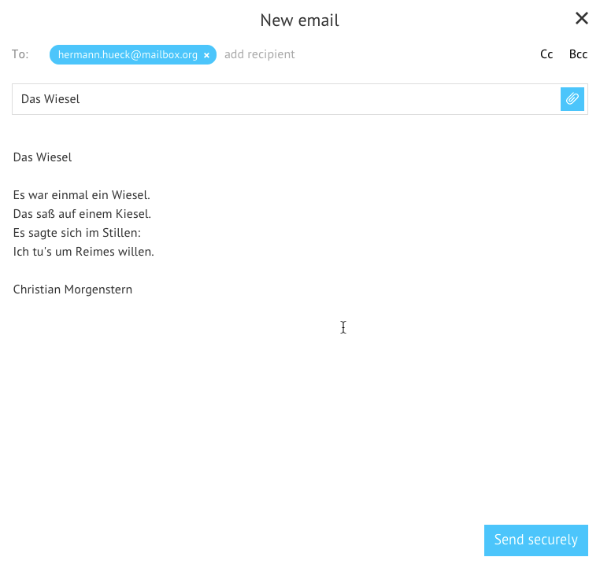
Abbildung 37: Whiteout Mail: Eine verschlüsselte und signierte
Mail verfassen
eine Bewertung: Whiteout Mail ist ein
vielversprechender, neuer Ansatz, der als vollwertiger,
alltagstauglicher Mail-Client einsatzbar ist. Die App bietet einen
sehr einfachen Zugang zur Mail-Verschlüsselung mit PGP - viel
einfacher als bei Thunderbird/Enigmail, sodass die
Zugangshürden gerade für den technisch weniger versierten Benutzer
ein ganzes Stück tiefer hängen. Dadurch, dass das Programm mit
Web-Technologien (HTML 5, CSS, JavaScript) erstellt wurde, lässt es
sich leicht plattform-übergreifend (für alle PC-und
Mobil-Betriebssysteme) bereitstellen. Besonders interessant ist die
Idee, ein konsistentes Bedienkonzept über alle Geräteklassen hinweg
(auch Smartphones und Tablet mit Android und iOS) bereitzustellen.
Auch die Idee der automatischen Synchronisation des Schlüsselbundes
über die Cloud ist wegweisend; dies nimmt dem Benutzer die lästige
Arbeit ab, seine Schlüssel auf einem Gerät zu exportieren, auf ein
anderes zu übertragen und dort wieder zu importieren. Beide Daumen
hoch für Whiteout Mail.
Wer
ohne die Feature-Vielfalt von Thunderbird
auf dem PC oder von MailDroid
auf dem Android-Gerät auskommt, wird das einfache, klare
Bedienkonzept von Whiteout Mail
schätzen. Diese App gibt dem Benutzer, der sich nicht in die Details
von PGP vertiefen will, einen einfachen Zugang zu verschlüsselter
und signierter Mail.
8.5 Risiken bei der Verwendung von Schlüsselservern
Das
System der weltweit verteilten Schlüsselserver dient der Verteilung
von öffentlichen PGP-Schlüsseln. Da die Schlüsselserver ihre
Datenbestände wechselseitig miteinander abgleichen, muss ich meinen
öffentlichen Schlüssel nur auf einen der Key-Server hochladen. Ich
kann davon ausgehen, dass sich mein Schlüssel innerhalb von ca. 24
Stunden auf alle Key-Server dieser Welt verbreitet hat. Deshalb nennt
man sie auch Synchronizing
Key Server oder SKS.
D
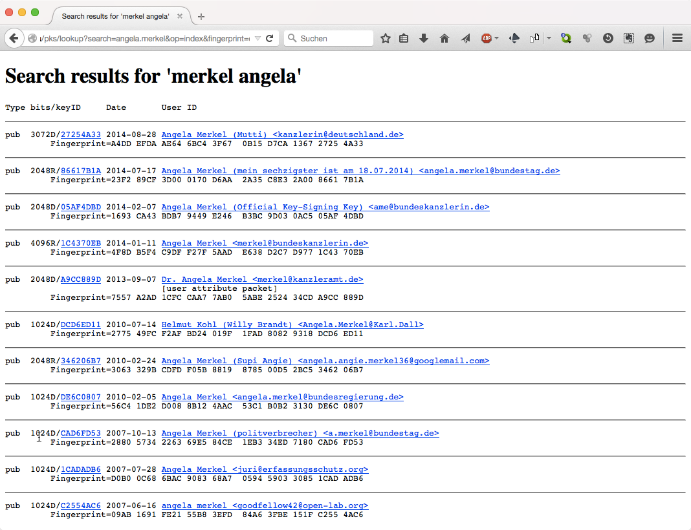
Abbildung 38: Suche nach Angela Merkels öffentlichen Schlüsseln
im Browser
ieses System stammt aus den 90er Jahren und ist
wohl nur für wohlmeinende Anwender konzipiert. Vor Missbrauch ist es
nicht geschützt. Das System der SKS hat folgende Mängel:
Jeder
kann einen öffentlichen Schlüssel hochladen. Der Betreffende muss
sich dazu nicht einmal anmelden.
Die
inhaltliche Korrektheit der hochgeladenen Schlüssel wird in keiner
Weise geprüft.
Es
gibt kein Verfahren, Schlüssel auch nachträglich auf Korrektheit
zu überprüfen und gegebenenfalls wieder vom System zu löschen.
Diese
gravierenden Mängel haben zur Folge, dass sich viel Schlüsselmüll
(nicht mehr benutzte Schlüssel, Testschlüssel, abgelaufene
Schlüssel, widerrufene Schlüssel oder falsche Schlüssel) auf den
Key-Servern angesammelt hat. Da ein hochgeladener Schlüssel niemals
mehr aus dem System gelöscht werden kann, wird der Schlüsselmüllberg
immer größer und es wird damit immer schwieriger, die Spreu vom
Weizen zu trennen.
Mit
ein wenig technischem Wissen kann jeder ein Schlüsselpaar für die
Email-Adresse angela.merkel@bundesregierung.de
erstellen und den öffentlichen Schlüssel auf einen Key-Server
hochladen. Dazu muss er nicht im Besitz dieser Email-Adresse sein, ja
die Email-Adresse muss nicht einmal existieren. Auch können mehrere
Schlüssel zur selben Email-Adresse hochgeladen werden.
Möglicherweise gehört nur einer davon dem wirklichen Inhaber der
Mail-Adresse, der Rest ist Müll oder es sind Betrugsversuche.
Die
Suche nach „Angela Merkel“ auf einem Schlüsselserver mit der
Such-URL
http://pgp.mit.edu/pks/lookup?search=Angela+Merkel&op=index&fingerprint=on
lieferte mir im Februar 2015 das Ergebnis in Abbildung 38. Dies
kann jeder mit dem Aufruf der Such-URL selbst ausprobieren.
D
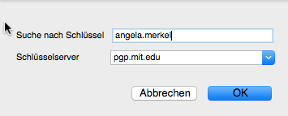
Abbildung 39: Enigmail: Suche nach Angela Merkels öffentlichen
Schlüsseln
ieselbe Suche kann man auch in der
Enigmail-Schlüsselverwaltung ausführen (Abb. 39 und 40).
Wer lädt
falsche Schlüssel hoch? Da kommen Unbedarfte, Spaßvögel und
Betrüger in Frage. Auch die Geheimdienste könnten ein Interesse
daran haben, wenn sie jemanden gezielt angreifen wollen.
Worin
besteht die Gefahr? Stellen wir uns vor, Alice lädt einen
gefälschten Schlüssel für Bob's Email-Adresse herunter und
importiert ihn in ihren Schlüsselbund. Nun versucht sie Bob eine
Mail zu senden und verschlüsselt die Mail mit dem falschen
Schlüssel. Wenn die Email-Adresse korrekt ist, dann kommt die Mail
auch bei Bob an, Bob kann sie jedoch nicht entschlüsseln, da er den
privaten Schlüssel dazu nicht besitzt. Den passenden privaten
Schlüssel hat der Spaßvogel oder Betrüger, der den falschen
Schlüssel erstellt hat.
G
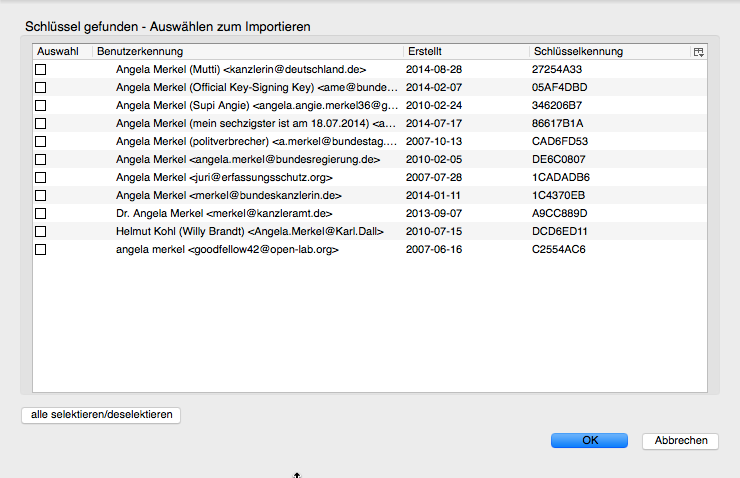
Abbildung 40: Enigmail: Suchergebnisse für Angela Merkels
öffentliche Schlüssel
elingt es dem Angreifer auch noch, die verschlüsselte Mail
abzufangen, so könnte er sie entschlüsseln, manipulieren und mit
Bob's korrekten öffentlichen Schlüssel wieder verschlüsseln und an
Bob senden. Der Betrüger hätte sich damit erfolgreich – als Man
in the Middle – in die Kommunikation von Alice zu Bob eingeklinkt.
Schafft es außerdem, sich in die Kommunikation von Bob zu Alice
einzuklinken, so kann er die Kommunikation zwischen den beiden
komplett mitlesen und beliebig manipulieren, ohne dass die beiden es
merken.
Wie
kann man sich vor Missbrauch schützen? Ein Schlüssel ist immer an
seinem 40-stelligen Fingerabdruck eindeutig erkennbar. Dieser ist vor
oder nach dem Import in den Schlüsselbund genau zu prüfen (siehe
Kap. 7.1.9.1) und mit dem vom Kommunikations-partner genannten
Fingerabdruck zu vergleichen!
Der
Import eines falschen Schlüssels richtet noch keinen Schaden an.
Erst die Beglaubigung und die Nutzung des falschen Schlüssels zur
Verschlüsselung der Mails oder zur Verifikation der Signatur
empfangener Mails ist gefährlich. Ein fälschlicherweise
importierter Schlüssel lässt sich ohne Weiteres wieder aus dem
Schlüsselbund löschen.
Hier noch
einige Links zu PGP und besonders zum Problem mit der
Schlüsselverwaltung:
8.6 Das verschlüsselte Postfach von mailbox.org
Das
hier beschriebene Feature ist eine Besonderheit der Provider Posteo
und mailbox.org.
Ob dies auch von anderen Providern angeboten wird, ist mir nicht
bekannt. Ich habe bislang von keinem anderen Anbieter gehört, dass
er dieses Feature anbietet. Ich beschreibe hier meine Versuche bei
meinem Provider mailbox.org.
Bei
mailbox.org
kann man die Mails, die der Absender nicht verschlüsselt hat, sofort
nach dem Eintreffen beim Provider verschlüsseln und verschlüsselt
im Posteingang ablegen lassen. Ist die eingegangene Mail erst
verschlüsselt gespeichert, kann auch das Team von mailbox.org
oder ein Hacker, der in den Server von mailbox.org
einbricht, die Mail nicht mehr entschlüsseln und lesen. Da nur der
Empfänger der Mail den passenden privaten Schlüssel hat, kann nur
er sie entschlüsseln und lesen.
Damit das klappt, muss man in den
Einstellungen seines Accounts bei mailbox.org
die Option „PGP-Verschlüsselung für eingehende Mails
aktivieren“ und seinen
öffentlichen Schlüssel in das darunter liegende Eingabefeld
kopieren. Der Provider verschlüsselt damit alle eingehenden Mails,
die der Absender nicht bereits verschlüsselt hat.
Er
verwendet dabei das Format PGP/MIME. Thunderbird
kann diese Mails mit dem privaten Schlüssel dechiffrieren und lesbar
machen.
Nutzt
man das verschlüsselte Postfach mit dem normalen öffentlichen
Schlüssel, kann man nicht mehr feststellen, wer die Mail
verschlüsselt hat, der Absender der Mail oder der Provider
mailbox.org. Möglich
wird die Unterscheidung erst dann, wenn man ein zweites Schlüsselpaar
erzeugt und dabei das Feld für die Email-Adresse leer lässt (siehe
Kap. 7.1.2). Den zweiten öffentlichen Schlüssel lädt man zu
mailbox.org hoch und
verwendet ihn ausschließlich für das verschlüsselte Postfach. Man
exportiert diesen zweiten Schlüssel nicht auf einen Key-Server,
da er nicht für die Kommunikationspartner vorgesehen ist.
Nun
kann der Provider mailbox.org
mit meinem zweiten öffentlichen Schlüssel die Mails verschlüsseln.
Die Kommunikationspartner, die mir verschlüsselte Mails senden,
verwenden meinen ersten öffentlichen Schlüssel, der weltweit auf
den Key-Servern verfügbar ist. Durch die Verwendung
unterschiedlicher Schlüssel kann ich bei einer eingehenden Mail
unterscheiden, ob sie vom Absender oder von meinem Provider
verschlüsselt wurde.
Eines
darf man dabei nicht vergessen: Nutzt man das verschlüsselte
Postfach, dann sind alle eingehenden Mails verschlüsselt. Sie sind
damit über Webmail nicht mehr lesbar, da der Browser sie nicht
entschlüsseln kann.
Das muss kein Nachteil sein, wenn man ohnehin auf den Webmail-Zugriff
verzichten will.
(Beschreibung
unter https://mailbox.org/ihr-e-mail-postfach/#Datenschutz
)
8.7 Zusammenfassung
In
diesem Kapitel ging es um all die Themen rund um PGP, die nicht
direkt die Nutzung von PGP mit Thunderbird
und Enigmail
betreffen.
Ich
habe erläutert, warum Mail-Verschlüsselung mit dem Webmail-Zugriff
im Browser nicht verträglich ist. Den Schlüssel beim Mail-Provider
zu hinterlegen verbietet sich und der Browser hat auch keinen Zugriff
auf die Schlüssel im Schlüsselbund.
Webmail
kann sehr praktisch sein, wenn man nicht am heimischen Rechner sitzt.
Eine Browser-Erweiterung wie Mailvelope
ist jedoch keine praktikable Lösung für den verschlüsselten
Mail-zugriff unterwegs. Will oder muss man der Verschlüsselung wegen
auf Webmail verzichten, so bietet sich grundsätzlich zwei
Alternativen.
Mit
Thunderbird
portable kann
man die Thunderbird-Installation,
die Thunderbird-Konfiguration,
den Schlüsselbund und auch die lokal gecachte Mail auf dem USB-Stick
mit sich führen und an jedem Windows-Rechner betreiben. Sehr
praktisch und laien-tauglich ist diese Lösung allerdings nicht. Die
bessere Alternative ist, ein mobiles Gerät (Smartphone oder Tablet)
für den Mail-Zugriff mit PGP einzurichten (Kap. 9 und 10).
Danach
habe ich gezeigt, mit welchen anderen Mail-Clients man alternativ zum
Tandem Thunderbird/Enigmail
signierte und verschlüsselte Mails senden und empfangen kann:
Apple
Mail und die GPG
Suite
bieten sich als praktikable Alternative auf dem Mac an.
Das
Softwarepaket Gpg4win
bietet eine komplette Lösung an. Es enthält den Mail-Client Claws
Mail
und die Schlüsselverwaltung Kleopatra.
Mit
Gpg4win
kann man auch Outlook
2003 und 2007 das Verschlüsseln beibringen. Da ist wiederum
Kleopatra
zur Schlüsselverwaltung und das ebenfalls enthaltene Outlook-Plugin
GpgOL
zu installieren. Man erhält dabei allerdings keine Unterstützung
für PGP/MIME.
Verwendet
man Outlook 2010 oder 2013, benötigt für die Schlüsselverwaltung
wieder Kleopatra
aus dem Paket Gpg4win
und dazu das OutlookPrivacyPlugin.
Auch hier gibt es (im Februar 2015) noch keine vollständige
Unterstützung für PGP/MIME.
Eine
weitere Alternative ist Mailpile.
Dieser neue Mail-Client ist noch im Beta-Status und deshalb noch
nicht für den täglichen Einsatz geeignet. Das besonder Merkmal von
Mailpile
ist seine Web-Oberfläche; d.h. die Anwendung präsentiert sich in
einem Browser-Fenster.
Der
neu entwickelte Mail-Client Whiteout
Mail
ist als Chrome-App entwickelt, setzt also einen installierten
Chrome-Browser voraus. Die App startet jedoch in einem eigenen
Browserfenster, das seiner URL-Zeile und weiterer Browser-typischer
Buttons wie den zum aktualisieren beraubt wurde. Auf Anhieb fällt
es gar nicht auf, dass es eine Browser-App ist. Whiteout
Mail
Apps existieren ebenfalls für Android und iOS. Diese präsentieren
sich auf dem Smartphone und auf dem Tablet genau so wie auf dem PC.
Durch die Verfügbarkeit auf allen wichtigen Plattformen und das
einheitliche Ausehen auf all diesen Plattformen kann Whiteout
Mail
in Zukunft eine interessante Alternative werden. Ein weiteres
interessantes Konzept ist die automatische Synchronisation des
Schlüsselbundes über die Cloud. Wenn dieses Feature stabil ist,
erspart es dem Benutzer die manuelle Übertragung der Schlüssel
zwischen seinen verschiedenen Geräten.
Wir
haben uns außerdem das Dilemma mit den Key-Servern angesehen. Das
Grundproblem dabei ist, dass jeder völlig beliebige Schlüssel auf
die Key-Server hochladen kann. Hier gibt es keinerlei Kontrolle, um
die Echtheit der hochgeladenen Schlüssel zu verifizieren. Deshalb
lagern viele unnütze oder auch gefälschte Schlüssel auf den
Key-Servern. Um bei den Schlüsseln die Spreu vom Weizen zu trennen
ist es wichtig den 40-stelligen Fingerabdruck, der einen Schlüssel
eindeutig kennzeichnet, vor oder nach dem Import in den Schlüsselbund
zu genau prüfen und mit dem vom Kommunikationspartner genannten
Fingerabdruck vergleichen.
Das
letzte Thema dieses Kapitels war das verschlüsselte Postfach von
Posteo
und mailbox.org.
Damit ist es möglich, alle eingehenden Mails direkt nach dem
Eintreffen im Posteingang auf dem Mail-Server des Providers
verschlüsseln zu lassen.
8.8 Links zu diesem Kapitel
9 PGP auf dem Android-Gerät – Schnelleinstieg für Ungeduldige
Dieses
Kapitel liefert die Schritt-für-Schritt-Anleitungen für PGP auf
einem Android-Gerät (Smartphone oder Tablet). Es verzichtet auf
Screenshots, auf ausführliche Erläuterungen und auf die Darstellung
verschiedener Optionen, sondern zeigt nur den von mir favorisierten
Weg. Hier werden die Schritte aufgeführt, die durchzuführen sind,
um PGP mit der Schlüsselverwaltung Crypto Plugin
und der Mail-App MailDroid
auf dem Android-Gerät einzurichten und zu nutzen. Die einzelnen
Schritte haben Verweise ins Kapitel 10, sodass die ausführlichen
Erläuterungen bei Bedarf schnell auffindbar sind. Wer den
ausführlichen Einstieg bevorzugt, springt direkt ins Kapitel 10.
Dieses
Kapitel geht davon aus, dass der Zugriff auf das Mail-Konto auf dem
PC mit IMAP bereits konfiguriert ist. Dabei bleiben die Mails zentral
auf dem Mail-Server des Providers gespeichert. Greift man auf dem PC
mit dem POP-Protokoll auf das Mail-Konto zu, dann werden die Mails
auf den betreffenden PC heruntergeladen und in der Regel auf dem
Server gelöscht. In diesem Fall macht es keinen Sinn, auf einem
anderen Gerät (Rechner, Smartphone oder Tablet) auf dasselbe
Mail-Konto zuzugreifen.
9.1 PGP-Schlüsselverwaltung mit Crypto Plugin auf dem Android-Gerät
Analog zum PC benötigt man auch unter Android eine App zur
Verwaltung des Schlüsselbundes.
Die auf dem PC exportierten Schlüssel
müssen in den Schlüsselbund auf dem Android-Smartphone oder -Tablet
importiert werden. Dazu müssen die Schlüssel mit Hilfe eines
Übertragungsmediums vom PC auf das Android-Gerät gebracht werden.
Welches Übertragungsmedium ist am
besten geeignet? USB-Sticks kann man nicht ohne Weiteres an alle
Android-Geräte anschließen. Speicherkarten funktionieren auch nicht
an allen Android-Geräten, viele Geräte haben keinen
Speicherkarten-Slot.
Ein weiterer Weg zur Übertragung der
Schlüsseldateien ist die Kopplung des Android-Gerätes mit dem PC
über ein USB-Kabel. Dieser Weg funktioniert mit jedem Android-Gerät
und wird hier beschrieben (siehe auch Kap. 10.2.2).
Schlüsselverwaltungs-App Crypto
Plugin aus dem Google Play Store auf dem Android-Gerät
installieren (siehe Kap 10.1.2)
Die
Schlüssel-Server
konfigurieren
(siehe Kap 10.2.1):
In Crypto
Plugin
unter Einstellungen
→ Allgemein → Schlüsselserver
die von der Schlüsselbund-Verwaltung zu verwendenden
Schlüssel-Server konfigurieren:
Schlüsseldateien
auf das Android-Gerät übertragen
(siehe Kap 10.2.2)
Den
USB-Anschluss als Medien-Gerät konfigurieren: Unter
Systemeinstellungen →
Speicher → USB-Verbindung → Verbinden als
ist „Mediengerät
(MTP)“
auszuwählen
Das Android-Gerät an einer weiteren USB-Buchse mit dem PC koppeln.
Unter Windows wird der interne Speicher des Android-Geräts sofort
als virtuelles Laufwerk im Explorer sichtbar. Auf dem Mac ist eine
zusätzliche Software erforderlich, um auf den Speicher des
Android-Gerätes zuzugreifen (s.u.).
Die
Schlüssel aus dem Enigmail-Schlüsselbund
auf dem PC in zwei Dateien (eine mit dem eigenen, privaten
Schlüsselpaar und mit den öffentlichen Schlüsseln der
Kommunikationspartner) exportieren (siehe Kap. 7.1.6)
Windows:
Mit dem Windows-Explorer die beiden Schlüsseldateien in den
Download-Ordner
des Android-Geräts kopieren
Mac
OS X:
Dateiübertragungssoftware
Android-Filetransfer
von http://www.android.com/filetransfer
herunterladen, dann installieren und starten
Mac
OS X:
Mit Android-Filetransfer
die
beiden Schlüsseldateien in den Download-Ordner
des Android-Geräts kopieren. Android-Filetransfer
wieder beenden
Nach der Übertragung
die beiden auf dem PC verbliebenen Schlüsseldateien wieder löschen
Das Android-Gerät vom
PC abkoppeln
Schlüssel
in den Schlüsselbund importieren
(siehe Kap 10.2.3)
Auf
dem Android-Gerät die App Crypto
Plugin
starten
Das
eigene Schlüsselpaar in den Schlüsselbund importieren: Unter
Import
PGP Keys die
Datei mit dem eigenen Schlüsselpaar im Download-Ordner auswählen.
Die Schlüssel aus der Datei werden angezeigt. Jeden zu
importierenden Schlüssel auswählen und mit Tippen auf den Button
„Import“
importieren. In der Detail-Ansicht des Schlüssels erklärt man mit
einen Tippen auf den Button „Trust“
den Schlüssel als vertrauenswürdig.
Die
öffentlichen Schlüssel der Kommunikationspartner in den
Schlüsselbund importieren: Unter Import
PGP Keys
die Datei mit den öffentlichen Schlüsseln der
Kommunikationspartner im Download-Ordner auswählen. Die Schlüssel
aus der Datei werden angezeigt. Jeden zu importierenden Schlüssel
auswählen und mit Tippen auf den Button „Import“
importieren. In der Detail-Ansicht jedes Schlüssels erklärt man
mit einen Tippen auf den Button „Trust“
den Schlüssel als vertrauenswürdig.
Nach
dem erfolgreichen Import die Schlüssel-Dateien
im Download-Ordner
des Android-Geräts löschen.
Dies lässt sich mit einer Dateimanager-App direkt auf dem
Android-Gerät erledigen.
Alternativ kann man auch das
Android-Gerät nochmals mit dem PC koppeln und die Löschung der
Dateien am PC durchführen.
Das Android-Gerät
wieder mit dem USB-Kabel an den PC anschließen
Mit
dem Windows-Explorer oder auf dem Mac mit Android-Filetransfer
die Dateien im Download-Ordner
löschen
Das Gerät vom PC
abkoppeln
Links:
9.2 MailDroid für PGP-Nutzung konfigurieren
Wir haben nun die erforderlichen Schlüssel in den Schlüsselbund
importiert. Nun benötigen wir eine Mail-App, die PGP/MIME
unterstützt. Dies ist auf meinen Geräten die App MailDroid
(alternative Apps Kap. 10.1.1).
Mail-App MailDroid
aus dem Google Play Store installieren
(siehe Kap. 10.1.2)
App MailDroid
starten und die Mail-Konten analog zu den Mail-Konten in Thunderbird
einrichten. (Dies wird hier nicht näher beschrieben, da es keine
PGP-spezifische Konfiguration ist.)
Kryptographie-Einstellungen
vornehmen
(siehe Kap. 10.3):
Verschlüsselungsleiste
beim Erstellen anzeigen: Ja
Signing
Key: Hier
ist der Schlüssel anzugeben, der zum Signieren von Mails verwendet
werden soll.
Crypto
Mode: Als
Verschlüsselungsart ist PGP/MIME
einzustellen.
Links:
9.3 PGP auf dem Android-Gerät nutzen
Wir haben die Schlüssel importiert. Wir haben die geeigneten
Einstellungen in Crypto Plugin und MailDroid
vorgenommen. Nach diesen
Vorbereitungen ist der Versand und Empfang signierter und
verschlüsselter Mails nahezu trivial und weicht kaum von der
Mail-Nutzung ohne PGP ab.
9.3.1 Mailversand
Das
Senden einer Mail funktioniert so wie auch ohne PGP. Vor dem
Versenden der Mail kann man jeweils mit einer Checkbox festlegen, ob
die aktuelle Mail signiert und verschlüsselt werden soll. Mit den
genannten Voreinstellungen ist PGP/MIME als Verschlüsselungsformat
vorausgewählt.
9.3.2 Mailempfang
Wird
eine verschlüsselte Mail mit MailDroid
auf
dem Android-Gerät empfangen, ist sie zunächst noch nicht lesbar.
Die App zeigt über der Mail eine Schaltfläche mit der Aufschrift
„Encrypted.
Click to decode.“
Beim Tippen auf diese Schaltfläche verlangt die App evtl. die
Eingabe der Passphrase. Gibt man diese richtig ein, bekommt die App
den Zugriff auf den privaten Schlüssel und kann damit die Mail
entschlüsseln und den Text lesbar darstellen.
9.3.3 Schlüsselbund-Pflege
Von
Zeit zu Zeit sollte man die öffentlichen Schlüssel im Schlüsselbund
aktualisieren. Die Pflege des Schlüsselbundes ist allerdings nicht
so komfortabel möglich wie in Thunderbird/Enigmail.
So ist es zweckmäßig, die öffentlichen Schlüssel der
Kommunikationspartner im Enigmail-Schlüsselbund
nach der Synchronisation mit dem Schlüssel-Server (siehe Kap. 6.4.3)
zu exportieren und von dort (wie in Kap. 9.1
beschrieben) auf das Android-Gerät zu übertragen und in den
Schlüsselbund zu importieren.
9.4 Zusammenfassung
Die
Zusammenfassung ist am Ende des ausführlichen Kapitels zur
Thunderbird/Enigmail-Konfiguration
zu finden (siehe Kap. 10.5).
9.5 Links zu diesem Kapitel
Die
Link-Sammlung ist am Ende des ausführlichen Kapitels zur
Thunderbird/Enigmail-Konfiguration
zu finden (siehe Kap. 10.6).
10 PGP auf dem Android-Gerät – Ausführlicher Einstieg für
Wissbegierige
Dieses
Kapitel liefert den ausführlichen Einstieg in PGP auf dem
Android-Gerät. Dabei wird ausführlich erläutert, wie PGP mit der
Schlüsselverwaltung Crypto Plugin
und der Mail-App MailDroid
auf dem Android-Gerät eingerichtet und genutzt werden kann. Es
versucht nicht nur die Frage „Wie muss ich vorgehen?“ zu
beantworten, sondern auch „Warum ist das so?“ und „Welche
anderen Optionen gibt es?“. Die gesamte Beschreibung ist einerseits
detailreicher und möchte andererseits das Verständnis für das, was
man tut, unterstützen.
Dieses
Kapitel geht davon aus, dass der Zugriff auf das Mail-Konto auf dem
PC mit IMAP bereits konfiguriert ist. Dabei bleiben die Mails zentral
auf dem Mail-Server des Providers gespeichert. Greift man auf dem PC
mit dem POP-Protokoll auf das Mail-Konto zu, dann werden die Mails
auf den betreffenden PC heruntergeladen und in der Regel auf dem
Server gelöscht. In diesem Fall macht es keinen Sinn, auf einem
anderen Gerät (Rechner, Smartphone oder Tablet) auf dasselbe
Mail-Konto zuzugreifen.
10.1 Apps installieren
Um PGP auch auf dem
Android-Smartphone oder -Tablet für Mail-Empfang und -Versand zu
nutzen, benötigt man auch hier die richtigen Tools (eine Mail-App
und eine App zur Schlüsselbund-Verwaltung). Nach der Installation
der Apps muss man die Schlüssel aus dem Schlüsselbund des PC auf
das Gerät übertragen und in die Schlüsselbund-Verwaltung
importieren.
10.1.1 Die passenden Android-Apps
Im Google Play Store gibt es sehr
viele Mail-Apps. Filtert man diejenigen heraus, die
PGP-Verschlüsselung im PGP/MIME-Format unterstützen, wird die
Auswahl recht übersichtlich. Ich habe vier geeignete Apps bzw.
App-Kombinationen gefunden und auch einem kurzen Test unterzogen:
Die beliebten Mail-Apps der K-9
Familie (K-9 Mail, K-@ Mail und Kaiten Mail)
bieten ebenfalls PGP-Unterstützung. Da sie das moderne Format
PGP/MIME bis (August 2015) noch nicht beherrschen, würde ich aktuell
von der Nutzung der Apps abraten. Die Situation kann sich jedoch in
einigen Monaten ändern. Squeaky Mail gehört ebenfalls zu dieser
Familie
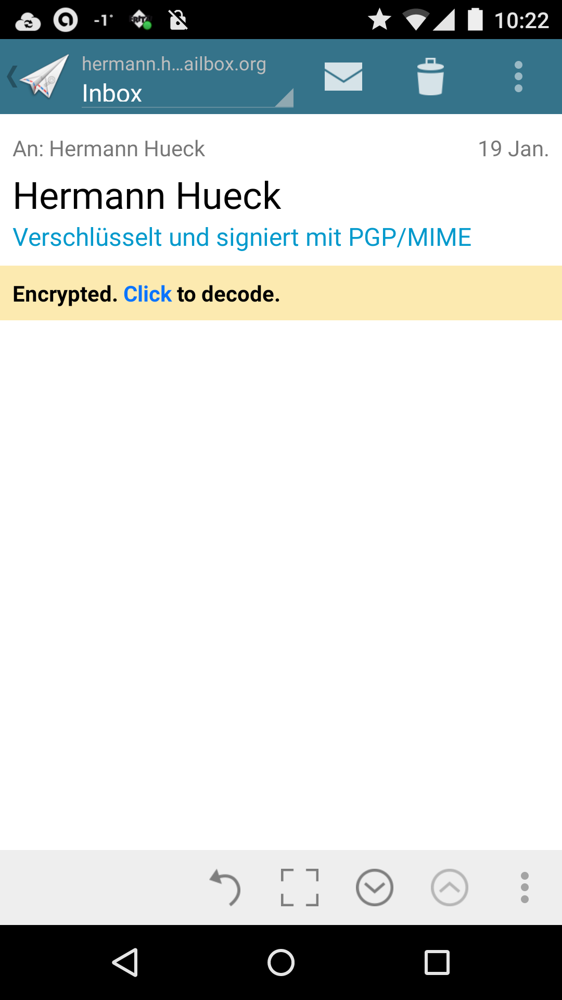
Abbildung 41: Android: MailDroid: Die verschlüsselte Mail ist
noch nicht lesbar.
und unterstützt PGP/MIME bereits. Diese App verhielt sich bei
meinen Experimenten gelegentlich etwas instabil.
Meine Wahl ist auf MailDroid
und das Crypto Plugin gefallen. Auf meinen Android-Geräten
sind diese Apps installiert.
Dieses Tandem hat mir persönlich in Bezug auf Stabilität und
Benutzerkomfort am besten gefallen. Ich nutze MailDroid Pro
und das Crypto Plugin nun seit Monaten ohne Probleme. In der
folgenden Beschreibung beziehe ich mich ausschließlich auf diese
beiden Apps. Die Konfiguration und Benutzung der anderen Mail-Apps
mit PGP/MIME-Unterstützung dürfte davon nur unwesentlich abweichen.
10.1.2 Installation der Apps
Die Apps installiert man wie üblich
aus dem Google Play Store.
Danach richtet man den/die
Account/Accounts in der Mail-App ein. Die Sicherheitseinstellungen
sind analog zu den Thunderbird-Einstellungen (siehe Kap. 3.5.1)
vorzunehmen.
Sendet man jetzt auf dem PC eine
verschlüsselte Mail an sich selbst und versucht sie auf dem
Smartphone oder Tablet im Posteingang der Mail-App zu öffnen, so
kann diese jetzt noch nicht entschlüsselt werden (siehe Abb. 31), da
noch keine Schlüssel importiert wurden.
10.2 Verwaltung des PGP-Schlüsselbundes mit Crypto Plugin
10.2.1 Konfiguration der Schlüsselserver
Im
Crypto Plugin können
unter Settings → OpenPGP Key Servers
die Schlüssel-Server festgelegt werden, die beim Import oder Export
öffentlicher Schlüssel verwendet werden sollen. Auf meinem
Android-Smartphone und -Tablet sind (analog zu Enigmail
auf dem Mac) folgende Schlüssel-Server definiert:
10.2.2 Übertragung der Schlüssel auf das Android-Gerät
Bevor sie in die
Schlüsselbund-Verwaltung importiert
werden, müssen die Schlüssel vom PC auf das Android-Gerät
übertragen werden. Dabei ist grundsätzlich so vorzugehen wie bei
der Übertragung der Schlüssel auf den Zweitrechner (siehe Kap. 7.4).
Auch hier nochmals die Warnung, die Schlüssel niemals über einen
unverschlüsselten Netzwerkkanal zu übertragen!
Für
Android-Geräte bietet sich zusätzlich zu den in Kapitel 7.4
genannten Möglichkeiten ein weiterer, sehr einfacher Übertragungsweg
an. Man kann das Gerät direkt an die USB-Schnittstelle des Rechners
anschließen und dann vom Rechner auf das Android-Dateisystem
zugreifen. Das Smartphone oder Tablet muss dazu als Mediengerät
(nicht als Kamera) angeschlossen sein. Die Art des Anschlusses lässt
sich in den USB-Einstellungen des Geräts einsehen oder ändern.
Unter Windows geht die Übertragung
ohne weitere
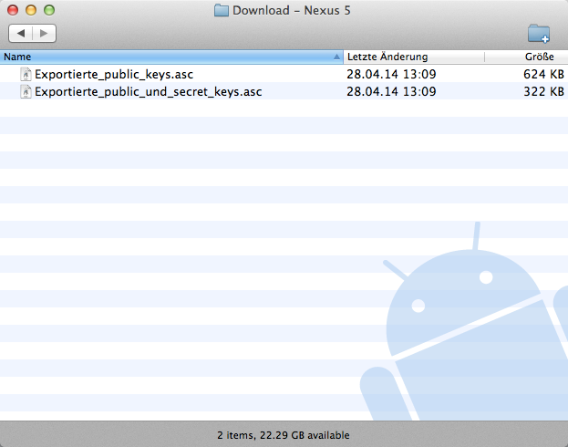
Abbildung 42: Android-Filetransfer auf dem Mac, Smartphone über
USB angeschlossen: Die Schlüssel werden ins Download-Verzeichnis
kopiert.
Vorbereitungen. Nach dem Anschluss mit einem USB-Kabel an den
Rechner wird der interne Speicher des Android-Geräts sofort als
virtuelles Windows-Laufwerk sichtbar. Nun kann man mit dem
Windows-Explorer die exportierten Schlüssel direkt in einen Ordner
des Android-Geräts (z.B. den Download-Ordner) übertragen. Die
Übertragung ist unter Windows ein einfacher Kopiervorgang auf ein
anderes Laufwerk..
Auf
dem Mac muss zunächst eine Dateiübertragungs-software von
http://www.android.com/filetransfer/
heruntergeladen und installiert werden. Man schließt das Gerät an,
startet die Filetransfer-Anwendung und öffnet darin den
Download-Ordner. Man zieht die exportierten Schlüssel-Dateien mit
der Maus in das Anwendungsfenster; diese werden dabei in den
Download-Ordner kopiert.
10.2.3 Schlüssel-Import in den Schlüsselbund
Nun ist der Schlüsselbund zu
öffnen, d.h. die App Crypto Plugin
wird gestartet. Man wählt Import PGP Keys
und wählt dann den Download-Ordner aus, in dem die
Schlüssel-Datei(en) liegen. Crypto Plugin
zeigt die importierbaren Schlüssel an. Die Schlüssel werden in den
Schlüsselbund importiert. Bei mehreren Schlüssel-Dateien ist der
Vorgang entsprechend zu wiederholen.
Nach dem
erfolgreichen Import werden die Schlüsseldateien auf dem Gerät
nicht mehr benötigt. Insbesondere Dateien, die private Schlüssel
enthalten, sind unbedingt zu löschen.
Öffentliche
Schlüssel können auch von einem Key-Server importiert werden. In
Crypto Plugin wählt
man die Option Search on PGP servers.
Danach wählt man einen der konfigurierten Schlüsselserver aus und
gibt einen Suchbegriff für den Schlüssel ein, z.B. eine
Email-Adresse oder einen Teil einer Email-Adresse. Aus der Liste der
gefundenen Schlüssel kann man einen Schlüssel auswählen und mit
dem Button „Import“
importieren.
Sind der
eigene Schlüssel und die öffentlichen Schlüssel der
Kommunikationspartner in den Schlüsselbund importiert, so sind die
Voraussetzungen für den verschlüsselten und signierten Mailverkehr
geschaffen.
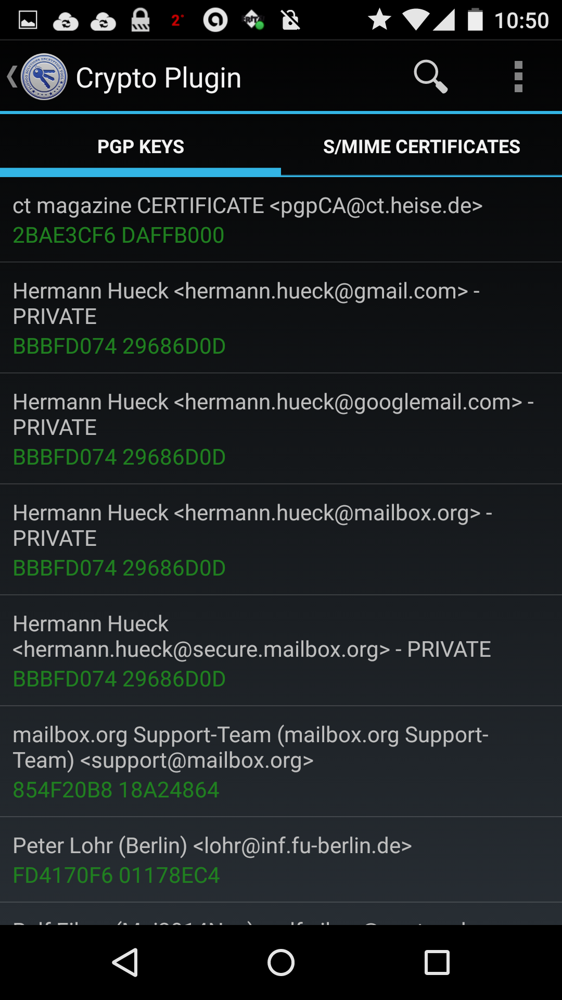
Abbildung 43: Android: Die importierten Schlüssel im Crypto
Plugin-Schlüsselbund
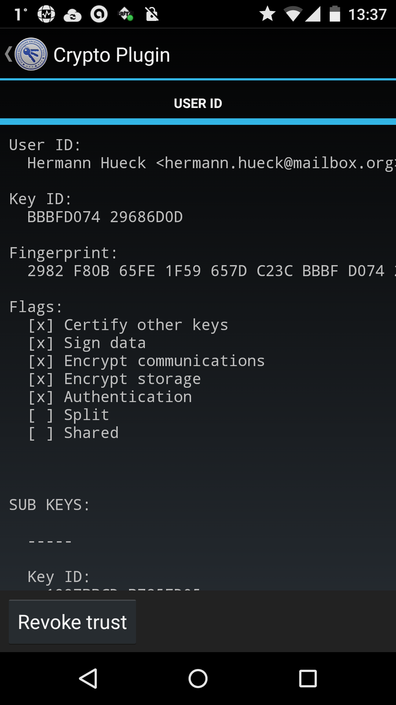
Abbildung 44: Android: Crypto Plugin-Schlüsseldetails:
Detail-Ansicht eines Schlüssels
10.3 PGP-Konfiguration der Mail-App
MailDroid
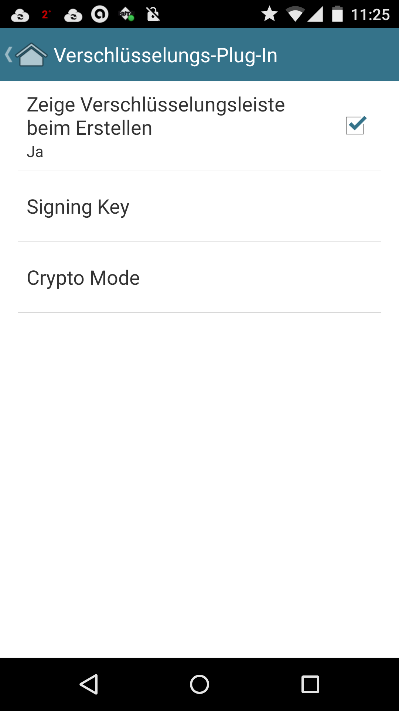
Abbildung 45: Android: MailDroid: Kryptographie-Optionen
Die verschlüsselte Mail, die vor dem
Schlüssel-Import noch nicht lesbar war, lässt sich nun schon
entschlüsseln und lesen (siehe Abb. 37).
In der Mail-App unter Einstellungen
→ Verschlüsselungs-Plug-In sind noch die geeigneten
Einstellungen für die Verschlüsselung vorzunehmen (siehe Abb. 35).
Mit
der Anzeige der Verschlüsselungsleiste hat man bei Erstellen jeder
Mail, die Möglichkeit diese zu signieren und/oder zu verschlüsseln.
Unter
„Signing Key“
wählt man aus mit welchem Schlüssel abgehende Mails signiert
werden sollen.
Mit
der Option „Crypto Mode“
legt man die Art der Verschlüsselung fest. Hier hat man die Wahl
zwischen „PGP/INLINE“,
„PGP/MIME“ und
„S/MIME“. Hier
ist „PGP/MIME“
einzustellen.
Bei der
zweiten und dritten Option kann man einen Standardwert vorgeben.
10.4 Nutzung von PGP mit MailDroid
Nun sind alle Einstellungen
vorgenommen. Verschlüsselte und signierte Mails können jetzt
gesendet und empfangen werden.
10.4.1 Mailversand
Das Senden
einer Mail funktioniert wie auch ohne die Verwendung von PGP üblich.
Vor dem
Versenden der Mail kann man in der Verschlüsselungsleiste festlegen,
ob die aktuelle Mail signiert und verschlüsselt werden soll und
welche Verschlüsselungsart zu verwenden ist. Mit den oben genannten
Voreinstellungen ist PGP/MIME vorausgewählt.
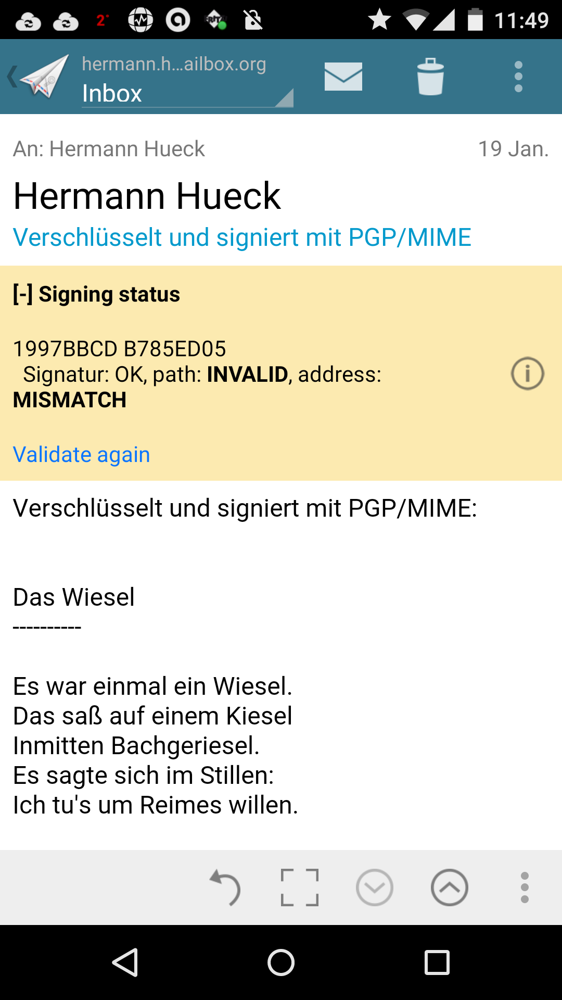
Abbildung 47: Android: MailDroid: Mail empfangen und
entschlüsselt.
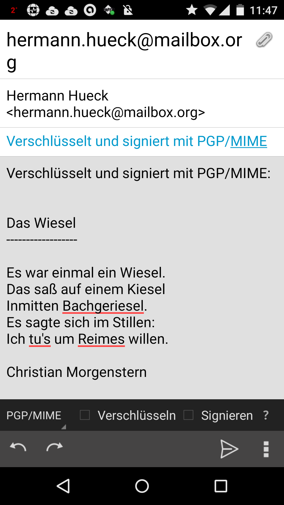
Abbildung 46: Android: MailDroid: Verfassen einer Mail
10.4.2 Mailempfang
Wird
eine verschlüsselte Mail mit MailDroid
auf dem Android-Gerät empfangen, ist sie zunächst noch nicht lesbar
und sieht etwa so aus wie in Abbildung 31 dargestellt. Die App
erkennt jedoch, dass es sich um eine verschlüsselte Mail handelt und
zeigt über der Mail eine Schaltfläche mit der Aufschrift
„Encrypted. Click to decode.“
Beim Tippen auf diese Schaltfläche verlangt die App evtl. die
Eingabe der Passphrase. Gibt man diese richtig ein, bekommt die App
den Zugriff auf den privaten Schlüssel und kann damit die empfangene
Mail entschlüsseln und lesbar machen (siehe Abb. 37).
10.4.3 Schlüsselbund-Pflege
Von
Zeit zu Zeit sollte man die öffentlichen Schlüssel im Schlüsselbund
aktualisieren. Die Pflege des Schlüsselbundes ist allerdings nicht
so komfortabel möglich wie in Thunderbird/Enigmail.
So kann es zweckmäßig sein, die öffentlichen Schlüssel im
Enigmail-Schlüsselbund
auf dem PC mit einem Schlüssel-Server zu synchronisieren (siehe Kap.
7.1.8),
danach auf einen USB-Stick oder eine MicroSD-Speicherkarte zu
exportieren, von dort auf das Android-Gerät übertragen (siehe Kap.
10.2.2)
und in den Schlüsselbund zu importieren (siehe Kap. 10.2.3).
Statt der Übertragung mit USB-Stick oder Speicherkarte kann auch das
Android-Gerät direkt über die USB-Schnittstelle mit dem Rechner
gekoppelt werden (siehe Kap. 10.2.3).
Die Übertragung des privaten Schlüssels über einen
unverschlüsselten Netzwerkkanal sollte man keinesfalls in Erwägung
ziehen.
10.5 Zusammenfassung
Dieses
Kapitel zeigte die Einrichtung eines Android-Geräts für die Nutzung
von PGP.
Man
installiert zunächst die passenden Apps: Crypto
Plugin
für die Verwaltung des Schlüsselbundes und MailDroid
als Email-Client mit PGP-Unterstützung. In Crypto
Plugin
sind – ebenso wie in der Schlüsselverwaltung auf dem PC – die zu
verwendenden Schlüssel-Server einzustellen.
Die
Schlüssel holt man sich am einfachsten aus der
Schlüsselbund-Verwaltung am PC. Dazu exportiert man den/die eigenen
privaten Schlüssel und auch die fremden öffentlichen Schlüssel auf
dem PC in zwei Dateien. Danach schließt man das Android-Gerät mit
dem USB-Kabel (als Medien-Gerät) an den PC an und kann nun unter
Windows mit dem Windows-Explorer sofort auf das Android-Dateisystem
zugreifen. Auf dem Mac muss zunächst Android
Filetransfer
installiert werden, damit man auf das Android-Dateisystem zugreifen
kann. Die beiden exportierten Dateien überträgt man nun auf das
Android-Gerät z.B. in den Download-Ordner.
Man
trennt nun das Android-Gerät wieder vom PC und importiert die
Schlüssel aus den beiden Dateien im Download-Ordner in den Crypto
Plugin-Schlüsselbund.
Die Schlüsseldateien sind nach dem Import zu löschen. Dazu kann man
entweder einen Android-Dateimanager verwenden oder das Gerät
nochmals mit dem PC koppeln, die Dateien mit dem Windows-Explorer
bzw. auf dem Mac mit dem Program Android
Filetransfer
löschen und danach die USB-Kopplung zwischen PC und dem Gerät
wieder trennen.
Nun
sind in der Mail-App die Kryptographie-Einstellungen vorzunehmen.
Öffnet
man nun eine verschlüsselte Mail, so findet man zunächst eine
Schaltfläche mit der Möglichkeit, diese zu entschlüsseln. Nach dem
Tippen auf die Schaltfläche und der Eingabe der richtigen Passphrase
ist der Zugriff auf den privaten Schlüssel möglich. Mit diesem wird
die Mail dechiffriert und lesbar gemacht.
Beim
Mailversand kann man nun für jede Mail erneut festlegen, ob sie
verschlüsselt und/oder signiert werden soll und welches
Verschlüsselungsverfahren dabei zu verwenden ist.
Von
Zeit zu Zeit sollten die öffentlichen Schlüssel des Schlüsselbundes
von den Key Servern aktualisiert werden. So erhält man für die
Schlüssel, die bereits im Schlüsselbund sind, auch die aktuellen
Beglaubigungen.
10.6 Links zu diesem Kapitel
11 Andere Mail-Apps - Alternativen zu MailDroid
In
den vorangehenden Kapiteln habe ich die Konfiguration und Nutzung der
Android Mail-App MailDroid
im Zusammenspiel mit der Schlüsselbund-App Crypto Plugin
ausführlich beschrieben.
Die
Alternativen stellen sich anders dar und meist auch etwas anders zu
benutzen. Die grundsätzlichen Konfigurationsschritte sind jedoch
immer dieselben. In den folgenden Unterkapiteln möchte ich ein kurze
Bewertung einiger alternativen Apps abgeben, die meinem subjektiven
Erfahrungs- und Kenntnisstand mit diesen Apps widerspiegelt.
11.1 Alternativen für Android
11.1.1 Squeaky Mail und PGP Keyring
Die beliebte Mail-App K-9 Mail
und ihre Ableger (K-@ Mail
und Kaiten) bieten
Unterstützung für PGP, allerdings nicht für das Format PGP/MIME.
Eine Ausnahme gibt es jedoch. Adam Wassermann hat mit PGP
KeyRing und mit Squeaky
Mail zwei Apps programmiert, die
auch PGP/MIME unterstützen. PGP KeyRing
ist eine App zur Verwaltung des Schlüsselbundes, Squeaky
Mail ist die dazu passende
Mail-App. Dieses Tandem kann alternativ zu Crypto Plugin
und MailDroid
eingesetzt werden.
Squeaky
Mail bietet die ganze Funktionsvielfalt von K-9 und auch die
Funktionen zur Signatur und Verschlüsselung sind mit einer
einfachen, aber ansprechenden Benutzeroberfläche umgesetzt. Mit der
Stabilität der App war ich allerdings nicht so richtig zufrieden.
Bei der Entschlüsselung verschlüsselter Mails kam es auf meinen
Geräten immer wieder zu Abstürzen. Aus diesem Grund bin ich von
Squeaky Mail zu
MailDroid gewechselt.
Doch man
sollte es vielleicht auf einen Versuch ankommen lassen. Vielleicht
läuft die App auf anderen Geräten stabil. Außerdem können sich
die Abstürze schon mit den nächsten Updates erledigt haben.
11.1.2 R2Mail2
Bei
R2Mail2 sind die
Funktionen zur Verwaltung des Schlüsselbundes in die -MailApp
integriert, sodass man keine zusätzliche App installieren muss.
Allerdings
ist die Benutzeroberfläche dieser App (Stand Herbst 2014) recht
spartanisch und nicht sehr komfortabel, sodass ich von dieser App
wieder Abstand genommen habe.
Bei einem
kurzen Test der App hat sich herausgestellt, dass die Signierung und
Verschlüsselung der Mails korrekt und stabil funktioniert hat. Von
dieser Seite machte die App einen brauchbaren Eindruck.
Für eine
profundere Bewertung müsste die App etwas länger im Alltagsbetrieb
getestet werden. Dies habe ich nicht getan.
11.1.3 PGP Mail
Auch
bei PGP Mail sind die
Funktionen zur Schlüsselverwaltung in die App integriert.
Bei der
Einrichtung dieser App bin ich bereits am initialen Import meines
Schlüssels gescheitert. Auf weitere Test habe ich dann verzichtet.
Die App kann ich in ihrem aktuellen Entwicklungsstand (Herbst 2014)
nicht empfehlen.
11.1.4 Whiteout Mail
Auch
Whiteout Mail hat die
Funktionen zur Schlüsselverwaltung von vorn herein integriert.
Diese
App präsentiert sich dem Benutzer genau so wie die Anwendung
Whiteout Mail auf dem
PC oder auf dem Mac (siehe Kap. Error: Reference source not found).
Für iOS gibt es die App mit gleicher Funktionalität. Für FirefoxOS
und Windows Phone ist diese App in Planung oder in Entwicklung.
Das
Interessante an dieser App ist die einfache und konsistente
Benutzererfahrung über alle Plattformen (Windows, Mac OS X, Linux,
Android, iOS) hinweg. Das Konzept der Synchronisierung des
verschlüsselten Schlüsselbundes über die Cloud erhöht den
Bedienkomfort deutlich.
Diese
App bietet zwar nicht die Funktionsvielfalt von Thunderbird/Enigmail
auf dem PC oder von MailDroid/Crypto Plugin
auf dem Android-Gerät, sondern sie beschränkt sich aufs
Wesentliche. Für den Benutzer, der die Funktionsvielfalt auch nutzt,
stellt sie keine Alternative dar. Die einfache klare Bedienung, die
elegante, fast konfigurationslose Integration von PGP und das
einheitliche Bedienkonzept für alle gängigen Plattformen macht sie
gerade für den nicht so technik-affinen Benutzer besonders
attraktiv.
Weitere
Details zu Whiteout Mail:
siehe Kap. Error: Reference source not found und unter
https://whiteout.io/.
11.2 Alternativen für iOS
Für
iOS kann ich keine Erfahrungswerte liefern, da ich selbst kein
iOS-Nutzer bin. Neben Whiteout Mail
(Kap. 8.4.5 Und 11.1.4) ist mir ist nur eine App mit
PGP-Unterstützung bekannt.
11.2.1 iPGMail
Mit
iPGMail
steht eine komfortable PGP-Lösung für iPhone und iPad in Apples
App Store zur Verfügung. Sie unterstützt Inline-PGP (Option „PGP
in Email-Body“
eingeschaltet) und PGP/MIME (Option „PGP
in Email-Body“
ausgeschaltet).
Die
Website von iPGMail
ist hier zu finden: https://ipgmail.com/
Ich
selbst kann zu dieser App keine Hilfestellung geben. Ausführlich
Informationen zur Konfiguration und zur Nutzung des Programms finden
sich an folgenden URLs:
11.3 Zusammenfassung
Die
Konfiguration und Nutzung von PGP-Mails auf mobilen Geräten hatte
ich für MailDroid
unter Android beschrieben. In
diesem Kapitel habe ich einige Alternativen zu diesem Setup
dargestellt.
11.4 Links zu diesem Kapitel
12 Passwortsicherheit und Rechnersicherheit
Dieses Kapitel behandelt einige
allgemeine Sicherheitsfragen wie Passwort- und Rechnersicherheit, die
nicht direkt mit der Email-Sicherheit zu tun haben, aber dennoch die
Sicherheit der Mails erhöhen. Selbstverständlich trägt ein
sicherer Rechner auch zur Sicherheit der Mails bei.
Einige gute Tipps zur Rechner- und
Passwortsicherheit findet man
unter
https://www.verbraucher-sicher-online.de/computer-und-netze
12.1 Sichere Passwörter
Trotz der häufigen Meldungen über
Einbrüche in Benutzerkonten bei Email-Providern, Banken und vielen
anderen Online-Diensten verwenden viele Benutzer immer noch zu
einfache Passwörter wie „123456“, das Geburtsdatum oder den
Namen der Freundin oder des Freundes. Einfache Passwörter sind
leicht zu merken, aber auch kinderleicht zu knacken.
12.1.1 Welches sind unsichere Passwörter?
Die häufigsten Beispiele schlechter
Passwörter:
Das Passwort ist zu einfach oder
zu kurz. Beispiel: „123456“ (Traurig, aber wahr: dies ist das im
Internet am häufigsten verwendete Passwort.)
Das Passwort ist aus dem
Benutzerkontext ableitbar. Beispiele: Name des Benutzers,
Geburtsdatum des Benutzers, Name der Lebenspartnerin des Benutzers
Das Passwort ist aus dem
Dienstnamen ableitbar. Beispiel: Das Passwort für den Zugriff auf
Gmail lautet „google“. Und das Passwort für das Online-Banking
bei der Sparkasse lautet „sparkasse“. Manche glauben, mit
„sparkasse123“ seien sie schon auf der sicheren Seite. Dies ist
allerdings kaum sicherer und für einen Passwort-Cracker (Programm
zum Knacken von Passwörtern) kein großes Hindernis.
Für verschiedene Dienste wird
dasselbe Passwort verwendet. Wird für den Email- und für den
Bank-Account dasselbe Passwort verwendet, so kann ein Einbrecher,
der das Passwort für den Email-Account geknackt hat, sich damit
auch für das Online-Banking dieses Benutzers anmelden.
Oft werden Passwörter einfach
der natürlichen Sprache entnommen. Leider ist auch „Hutschachtel“
kein gutes Passwort. Darauf würde zwar kein Mensch kommen. Für ein
Passwort-Cracker, das einfach alle Wörter eines Wörterbuches
durchprobiert, ist auch dies kein Problem.
Man darf sich nicht vorstellen, dass
Passwörter von Menschen geknackt werden. Dafür gibt es
Passwort-Cracker, also Programme die das Knacken vollautomatisch
erledigen. Werden solche Passwort-Cracker auf leistungsfähigen
Rechnern oder Rechnerverbünden ausgeführt, dann können sie die
Wörter eines Wörterbuches einer Sprache in der Größenordnung von
ein, zwei Stunden durchprobieren (sog. Wörterbuchattacken).
Aber auch Passwörter, die nicht in
Wörterbüchern vorkommen, wie z.B. „defXYZ“ sind nicht sicher.
Diese Passwort ist zu kurz und enthält keine Ziffern und
Sonderzeichen. Ein Passwort-Cracker, der einfach
Zeichenkombinationen durchprobiert, dürfte dieses Passwort binnen
weniger Minuten geknackt haben (sog. Brute Force Attacke).
Deshalb im nächsten Kapitel paar
Grundregeln für sichere Passwörter.
12.1.2 Regeln für sichere Passwörter
Ein Passwort sollte mindestens
12 Zeichen lang sein.
Ein Passwort sollte Buchstaben,
Ziffern und Sonderzeichen enthalten. Manche Dienste lassen keine
Sonderzeichen zu. Diesen Mangel kann man ausgleichen, indem man die
Länge des Passwortes erhöht, z.B. auf 15 Zeichen.
Ein Passwort sollte nicht leicht
zu erraten sein (keine Geburtstage, Spitznamen oder Ähnliches; also
keine Eselsbrücken verwenden, die andere auch erraten können).
Ein Passwort sollte nicht in
Wörterbüchern vorkommen. Warum? Wörterbuch-Attacken probieren
einfach alle Wörter eines Wörterbuches aus. Ein Mensch würde
Jahre dazu benötigen, ein leistungsfähiger Computer schafft das im
Stundenbereich und kann dazu auch die Wörterbücher mehrerer
Sprachen heranziehen.
Für verschiedene Dienste sind
verschiedene Passwörter zu benutzen. Nicht selten verwenden
Benutzer heute 50 und mehr Passwörter für verschiedene Dienste.
Wird das Passwort eines Dienstes geknackt oder gestohlen, dann sind
bei unterschiedlichen Passwörtern nicht 50 Dienste, sondern nur ein
Dienst kompromittiert.
Auch wenn es mühsam ist,
Passwörter sollten regelmäßig geändert werden – wenigstens bei
besonders sicherheitskritischen Accounts wie Email-Account oder
Online-Banking-Account. Eine allgemeine Regel für das richtige
Intervall der Passwortänderung gibt es nicht. Als Faustregel würde
ich für sicherheitskritische Accounts ein Änderungsintervall von
ca. einem halben Jahr empfehlen. Bei anderen Accounts, die man
selten verwendet und deren Kompromittierung weniger schmerzt, kann
das Intervall auch größer sein. Die Entscheidung für den
richtigen Zeitabstand muss man letztendlich selbst treffen.
Wie also findet man ein gutes
Passwort? Dazu gibt es viele Möglichkeiten. Eine Variante ist
folgende:
Man denkt sich einen Satz.
Beispiel: Ich ging im Walde so für mich hin.
Man zieht die Anfangsbuchstaben
dieses Satzes einschließlich der Sonderzeichen zu einer
Zeichenfolge zusammen und stellt noch die dreifache Anzahl der im
Satz enthaltenen Wörter durch ein Komma getrennt an den Anfang. Das
Ergebnis für obigen Satz ist dann: 24,IgiWsfmh.
Dieses Passwort erfüllt alle oben
genannten Bedingungen. Es hat eine Länge von 12 Zeichen. Es enthält
Groß- und Kleinbuchstaben, Ziffern und Sonderzeichen und kommt in
keinem Wörterbuch vor. Dieses Passwort lässt sich, wenn man den zu
Grunde gelegten Satz kennt, trotzdem gut merken.
12.1.3 Zwei-Faktor-Authentifizierung
Das Prinzip der
Zwei-Faktor-Authentifizierung kennt jeder vom TAN-Verfahren, das beim
Online-Banking eingesetzt wird. Benutzername und Passwort stellen nur
den ersten Faktor dar. Um z.B. eine Überweisung zu tätigen, braucht
man zusätzlich die TAN als zweiten Faktor, um die Überweisung zu
legitimieren.
Ein Angreifer, der von meinem Konto
Geld überweisen will, muss sich beider Faktoren bemächtigen. Er
muss meinen Benutzernamen und mein Passwort kennen und er muss auch
noch eine gültige TAN in Erfahrung bringen, um Geld von meinem Konto
zu stehlen.
Zwei-Faktor-Authentifizierung gibt es
mittlerweile nicht nur beim Online-Banking, sondern bei immer mehr
anderen Diensten im Internet.
Google war einer der ersten Dienste,
die dieses Verfahren für die Anmeldung eingeführt haben. Dazu muss
man in den Konto-Einstellungen erst auf die
Zwei-Faktor-Authentifizierung umstellen. Hat man die Umstellung
vorgenommen, muss man bei der Anmeldung außer Benutzernamen und
Passwort zusätzlich einen einmaligen Code (ähnlich einer TAN)
eingeben. Diesen kann man sich als SMS auf das Mobiltelefon schicken
lassen (analog zur Mobil-TAN) oder auch von der App Google
Authenticator (analog zu einem
TAN-Generator) generieren lassen.
Die
Zwei-Faktor-Authentifizierung wird mittlerweile neben Google von
anderen Diensten angeboten, darunter Apple und Dropbox. Auch immer
mehr Email-Provider bieten dieses sichere Anmeldeverfahren an. Posteo
und mailbox.org
gehören auch dazu.
12.1.4 Passwort-Manager (Passwort-Safe)
Hat man viele Passwörter, empfiehlt
sich der Einsatz eines Passwort-Managers. Ein Passwort-Manager oder
Passwort-Safe ist installierbares Programm, das Passwörter verwaltet
(in etwa analog zur Schlüsselverwaltung bei PGP). Der Zugriff auf
die Passwortliste des Passwort-Managers ist mit einem starken
Passwort, dem sog. Master-Passwort, zu schützen. Dieses sollte man
sich jedoch gut einprägen, da es der einzige Zugang zu den anderen
Passwörtern ist. Ein Passwort-Manager ist mit einem Schlüsselkasten
vergleichbar, das Master-Passwort ist dabei der Schlüssel zum
Schlüsselkasten.
Besonders zweckmäßig ist ein
Passwort-Safe, der auf unterschiedlichen Betriebssystemen (Windows,
Mac OS X, Linux, Android und iOS) funktioniert und der die
Passwortliste über einen Cloud-Anbieter zwischen verschiedenen
Geräten synchronisieren kann. Dies ist auch bei einem Cloud-Provider
wie Dropbox, der keine Ende-zu-Ende-Verschlüsselung anbietet
(siehe Kap. 13.5 und 13.5.5), ungefährlich unter der Voraussetzung,
dass die Passwortliste durch ein starkes Master-Passwort geschützt
ist. Ein Dieb, dem es gelingt, die Liste abzugreifen, müsste das
Master-Passwort knacken, um an die Passwörter im Safe heranzukommen.
Hier sollte man keine Scheu haben, ein besonders sicheres
Master-Passwort mit 15 oder mehr Zeichen zu wählen und Buchstaben,
Ziffern und Sonderzeichen gut zu mischen.
Gute Erfahrungen habe ich mit dem
Passwort-Safe mSecure von mSeven Software LLC gemacht:
https://msevensoftware.com/
. Dieses Programm ist für Windows, Mac OS X, iOS und Android
verfügbar und synchronisiert die verschlüsselte Passwortliste über
die Dropbox-Cloud (siehe Kap. 13.5 Und 13.5.5). Noch komfortabler ist
1Password ( https://agilebits.com/onepassword
) von AgileBits. Mit den passenden Browser-Plugins kann
1Password beim Login in eine Website sogar die Anmelde-Felder
automatisch ausfüllen. Eine weitere Alternative ist LastPass
von LastPass Corporate ( https://lastpass.com/de/
). Dieser Passwort-Safe wird im Gegensatz zu den beiden anderen auch
für Linux angeboten.
12.2 Sicherheit von Rechner, Tablet und Smartphone
Um ein System sicher zu betreiben,
muss man drei wesentliche Aspekte beachten:
Das Betriebssystem aktuell
halten
Die installierten Programme
aktuell halten (dies kann recht aufwändig sein)
Je nach Betriebssystem einen
aktuellen Virenscanner installieren und die Viren-Signaturen aktuell
halten, also mehrmals täglich aktualisieren (bzw. aktualisieren
lassen).
Die nachfolgenden Unterkapitel
beschreiben die Sicherheitsgrundsätze für die heute im
Privatbereich gängigen Betriebssysteme.
12.2.1 Windows sicher betreiben
Betriebssystem: In der
Systemsteuerung → Windows-Update sind automatische
Windows-Updates einzustellen. Der Rechner prüft dann (wenn er eine
Verbindung ins Internet hat) selbsttätig, ob bei Microsoft Updates
vorliegen und aktualisiert sich. Werden Windows-Updates installiert,
ist häufig ein Neustart des Systems erforderlich.
Programme: Die
installierten Programme müssen aktuell gehalten werden. Das ist bei
Windows meist ein schwieriges Unterfangen, da jedes Programm von der
Website seines Herstellers aktualisiert werden muss. Es gibt kein
zentrales Software-Repository.
Besonderes Augenmerk sollte man
auf die Aktualität der häufig verwendeten Kommunikationsprogramme
werfen. Diese sind besonders sicherheitskritisch. Diese Programme
sind auch auf den meisten Privat-PCs installiert: Chrome,
Firefox, Thunderbird oder ein alternativer
Email-Client. Auch Adobe Flash Player, Adobe Reader
und Java sind besonders sicherheitskritisch und deshalb
stets aktuell zu halten.
Alle installierten Programme
regelmäßig auf Aktualität zu prüfen, kann sehr zeitaufwändig
werden. Manche sagen, die Programme auf einem Windows-System
aktuell zu halten, ist schlimmer als einen Sack Flöhe zu hüten.
Ein guter Helfer dabei ist Secunia PSI. Dieses Programm
führt Buch über alle installierten Programme und informiert den
Benutzer, wenn eines oder mehrere Programme nicht mehr aktuell
sind. Wöchentlich einen System-Scan durch Secunia durchführen zu
lassen, kann eine sehr sinnvolle Maßnahme sein ( siehe
http://secunia.com/vulnerability_scanning/personal/
).
Virenscanner: Einen
Windows-Rechner ohne Virenscanner zu betreiben oder die
Viren-Signaturen nicht mehrmals täglich zu aktualisieren, darf als
grobe Fahrlässigkeit eingestuft werden. Die Viren-Signaturen
aktualisiert der installierte Virenscanner per Voreinstellung in der
Regel automatisch. Da Viren heute oft in sehr kurzer Abständen neu
erstellt oder variiert werden, müssen permanent neue
Viren-Signaturen auf ihren Servern bereitstellen. Man sollte darauf
achten, dass die Viren-Signaturen im ein- oder zwei-stündigen
Rhythmus aktualisiert werden.
12.2.2 Mac OS X sicher betreiben
Betriebssystem: In den
Systemeinstellungen → App Store sind automatische Updates
einzustellen. Der Rechner prüft dann (wenn er eine Verbindung ins
Internet hat) selbsttätig, ob im Mac OS X App Store Updates
vorliegen und aktualisiert sich. Auf diesem Wege werden sowohl das
Betriebssystem als auch die aus dem App Store installierten
Programme aktualisiert.
Programme: Unter Mac OS X
müssen nicht alle Programme aus dem OS X App Store installiert
werden. Manche Programme stammen aus anderen Quellen. Diese erfahren
keine automatische Aktualisierung. Sie müssen jeweils einzeln vom
Benutzer aktualisiert werden.
Wie unter Windows ist ein
besonderes Augenmerk auf folgende häufig verwendete und
sicherheitskritische Programme zu werfen: Chrome, Firefox,
Thunderbird oder der alternative Email-Client, Adobe
Flash Player, Adobe Reader und Java. Sie alle
sind sehr beliebt, werden jedoch nicht aus dem OS X App Store
installiert und damit auch nicht automatisch aktualisiert. Chrome
kann sich selbst aktualisieren und ist damit ein einfacher Fall.
Firefox und
Thunderbird machen
mit einem Meldungsfenster darauf aufmerksam, wenn sie aktualisiert
werden wollen, ebenso der Adobe Reader
und Java. Mit einem
Mausklick auf den Button „OK“
im Meldungsfenster kann man die Aktualisierung meist gleich
starten.
Ein taugliches
Software-Überwachungsprogramm wie Secunia PSI unter Windows
gibt es für OS X meines Wissens nicht. Hier bleibt einem die
manuelle Aktualitätsprüfung nicht erspart. Der Aufwand kann sich
auf manchen Systemen erheblich reduzieren, wenn man alle Programme,
die man nicht wirklich braucht, deinstalliert. So muss man diese
auch nicht mehr aktuell halten.
(Sind nicht so viele Flöhe im Sack, dann ist das Hüten auch nicht
so schwer.) Allerdings können Programme, die nur installiert aber
nicht aktiv sind, auch keinen Schaden anrichten. Man kann sich auch
angewöhnen, nach dem Start eines Programms dieses zunächst nach
Aktualisierungen suchen zu lassen.
Virenscanner: Früher
konnte man einen Mac auch ohne Virenscanner weitgehend sicher
betreiben. Angriffe galten immer nur Windows-Rechnern und fast
niemals den Macintosh-Rechnern. Durch die zunehmende Verbreitung
(aktuell ca. 10 % der verkauften Privatrechner, Tendenz steigend)
werden auch die Rechner von Apple zu einem immer beliebteren
Angriffsziel. So ist es heute wie unter Windows durchaus auch auf
dem Mac empfehlenswert, einen Virenscanner zu installieren und die
Viren-Signaturen mehrmals täglich zu aktualisieren bzw.
aktualisieren zu lassen.
12.2.3 Linux sicher betreiben
Betriebssystem und Programme:
Für jede Linux-Distribution gibt ein zentrales Software-Repository
im Netz, aus dem das Betriebssystem und die installierten Programme
aktualisiert werden können. Mit einem lokal installierten Programm
(unter Ubuntu Linux ist dies die „Softwareaktualisierung“) kann
man das System aktuell halten. Mit wenigen Mausklicks aktualisiert
man Betriebssystem und alle Programme und Programm-Bibliotheken.
Wird dabei der Linux-Kernel aktualisiert, ist ein Neustart des
Rechners erforderlich.
Virenscanner: Linux hat
einen sehr geringen Marktanteil und ist durch die relativ geringe
Verbreitung unter Privatnutzern für Virenhersteller kein lohnendes
Angriffsziel. Da keine oder kaum Linux-Viren erstellt werden, ist
die Herstellung von Linux-Virenscannern ebenso wenig lukrativ. Die
Hersteller von Virenscannern bieten diese für Windows und meist für
Mac OS X an. Es gibt jedoch keine Virenscanner für Linux. Der
Linux-Anwender muss zwar auf den Virenscanner verzichten, doch er
hat trotzdem ein System, das durch Viren fast nicht gefährdet ist.
12.2.4 iOS sicher betreiben
iPhones und iPads beziehen (solange
sie nicht durch einen Jailbreak entsperrt wurden) ihre Apps
ausschließlich aus dem Apple App Store. Dieser wird von Apple stark
kontrolliert und reguliert, was mancher als Nachteil empfinden mag.
Ein Vorteil ist sicherlich, dass es sehr unwahrscheinlich ist, dass
Schadprogramme in den App Store eingeschleust werden und sich lange
dort halten können. Deshalb ist die Gefährdung von iOS-Geräten
auch recht gering. Die Installation eines Virenscanners ist weder
sinnvoll noch möglich. Mit regelmäßigen Aktualisierungen des
iOS-Betriebssystems und der installierten Apps lassen sich iOS-Geräte
sehr sicher betreiben.
12.2.5 Android sicher betreiben
Bei Android ist die Bedrohungslage
deutlich höher als bei iOS.
Betriebssystem: Die
Aktualisierungen des Betriebssystems kommen nicht wie bei iOS von
einer zentralen Stelle für alle Android-Geräte, sondern von den
Herstellern der jeweiligen Geräte. Diese sind allerdings meist sehr
nachlässig mit der Update-Versorgung der älteren Geräte. So
werden Sicherheitslücken häufig sehr spät oder gar nicht
geschlossen. Als Nutzer hat man allerdings fast keine Möglichkeit,
dieses Risiko zu verhindern.
Allerdings gibt es eine
Alternative. Man kann das alternative Android-System CyanogenMod
( http://www.cyanogenmod.org/
) auf sein altes Gerät aufspielen. Dieses alternative
Android-System gibt es für viele Geräte unterschiedlicher
Hersteller. Die Chancen, ein altes Android-Gerät (z.B. das Samsung
Galaxy S, S2 oder S3), das von seinem Hersteller längst nicht mehr
mit Updates versorgt wird, wieder mit einer aktuellen
Android-Version auszustatten, ist recht hoch.
Besser verhält
es sich mit den Geräten der Nexus-Serie von Google. Bei diesen
Geräten kommen auch die Betriebssystem-Updates von Google. Nach dem
Erscheinen eines Updates stellt Google dieses sehr schnell für die
Nexus-Geräte bereit. Die übrigen Hersteller liefern die
Android-Updates mindestens ein halbes Jahr später aus. Oft dauert
es noch länger und für ältere Geräte werden häufig keine
Updates mehr bereitgestellt.
Programme: Der Google
Play Store stellt Aktualisierungen nur für die Apps ein, nicht für
das Android-Betriebssystem. Die Regulierung ist zwar nicht so streng
wie bei Apple, doch selbst wenn es einer Malware-App gelingt, durch
die Kontrollen von Google durchzuschlüpfen, ist die
Wahrscheinlichkeit der Entdeckung der Schadfunktionen doch recht
hoch. Google entfernt diese zeitnah aus dem Play Store. Solange man
auf das sog. Side Loading verzichtet, d.h. solange man die Apps
ausschließlich aus dem Google Play Store installiert und
aktualisiert, bleibt das Malware-Risiko sehr überschaubar. Bezieht
man die Apps auch aus alternativen App Stores, erhöht sich dieses
Risiko deutlich.
Virenscanner: Man kann
das Restrisiko durchaus noch etwas verkleinern, indem man sich eine
Virenscanner-App auf das Android-Gerät installiert. Viele
Hersteller von Virenscannern für Windows bieten mittlerweile auch
eine Virenscanner-App für Android im Play Store an. Die
Virenscanner-Apps sind allerdings noch nicht so ausgereift und
leistungsfähig wie ihre großen Schwestern unter Windows. Auch
Experten sind diesbezüglich geteilter Meinung. Ich würde sagen,
eine Virenscanner-App auf dem Smartphone oder Tablet macht durchaus
Sinn; einen sehr großen Sicherheitsgewinn sollte man sich aber
nicht davon versprechen. Wichtiger ist der Verzicht auf Side Loading
und auf alternative App Stores (s.o.).
12.3 Zusammenfassung
Auch die Passwortsicherheit und die
Rechnersicherheit kommen indirekt der Email-Sicherheit zugute.
In
diesem Kapitel haben wir Regeln für gute Passwörter aufgestellt.
Das Verwalten vieler Passwörter lässt sich mit einem
Passwort-Manager besser bewältigen.
Um
den Rechner bzw. das mobile Gerät sicher zu machen und sicher zu
halten, muss das Betriebssystem immer auf dem aktuellen Stand sein.
Auch die installierten Programme sind auf dem aktuellen Stand zu
halten. Unter Windows kann das Programm Secunia PSI dabei eine große
Hilfe sein.
Vor
Allem unter Windows benötigt man auch einen Virenscanner, der im
Stundentakt mit aktuellen Virensignaturen versorgt wird.
Unter
Android und iOS erhält man das Betriebssystem-Update, wenn es vom
Hersteller bereitgestellt wird. Die Apps aktualisieren sich aus dem
Google Play Store bzw. aus dem Apple App Store. Unter Android kann
auch ein Virenscanner sinvoll sein, um das System gegen Malware zu
härten.
12.4 Links zu diesem Kapitel
13 Verschlüsselte Mails – und was noch?
Verschlüsselte Mails sind wichtig,
aber noch lange nicht alles. Wir nutzen das Internet auch noch auf
anderen Kommunikations-Kanälen:
SMS
Telefonie
Groupware-Dienste (Adressbuch,
Kalender, Aufgaben-Liste) in der Cloud
Speicherdienste: in der Cloud
gespeicherte Ordner und Dateien
Online-Banking
Surfen im Web (Auf dieses sehr
umfangreiche Thema werde ich hier nicht eingehen.)
Für alle diese Dienste gibt es
sichere Alternativen oder Nutzungsempfehlungen. Um sie so ausführlich
zu beschreiben, wie ich dies bei der Email getan habe, müsste ich
den Umfang des vorliegenden Dokuments mindestens verdoppeln.
Ich will an dieser Stelle zunächst
einige Konzepte erläutern. Ich werde mich dabei immer wieder auf die
Email beziehen und – wo immer es sich anbietet – auch die
Analogien aufgreifen und aufzeigen. Unser gewonnenes Wissen über
Verschlüsselung (von Transportkanälen und Inhalten) kommt uns dabei
zugute.
13.1 Grundsätzliches
Dieses Kapitel erläutert einige
Konzepte, die für das Verständnis der nachfolgenden Kapitel
hilfreich sind.
13.1.1 Zero Knowledge
Zero Knowledge ist ein
Begriff, der als Gütesiegel verschlüsselnder Dienste angesehen
wird. Manche Dienste-Anbieter werben sogar mit diesem Begriff.
Zero Knowledge
bedeutet: Der Provider
weiß nichts. Er kennt meine Daten nicht.
Dies
bedeutet konkret, dass der Provider nur verschlüsselte Daten (zur
Aufbewahrung oder Weiterleitung) erhält. Er erhält jedoch niemals
den Schlüssel zu denn Daten und damit den Zugang zu den
unverschlüsselten Inhalten. Der Provider bleibt also, was den Inhalt
meiner Daten angeht, „unwissend“. Beispielsweise hat die Post
(zumindest solange sie ihn nicht öffnet) „Zero Knowledge“ über
den Inhalt des Briefes, den ich ihr zum Transport übergebe.
Dies hat
nicht nur den Vorteil, dass der Provider meine Daten nicht kennt.
Selbst wenn er gezwungen wird, die Daten an Behörden oder
Geheimdienste herauszugeben, so erhalten diese ebenfalls nur die
verschlüsselten Daten, die sie nicht lesen können. Auch wenn Hacker
in die Systeme meines Providers einbrechen, sind meine Daten dennoch
geschützt. Auch die Hacker können nur meine verschlüsselten Daten
stehlen. Um sie zu entschlüsseln und zu lesen, müssten sie
zusätzlich den privaten Schlüssel aus meinem Schlüsselbund
stehlen.
Verschlüsselte
Mail ist ein Beispiel für Zero Knowledge.
Eine mit einem öffentlichen PGP-Schlüssel verschlüsselte Mail kann
nur vom Empfänger entschlüsselt und gelesen werden, solange dieser
allein im Besitz des privaten Schlüssels ist. Der Mail-Inhalt bleibt
vor dem Provider, und damit auch vor Hackern und vor Geheimdiensten
und Behörden verborgen. Zero Knowledge
ist ein Synonym für
Ende-zu-Ende-Verschlüsselung.
Mit
Transport-Verschlüsselung sind die Daten nur verschlüsselt, solange
sie unterwegs sind. Damit alleine kann Zero Knowledge
niemals implementiert werden. Um Zero Knowledge
als Dienstmerkmal bereitzustellen, ist immer die Verschlüsselung der
Daten erforderlich.
13.1.2 Open Source
Open Source
kann ein wichtiges Merkmal für einen Dienst sein. Ist die Software,
die den Dienst implementiert, Open Source
Software, so ist der Quellcode offengelegt und für jedermann
zugänglich. Sie kann also von jedem (der das erforderliche Know-how
dazu hat) überprüft werden.
Ist
die Software eines Dienst-Providers Closed Source,
so bleiben die Funktionen und Qualitätsmerkmale, mit denen der
Provider seinen Dienst bewirbt, eine pure Behauptung, der ich Glauben
schenken kann oder auch nicht. Ich muss dem Provider vertrauen. Open
Source Software hingegen ist
grundsätzlich überprüfbar.
Allerdings
muss man hinzufügen, das Open Source keine Garantie dafür ist, dass
die Software tatsächlich auch überprüft wird. Dies hat sich jüngst
bei der Open Source Bibliothek OpenSSL
gezeigt. Über Jahre war in dieser weit verbreiteten Bibliothek ein
schwerer, sicherheitskritischer Fehler (Heartbleed,
siehe Kap. 14.7) verborgen, der erst im Frühjahr 2014 entdeckt
wurde.
13.1.3 Was sind Cloud-Dienste?
Der Kerngedanke der Cloud (so wie sie
der Privatnutzer kennt) ist die Speicherung der Daten in sehr großen
Rechenzentren (z.B. von Amazon, Microsoft, Google, IBM und Apple).
Die zentrale Speicherung der Daten in der Cloud erlaubt die
Synchronisation dieser Daten zwischen verschiedenen mit dem
Internet verbundenen Geräten desselben Benutzers.
(Die sog. Cloud hat viele Aspekte.
Das Abheben auf die Daten-Synchronisation ist eine sehr vereinfachte
Sicht der Cloud. Da dieser Aspekt für den Privatnutzer im
Vordergrund steht und im Kontext dieses Dokuments ausreichend ist,
bleibe ich bei dieser Vereinfachung.)
Ein paar typische Beispiele:
Ich kopiere auf meinem
Smartphone einige Fotos in einen neuen Dropbox-Ordner. „Wie
von Zauberhand“ erscheint der neue Dropbox-Ordner mit dem
Fotos auf meinem PC. Je nach Netzwerkbandbreite und Anzahl der Fotos
dauert dieser Vorgang zwischen wenigen Sekunden und einigen Minuten.
Bei einer sehr langsamen Netzverbindung und sehr vielen Fotos können
auch Stunden daraus werden. Dies funktioniert natürlich nicht nur
mit Fotos, sondern mit beliebigen Dateien. (Diesen Cloud-Typ nennt
man auch Speicher-Cloud, Cloud Storage oder Online-Festplatte.)
Ich erzeuge einen neuen Termin
in meinem Kalender auf dem PC. Im Handumdrehen erscheint der Termin
auch im Kalender auf meinem Tablet oder Smartphone. (Kalender-Cloud
oder Kalender-Synchronisation)
Ich lösche einen Kontakt aus
der Kontaktliste meines Tablet. Hat man die Kontaktliste auch
anderen Geräten geöffnet, so kann man häufig zusehen, wie der
Kontakt auch auf den anderen Geräten verschwindet. Manchmal geht’s
auch nicht so flott. Dann muss man ein wenig warten oder die
Aktualisierung anstoßen, damit der Kontakt überall verschwindet.
Wie schnell dies geht, kann auch vom eingestellten
Synchronisationsintervall abhängen. (Die Kontakte-Cloud
synchronisiert die Kontaktliste zwischen den Geräten des
Benutzers.)
Ein mit IMAP verwaltetes
Email-Konto kann man als Email-Cloud betrachten. In Thunderbird
auf dem PC verschiebe ich eine Mail aus dem Posteingang in
einen anderen Ordner. In der Mail-App auf dem Tablet oder Smartphone
kann man zusehen, wie die Mail aus dem Posteingang verschwindet. Und
wenn man nachsieht, findet sich auch auf diesen Geräten die Mail im
neuen Ordner. (Mail-Cloud oder Mail-Synchronisation)
Ich lese ein E-Book auf meinem
E-Book-Reader und unterbreche meine Lektüre auf Seite 83. Nach zwei
Stunden möchte ich auf dem Tablet weiterlesen und öffne die
Reader-App. Die Reader-App „weiß“, welches E-Book ich zuvor auf
dem anderen Gerät gelesen haben und bietet mir sogar an, auf Seite
83 fortzufahren, auf der ich meine Lektüre zuvor unterbrochen habe.
Die Cloud macht's möglich.
Ich füge meinem Chrome-Browser
auf dem PC ein neues Lesezeichen hinzu. Es dauert nicht lange, dann
finde ich dieses Lesezeichen auch im Chrome-Browser auf dem
Smartphone und kann die betreffende URL dann auch dort öffnen.
Damit dies funktioniert, muss man auf den betreffenden Geräten in
Chrome angemeldet sein. Die Synchronisation der Lesezeichen
funktioniert auch mit Firefox und mit anderen Browsern. (Man könnte
es als „Bookmark-Cloud“ oder Lesezeichen-Synchronisation
bezeichnen.)
Was ist die Voraussetzung für diese
automatische Synchronisation? Die Geräte benötigen eine
Internet-Verbindung und sie müssen alle bei demselben Anbieter mit
demselben Benutzer-Account angemeldet sein.
Meine Daten (Dateien, Kalender,
Kontakte, Mails, E-Books, Bookmarks) werden zentral beim
Cloud-Anbieter gespeichert. Die angemeldeten Geräte enthalten ein
Kopie des zentralen Datenbestandes und synchronisieren ihren
Datenbestand permanent und automatisch mit dem in der Cloud
gespeicherten Datenbestand.
Cloud-Dienste sind für den Benutzer
sehr bequem. Ich ändere meine Daten auf einem Gerät. Die anderen
Geräte synchronisieren sich automatisch. Das umständliche,
zeitaufwändige und auch fehleranfällige Kopieren der Daten zwischen
den Geräten gehört der Vergangenheit an.
Doch unter Sicherheitsgesichtspunkten
habe ich mir ein Problem eingehandelt. Die Daten lagern –
allermeist unverschlüsselt – beim Cloud-Provider. Das zentrale
Datenlager ist nicht mehr in meiner eigenen Verfügungsgewalt.
Der Provider kann auf meine
unverschlüsselten Daten zugreifen. Hacker, die es schaffen, beim
Provider einzubrechen, haben ebenfalls Zugriff auf meine Daten.
Polizeiliche Ermittlungsbehörden können den Zugriff auf meine Daten
vom Cloud-Provider durch Gerichtsbeschluss erzwingen. Die
Geheimdienste machen es zuweilen so wie die Behörden und erzwingen
den Zugriff auf meine Daten oder sie verfahren wie die Hacker,
brechen beim Provider ein und stehlen sich die Daten.
Mit dem Cloud-Sicherheitsproblem kann
man nun auf verschiedene Arten umgehen:
Man kann die Cloud-Dienste
weiter nutzen und die Sicherheitsproblematik ignorieren. Man
speichert nur vermeintlich „unkritische“ Daten in der Cloud. Da
stellt sich natürlich sofort die Frage, ob z.B. Kalender und
Kontakte als „unkritische“ Daten zu betrachten sind.
Man kann auf die
Cloud-Dienste verzichten. Solange man nur ein Gerät hat, z.B.
einen PC, ist dieser Weg ohne große Komforteinbußen gangbar. Schon
wenn man den alten PC durch einen neuen ersetzen will, muss man
seine Daten von dem alten auf den neuen PC übertragen. Dies kann
ohne Cloud schon recht aufwändig werden.
Man kann in der eigenen Wohnung
in der Kammer oder im Keller (mit dem Software-Packet OwnCloud)
seine eigene Cloud einrichten. Man wird dadurch zum
Cloud-Provider für die eigenen Daten, bzw. für die Daten der
Familie. (OwnCloud wird auch in Firmen eingesetzt, wenn diese nicht
auf einen externen Cloud-Anbieter angewiesen sein wollen.) Dies hat
den Vorteil, dass die Daten das eigene Heimnetz nicht verlassen.
Allerdings setzt diese Strategie ein gewisses technisches Know-how
voraus und ist auch mit etwas Zeitaufwand verbunden. Ein eigener
Cloud-Server muss ja erst einmal eingerichtet und dann im laufenden
Betrieb auch gewartet werden.
Man sucht sich einen
zuverlässigen Provider,
bei dem man die eigenen Daten gut aufgehoben glaubt. Wie beim
Email-Service (siehe Kap. Error: Reference source not found)
benötigt man auch für andere Cloud-Dienste einen professionellen
Anbieter, der sein „Handwerk“ versteht und bei dem die
Sicherheit der Kundendaten hohe Priorität genießt. Doch auch ein
zuverlässiger Provider kann mir nie garantieren, dass andere keinen
Zugriff auf meine Daten erhalten. Welcher Provider will heute allen
Ernstes von sich behaupten, dass er niemals gehackt wird.
Will man seine Daten in die
Cloud verlagern und den Zugriff durch andere ausschließen, so muss
man die Daten verschlüsseln. Wie bei der Email ist die
Datenverschlüsselung kein Ersatz für einen zuverlässigen
Provider. Diesen braucht man zusätzlich, denn die möglicherweise
anfallenden Metadaten bleiben (wie bei der Email) unverschlüsselt
und sie sind ebenfalls schutzwürdig.
13.2 Verschlüsselte „SMS“ mit TextSecure
13.2.1 SMS und Instant Messaging (WhatsApp)
SMS ist ein Kurznachrichtendienst für
das Telefon. SMS werden über das Sprachnetz übertragen und
funktionieren deshalb ohne Internetzugang. Sie funktionieren noch
auf den alten Handys, mit denen noch keine Kommunikation über das
Internet möglich war. Sie funktionieren auf einem modernen
Smartphone auch dann, wenn der Internet-Zugriff (mobile Daten oder
WLAN) abgeschaltet ist. Im Telefon muss eine SIM-Karte eingelegt und
diese muss in das Mobilnetz eingebucht sein. (Gleiches gilt für MMS.
MMS kann außer dem Nachrichtentext auch Multimedia-Daten (z.B.
Fotos, Audios, Videos) übertragen.)
Die Adresse einer SMS ist die
Telefonnummer. Deshalb wird eine SMS immer von dem Gerät empfangen,
in das die SIM-Karte mit der Empfänger-Telefonnummer eingelegt ist.
SMS werden vom Mobilfunk-Provider in
Rechnung gestellt. Sie werden – je nach Tarif – pro versendeter
SMS oder (bei einer SMS-Flat) pauschal abgerechnet.
SMS werden unverschlüsselt über das
Sprachnetz übertragen und können deshalb wie Telefongespräche
abgehört werden.
Die SMS hat (zum Leidwesen der
Mobilfunk-Provider) Konkurrenz bekommen durch sog. Instant
Messaging Services. Der prominenteste Vertreter dieser Gattung
ist WhatsApp. (WhatsApp hat im April 2015 die
Marke von 800 Millionen MAUs (Monthly Active Users) und wurde Anfang
2014 von Facebook für ca. 22 Milliarden Dollar übernommen.)
Mehr
zu Instant Messaging unter
http://de.wikipedia.org/wiki/Instant_Messaging
und http://en.wikipedia.org/wiki/Instant_Messaging
.
Mehr zu WhatsApp
unter http://de.wikipedia.org/wiki/WhatsApp
und http://en.wikipedia.org/wiki/WhatsApp
.
Zu
WhatsApp gibt es viele Alternativen, die allerdings viel weniger
verbreitet sind:
http://de.wikipedia.org/wiki/Liste_von_mobilen_Instant-Messengern
.
Was sind die Merkmale von WhatsApp
und von ähnlichen Instant Messaging Services?
Es ist ein Kurznachrichtendienst
wie SMS, mit dem man auch Fotos und andere Multimedia-Daten
übertragen kann (wie bei MMS).
Anders als bei SMS werden die
Nachrichten über das Internet übertragen. Man spricht von
Push-Nachrichten. Dementsprechend benötigt man dafür ein
Smartphone. Ein „dummes“, traditionelles Handy genügt nicht,
denn es erlaubt keinen Internetzugang.
Die
Nachricht wird zunächst vom Absender-Gerät zum Server des
Nachrichten-Dienstes WhatsApp
übertragen. Hat der Empfänger keine Internetverbindung, muss der
Server die Nachricht zwischenspeichern. Ist der Empfänger wieder
erreichbar, wird die Nachricht zu ihm übertragen (gepusht). Nach
erfolgreicher Übertragung kann die Nachricht vom WhatsApp-Server
gelöscht werden. Ob sie wirklich gelöscht wird, steht auf einem
anderen Blatt. WhatsApp
behauptet dies jedenfalls. Ob und wann sie tatsächlich gelöscht
wird, darüber haben Absender und Empfänger jedenfalls keine
Kontrolle.
Da
WhatsApp-Nachrichten nicht über das Sprachnetz
übertragen werden, tauchen sie auch nicht in der SMS-Abrechnung
auf. Die Kosten für die Nutzung des Dienstes (früher kostenlos,
heute ein Dollar pro Jahr) sind an den WhatsApp-Dienst
abzuführen.
Obwohl die Nachrichten über das
Internet und nicht über das Sprachnetz übertragen werden, wird
(analog zur SMS) eine Telefonnummer als Zieladresse verwendet.
Um WhatsApp
zu nutzen, muss man sich bei diesem Dienst registrieren. Für die
Nutzung der SMS ist dagegen keine Registrierung erforderlich, eine
ins Netz eingebuchte SIM-Karte genügt. Verwendet man WhatsApp,
kann man nur mit Partnern kommunizieren, die ebenfalls bei WhatsApp
registriert sind. Diese Einschränkung existiert bei SMS nicht. Da
heute viele Menschen bei WhatsApp
registriert sind, stellt dies in der Regel keine große
Einschränkung dar. Diejenigen, die nicht bei WhatsApp
sind, kann man ja immer noch per SMS erreichen.
Die
Kommunikationsinfrastruktur ist bei Instant Messaging einfacher als
bei der Email.
Bei der Email sind in der Regel zwei Provider
involviert, der des Absenders und der des Empfängers. Die Email
wird auf drei Teilstrecken übertragen: vom Absender zum
Absender-Provider, von dort zum Empfänger-Provider und schließlich
zum Empfänger.
Eine Push-Nachricht benötigt nur einen Provider
und zwei Teilstrecken für die gesamte Übertragung: vom Absender
zum Provider und von diesem zum Empfänger. Die Email ist ein
Provider-übergreifender Nachrichtendienst; man kann eine Email an
jede gültige Email-Adresse dieser Welt schicken, gleichgültig bei
welchem Provider der Empfänger registriert ist. Instant Messaging
beschränkt den Kreis der möglichen Nachrichtenempfänger auf die
Benutzer, die bei dem betreffenden Dienst registriert sind. Die
gesamte Kommunikation läuft dann über die Server des Providers.
Provider-übergreifende Kommunikation ist prinzipbedingt nicht
möglich.
(Theoretisch würde es funktionieren, wenn die Provider
Gateways einrichten würden, die die Nachrichten von einem Provider
an den anderen weiterleiten. Doch praktisch existieren solche
Gateways nicht. Die Provider haben kein Interesse daran, die
Nachrichten an andere Provider weiterzuleiten.)
Ist
Instant Messaging mit WhatsApp
nun eine Einschränkung? Meistens nicht, denn man kann sehr viele
Nutzer über WhatsApp
erreichen. Außerdem kann man sich bei mehreren Instant Messaging
Diensten gleichzeitig registrieren und diese auch auf demselben Gerät
parallel nutzen. Den Freunden, die man weder durch WhatsApp
noch durch einen anderen Instant Messaging Service erreichen kann,
kann man ja immer noch eine evtl. kostenpflichtige SMS schicken.
13.2.2 WhatsApp unter dem
Blickwinkel der Sicherheit und des Schutzes der Privatsphäre
Die
Geschichte von WhatsApp
ist leider auch die Geschichte der Entdeckung vieler
Sicherheitslücken und Datenschutzverletzungen (nachzulesen in den
o.g. Wikipedia-Artikeln), von denen ich an dieser Stelle zwei
schwerwiegende nennen will:
Bis
August 2012 wurden WhatsApp-Nachrichten
unverschlüsselt über das Internet übertragen. Die gesamte
WhatsApp-Kommunikation
lies sich damit sehr leicht abgreifen und mitlesen oder aufzeichnen.
Anfang
2013 wurde bekannt, dass die WhatsApp-App
das gesamte Adressbuch auf dem Smartphone ausliest und auf die
Server von WhatsApp
überträgt. Dabei wurden auch Kontakteinträge von Benutzern
„gestohlen“, die nicht bei WhatsApp
registriert waren.
Trotz
der immer wieder bekannt gewordenen Sicherheitsmängel ist WhatsApp
sehr beliebt geblieben und hat immer weitere Benutzer hinzugewonnen.
Allein in Deutschland wurden im April 2015 mehr als 35 Millionen
aktive Nutzer gemeldet, das ist fast die halbe deutsche Bevölkerung.
Bei
WhatsApp dürften
mittlerweile die gröbsten Sicherheitslücken geschlossen sein.
Transport-Verschlüsselung ist seit August 2012 implementiert. Der
zentrale Kritikpunkt war bis November 2014 die fehlende
Ende-zu-Ende-Verschlüsselung.
Die
Nachrichten wurden bis November 2014 auf den WhatsApp-Servern
unverschlüsselt zwischengespeichert. WhatsApp
ist eine werbefreier Dienst und wirbt damit, die Daten nicht
dauerhaft zu speichern und nicht auszuwerten. Die Nutzer hatten
jedoch keine Kontrolle darüber und müssen dem Dienst vertrauen.
Um den
Zugriff auf die Nachrichten durch den Provider (oder durch andere,
die sie dem Provider stehlen oder durch Gerichtsbeschluss einfordern)
von vorn herein auszuschließen, muss das Zero Knowledge Prinzip
gelten. Die Nachrichten sind zu verschlüsseln, sodass der Provider
sie gar nicht kennt. Auch Datendiebe sind dann machtlos.
Seit
18.11.2014 bietet WhatsApp
auch Ende-zu-Ende-Verschlüsselung für Android an. In Zusammenarbeit
mit Moxie Marlinspike wird die Nachrichtenverschlüsselung von
TextSecure auch in
WhatsApp eingebaut.
Allerdings wird iOS zu diesem Zeitpunkt noch nicht unterstützt. Auch
die Gruppenkommunikation läuft noch unverschlüsselt. Doch kann es
nur ein Frage der Zeit sein, bis auch diese Mängel behoben sind.
Informationen
zur Ende-zu-Ende-Verschlüsselung bei WhatsApp:
Dies
ist natürlich eine sehr erfreuliche Entwicklung, sodass man WhatsApp
nun uneingeschränkt empfehlen müsste. Doch gibt es eine weitere,
neuere Sicherheitslücke, die mich zögern lässt, diese Empfehlung
auszusprechen:
WhatsApp
gibt den Online-Status seiner Benutzer preis. Damit lässt sich das
Nutzungsverhalten des WhatsApp-Nutzers
wunderbar überwachen – und zwar von jedem, der die
Mobiltelefonnummer des zu überwachenden Benutzers kennt. Infos
hierzu unter:
Aus
diesem Grund nehme ich vorläufig davon Abstand, WhatsApp
als SMS-Alternative zu empfehlen und begebe mich im nächsten Kapitel
auf die Suche nach Alternativen.
13.2.3 Alternativen zu WhatsApp
Einige
alternative Messenger bieten Ende-zu-Ende-Verschlüsselung an. Drei
davon waren in letzter Zeit in Deutschland öfters im Gespräch. Auf
diese will ich mich hier beschränken.
Unter
diesen drei Messengern ist Threema
wohl der mit dem höchsten Nutzer-Komfort und mit dem größten
Funktionsumfang. Er unterstützt auch verschlüsselte
Sprachnachrichten und den Schlüsselaustausch über das Scannen des
QR-Codes. Threema ist
allerdings nicht Open Source und kann deshalb nicht überprüft
werden. Als die NSA-Affäre bekannt wurde, sind viele Nutzer
sensibler für die Datensicherheit geworden und sind von WhatsApp
zu Threema oder zu
TextSecure gewechselt
oder sie haben begonnen, WhatsApp
und Threema parallel
zu benutzen. Dies hat allerdings das schnelle Wachstum von WhatsApp
nicht nachhaltig ausgebremst.
Bei
TextSecure
wurde der Quelltext offen gelegt (Open Source). Dies war für mich
das entscheidende Argument für die Installation dieser App auf
meinem Android-Smartphone. Edward Snowden hat in einem Interview
Moxie Marlinspike, den Hauptentwickler von TextSecure
für die Offenlegung ausdrücklich hervorgehoben und die Verwendung
dieser App empfohlen. TextSecure
ist nur für Android-Smartphones verfügbar, iPhone-Nutzer
installieren und nutzen stattdessen die App Signal
vom selben Hersteller.
In
diesem Jahr hat die Deutsche Post AG den Messenger SIMSme
herausgebracht. Auch diese App verschlüsselt die Nachrichten und
bietet Unterstützung für Übertragung von Multimedia-Daten. Es
dürfte allerdings fraglich sein, ob diese App außerhalb von
Deutschland jemals eine große Verbreitung findet.
Ich
selbst habe weder mit SIMSme
noch mit Threema
eigene Erfahrungen gesammelt und möchte zum Vergleich der Messenger
nochmals auf die schon oben genannte Wikipedia-Seite verweisen:
http://de.wikipedia.org/wiki/Liste_von_mobilen_Instant-Messengern.
In dieser Liste ist allerdings SIMSme
(im Frühjahr 2015) noch nicht vertreten.
Eine
weitere Website, die verschiedene Instant Messenger insbesondere
unter den für die sichere Nachrichtenübertragung wichtigen
Kriterien vergleicht, ist:
https://www.eff.org/de/secure-messaging-scorecard
. Besprochen wurde diese Site auch bei Heise Online unter:
http://www.heise.de/newsticker/meldung/Checkliste-beleuchtet-Sicherheit-von-Messengern-2443315.html
.
13.2.4 TextSecure auf dem
Android-Smartphone nutzen
In
den nachfolgenden Unterkapiteln beschreibe ich die wichtigsten
Aspekte der Nutzung von TextSecure
auf Android-Geräten. Auf iPhones kann die statt TextSecure
die App Signal
verwendet werden. Weitere Hilfe zur App findet sich im Support Center
von Open Whispersystems unter http://support.whispersystems.org/
.
13.2.4.1 Einrichtung
Die App
ist wie üblich aus dem Google Play Store zu installieren. Nach dem
ersten Start der App wird diese eingerichtet. Dazu muss man ...
seine
Mobilrufnummer eingeben (für die Registrierung beim
TextSecure-Dienst)
ein
Passwort eingeben und durch eine zweite Eingabe bestätigen. Dieses
dient der Verschlüsselung der auf dem Gerät gespeicherten
Nachrichten.
Optional
kann man die alten Nachrichten importieren, sodass diese innerhalb
von TextSecure
verfügbar sind.
N
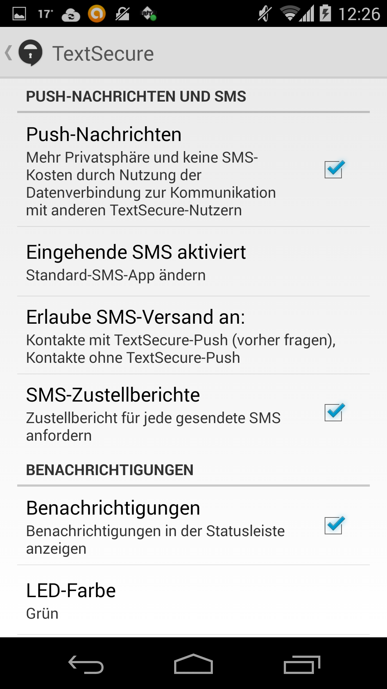
Abbildung 48: TextSecure: Einstellungen
un muss man noch ein wenig warten, denn die folgenden Schritte
werden automatisch und ohne Benutzereingriff von der App und dem
TextSecure-Server durchgeführt:
Die
App auf dem Smartphone erzeugt einen neuen Schlüsselbund.
Sie
generiert ein Schlüsselpaar aus öffentlichem und privatem
Schlüssel und legt diese im Schlüsselbund ab.
Sie
überträgt die Mobilrufnummer zum TextSecure-Server.
Der
TextSecure-Server
sendet eine Bestätigungsnachricht an das Smartphone.
Die
App auf dem Smartphone empfängt die Bestätigungsnachricht.
Diese
bestätigt den Empfang dieser Nachricht wieder an den Server und
sendet dabei den öffentlichen Schlüssel mit.
Nun
kann der Server sicher sein, dass die Rufnummer zu dem neuen Gerät
gehört und registriert die Rufnummer, die Geräte-Kennung und den
zugehörigen öffentlichen Schlüssel.
Nach der
kurzen Wartezeit ist die Einrichtung abgeschlossen und man kann
loslegen.
13.2.4.2 Nachrichten-Versand
Kommuniziert
man das erste Mal mit einem Partner, dessen Nummer ebenfalls bei
TextSecure registriert
ist, dann wird man von der App gefragt, ob man mit diesem Partner
verschlüsselte Nachrichten austauschen will. Bestätigt man dies,
dann erhält man automatisch den öffentlichen Schlüssel des
Partners und der Partner erhält den eigenen öffentlichen Schlüssel
vom TextSecure-Server.
Der öffentliche Schlüssel des Kommunikationspartners wird in den
Schlüsselbund „eingehängt“.
TextSecure
unterstützt verschlüsselte Push-Nachrichten (über das Internet)
und unverschlüsselte SMS über das Sprachnetz. (In einer alten
Version wurden auch verschlüsselte SMS unterstützt.)
Verschlüsselte
Push-Nachrichten
funktionieren nur bei bestehender Internetverbindung.
Diese werden verwendet, wenn der Empfänger der Nachricht ebenfalls
bei TextSecure
registriert ist und eine Internetverbindung besteht.
Push-Nachrichten erscheinen nicht auf der SMS-Rechnung.
Die
verschlüsselte Nachricht wird zunächst vom Absender-Gerät zum
Server des Nachrichten-Dienstes TextSecure
übertragen. Hat der Empfänger keine Internetverbindung, muss
dieser die Nachricht zwischenspeichern. Ist der Empfänger wieder
erreichbar, wird die Nachricht übertragen (gepusht) und nach
erfolgreicher Übertragung vom Server gelöscht. Verschlüsselte
Nachrichten sind für den Provider nur Datenmüll. Sie zu speichern,
bringt ihm keinen Nutzen (wg. Zero Knowledge).
Normale,
unverschlüsselte SMS
über das Sprachnetz
werden verwendet, wenn der Empfänger nicht bei TextSecure
registriert ist. Diese sind als SMS kostenpflichtig bzw. in der
SMS-Flat enthalten. TextSecure
benimmt sich dann wie eine normale SMS-App und kann auf diesem Wege
auch alle Benutzer erreichen, die nicht bei TextSecure
registriert sind.
13.2.4.3 Das
Passwort
Das bei
der Einrichtung vergebene Passwort wird nicht zur
Nachrichtenverschlüsselung verwendet. Diese funktioniert ganz
unabhängig vom Passwort mit dem öffentlichen und privaten
Schlüssel.
Das
Passwort dient nur der verschlüsselten Speicherung der Nachrichten
auf dem Smartphone. Das Passwort ist optional. Ohne Passwort werden
die Nachrichten unverschlüsselt auf dem Gerät gespeichert. Deshalb
kann man bei der Ersteinrichtung das Passwort leer lassen oder man
kann es nachträglich löschen, ohne damit die verschlüsselte
Übertragung von Push-Nachrichten zu gefährden.
13.2.4.4 Gerätewechsel
Will
man seine SIM-Karte in einem anderen Gerät verwenden, dann sollte
man die SIM-Karte nicht einfach aus dem alten Gerät herausnehmen und
in das neue einstecken. Man sollte sich zuerst auf dem alten Gerät
von TextSecure
abmelden und dann auf dem neuen Gerät wieder registrieren. Dazu
verfährt man folgendermaßen:
Auf
dem alten Smartphone
in den TextSecure-Einstellungen
die Push-Nachrichten
deaktivieren. Dadurch
wird auch die Registrierung auf dem TextSecure-Server
für die Rufnummer und der öffentliche Schlüssel für das alte
Gerät zurückgenommen.
Das
alte Gerät ausschalten und die SIM-Karte entnehmen
Die
SIM-Karte ins neue Gerät stecken und dieses einschalten
Auf
dem neuen Gerät
TextSecure
installieren und einrichten (siehe Kap. 13.2.4.1). Wurde TextSecure
schon früher installiert und eingerichtet, dann sind die
Push-Nachrichten
in den Einstellungen zu aktivieren.
Dadurch wird die Rufnummer und der öffentliche Schlüssel für das
neue Gerät auf dem TextSecure-Server
registriert.
Die
Einrichtung ist abgeschlossen und verschlüsselte Push-Nachrichten
können nun versendet werden.
13.3 Abhörsichere Telefonate mit RedPhone
Die RedPhone ist eine
Telefonie-App für Android. Sie erlaubt verschlüsselte und damit
abhörsichere
Telefonate:
https://play.google.com/store/apps/details?id=org.thoughtcrime.redphone
.
Die App stammt ebenfalls von Moxie
Marlinspike von Open Whispersystems (https://whispersystems.org/).
Sie funktioniert ähnlich wie
TextSecure und ist auch völlig analog einzurichten.
Die App ist nur für
Android-Smartphones verfügbar. iPhone-Nutzer können die App Signal
vom selben Hersteller verwenden.
Verschlüsselte Telefonie ist nach
meiner Erfahrung allerdings nur sinnvoll nutzbar, wenn man eine
schnelle Verbindung ins Internet hat.
Weitere Hilfe zu RedPhone
findet sich im Support Center von Open Whispersystems unter
http://support.whispersystems.org/
.
13.4 Groupware-Dienste: Kontakte, Kalender und Aufgaben in der Cloud
Groupware-Dienste sind Dienste, die
Kontakte Kalender, Aufgabenliste zentral in der Cloud speichern.
Diese Daten werden automatisch zwischen verschiedenen Geräten
synchronisiert. Fügt man einen neuen Kontakt auf dem Smartphone
hinzu, so erscheint dieser kurz darauf automatisch in der
Kontaktliste des PC. Oder man ändert die Angaben zu einem Termin auf
dem PC, so sind diese Änderungen wenig später auch auf dem Tablet
zu finden.
Bei Groupware-Diensten ist mir kein
Angebot bekannt, das die Zero Knowledge Anforderung erfüllt. Das
liegt unter Anderem daran, dass die Anbieter diese Daten dem
angemeldeten Benutzer auch im Browser anzeigen wollen. Dies
funktioniert genau so wenig wie der Webzugriff auf verschlüsselte
Mails (siehe Kap. 8.1). Um so wichtiger ist hier die Wahl eines
zuverlässigen Groupware-Providers.
13.4.1 Groupware-Dienste beim Email-Provider in Anspruch nehmen
Die meisten Email-Provider bieten
auch Groupware-Dienste an. So hat man mit der Wahl des
Email-Providers (siehe Kap. Error: Reference source not found) meist
auch schon seinen Provider für die zentrale Ablage von Kontakten,
Kalendern und Aufgabenlisten gefunden.
Der Zugriff auf Kalender, Kontakte
und Aufgabenlisten ist – ähnlich wie bei der Email – mit dem
Webbrowser möglich. Man ruft die URL des Providers auf, man meldet
sich mit Benutzernamen und Passwort an, danach hat man Zugriff auf
die Mails (nur unverschlüsselte), auf die Kontaktliste, auf den
Kalender und auf die Aufgabenlisten. Das Zugriffsprotokoll ist in
diesem Fall HTTPS.
Dieser Zugriffsweg ist jedoch nicht
ausreichend. In der Regel möchte man nicht mit dem Browser auf die
Mails zugreifen, sondern mit einem spezialisierten Email-Client wie
Outlook oder Thunderbird,
bzw. mit MailDroid auf
dem mobilen Gerät. Analog verwendet man auch auf dem PC oder dem
Smartphone für die Verwaltung der Kontaktdaten, des Termine und
Aufgaben je einen spezialisieren Client.
Wie
wir wissen (siehe Kap. 3.6) ist IMAP das Protokoll für den den
Zugriff auf den Mail-Bestand. Das Standard-Protokoll für den Zugriff
auf die Kontakte ist CardDAV.
Zum Zugriff auf Kalender und Aufgabenlisten wird standardmäßig
CalDAV
verwendet.
13.4.2 Zugriffsprotokolle CardDAV und CalDAV
Das
Basisprotokoll für diese beiden Protokolle ist WebDAV
(Web
Distributed
Authoring
and Versioning).
Dieses ist eine HTTP-Erweiterung.
Das
CardDAV-Protokoll
(Card
Distributed
Authoring
and Versioning)
ist eine WebDAV-Spezialisierung zur Verwaltung zentral gespeicherter
Kontakt-Daten. (Ein Kontakt wird in einer einzeln vCard gespeichert,
daher kommt die Protokollbezeichnung CardDAV.)
Das
CalDAV-Protokoll
(Calendaring
Extensions to WebDAV)
ist eine WebDAV-Spezialisierung zur Verwaltung zentral gespeicherter
Kalenderdaten. Da eine einzelne Aufgabe einem Termin – technisch
gesehen – recht ähnlich ist, unterstützt dieses Protokoll auch
Aufgabenlisten. (Eine Aufgabe ist gewissermaßen ein Termin ohne
Datum.)
Ich gehe
auf diese Protokolle an dieser Stelle nicht näher ein, sondern
verweise den Interessierten nur auf folgende Links im Netz:
Für die
erforderlichen Konfigurationsschritte ist ein tieferes Verständnis
dieser Protokolle nicht erforderlich.
Was
braucht man nun, um auf das Adressbuch oder den Kalender (oder die
Aufgabenlisten) nicht mit dem Browser sondern mit einem
spezialisierten Programm (Kalenderprogramm bzw. Adressbuch)
zuzugreifen, sodass man mit dem lokalen Programm auf die Einträge
(Kontakte, Termin, Aufgaben) zugreifen und sie anlegen, ändern,
löschen und anzeigen kann? Grundsätzlich benötigt man ...
13.4.3 Groupware-Dienste auf dem PC
mit Thunderbird
13.4.3.1 Zentrales
Adressbuch
Um
das beim Provider gespeicherte zentrale Adressbuch in Thunderbird
verfügbar zu machen, ist das Add-on Sogo Connector
zu installieren (analog zur Installation von Enigmail,
siehe Kap. 7.1.1). Dies ist ein Treiber für die Protokolle CardDAV
und für CalDAV. Ein separates Adressbuch-Programm ist nicht
erforderlich, denn Thunderbird
kann nicht nur Emails, sondern auch Adressbücher verwalten.
Der
Sogo Connector
versetzt Thunderbird
in die Lage, auf CardDAV-Adressbücher an einer bestimmten Adresse
zuzugreifen. Um den CardDAV-Zugriff zu konfigurieren, benötigt man
folgende Zugangsdaten:
CardDAV-URL:
Als Adresse dient eine HTTPS-Url, die man bei seinem Provider in
Erfahrung bringen muss. Meist wird man auf den Hilfeseiten des
Providers fündig und findet dort die Adresse bzw. das Adressschema.
Bei mailbox.org ist
dies z. B. https://dav.mailbox.org/carddav/XXX
(XXX
= Ihre Ordner-ID). Dies kann jedoch bei jedem Provider etwas anders
aussehen.
Benutzername
zur Anmeldung beim Provider
Passwort
zur Anmeldung
Mit
diesen Informationen kann man in Thunderbird
ein neues Adressbuch anlegen. Dazu verfährt man folgendermaßen:
Unter
dem Menüpunkt Fenster → Adressbuch
die Adressbuch-Verwaltung öffnen
U
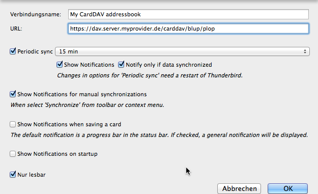
Abbildung 49: Thunderbird: Ein Remote-Adressbuch erstellen
nter Datei → Neu → Remote-Adressbuch öffnet sich
ein Dialog, in dem die oben aufgeführte CardDAV-URL für ein neues
Adressbuch einzutragen ist. Dabei ist die Option „Nur lesbar“
zu setzen.
Beim
Klick auf „OK“
wird das Adressbuch erstellt. Vor der ersten Synchronisation
erscheint ein Fenster zur Eingabe der Anmeldedaten.
Die
Synchronisation startet und die auf dem Server gespeicherte
Kontaktliste wird in Thunderbird sichtbar.
Der
Zugriff auf Remote-Adressbücher ist leider instabil, sodass Adressen
manchmal verstümmelt werden. Aus diesem Grund empfehle ich, nur
lesenden Zugriff auf das entfernte Adressbuch zu erlauben. Als
Vorsorge gegen Adressverluste sollte das Adressbuch in regelmäßigen
Abständen gesichert/exportiert werden.
Bei
mehreren Kontaktlisten ist dieser Vorgang für jede Liste zu
wiederholen.
13.4.3.2 Zentraler
Kalender
Um
den beim Provider gespeicherten zentralen Kalender in Thunderbird
verfügbar zu machen, sind die Add-ons Sogo Connector
und Lightning
zu installieren (analog zur Installation von Enigmail,
siehe Kap. 7.1.1). Sogo Connector
ist ein Treiber für die Protokolle CardDAV und für CalDAV.
Lightning erweitert
Thunderbird um die
Kalenderfunktionen. (Seit der Thunderbird-Version
38.0.1 ist das Add-on Lightning
in der Thunderbird-Distribution
enthalten und muss nicht mehr nachinstalliert werden.)
Der
Sogo Connector
versetzt Thunderbird
in die Lage, über das CalDAV-Protokoll auf einen Kalender an einer
bestimmten Adresse zuzugreifen. Um den CalDAV-Zugriff zu
konfigurieren, benötigt man folgende Zugangsdaten:
CalDAV-URL:
Als Adresse dient eine HTTPS-URL, die man bei seinem Provider in
Erfahrung bringen muss. Meist wird man auf den Hilfeseiten des
Providers fündig und findet dort die Adresse bzw. das Adressschema.
Bei mailbox.org ist
dies z. B. https://dav.mailbox.org/caldav/XXX
(XXX
= Ihre Ordner-ID). Dies kann jedoch bei jedem Provider anders
aussehen.
Benutzername
zur Anmeldung beim Provider
Passwort
zur Anmeldung
Mit
diesen Informationen kann man in Thunderbird
einen neuen Kalender anlegen. Dazu verfährt man folgendermaßen:
U
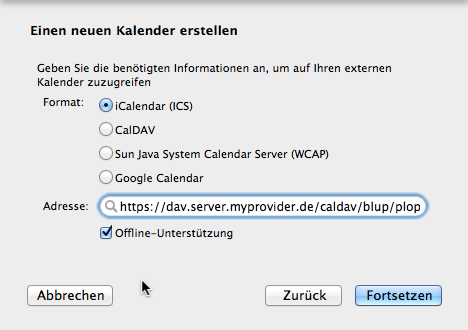
Abbildung 50: Thunderbird: Einen Netzwerk-Kalender erstellen
nter dem Menüpunkt Termine und Aufgaben → Kalender
die Kalender-Verwaltung öffnen
Unter
Datei → Neu → Kalender
öffnet sich ein Dialog, in dem man zwischen einem lokalen und einem
Netzwerk-Kalender auswählen kann.
Man
wählt „Netzwerk-Kalender“
und klickt auf „Fortsetzen“.
Ein weiterer Dialog verlangt die Auswahl des Kalender-Formats und
die Kalender-URL. Man wählt das Format „CalDAV“, gibt die oben
aufgeführte CalDAV-URL für den neuen Kalender ein.
Beim
Klick auf „Fortsetzen“
öffnet sich ein weiterer Dialog, in dem man den Namen des
Kalenders, seine Farbe und die Email-Adresse des Accounts erfasst.
Beim
Klick auf „Fortsetzen“
wird der Kalender erstellt. Vor der ersten Synchronisation erscheint
ein Fenster zur Eingabe der Anmeldedaten.
Die
Synchronisation startet und der auf dem Server gespeicherte Kalender
wird in Thunderbird sichtbar.
Bei
mehreren Kalendern ist dieser Vorgang für jeden zu wiederholen.
13.4.3.3 Zentrale
Aufgabenlisten
Da eine
Aufgabe (technisch gesehen) nur ein Termin ohne Datum ist, ist eine
Aufgabenliste nur eine besondere Art von Kalender. Deshalb kommt hier
ebenfalls das CalDAV-Protokoll zur Anwendung. Die Konfiguration
funktioniert exakt wie die im vorigen Kapitel beschriebene
Kalender-Konfiguration. Statt der CalDAV-URL eines Kalenders gibt man
die CalDAV-URL einer Aufgabenliste an.
Bei
mehreren Aufgabenlisten ist dieser Vorgang für jede Liste zu
wiederholen.
13.4.4 Groupware-Dienste auf
dem Android-Gerät
13.4.4.1 Zentrales Adressbuch
Um
eine beim Provider gehostete Kontaktliste auf dem Android-Gerät
verfügbar zu machen, benötigt man eine Kalender-App und einen
CardDAV-Protokolltreiber. Auch der Protokolltreiber ist unter Android
eine App, in der man (analog zum Sogo Connector
in Thunderbird) die
Zugriffseinstellungen vornehmen kann.
Android hat mehrere Kontakte-Apps im
Play Store Angebot. Di
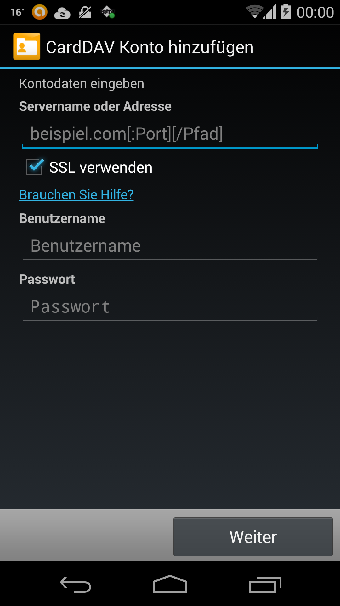
Abbildung 51: CardDAV-Sync: Neues CardDAV-Konto erstellen
e vorinstallierte Kontakte-App von Google erfüllt
ihren Zweck.
Auch
bei den CardDAV-Protokolltreiber-Apps stehen mehrere zur Auswahl. Auf
meinen Android-Geräten ist CardDAV-Sync
von Marten Gadja im Einsatz. Ich nutze die App seit
Monaten.
https://play.google.com/store/apps/details?id=org.dmfs.carddav.Sync
Hier
die Schritte zur Installation von CardDAV-Sync und
zur Erstellung eines neuen CardDAV-Kontos:
die
App auf dem Android-Gerät installieren
die
App starten
ein
neues CardDAV-Konto anlegen und die Zugangsdaten eingeben:
eines
der auf dem Server verfügbaren Adressbücher auswählen.
einen
Namen für das neue CardDAV-Konto vergeben
Nach der
Erstellung des neuen Kontos ist die Kontakte-App zu starten. Bei
mehreren auf dem Gerät verfügbaren Konten kann man hier das Konto
auswählen, das die in der App anzuzeigenden Kontakte bereitstellen
soll.
13.4.4.2 Zentraler Kalender
Um
einen beim Provider gehosteten Kalender auf dem Android-Gerät
verfügbar zu machen, benötigt man eine Kalender-App und einen
CalDAV-Protokolltreiber. Auch der Protokolltreiber ist eine App, in
der man (analog zum Sogo Connector
in Thunderbird) die
Zugriffseinstellungen vornehmen kann.
Android
hat eine große Auswahl an Kontakte-Apps im Play Store Angebot. Die
vorinstallierte Kalender-App
von Google erfüllt den Zweck genauso. Sehr gerne nutze ich auch die
App aCalendar
von Tapir Apps
GmbH:
https://play.google.com/store/apps/details?id=org.withouthat.acalendar
Auch
bei den CalDAV-Protokolltreiber-Apps stehen mehrere zur Auswahl. Auf
meinen Android-Geräten ist CalDAV-Sync
von Marten Gadja im
Einsatz:
https://play.google.com/store/apps/details?id=org.dmfs.caldav.lib
Völlig
analog zur CardDAV-Konfiguration sind die Schritte zur Installation
von CalDAV-Sync und
zur Erstellung eines neuen CalDAV-Kontos:
die
App starten
ein
neues CalDAV-Konto anlegen und die Zugangsdaten eingeben:
Nun
wird die Liste der auf dem Server verfügbaren Kalender und
Aufgabenlisten angezeigt. Diejenigen, die auf dem Android-Gerät
bereitstehen sollen, sind (durch das Setzen eines Hakens)
auszuwählen.
einen
Namen für das neue CalDAV-Konto vergeben
Nach der
Erstellung des neuen Kontos ist die Kalender-App zu starten. Bei
mehreren auf dem Gerät verfügbaren Kalender-Konten kann man hier
die Kalender auswählen, die die in der App anzuzeigenden
Kalenderdaten bereitstehen sollen.
13.4.4.3 Zentrale Aufgabenlisten
Eine
Aufgabenliste nur eine besondere Art von Kalender. Mit der oben
beschrieben CalDAV-Konfiguration ist das Konto für die
Aufgabenlisten bereits konfiguriert.
Nun
benötigt man noch eine App zur Anzeige und Bearbeitung der
Aufgabenlisten. Auch hier gibt es wieder eine reichhaltige Auswahl im
Google Play Store. Auf meinen Android-Geräten kommt die App Tasks
von Marten Gadja zum
Einsatz:
https://play.google.com/store/apps/details?id=org.dmfs.tasks
Bei
der Erstellung des CalDAV-Kontos hat man schon die Aufgabenlisten,
die auf dem Gerät bereitstehen sollen, konfiguriert. In der
Aufgaben-App Tasks
kann man davon die Aufgabenlisten auswählen, die in der App
angezeigt werden sollen.
13.4.5 CardDAV und CalDAV mit anderen Programmen und
Betriebssystemen
In den
vorangehenden Kapiteln habe ich gezeigt, wie man CardDAV und CalDAV
mit Thunderbird nutzt. Dies funktioniert auf den gängigen
PC-Betriebssystemen Windows, Mac OS X und Linux. Ich habe auch
gezeigt, wie man diese Protokolle auf dem Android-Smartphone oder
Tablet einrichten kann.
Für
beide Protokolle gibt es Clients für andere Systeme oder Programme.
Neben Erweiterungen für Outlook
gibt es die passenden Clients für iOS und für Windows Phone.
Eine
Übersicht über die verfügbaren CardDAV-Clients ist hier zu
finden:
http://carddav.calconnect.org/implementations/clients.html
Eine
Übersicht über die verfügbaren CalDAV-Clients ist hier zu
finden:
http://caldav.calconnect.org/implementations/clients.html
13.5 Cloud Storage
Cloud Storage – Dateien
und Ordner über die Cloud synchronisieren und damit auf allen
Geräten denselben Datenbestand zur Verfügung zu haben – dafür
steht der Name Dropbox.
Dropbox hat diese Art
Dienst salonfähig gemacht und gilt als Referenz für
Online-Speicher-Dienste.
13.5.1 Viele Cloud Storage Anbieter
Doch
es gibt unzählige weitere Anbieter, die Cloud Storage anbieten. Alle
großen Internetkonzerne bieten neben vielen anderen Diensten auch
die Speicher-Dienste an: Amazon Cloud Drive,
Apple iCloud, Google
Drive, Microsoft
OneDrive. Andere sind
spezialisierte Cloud Speicher Dienste: Bitcasa,
Box, Dropbox,
MediaFire, Mega,
SugarSync und viele
weitere. Viele Mail-Provider bieten ebenfalls Online-Festplatten (so
wird diese Dienstart im Deutschen auch gerne bezeichnet): GMX,
WEB.DE, 1&1,
freenet, MyKolab,
mail.de, mailbox.org
– eine kleine Aufzählung ohne Anspruch auf Vollständigkeit.
Selbstverständlich sind auch die Telekommunikationsanbieter mit von
der Partie: Telekom,
Vodaphone und O2,
um die großen deutschen Anbieter zu nennen, haben Online-Speicher im
Angebot.
Einen
Vergleich der Cloud Storage Anbieter ist auf folgenden
Wikipedia-Seiten zu finden:
Diese
Liste ist sehr umfangreich und kann doch nur unvollständig sein.
Viele (insbesondere nationale) Mail- und Telekom-Provider sind auf
der Liste nicht aufgeführt.
13.5.2 Funktionsweise der Synchronisation
Damit die
automatische Synchronisation der Ordner und Dateien funktioniert, ist
ein Synchronisations-Client auf dem Rechner bzw. auf dem mobilen
Gerät zu installieren. Nach der Installation wird der Client mit den
Zugangsdaten (Benutzername und Passwort) beim Cloud Storage Server
angemeldet. Er erhält damit Zugriff auf die Ordner und Dateien auf
dem Server. Danach überwacht der Client ständig die Dateistruktur
auf dem Client und dem Server und gleicht sie aneinander an. Gibt es
eine Änderung (Hinzufügung, Löschung, Umbenennung oder
Modifikation einer Datei oder eines Ordners) auf dem Server, so wird
die Änderung sofort auf dem lokalen System nachgezogen (wenn eine
Internetverbindung besteht). Umgekehrt werden Änderungen auf dem
Client sofort auf dem Server nachgezogen.
Prototypisch
möchte ich hier die Installation und Anwendung von Dropbox
beschreiben: Man lädt den Dropbox-Client
von der Website von Dropbox
( https://www.dropbox.com/
) herunter, man installiert den Client auf dem PC und startet ihn.
Man gibt seine Dropbox-Zugangsdaten
ein und gibt noch an, welche Ordner synchronisiert werden sollen.
Standardmäßig wird im Benutzerordner ein Unterordner Dropbox
angelegt, der dann synchronisiert wird.
Nun
muss man sich um nichts mehr kümmern. Alles was man in den
Dropbox-Ordner wirft,
wird automatisch synchronisiert. Auch der Neustart des Rechners ist
kein Problem. Nach dem Hochfahren und der Benutzeranmeldung wird der
Dropbox-Client
automatisch gestartet, er meldet sich automatisch wieder beim
Dropbox-Server an (das
Passwort merkt er sich; man muss es nicht jedes Mal erneut eingeben).
Der Client überwacht permanent die Daten auf dem Server und den
lokalen Dropbox-Ordner
sowie alle seine Unterordner auf Änderungen und hält sie synchron.
Unter
Android installiert man die Dropbox-App
aus dem Google Play Store (
https://play.google.com/store/apps/details?id=com.dropbox.android
). Nach der Anmeldung mit den Dropbox-Zugangsdaten
beginnt die Synchronisation und stellt die Dateien in der Dropbox-App
zur Verfügung.
Dropbox
bei Wikipedia: http://de.wikipedia.org/wiki/Dropbox
und http://en.wikipedia.org/wiki/Dropbox_(service)
Dropbox
ist nur der prominenteste Vertreter dieser Gattung. Alle anderen
Cloud Speicher Dienste funktionieren im Prinzip genau so.
13.5.3 Weitere Merkmale der Cloud Storage Dienste
Synchronisation
von Ordnern und Dateien, dies ist das zentrale Cloud Storage Feature,
das alle Provider anbieten. Doch gibt es weitere Merkmale, in denen
sie sich teilweise unterscheiden und die auch für die
Provider-Auswahl ausschlaggebend sein können.
Unterstützung
für verschiedene Betriebssysteme. Z.B. stellen nicht alle Anbieter
auch einen Synchronisations-Client für Linux zur Verfügung.
So
gibt es für Google Drive
keinen offiziellen Linux Sync-Client von Google. Linux-Nutzer, die
dennoch ihre Dateien über Google Drive
synchronisieren wollen, finden eine Alternative in dem Client von
insync (
https://www.insynchq.com/
).
Sharing
von Ordnern und Dateien zwischen verschiedenen Benutzern
Öffentliche
Ordner
Foto-Ordner,
die im Browser als Fotogalerie angezeigt werden
Datei-Versionierung:
erlaubt die Wiederherstellung gelöschter Dateien oder alter
Dateiversionen
Eignung
für Online-Backup
Zwei-Faktor-Authentifizierung:
Zusätzlich zu Benutzername und Passwort muss man bei der Anmeldung
ein weiteres Secret (z.B. ein per SMS zugestelltes Einmalpasswort)
angeben. Dadurch kann der Account nicht so leicht von anderen
gekapert werden.
Ende-zu-Ende-Verschlüsselung
Alle
bieten ihren Dienst mit einem kostenlosen Freispeicher-Angebot
zwischen zwei und 50 GB. Wer mehr Speicher braucht, kann diesen im
monatlichen oder jährlichen Abo erwerben. Z.B. sind bei Dropbox
(Stand Oktober 2014) 1000 GB für monatlich 10,- € erhältlich.
Andere Anbieter sind noch günstiger.
Mittlerweile
haben auch viele andere Anwendungen eine Schnittstelle für
Cloud-Dienste. Hier hat meistens Dropbox gegenüber anderen
Anbietern die Nase vorn.
Beispiele:
Thunderbird
kann (wenn das Add-on Dropbox for Filelink
installiert ist) große Anhänge automatisch in die Dropbox
stellen und dann den Link auf die Datei in die Mail einbetten,
anstatt sie wirklich als Mail-Anhang mitzusenden. Der Empfänger
der Mail klickt auf den Dropbox-Link
und kann dann mit dem Browser auf den Anhang zugreifen.
Manche
Passwort-Manager synchronisieren verschlüsselte Passwort-Container
über die Cloud. Dabei wird die Dropbox-Unterstützung
immer als erstes eingebaut.
Auch
manche Online-Banking-Programme legen die Bankdaten und
Kontoumsätze in einem verschlüsselten Datentresor ab und
synchronisieren diesen über die Cloud, meist ist es die
Dropbox-Cloud.
13.5.4 Sicherheitsfragen und
-antworten
Transport-Verschlüsselung
ist heute kein außergewöhnliches Feature mehr, durch das sich ein
Provider hervorheben kann. Doch damit sind die Daten nur
verschlüsselt, solange sie durch das Internet reisen. Auf dem Server
des Providers liegen die Daten dennoch unverschlüsselt. Damit haben
außer dem Provider auch Hacker, die dort eindringen, und staatliche
Stellen, die ihre Herausgabe erzwingen, darauf Zugriff.
Tatsächlich
behaupten viele Provider, dass sie die Daten auch auf ihren Servern
verschlüsseln. Allerdings liegen die Schlüssel ebenfalls auf den
Servern der Provider. Dies ist nur ein kleiner Sicherheitsgewinn, da
der Provider auch die Schlüssel dazu hat. Ein Datendieb muss dann
nicht nur die Daten stehlen sondern auch noch die Schlüssel. Die
Hürde für den Hacker oder die NSA ist ein wenig höher, jedoch
keineswegs unüberwindbar. Das Problem dabei ist, dass der Schlüssel
nicht vom Anwender kontrolliert wird.
Gegen
die Kompromittierung meiner Daten ist – wie auch bei anderen
Anwendungen – nur ein Kraut gewachsen: Zero
Knowledge alias
Ende-zu-Ende-Verschlüsselung.
Was der Provider nicht kennt, das kann ihm auch nicht gestohlen oder
durch Zwang abgepresst werden. Die Daten müssen auf meinem Gerät
(PC, Tablet oder Smartphone) verschlüsselt werden, bevor sie dieses
verlassen, und sie werden auch nur auf meinen Geräten wieder
entschlüsselt. Der Schlüssel dazu muss immer auf meinen Geräten
verbleiben und darf niemals auf den Server des Providers wandern.
Dies
ist technisch nicht ganz richtig. Der Schlüssel wird sehr wohl auf
den Server des Providers übertragen. Allerdings wird auch der
Schlüssel zuvor mit meinem Passwort verschlüsselt und kann dann
auch nur mit meinem Passwort wieder entschlüsselt werden. So kann
auch der verschlüsselte Schlüssel über die Cloud zwischen den
Geräten synchronisiert werden. Will ich auf meinen Geräten auf die
Daten zugreifen, so muss ich zunächst das Passwort eingeben, um den
Schlüssel zu entschlüsseln. Danach erst ist der Schlüssel nutzbar,
sodass die Ordner und Dateien entschlüsselt werden.
Es gibt
zwei Strategien, die Ende-zu-Ende-Verschlüsselung zu realisieren:
Man
wählt einen sicheren Provider, der Ende-zu-Ende-Verschlüsselung
anbietet (siehe Kap. 13.5.4.1).
Man
wählt einen unsicheren Anbieter und verschlüsselt die Dateien mit
einem zusätzlichen Verschlüsselungsprogramm (siehe Kap. 13.5.4.2).
13.5.4.1 Cloud-Speicher mit Ende-zu-Ende-Verschlüsselung
In diesem Kapitel stelle kurz die mir
bekannten Provider vor, die Ende-zu-Ende-Verschlüsselung anbieten.
Ein weiteres Auswahlkriterium ist, dass der betreffende Dienst die
wichtigsten PC- und Mobil-Betriebssysteme unterstützt: Windows, Mac
OSX, Linux, Android und iOS. Manche Dienste haben keinen
Synchronisations-Client für Linux im Angebot.
Eine Information will ich noch
vorausschicken. Die Entscheidung für einen Provider schließt den
anderen nicht aus. Es ist kein Problem, mehrere Cloud Storage Dienste
auf demselben System zu installieren und zu nutzen. Ich hatte schon
bis zu acht Dienste parallel installiert und mein System hatte damit
keine Schwierigkeiten.
Bitcasa:
ist ein sehr ausgereifter und benutzerfreundlicher Dienst. Dieser
Dienst ist wohl der einfachste Einstieg in verschlüsselten Cloud
Speicher für Privatnutzer.
Ende-zu-Ende-Verschlüsselung:
ja
Unterstützte Betriebssysteme:
Windows, Mac OS X, Linux, Android, iOS, Windows Phone, FirefoxOS
Freispeicher: 5 GB (Weitere 15
GB können durch Empfehlungen erworben werden)
Datei-Versionierung:
ja
Open Source: nein
Website: https://bitcasa.com/
Wikipedia:
http://en.wikipedia.org/wiki/Bitcasa
MegaSync: ist das
Angebot von Kim Dotcom aus Neu Seeland. Der Dienst sticht durch sein
großes Freispeicher-Angebot heraus. Er ist im Datei-Manager und im
Browser komfortabel zu benutzen. Der Dienst bietet bislang
allerdings noch keine Datei-Versionierung,
mit der sich alte Dateiversionen wieder herstellen lassen. Außerdem
gibt es für den kostenlosen Account eine Bandbreitenbegrenzung, die
sich vermutlich erst bei häufiger Nutzung oder bei großen Up- und
Downloads bemerkbar machen dürfte. (Bei einem kleinen Speed-Test
habe ich 300 Fotos (1,4 GB) in ca. 30 Minuten hochgeladen. Für die
normale Privatnutzung dürfte dies ausreichend sein.)
(Kim
Dotcom steht übrigens in den USA wegen Urheberrechtsverletzungen
unter Anklage. Er soll auf seiner mittlerweile geschlossenen
Plattform Megaploud urheberrechtlich geschütztes Material zum
illegalen Download zur Verfügung gestellt haben. Die USA hat einen
Auslieferungsantrag an Neu Seeland gestellt, der aktuell (im Sommer
2015) noch nicht entschieden ist.)
SpiderOak: ist
primär ein Online-Backup-Dienst als ein Synchronisationsdienst. Er
ist nicht sehr intuitiv zu bedienen und richtet sich mehr an
kommerzielle Benutzer als an Privatkunden. Ein Teil des Quelltextes
ist Open Source. Edward Snowden hat in einem Interview SpiderOak
als sichere Alternative zu Dropbox und vielen anderen
Speicher-Diensten hervorgehoben.
TeamDrive: ist
eine deutscher Anbieter aus Hamburg. Er richtet sich ebenfalls mehr
an kommerzielle als an Privatkunden. Außer zur Synchronisation
eignet sich TeamDrive besonders auch für das Online-Backup.
SpiderOak und TeamDrive
sind nicht ganz so komfortabel zu benutzen. Bei diesen Diensten steht
die Backup-Funktion im Vordergrund. Sie richten sich eher an
professionelle Kunden. Dem Privatkunden, der einen kostenlosen
Account sucht, bieten sie nur 2 GB Freispeicher.
Bitcasa und MegaSync
sind für die private Nutzung zu empfehlen. Sie bieten ausreichend
Freispeicher (Bitcasa 5 GB, MegaSync 50 GB) und sind
komfortabel zu bedienen. Ich empfehle, beide Dienste parallel zu
installieren und einfach auszuprobieren. Bei MegaSync
kann man dank des reichlich bemessenen Speicherplatzes auch mal ein
paar Videos hochladen, ohne dass der Speicherplatz gleich
ausgeschöpft ist.
Dass der Schlüssel nicht auf die
Server des Providers übertragen wird sondern auf meinen Geräten
verbleibt, lässt sich bei Bitcasa, MegaSync und
TeamDrive nicht überprüfen. Damit bleibt die
Ende-zu-Ende-Verschlüsselung bzw. Zero Knowledge eine Behauptung des
Providers, der man vertrauen muss. Überprüfen lässt sie sich
nicht.
Nur SpiderOak legt den
Quellcode der Verschlüsselungssoftware offen (Open Source). Der
Dienst wurde deshalb von Edward Snowden in einem Interview
ausdrücklich als vertrauenswürdige Dropbox-Alternative
empfohlen.
13.5.4.2 Unverschlüsselter Cloud-Speicher + Verschlüsselungsprogramm
Bei dieser Lösungsvariante wählt
man einen unsicheren Cloud Storage Anbieter wie Dropbox oder
Google Drive. Ein Unterordner des Cloud Storage Hauptordners
(und alle Dateien und Ordner, die darunter liegen) wird mit einem
zusätzlichen Verschlüsselungsprogramm verschlüsselt.
Das komfortabelste
Verschlüsselungsprogramm für diesen Zweck, das zurzeit auf dem
Markt verfügbar ist, ist sicherlich Boxcryptor (
https://www.boxcryptor.com/
und http://de.wikipedia.org/wiki/BoxCryptor
). Auf Alternativen zu Boxcryptor werde ich an dieser Stelle
nicht eingehen.
Boxcryptor wird in zwei
Varianten angeboten: Boxcryptor 2 und Boxcryptor Classic.
Von beiden Varianten gibt es je eine kostenlose Version, die
allerdings keine Verschlüsselung von Dateinamen bietet. Da manchmal
auch die Dateinamen bereits einiges über den Inhalt der Datei
verraten, ist es sinnvoll, auch die Dateinamen zu verschlüsseln.
Damit scheiden die kostenlosen Varianten für mich aus.
Boxcryptor 2 (
https://www.boxcryptor.com/de/preise
) ist die funktionsreichere Variante und wird im Abo-Modell
vermarktet. Für die Unlimited Personal Edition sind aktuell (Okt.
2014) 36,- Euro pro Jahr zu entrichten. Boxcryptor 2
unterstützt alle gängigen Betriebssysteme außer Linux (
https://www.boxcryptor.com/de/download
). Neben Windows, Mac OS X, Android, iOS werden auch Windows Phone
und Blackberry unterstützt. Ein wesentliches Feature von Boxcryptor
2 ist die Unterstützung von Gruppen. Damit lassen sich
verschlüsselte Inhalte zwischen Benutzern derselben Gruppe teilen.
Für kollaborative Umgebungen kann dies wichtig sein, für
Privatnutzer meist nicht.
Boxcryptor Classic
( https://www.boxcryptor.com/de/classic
) dürfte für Privatnutzer ausreichend sein. Diese Variante bietet
neben der Unterstützung von Windows, Mac OS X, Android und iOS auch
Linux-Unterstützung. Nur die kostenpflichtige Variante unterstützt
die Verschlüsselung von Dateinamen. Die Classic Unlimited Personal
Edition kostet aktuell (Okt. 2014) einmalig 35,- Euro.
Boxcryptor ist für alle
gängigen Cloud Storage Provider verfügbar. Die lange Liste der
unterstützen Cloud-Dienste findet sich unter
https://www.boxcryptor.com/de/provider.
Die bekannten großen Anbieter (Dropbox, Google Drive,
Microsoft OneDrive etc.) sind alle dabei. Möglicherweise
funktionieren auch weitere Dienste, die nicht auf der Liste
aufgeführt sind.
In den folgenden Ausführungen werde
ich mich auf Dropbox in Verbindung mit Boxcryptor Classic
(Unlimited Personal Edition) beziehen und gehe davon aus, dass
Dropbox bereits fertig und funktionsfähig auf dem PC (mit
Windows, Mac OS X oder Linux) und auf einem Android-Gerät
(Smartphone und/oder Tablet) eingerichtet wurde. Genau so gut wie
Dropbox lässt sich fast jeder andere Anbieter gemeinsam mit
Boxcryptor verwenden.
Nach der Installation von Boxcryptor
Classic auf dem PC startet man die Anwendung. Bei der Einrichtung
…
wählt man einen Cloud Storage
Provider (oder einen Ordner im Dateisystem). Ich wähle hier
Dropbox, um die
verschlüsselten Dateien mit Dropbox
zu synchronisieren.
Man vergibt den Namen für ein
virtuelles Laufwerk (Vorgabe: Boxcryptor). In diesem
virtuellen Laufwerk wird der verschlüsselte Inhalt dem Benutzer
unverschlüsselt bereitgestellt.
Schließlich vergibt man ein
gutes Passwort (siehe 12.1). Das Passwort dient der Verschlüsselung
des Schlüssels.
Die Anwendung legt unterhalb des
Dropbox-Ordners einen Unterordner an (Vorgabe: Boxcryptor.bc)
an. Unterhalb des Ordners Boxcryptor.bc
sind alle Ordner und Dateien verschlüsselt (siehe Abb. 43). Sie
werden im virtuellen Laufwerk Boxcryptor
unverschlüsselt zur Verfügung gestellt (siehe Abb. 44). Nun kann
man ganze Ordnerstrukturen, die man verschlüsseln will, in das
virtuelle Laufwerk kopieren oder verschieben. Diese werden dann
automatisch von Boxcryptor
verschlüsselt in Dropbox/Boxcryptor.bc
gespeichert und in verschlüsselter Form mit dem Dropbox-Server
und von dort mit den übrigen bei Dropbox
angemeldeten Geräten synchronisiert. Der Schlüssel zur
Verschlüsselung der Ordner und Dateien wird mit dem Passwort
verschlüsselt und dann ebenfalls über Dropbox
synchronisiert.
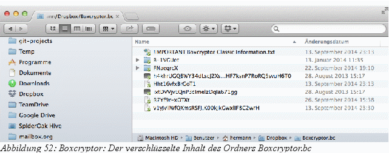
U
Abbildung 53: Boxcryptor: Der entschlüsselte Inhalt des
virtuellen Boxcryptor-Laufwerks
nter Android sieht man in der Dropbox-App nur die
synchronisierten, verschlüsselten Inhalte (siehe Abb. 45, links). Um
diese zu entschlüsseln, ist die App Boxcryptor Classic aus
dem Google Play Store zu installieren (
https://play.google.com/store/apps/details?id=com.boxcryptor.android
). Nach der Installation öffnet man die App, wählt wieder Dropbox
als Synchronisationsdienst aus und gibt das Passwort ein, das man
bereits auf dem PC vergeben hat. Nun kann die App mit dem Passwort
den verschlüsselten Schlüssel, der ebenfalls über die Dropbox
synchronisiert wurde, entschlüsseln. Mit dem Schlüssel werden
die Ordner und Dateien entschlüsselt und sichtbar gemacht. In der
Boxcryptor Classic App stehen diese unverschlüsselt zur
Verfügung und können uneingeschränkt betrachtet und bearbeitet
werden (siehe Abb. 45, rechts).
Mir
persönlich kommt diese Lösung sehr entgegen. So kann ich einerseits
die schutzwürdigen Daten in Boxcryptor
einsperren. Für die übrigen Daten, die ich weniger schutzwürdig
einstufe, steht mir dennoch der gesamte Komfort des Dropbox
Synchronisationsdienstes
zur Verfügung. Welche Daten als schutzwürdig anzusehen sind, mag
jeder selbst entscheiden.
Auch
andere Kombinationen sind denkbar: für die verschlüsselten Daten
Boxcryptor und
Google Drive oder einen anderen
Cloud-Dienst zu nutzen (Google Drive
bietet 15 GB Freispeicher, steht allerdings nicht für Linux zur
Verfügung, es sei denn man verwendet den Sync-Client von insync).
Zusätzlich kann man Dropbox
für die Daten verwenden, die man nicht verschlüsseln will (Dropbox
bietet nur 2 GB Freispeicher, der sich jedoch durch Empfehlungen
erhöhen lässt). Auch andere Synchronisationsdienste
wie Bitcasa und/oder
MegaSync lassen sich
neben Dropbox und
Google Drive p
Abbildung 54: In der Boxcryptor-App stehen die Daten
entschlüsselt zur Verfügung.
arallel installieren und nutzen.A
Abbildung 55: Die Daten sind in der Dropbox-App verschlüsselt.
uch an dieser Stelle möchte ich nochmals
betonen, dass auch Boxcryptor keine Open Source Software ist.
So muss man auch dieser Software vertrauen, dass sie korrekt
verschlüsselt und keine Hintertüren enthält. Überprüfen lässt
es sich nicht.
13.5.5 Meine
Empfehlung für Cloud-Speicher
Wer
mit Cloud-Diensten arbeitet, benötigt fast immer einen
Dropbox-Account.
Mit 2 GB kostenlosem Speicherplatz ist man allerdings ein wenig
eingeschränkt. Der Speicherplatz lässt sich allerdings durch
Empfehlungen erweitern. Dropbox
ist sehr komfortabel zu benutzen und für alle Plattformen verfügbar,
bietet allerdings keine Ende-zu-Ende-Verschlüsselung.
Dropbox
braucht man häufig auch, weil andere Programme ihre Daten über die
Dropbox-Cloud
zwischen verschiedenen Geräten synchronisieren. Manche davon (z.B.
die Passwort-Manager 1Password
und mSecure
(siehe Kap. 12.1.4) oder das Online-Banking-Tool Banking
4
(siehe Kap. 13.6.3)) verschlüsseln die Daten, bevor sie sie in der
Dropbox
speichern. So sind die Daten solcher Anwendungen trotz
unverschlüsselter Cloud geschützt, da sie von den Anwendungen
selbst verschlüsselt werden.
Im
Übrigen kann man die Dropbox
nur für die eigenen Daten verwenden, die nicht verschlüsselt werden
müssen. Will man die Dropbox-Daten
verschlüsseln, dann braucht man zusätzlich Boxcryptor.
Auch
der Austausch von (unverschlüsselten) Daten mit anderen Benutzern
des Dienstes funktioniert nirgends so bequem wie bei Dropbox.
Für
die schutzwürdigen Daten empfehle ich als zweiten Cloud-Provider
Bitcasa.
Bitcasa
bietet zum Start 5 GB Freispeicher, seht für alle Plattformen zur
Verfügung und ist ebenfalls ein sehr komfortabel zu benutzender
Dienst. Wie Dropbox
hat auch Bitcasa
eine sehr gute Integration in den Datei-Explorer auf dem PC oder Mac.
Dabei sind die Daten laut Aussage des Anbieters auch Ende-zu-Ende
verschlüsselt. Dieser Aussage muss man allerdings vertrauen.
Wer
noch mehr Speicher braucht und nicht dafür bezahlen will, nimmt
MegaSync
als dritten Cloud-Provider dazu. MegaSync
bietet 50 GB Freispeicher, ist auf allen Plattformen verfügbar und
ebenfalls einfach zu benutzen. Die Funktionen von MegaSync
sind allerdings nicht wie bei Dropbox
oder Bitcasa
ins Kontextmenü des Datei-Explorers integriert. Um z.B. den Link auf
einen Foto-Ordner an eine Person weiterzugeben, muss man sich im
Browser auf der MegaSync-Website anmelden.
Wenn
bei der Sicherheit keine Kompromisse eingehen will, wird sich wohl
für SpiderOak
entscheiden.
Die
parallele Nutzung mehrerer Cloud-Dienste auf demselben System ist
völlig unproblematisch.
Mit
dem Verschlüsselungs-Programm Boxcryptor lässt sich jede
unverschlüsselte Cloud (Dropbox, Google Drive, OneDrive etc.)
aufwerten. So lässt sich Ende-zu-Ende-Verschlüsselung mit allen
Cloud-Diensten realisieren.
13.6 Online-Banking
Für
viele Privatnutzer ist auch das Online-Banking eine wichtige Art der
Internetnutzung. Deshalb möchte ich hier auch auf die
Sicherheitsaspekte des Online-Banking eingehen.
Online-Banking
kann man auf zwei Arten betreiben:
mit
dem Browser. Zur Kommunikation mit der Bank-Server kommt das
HTTPS-Protokoll zum Einsatz.
mit
einem spezifischen Online-Banking-Programm. Zur Kommunikation mit
der Bank-Server kommt das HBCI-Protokoll zum Einsatz (genauer:
HBCI/FinTS).
Es
ist eine ähnliche Situation wie bei der Email. Man kann Web-Mail
nutzen. Dabei greift auch der Browser via HTTPS auf den Mail-Server
des Providers zu. Alternativ verwendet man einen spezifischen
Email-Client wie Thunderbird,
Outlook,
Apple
Mail
oder die App MailDroid.
Der Email-Client greift via IMAP auf den Mail-Bestand zu und
versendet die Mails via SMTP.
Analog
zum Email-Programm kann man auch ein spezifisches Banking-Programm
verwenden und so das Sicherheitsrisiko deulich senken.
13.6.1 Online-Banking
mit dem Browser
Dieses
Verfahren verwenden die meisten. Denn es ist recht bequem.
Allerdings
ist Online-Banking mit dem Browser ziemlich unsicher.
Auf
der Client-Seite sind Browser das bevorzugte Angriffsziel von
Hackern. Ein großer Teil der entwickelten Einbruchssoftware zielt
auf den Browser ab, da es in der Regel, das Werkzeug auf dem Rechner
ist, das man am häufigsten nutzt.
Auf
der Serverseite sind natürlich die Web-Server der Banken besonders
beliebte Angriffsziele.
Die
Kommunikation des Browsers mit dem Web-Server der Bank ist durch
eine mit SSL/TLS verschlüsselten Verbindung gesichert. Wie Kapitel
14 zeigt, sind solche Verbindungen durchaus angreifbar durch sog.
MITM-Attacken (Man in the Middle Attaken). Das HTTPS-Protokoll
(HTTP-Nachrichten werden über eine mit SSL/TLS gesicherte
Transportverbindung übertragen) steht im besonderen Fokus der
Angreifer.
Falls
keine grobe Fahrlässigkeit nachgewisen werden kann, springen die
Banken bei einem erfolgreichen Angriff und abgeräumten Konto meist
für den Schaden des Kunden ein. Den Ärger hat man auf jeden Fall.
Das eigene Geld sollte es Wert sein, sich Gedanken über einen
sichereren Zugriff auf das Bankkonto zu machen.
Man kann (noch) auf Online-Banking
verzichten und die Überweisungsformulare zum Bankschalter oder zum
Postkasten tragen. Doch immer mehr Bankdienste stehen nur über das
Internet zur Verfügung. Und immer mehr Banken sind reine
Online-Banken. Sie haben keine Bankschalter mehr.
Der alternative Weg ist ein auf
HBCI/FinTS basierendes Banking-Programm.
13.6.2 Online-Banking mit einen HBCI-Client
Das Home Banking
Computer Interface (HBCI) ist laut Wikipedia
„ist
ein offener Standard
für
den Bereich Electronic
Banking und
Kundenselbstbedienung. Er wurde von verschiedenen Bankengruppen in
Deutschland entwickelt und vom Zentralen Kreditausschuss (ZKA; heute
Die
Deutsche Kreditwirtschaft)
beschlossen. HBCI ist eine standardisierte Schnittstelle für das
Homebanking. Dabei werden Übertragungsprotokolle, Nachrichtenformate
und Sicherheitsverfahren definiert.
Die
Financial
Transaction
Services
(FinTS)
sind eine Weiterentwicklung von HBCI.
Ein
Homebanking-Programm ist ein HBCI-Client, der über das
HBCI/FinTS-Protokoll mit dem HBCI-Server bei der Bank kommuniziert.
Das HBCI-Protokoll ist (ebenso wie die Weiterentwicklung FinTS) auf
die Übertragung von Kontodaten und die Durchführung von
Kontotransaktionen spezialisiert. HBCI und FinTS wurden entwickelt um
sichere Bankgeschäfte über das Internet zu ermöglichen. Schon
deshalb ist dieses Verfahren deutlich sicherer als die
Browser-Kommunikation mit der Bank via HTTPS-Protokoll. HTTPS ist
nicht auf sicheres Online-Banking spezialisiert.
Auch
wenn ein solches Banking-Programm nicht kostenlos zu haben ist, so
bietet es doch einige Vorteile gegenüber dem Online-Banking per
Browser.
Gängige
Angriffe auf den Browser lassen sich in der Regel nicht auf das
Homebanking-Programm übertragen.
Angriffe
auf Homebanking-Programme sind bisher kaum bekannt.
HBCI-Server
lassen sich schwerer angreifen als Web-Server. Solche Angriffe sind
ebenfalls kaum bekannt.
Das
HBCI/FinTS-Protokoll ist für sicheren Geldverkehr konzipiert und
deshalb nicht so leicht zu kompromittieren.
Ist
es einmal eingerichtet, dann ist ein Hombanking-Programm auch
komfortabler. Man kann die Konten bei mehreren Banken mit einem
einzigen Programm überblicken. Dabei kann es sich um verschiedene
Kontenarten handeln: Girokonten, Sparkonten, Tagesgeldkonten,
Aktien- und Fonds-Depots, Kreditkartenkonten und sogar das
Paypal-Konto wird von den meisten Programmen unterstützt. Auch eine
Barkasse lässt sich meist anlegen, um die Bareinnahmen und
-ausgaben manuell einzutragen. So kann man sich einen Überblick
über das gesamte private Vermögen, die Einnahmen und die Ausgaben
verschaffen.
Die
meisten Programme eigenen sich auch für die private Buchführung.
Bei
vielen Programmen erlauben statistische Auswertungen, die private
Vermögensentwicklung in Diagrammen anzuzeigen.
Meine
Empfehlung: Heute gibt es viele Online-Angriffe auf Bankkonten. Wer
die Sicherheit seiner Konten im Blick hat, sollte so wenig wie
möglich mit dem Browser sondern mit einem Hombanking-Progrmm über
das Protokoll HBCI/FinTS auf seine Konten zugreifen.
13.6.3 Welches
Homebanking-Programm?
Einen
Vergleich der gängigsten Homebanking-Programme brachte die c't 2014
im Heft 25. Der Artikel lässt sich auch einzeln bestellen unter
http://www.heise.de/ct/ausgabe/2014-25-Test-Online-Banking-Programme-fuer-Windows-Mac-OS-und-Linux-2450186.html
.
Ich
habe mich für Subsembly
Banking 4
entschieden: https://subsembly.com/de/banking.html
Das
Programm ist für 4 Plattformen verfügbar:
Banking
4W,
die Banking-Software für Windows
Banking
4X,
die Banking-Software für Mac OS X
Banking
4A,
die Banking-App für Android-Smartphones und -Tablets
Banking
4i,
die Banking-App für iPhone und iPad
Für
den Einsatz dieser Banking-Anwendung waren für mich folgende
Kriterien maßgeblich:
Die
Anwendung ist übersichtlich gestaltet und einfach zu benutzen.
Alle
für meine private Nutzung erforderlichen Funktionen sind vorhanden.
Die
meisten Bankinstitute werden unterstützt.
Sie
steht für die gängigen PC- und Mobil-Plattformen zur Verfügung.
Die
Bankingdaten können in einem verschlüsselten Container über die
Dropbox-Cloud synchroniert werden.
So ist es sehr einfach
möglich, auf einem Gerät (z.B. dem PC) die aktuellen Buchungen von
den Konten abzurufen. Nach der Synchronisation über die
Dropbox-Cloud steht der aktuelle Datenstand praktisch sofort auf den
anderen Geräten zur Verfügung. Damit entfällt das erneute Abrufen
der Daten von den Banken auf den anderen Geräten.
Die
Anwendung ist relativ preiswert. Die Anwendung für PC und Mac
kostete im Dezember 2014 ca. 20,- €, die Apps für iOS und Android
waren für 5,- € zu haben.
13.7 Zusammenfassung
In
diesem Kapitel machen wir uns das bei der Beschäftigung mit sicherer
und verschlüsselter Email gewonnene Wissen zu Nutze und wenden auf
einige andere Dienste an, die gerade beim Privatnutzer häufig in
Gebrauch sind.
13.7.1 Konzepte
Zunächst
wurden einige Konzepte erläutert.
Bei
Zero
Knowledge
kennt der Provider meine Daten nicht, da sie verschlüsselt sind.
Zero Knowledge ist ein begriffliches Äquivalent zur
Ende-zu-Ende-Verschlüsselung.
Bei
Open
Source
wird die Software öffentlich verfügbar gemacht, sodass sie für
jeden einsehbar und (mit dem erforderlichen fachlichen Know-how)
überprüfbar ist. Bei Closed Source ist diese Überprüfbarkeit von
vorn herein nicht gegeben. Man muss dem Softwareanbieter vertrauen,
dass sie genau die Funktionen bietet, die der Anbieter angibt und die
behaupteten Qualitätskriterien erfüllt.
Außerdem
habe ich erläutert wie die Synchronisation
über die Cloud
funktioniert und einige Anwendungsszenarien gezeigt, bei denen diese
zur Anwendung kommt (Cloud-Speicher, Kalendersynchronisation etc.)
13.7.2 Verschlüsselte
"SMS"
Nach
der Erläuterung dieser Konzepte habe ich sichere Alternativen für
einige häufig genutzte Dienste gezeigt, für SMS, Groupware-Dienste,
Cloud Storage und Online-Banking.
SMS
wird heute häufig durch sog. Instant Messenger ersetzt, deren
prominentester Vertreter WhatsApp
ist. Während SMS über das Sprachnetz übertragen werden, werden
beim Instant Messaging die Kurznachrichten über das Internet
übertragen. Dabei laufen alle Nachrichten vom Absender zum Server
des Providers und von dort zum Empfänger. Der Empfänger wird wie
bei SMS über seine Telefonnummer adressiert. Für die Kommunikation
müssen beide Partner bei dem Dienst registriert sein.
Bei
der Übertragung werden die Nachrichten transport-verschlüsselt. Auf
dem Server des Providers werden sie jedoch unverschlüsselt und damit
ungeschützt zwischengespeichert. Durch die Verschlüsselung der
Nachrichten kann man diese vor dem Zugriff durch Provider, Hacker
oder Geheimdienste schützen (Zero Knowledge). Verschlüsseltes
Instant Messaging bieten die Android-Apps Threema,
TextSecure
und SIMSme.
Ich habe TextSecure
vorgestellt und gezeigt, wie man die App einrichtet und nutzt.
13.7.3 Abhörsichere
Telefonate
Mit
RedPhone
von Open Whispersystems (dem Hersteller von TextSecure)
steht auf dem Android-Smartphone auch eine App für verschlüsselte
(also abhörsichere) Telefonate zur Verfügung.
13.7.4 Kontakte,
Kalender, Aufgabenlisten – möglichst sicher
Für
die Groupware-Dienste (Adressbuch, Kalender, Aufgabenlisten) in der
Cloud ist mir kein Angebot bekannt, das Zero Knowledge unterstützt.
Um so wichtiger ist es hier, auf einen vertrauenswürdigen Provider
für diese Dienste zu setzen. In der Regel ist dies der
Email-Provider, denn fast alle Email-Provider bieten auch die
gängigen Groupware-Dienste an.
Der
Zugriff auf den zentralen Dienst läuft in der Regel über die
Protokolle CardDAV
und CalDAV.
Zur Nutzung innerhalb von Thunderbird
benötigt man die Add-ons Sogo
Connector
(ein Protokolltreiber für CardDAV und CalDAV) und Lightning
(das die Funktionen für die Anzeige und Bearbeitung von
Terminkalendern und Aufgabenlisten in Thunderbird
bereitstellt). Auch unter Android habe ich die Verwendung der Apps
CardDAV-Sync
und CalDAV-Sync
als Protokolltreiber gezeigt. Zur Anzeige und Bearbeitung der Daten
lässt sich grundsätzlich jede App für Kontakte, Kalender bzw.
Aufgabenlisten verwenden. Zum Zugriff auf die beim Provider
gespeicherten Daten mussten in den betreffenden Anwendungen nur die
Zugangsdaten (CardDAV/CalDAV-URL oder -Server, Benutzername und
Passwort) konfiguriert werden.
13.7.5 Ende-zu-Ende
verschlüsselter Cloud-Speicher
Schließlich
ging es in diesem Kapitel um die Cloud-Speicher-Dienste (oder Cloud
Storage) à la Dropbox.
Ihre wichtigste Eigenschaft ist die Synchronisation
von Dateien und Ordnern.
Am Beispiel von Dropbox
habe ich erläutert, wie diese Dienste grundsätzlich funktionieren.
Die Dateien und Ordner werden über den Dropbox-Server
abgegleichen. Sind mehrere Clients über denselben Account mit dem
Server verbunden, synchronisieren sich die Clients so auch
untereinander.
Allerdings
werden die Daten nur transport-verschlüsselt über das Internet
übertragen. Auf den Servern der Anbieter liegen die Daten
unverschlüsselt. Mancher Anbieter speichert sie verschlüsselt,
jedoch bleibt die Schlüsselgewalt beim Anbieter.
Einige
wenige Anbieter werben auch mit dem Zero Knowledge Prinzip, bzw.
Ende-zu-Ende-Verschlüsselung (Bitcasa,
Mega,
SpiderOak,
TeamDrive).
Dabei bleibt die Schlüsselgewalt ausschließlich auf dem Client,
sodass die Daten auf den Servern nicht entschlüsselt werden können.
Der Werbeaussage der Anbieter muss man allerdings Vertrauen schenken.
Nur SpiderOak
hat seine Verschlüsselungssoftware offengelegt, sodass eine
Verifizierung dieser Werbeaussage möglich ist. Edward Snowden hat
eine ausdrückliche Empfehlung für die Nutzung von SpiderOak
als Dropbox-Alternative
gegeben. Die komfortableren Dienste sind Bitcasa
und MegaSync
mit respektablen Freispeicherangeboten von 5 GB (Bitcasa)
und 50 GB (MegaSync).
Eine
alternative Lösung zu einem Zero Knowledge Cloud-Anbieter ist es,
einen unsicheren Synchronisationsdienst (z.B. Dropbox)
mit der Verschlüsselungssoftware Boxcryptor
zu kombinieren. Dabei wird ein Unterordner (Boxcryptor.bc)
des Dropbox-Ordners
mit Boxcryptor
verschlüsselt. Die entschlüsselten Daten des Unterordners werden
als virtuelles Laufwerk bereitgestellt. Zusätzlich wird der
Schlüssel mit dem Boxcryptor-Passwort
verschlüsselt. Die verschlüsselten Ordner und Dateien und der
verschlüsselte Schlüssel werden über den Dropbox-Server
mit anderen Clients auf anderen Geräten synchronisiert. Durch die
Eingabe des Passworts wird auf jedem der Zugriff auf den
verschlüsselten Schlüssel möglich, sodass die Ordner und Dateien
so auch überall entschlüsselt vorliegen. Auf diese Weise lässt
sich auch mit jedem unsicheren Anbieter Ende-zu-Ende-Verschlüsselung
realisieren.
Auch
die Installation mehrerer Cloud-Dienste auf demselben Gerät ist kein
Problem. So kann man die Vorteile verschiedener Dienste nutzen und
den Freispeicherplatz erhöhen.
13.7.6 Sicheres
Online-Banking mit HBCI-Banking-Programmen
Da
sowohl Webbrowser als auch Web-Server die beliebtesten Angriffsziele
von Hackern sind, ist die Gefahr, dass ein Unbefugter Zugriff auf das
eigene Bankkonto erlangt, beim Online-Banking mit dem Browser relativ
hoch. Viel sicherer ist ein spezialisiertes Online-Banking-Programm,
das über HBCI/FinTS statt über HTTPS mit dem Server der Bank
kommuniziert. Die Gefahr eines Einbruchs in das Bankkonto oder sogar
einer unerwünschten Überweisung wird dadurch erheblich reduziert.
Ist
die Banking-Software einmal eingerichtet, erhöht sich sogar der
Benutzerkomfort. Man kann mehrere Bankkonten in einem Programm
verwalten und zusätzlich die gesamte private Haushaltsplanung mit
diesem Programm erledigen. Einige Programme sind auch für die
wichtigsten Plattformen (Windows, Mac OS X, Android, iOS) verfügbar
und unterstützen die Synchronisation der Kontodaten zwischen
verschiedenen Geräten. Dabei werden alle Daten in einen
verschlüsselten Datencontainer verpackt und mithilfe eines
Cloud-Dienstes (meist Dropbox)
synchronisiert.
13.8 Links zu diesem Kapitel
14 Verschlüsselte Übertragungskanäle – Wie sicher sind sie
wirklich?
Dieses Kapitel liefert einen
technisch etwas genaueren Blick auf Inhalte, die in Kapitel 3.2 nur
angerissen wurden.
Verschlüsselte Übertragungskanäle
(oder Transport-Kanäle) bieten nur relative Sicherheit.
Werden die Daten, die auf einem
verschlüsselten Transport-Kanal übertragen werden, mitgelesen, so
bekommt der Mitlesende nur einen unverständlichen Datensalat zu
sehen. Wäre er im Besitz des Schlüssels, mit dem die Übertragung
verschlüsselt wurde, könnte er den Datensalat entschlüsseln und
die übertragenen Inhalte im Klartext mitlesen.
Sowohl Geheimdienste als auch Hacker
versuchen, die verschlüsselten Kanäle anzugreifen, um den
verschlüsselten Datenverkehr mitlesen zu können. Dies geht umso
leichter, je schlechter die Verschlüsselung eines Transport-Kanals
implementiert ist. Je besser die Verschlüsselung des Kanals
„gemacht“ ist, umso schwieriger ist es, sie zu aufzubrechen. Bei
der Mail-Übertragung ist es Sache der Provider, die Kanäle optimal
zu verschlüsseln und damit die Hürden für die Kompromittierung des
Kanals möglichst hoch zu setzen.
Ein mit SSL/TLS verschlüsselter
Kanal wird bereits beim Verbindungsaufbau durch eine sog.
MITM-Attacke (Man in the Middle Attacke) angegriffen oder „gekapert“.
Dabei klinkt sich der Angreifer schon beim Verbindungsaufbau in die
TLS-Verbindung ein und kommuniziert dann verschlüsselt sowohl mit
dem Client als auch mit dem Server. Der Client „denkt“, er
kommuniziere mit dem Server und kommuniziert tatsächlich mit dem
MITM (Man in the Middle). Der Server „denkt“ auch, er
kommuniziere mit dem Client und kommuniziert tatsächlich mit dem
MITM. Der MITM leitet die vom Client empfangenen Requests an den
Server weiter und ebenso die vom Server empfangenen Responses zurück
an den Client. Dabei kann der MITM die Requests und Responses
mitlesen und ggf. auch ändern/manipulieren. Zum Kapern einer
TLS-Verbindung benötigt der Angreifer ein gefälschtes Zertifikat,
das vom Client und von Server als echt anerkannt wird. So kann er
sich gegenüber dem Client als Server ausgeben und gegenüber dem
Server als Client (nur dann wenn auch der Server eine
Zertifikatsprüfung durchführt; dies ist jedoch eher die Ausnahme).
Für „gut gemachte“
Verschlüsselung gibt es einige Qualitäts-Kriterien, an denen man
auch die Mail-Provider messen kann (siehe Kap. Error: Reference source not found).
Bei Einhaltung dieser Qualitätskriterien ist das Kapern von
TLS-Verbindungen erheblich schwieriger.
Unterstützung aller
TLS-Versionen, auch der neuesten Version 1.2. SSL darf nicht mehr
unterstützt werden (siehe Kap. 14.1). Wenn SSL auf dem Mail-Server
abgeschaltet wurde, dann ist dieser auch nicht mehr durch den
Poodle-Angriff (siehe Kap. 14.3) verwundbar.
Unterstützung von PFS (siehe
Kap. 14.4)
Unterstützung von HSTS für die
Webmail-Schnittstelle (siehe Kap. 14.5)
Unterstützung von DNSSEC und
DANE (siehe Kap. 14.6)
Nicht verwundbar durch die
Heartbleed-Attacke
In den nachfolgenden Unterkapiteln
werde ich die Funktionsweise von SSL/TLS kurz beschreiben. Ich werde
zeigen, was eine Man-in-the-Middle-Attacke ist. Danach skizziere ich
die genannten Qualitätsmerkmale für SSL/TLS-Verbindungen, um ein
grobes Verständnis zu ermöglichen. Schließlich möchte ich noch
zeigen, wie man die SSL/TLS-Qualität der Server (auch der
Mail-Server der Provider) prüfen kann.
Wer in die technischen Details
hinabsteigen will, den verweise ich wieder auf das c't-Sonderheft
(siehe Kap. 2.8). Dort sind die betreffenden Informationen im Kasten
auf Seite 25 unter dem Titel „Technische Eckpunkte für
Server-Verschlüsselung“ und auf Seite 110 im Artikel
„SSL-Verbindungen besser sichern“ zu finden.
Eine weitere Informationsquelle über
DANE (siehe Kap. 14.6) ist im c't Heft Nr. 11 des Jahres 2014 der
Artikel auf Seite 194 mit dem Titel „Geleitschutz – DANE
verbessert sicheren Transport zwischen Mailservern“. Dieser Artikel
kann online auch separat bestellt werden. Man muss nicht das ganze
Heft erwerben.
14.1 Funktionsweise von SSL/TLS
SSL
(Secure Socket
Layer) ist das
alte Protokoll zur Verschlüsselung von Transport-Kanälen. Auch die
neueste dritte Version des Protokolls (SSLv3) sollte nicht mehr
verwendet werden. Der technische Nachfolger von SSL ist TLS
(Transport Layer Security). Die neueste
Protokoll-Version ist die Version 1.2 (TLSv1.2). Diese Version sollte
unterstützt werden. Die Bezeichnung SSL hat sich in Fachkreisen
eingebürgert. Häufig spricht man von SSL-Transport-Verschlüsselung
auch dann, wenn tatsächlich das neuere TLS zum Einsatz kommt.
Grundsätzlich stellen SSL und TLS
für andere Protokolle einen verschlüsselten Übertragungskanal oder
Transport-Kanal zur Verfügung.
Beispielsweise ist HTTPS (HTTP
Secure) das durch den verschlüsselten Kanal übertragene
HTTP-Protokoll. Das HTTP-Protokoll definiert das Format der
Nachrichten zwischen einem Webbrowser (HTTP-Client) und einem
Web-Server (HTTP-Server) (siehe Kap. 2.4.1). Bei HTTP werden die
Daten über einen unverschlüsselten Transport-Kanal übertragen. Bei
HTTPS erfolgt die Übertragung über einen mit SSL oder TLS
verschlüsselten Kanal. Das HTTP-Protokoll selbst enthält keine
Verschlüsselungslogik.
Ähnliches gilt für andere
Protokolle. FTP (File Transfer Protokoll) ist
das Protokoll zur unverschlüsselten Dateiübertragung (siehe Kap.
2.4.1). FTPS (FTP Secure) verwendet eine
SSL/TLS-verschlüsselte Transportverbindung für die Nachrichten, die
bei der Dateiübertragung zwischen FTP-Client und FTP-Server
ausgetauscht werden.
Nicht anders ist es bei den
Protokollen für die Mail-Übertragung (siehe Kap. 2.4.1). SMTP und
IMAP verzichten auf Verschlüsselung beim Datentransport, während
SMTPS und IMAPS für den selben Zweck einen SSL/TLS-verschlüsselten
Übertragungskanal verwenden.
SSL und TLS basieren auf
Server-Zertifikaten, mit denen sich die Server vor dem Aufbau der
verschlüsselten Transport-Verbindung bei Clients ausweisen können.
(In der Regel prüfen nur die Clients das Zertifikat des Servers, nur
in besonderen Anwendungsfällen prüft auch der Server das Zertifikat
der Clients.) Vereinfacht kann man sich das etwa so vorstellen: Bevor
ein Client eine verschlüsselte Transportverbindung zu einem Server
herstellt lässt er sich dessen Ausweis zeigen, um sicherzustellen,
dass es tatsächlich der Server ist mit dem er kommunizieren will.
Dieser Ausweis ist der öffentliche Schlüssel des Servers, der von
einer Certificate Authority (siehe Kap. 5.3) signiert wurde. Diesen
von einer CA signierten öffentlichen Schlüssel nennt man ein
Zertifikat.
Es ist zwar nicht ganz einfach, doch
auch Zertifikate lassen sich fälschen. Damit lassen sich
verschlüsselte Transport-Verbindungen abhören und sogar
manipulieren.
Wie alle Zertifikate sind auch die
gefälschten von einer CA signiert. Um ein solches zu erhalten, muss
ein Angreifer in die System einer CA einbrechen und kann sich dort
selbst ein gefälschtes Zertifikat mit einer echten CA-Signatur
erstellen (so geschehen 2012 bei der CA Diginotar). Staatliche
Behörden wie Geheimdienste können eine CA ebenfalls zwingen,
gefälschte Zertifikate auszustellen.
Auch die neueste TLS-Version kann mit
gefälschten Zertifikaten kompromittiert werden. Diesem Problem
versucht, die neuen Protokolle DNSSEC und DANE beizukommen (siehe
Kap. 14.6).
Weitere Informationen zu SSL und TLS
unter: http://de.wikipedia.org/wiki/Transport_Layer_Security
Anmerkung: Die Anwendungsprotokolle
HTTP, FTP, SMTP und IMAP sind im Kapitel 2.4.1 und im Glossar (siehe
Kap. 15) kurz erläutert. Detailliertere Informationen finden sich
auf den deutschen und englischen Wikipedia-Seiten.
14.2 Man-in-the-Middle-Attacken
Grundsätzlich
ist eine Man-in-the-Middle-Attacke ein Angriff, bei der sich der
Angreifer zwischen zwei kommunizierende Instanzen unbemerkt
dazwischen schaltet.
Alice und
Bob wollen miteinander kommunizieren. Alle Nachrichten von Alice
werden vom Angreifer abgefangen und dann erst an Bob weitergeleitet.
Umgekehrt fängt der Angreifer auch die Nachrichten von Bob ab und
leitet auch diese weiter an Alice. Dabei kann der Angreifer alle
Nachrichten mit lesen und manipulieren.
Bei
unverschlüsselten Verbindungen ist es für einen Angreifer einfach,
sich in die Verbindung einzuklinken und den Datenverkehr mitzulesen
oder sogar zu manipulieren. Mit SSL/TLS verschlüsselte
Kommunikationskanäle sollen genau dies verhindern.
Dabei
weisen sich die Teilnehmer (Alice und Bob) mit Zertifikaten aus,
bevor die verschlüsselte Verbindung hergestellt wird. Gelingt es dem
Angreifer, sich gegenüber Bob als Alice und gegenüber Alice als Bob
mit gefälschten Zertifikaten glaubwürdig auszuweisen, so kann er
den verschlüsselten Übertragungskanal aufbrechen. Denn nun gibt es
zwei verschlüsselte Kanäle: einen von Alice zum Angreifer und einen
vom Angreifer zu Bob. Alice und Bob glauben jedoch, sie würden
direkt miteinander kommunizieren.
Bei der
Client-Server-Kommunikation prüft in der Regel nur der Client das
Zertifikat des Servers. Eine Prüfung des Client-Zertifikats erfolgt
normalerweise nicht, da ein Server meist mit jedem beliebigen Client
kommuniziert.
Gelingt es einem Angreifer, in den
Besitz eines glaubwürdig gefälschten Server-Zertifikats zu kommen,
so kann er den Client täuschen: Dieser prüft das gefälschte
Zertifikat und hält es für ein echtes. Er glaubt, mit dem richtigen
Server zu kommunizieren, tatsächlich baut er eine verschlüsselte
Verbindung zum Server des Angreifers auf. Der Angreifer kann nun alle
vom Client gesendeten Daten im Klartext lesen, auch den Benutzernamen
und das Passwort, mit sich der Client beim echten Server anmelden
will. Mit dem abgefangenen Benutzernamen und Passwort baut der
Angreifer seinerseits eine verschlüsselte Verbindung zum echten
Server auf. Er sitzt nun in der Mitte zwischen dem Client und dem
echten Server und kann die gesamte Kommunikation zwischen beiden
mitlesen und auch manipulieren.
14.3 Poodle-Sicherheitslücke in SSLv3
Mitte
Oktober 2014 wurde von Google-Sicherheitsexperten eine
Sicherheitslücke im SSL-Protokoll der Version 3 unter dem Namen
Poodle
veröffentlicht.
Beim
Verbindungsaufbau handeln Client und Server die zu verwendende SSL-
oder TLS-Protollversion miteinander aus. Sie einigen sich auf den
kleinsten gemeinsamen Nenner. Ein Client der nur SSLv3 unterstützt,
kann so den Server zwingen SSLv3 zu verwenden, obwohl dieser TLS 1.2
unterstützen würde. Umgekehrt funktioniert dies genau so: Ein
Server, der nur SSLv3 unterstützt, kann den Client auf diese
Protokollversion herunterzwingen. Dieses Verfahren der Einigung auf
den kleinsten gemeinsamen Nenner nennt man Downgrading.
Verstehen beide eine höhere Protokollversion (z.B. TL
Abbildung 56: Poodle-Test mit einem verwundbaren Browser
S 1.2), dann einigen sie sich beim
Verbindungsauf
Abbildung 57: Poodle-Test mit einem nicht verwundbaren Browser
bau auf diese.
Beim
Poodle-Angriff
wird dieses Downgrading ausgenutzt. Dabei schaltet sich der Angreifer
als MITM (Man in the Middle) schon beim Verbindungsaufbau zwischen
den Client und den Server. Der Server hält den MITM für den Client
und der Client hält den MITM für den Server. Bei der Aushandlung
der Protokollversion zwingt der MITM Client und Server auf das
unsichere SSLv3 herunter. Über das veraltete SSLv3 lassen sich dann
beide Seiten (auch ohne gefälschtes Zertifikat) relativ leicht
angreifen.
Als
Gegenmaßnahme muss SSLv3 clientseitig und serverseitig abgeschaltet
werden. Dies ist heute auch gefahrlos und ohne Funktionseinbußen
möglich. (Allein der uralte Browser Internet Explorer 6 versteht
noch kein TLS und ist auf SSL angewiesen. Wer diesen Methusalem der
Webbrowser heute noch verwendet, hat allerdings ein viel größeres
Sicherheitsproblem.)
Für
die aktuellen Browser (Web-Clients) gibt es Möglichkeiten SSLv3
abzuschalten (siehe nachstehende Links). Der technisch weniger
Versierte kann jedoch auf die Browser-Updates der kommenden Monate
warten. In den neuen Browser-Versionen wird SSLv3 abgeschaltet sein.
Dies haben einige Hersteller angekündigt und (Anfang 2015) auch
schon umgesetzt.
Mail-Clients
sind nicht ganz so gefährdet wie die Browser, da hier die
Ausführung von Skripten in der Regel abgeschaltet ist (siehe Kap.
4.6.1). Doch auch bei diesen werden die Updates der kommenden Monate
wohl die Unterstützung von SSLv3 deaktivieren.
Für
die Abschaltung von SSLv3 auf den Web-Servern sind die Betreiber der
jeweiligen Web-Server zuständig.
Für
die Abschaltung von SSLv3 auf den Mail-Servern sind die Betreiber
der jeweiligen Mail-Server zuständig. Wie schnell diese auf den
Fehler reagieren, kann durchaus ein Bewertungskriterium für die
Mail-Provider sein. Einige wenige Mail-Provider haben schnell
reagiert und die SSL-Unterstützung bereits aufgegeben. Deren Server
sind damit über den Poodle-Angriff
auch nicht mehr verwundbar.
Ob der eigene Browser für Poodle
anfällig ist, kann man gefahrlos auf https://www.poodletest.com
testen. Ist er anfällig für Poodle,
so erhält man einen Pudel mit der Sprechblase „Vulnerable!“. Ist
er nicht anfällig, so erhält man einen Terrier mit der Sprechblase
„Not Vulnerable!“ (siehe Abb. 47 und 48).
Heise
Online hat über Poodle
in mehreren Artikel berichtet. Hier sind die Links für diejenigen,
die sich genauer mit Poodle
beschäftigen wollen:
14.4 PFS (Perfect
Forward Secrecy)
Die Geheimdienste zeichnen auch
verschlüsselte Kommunikation auf, die sie nicht dechiffrieren
können, da ihnen der Schlüssel fehlt. Erhalten sie den Schlüssel
allerdings zu einem späteren Zeitpunkt (z.B. durch den Einbruch in
einen Server oder durch per Gerichtsbeschluss angeordnete
Beschlagnahmung des Schlüssels), können sie die aufgezeichnete
Kommunikation auch nachträglich noch entschlüsseln. PFS
verhindert die nachträgliche Entschlüsselung.
Bei PFS werden für jede
Kommunikationssitzung temporäre Schlüssel, sog. Sitzungsschlüssel
erzeugt, die nur während einer Kommunikationssitzung zwischen zwei
Partnern gültig sind. Damit können die Kommunikationspartner die
Datenübertragung während der Sitzung verschlüsseln und
entschlüsseln. Der Sitzungsschlüssel wird nach Ablauf der
Kommunikationssitzung verworfen. Ein Schlüssel, der nicht mehr
existiert, kann nicht gestohlen werden und seine Herausgabe lässt
sich auch durch einen Richterspruch nicht erzwingen. Somit ist die
Aufzeichnung einer verschlüsselten Kommunikationssitzung in der
Hoffnung auf nachträgliche Entschlüsselung nutzlos.
Weitere Infos zu PFS:
http://de.wikipedia.org/wiki/Perfect_Forward_Secrecy
14.5 HSTS (HTTP
Strict Transport
Security)
Dieses Protokoll spielt nur bei der
Verwendung der Webmail-Schnittstelle, also beim Zugriff auf die Mails
mit dem Webbrowser (siehe Kap. 4.7), eine Rolle. HSTS erzwingt den
Zugriff auf den Web-Server des Mail-Providers mit HTTPS auch dann,
wenn ein Benutzer diesen über eine HTTP-URL adressieren will. Gibt
also ein sorgloser Benutzer im Browser die URL
http://www.mein-mailprovider.de
ein, schaltet der Browser automatisch auf die URL
https://www.mein-mailprovider.de
um. Dass der Browser bei der Adressierung des Servers Protokoll HTTP
nicht verwenden und automatisch auf das verschlüsselte HTTPS
umschalten soll, dies teilt ihm der Web-Server des Providers über
das HSTS-Protokoll mit.
Weitere Infos zu HSTS:
http://de.wikipedia.org/wiki/HTTPS#HSTS
14.6 DANE (DNS-based
Authentication of
Named Entities)
Mit SSL oder TLS verschlüsselte
Transport-Kanäle basieren auf Zertifikaten, mit denen die Server
sich gegenüber den Clients ausweisen. Ein Client überprüft das
Zertifikat eines Servers, bevor er eine verschlüsselte
Transport-Verbindung zu ihm aufbaut. Z.B. prüft ein Webbrowser
das Zertifikat eines Web-Servers, bevor er eine HTTPS-Sitzung mit
diesem beginnt. Genau so muss das Mail-Programm (z.B. Thunderbird)
das Zertifikat des Mail-Servers prüfen. Auch der Mail-Server des
Absender-Providers (er ist hier in der Rolle des Client) muss das
Zertifikat des Empfänger-Providers (er ist in der Rolle des Servers)
prüfen.
Wie wir in Kapitel 14.1 gesehen
haben, lässt sich gefälschten Zertifikaten Schindluder treiben. Um
das Fälschen der Zertifikate zu verhindern, gibt es weltweit etwas
mehr als 200 sog. CAs (Certificate Authorities). Eine CA ist eine Art
digitaler Notar, der Zertifikate beglaubigen darf. So müssen z.B.
die Browser nur noch diese ca. 200 CAs (genau genommen deren
öffentliche Schlüssel) kennen und nicht die Zertifikate von
Millionen von Web-Servern. Entsprechendes gilt für die
verschlüsselte Übertragung von Mails. Das ganze System steht
tönernen Füßen, denn es steht und fällt mit der
Vertrauenswürdigkeit der CAs.
Dieses auf den CAs beruhende System
ist angreifbar. Alle ca. 200 CAs können für jeden beliebigen Server
(z.B. mail.google.com) ein Zertifikat ausstellen. Wird eine einzige
CA kompromittiert (z.B. durch einen Hackerangriff oder durch die von
einer staatlichen Ermittlungsbehörde oder einem Geheimdienst
erzwungene Kooperation), kann ein korrekt beglaubigtes, jedoch
falsches Zertifikat ausgestellt werden. Mit diesem gefälschten
Zertifikat könnte ein falscher Googlemail-Server oder ein falscher
Bank-Server betrieben werden. Der Browser und das Mail-Programm
würden dem falschen Server vertrauen und mit ihm einen
verschlüsselten Kommunikationskanal aufbauen in dem Glauben, es
handele sich um den echten Googlemail- oder Bank-Server.
Beim Einsatz von DANE kann nicht mehr
jede CA ein Zertifikat für jeden beliebigen Server erstellen. DANE
legt genau fest, welche CA ein Zertifikat für einen Server erstellen
darf. Mit DANE können auch sog. selbst-signierte Zertifikate
verwendet werden. Dabei wird die CA als Aussteller des Zertifikats
überflüssig.
Dieses Verfahren hat den Vorteil,
dass der Eigentümer einer Domain (z.B. google.com) die
Zertifikats-Hoheit für alle Server dieser Domain hat (z.B. für
mail.google.com, www.google.com,
plus.google.com, developer.google.com etc.). Bei DANE
hat Google die Zertifikats-Hoheit für die in der Domain google.com
betriebenen Server, GMX hat die Zertifikats-Hoheit für alle in den
eigenen Domains (gmx.net, gmx.de etc.)
betriebenen Server usw. Dasselbe gilt für alle anderen
Domain-Eigentümer, die auch für die Verwaltung der Server der
jeweiligen Domains zuständig sind. Das Ausstellen falscher
Zertifikate (für Server aus anderen Domains) wird dadurch erheblich
erschwert.
Die Zertifikate werden automatisch
über das DNS (Domain Name System) in seiner
sicheren Variante (DNSsec) verteilt. Dieses System ist weit schwerer
zu manipulieren als die CAs.
14.6.1 EmiG – Email made in Germany
Ein anderes System, das das Dilemma
mit den TLS-Server-Zertifikaten zu beheben versucht, ist EmiG
(Email
made in Germany).
Fünf große deutsche Email-Provider
(Telekom,
Strato,
1&1,
GMX,
WEB.DE)
haben mit EmiG ein eigenes Verfahren entwickelt, bei dem die Provider
dieses Verbundes sich gegenseitig zertifizieren. Damit wollen sie den
sicher verschlüsselten Mail-Transport zwischen den Providern dieses
Verbundes gewährleisten. Grundsätzlich können weitere Provider dem
Verbund beitreten. Dazu wird ein neuer Provider zunächst vom TÜV
Rheinland zertifiziert. Der TÜV prüft, ob der neue Provider die
technischen Voraussetzungen für die Teilnahme am EmiG-Verbund
erfüllt.
Zu der Zeit, als EmiG entwickelt wurde, war die
Entwicklung des DANE-Standards noch nicht abgeschlossen. Die
Teilnehmer des EmiG-Verbundes erklären jedenfalls, sie würden die
Einführung von DANE erneut prüfen.
Langfristig
dürfte EmiG eine deutsche Insellösung bleiben. DANE ist als
globaler Standard besser aufgestellt. Posteo
und mailbox.org
sind seit Mai 2014 die beiden ersten deutschen Provider, die den
DANE-Standard implementieren, der Anbieter Mail.de
unterstützt DANE seit Juni 2014.
EmiG ist außerdem auf TLS-verschlüsselte Email-Übertragung (SMTPS)
beschränkt. DANE ist allgemeiner konzipiert. Es kann die
TLS-verschlüsselte Übertragung für alle Protokolle (SMTPS, IMAPS,
HTTPS, FTPS und alle anderen Protokolle, die TLS-Verschlüsselung
verwenden) sicherer machen.
Um DANE (und EmiG) weiter zu
vertiefen, müsste zunächst das DNS erläutert werden. Darauf
verzichte ich hier und verweise auf die kurze Beschreibung im Glossar
und auf folgende Quellen:
14.7 Heartbleed
Heartbleed ist der Name eines
schweren Fehlers in der OpenSSL-Bibliothek, der im Frühjahr
2014 entdeckt wurde und in der Fachpresse recht viel Wirbel
verursacht hat.
Viele Client- und Server-Programme
(auch Web-Clients und Web-Server sowie Mail-Clients und Mail-Server)
verwenden zur Implementierung von SSL und die TLS die
Software-Bibliothek OpenSSL. Ist in einer Software-Bibliothek
ein Fehler, so betrifft er auch alle Programme, die diese Bibliothek
verwenden. Da OpenSSL in sehr vielen Programmen für die
Implementierung der Transportverschlüsselung verwendet wird, hat die
schon lange schlummernde und nun entdeckte Sicherheitslücke mit
einem Schlag viele Client- und Server-Programme angreifbar gemacht
und so schnell große und traurige Berühmtheit erlangt.
Mittlerweile (Oktober 2014) ist der
Fehler behoben und die Sicherheitslücke in der Bibliothek damit
geschlossen. Entscheidend ist, dass die alten Versionen der
OpenSSL-Bibliothek überall, wo sie in Verwendung sind, zügig
durch die neue Version ersetzt werden.
Die Hersteller der Browser und
Mail-Clients haben ihren Job weitgehend erledigt und neue
Programmversionen bereitgestellt. Die Betreiber der Server müssen
dies ebenfalls zügig tun. Ungefähr ein halbes Jahr nach
Bekanntwerden von Heartbleed, sollte heute (Diese Zeilen
wurden im Oktober 2014 erstellt.) kein Server mehr durch Heartbleed
angreifbar sein. Dies gilt selbstverständlich für die Betreiber von
Web-Servern genau so wie für die Betreiber von Mail-Servern, also
für die Mail-Provider. Auch dies kann Bewertungskriterium für
Mail-Provider sein. Ist ein Mail-Server heute noch für Heartbleed
anfällig, so zeigt dies ein eher schwach entwickeltes
Sicherheitsbewusstsein des betreffenden Providers.
14.8 Die Qualität der Transport-Verschlüsselung der Mail-Provider
prüfen
Zur Anfälligkeit für Poodle
und zur PFS-Unterstützung einiger bekannter Mail-Provider gibt es
eine kleine Übersicht über die in Deutschland gängigen
Mail-Provider auf Heise Online vom Oktober:
http://www.heise.de/newsticker/meldung/SSL-Verschluesselung-Noch-viel-Arbeit-fuer-Mail-Provider-und-Banken-2429414.html
Diese Übersicht zeigt den Status für
14 Mail-Provider im Oktober 2014. Aus der Tabelle lässt sich
ablesen, welche Mail-Provider das veraltete Protokoll SSL bereits
vollständig deaktiviert haben und damit auch nicht mehr durch den
Poodle-Bug angreifbar sind und welche PFS bereits
unterstützen.
Außerdem kann man auch selbst eigene
Prüfungen vornehmen. Außerdem kann man an einigen URLs eigene
Prüfungen vornehmen.
14.8.1 starttls.info testet Qualität der
Transportverschlüsselung
Dazu gibt man im Browser die URL:
ein. Auf der Seite https://starttls.info
gibt es ein Eingabefeld, in das man eine Email-Adresse (z.B.
max.mayer@gmx.de)
eingeben kann. Es genügt jedoch auch die Email-Domain; dazu lässt
man den max.mayer weg und man beschränkt sich auf den Teil
nach dem @-Symbol, also gmx.de.
Für den Test mit meiner Email-Domain
secure.mailbox.org erhielt
ich im Oktober 2014 das Ergebnis als Übersicht in Abbildung 47, in
der alle Server dieser Domain mit einem Score aufgelistet sind. Die
Detailinformation zu jedem Server erhält man, wenn man den Pfeil
rechts aufklappt (siehe Abb. 48). Dort lässt sich auch gut erkennen,
ob der betreffende Provider noch das SSL-Protokoll unterstützt
(siehe Kap. 14.3).
E
Abbildung 58: starttls.info: Abfrage von secure.mailbox.org
(Übersicht)
s bietet sich an, die Email-Domains
verschiedener Provider zu vergleichen. Ich habe diesen Vergleich für
einige bekannte Provider und auch für meine Favoriten aus Kapitel 3.3.2
durchgeführt. Die Ergebnisse meiner Tests vom 18.07.2014 finden sich
in Kapitel 14.8.4 in Tabelle 1.
Die Werte können sich natürlich
ändern, wenn die Provider die SSL/TLS-Implementierung für die
Verschlüsselung ändern oder verbessern. Den Test kann man für den
eigenen Mail-Provider durchführen oder mehrere Provider vergleichen,
bevor man den Provider wechselt. Er kann auch als Auswahlkriterium
beim
Abbildung 59: starttls.info: Abfrage von secure.mailbox.org
(Detail-Ansicht für ersten Server)
Provider-Vergleich (siehe Kap. 3.3.1)
herangezogen werden.
Später habe ich dieselben Provider
nochmals getestet und dabei die Ergebnisse in Kapitel 14.8.4 in den
folgenden Tabellen erhalten.
14.8.2 tlsa.info testet DANE-Unterstützung
Auch die DNSSEC- und DANE-Unterstützung lässt sich an der
Web-Adresse https://www.tlsa.info/
überprüfen. Ebenso wie unter https://starttls.info
gibt man eine Mail-Domain in ein Suchfeld ein und erhält dann ein
positives oder negatives Testergebnis. Das Ergebnis für mailbox.org
zeigt Abbildung 51.
Ich habe diesen Test für die
Provider der Liste durchgeführt und das Ergebnis in Tabelle 2, 3
usw. hinzugefügt.
14.8.3 W
 Abbildung 60: tlsa.info: DANE-Unterstützung testen für
mailbox.org
Abbildung 60: tlsa.info: DANE-Unterstützung testen für
mailbox.org
eitere Tests unter de.ssl-tools.net
Eine weitere URL zum Test von
Email-Providern ist: https://de.ssl-tools.net/mailservers.
Auch die
Tests auf dieser Website sind in die Ergebnisse in Tabelle 2, 3 usw.
eingeflossen.
14.8.4 Testergebnisse
Die folgenden Unterkapitel zeigen die
Ergebnisse meiner Tests auf den oben aufgeführten Check-Seiten.
14.8.4.1 Testergebnisse vom
18.07.2014
Am 18.07.2014 habe ich diverse
Provider auf starttls.info getestet (siehe Kap. 14.8.1). Die
Ergebnisse finden sich in Tabelle 1.
|
Email-Domain
|
Provider
|
Score (starttls.info)
|
|
gmail.com
|
Google
|
90,6 %
|
|
outlook.com
|
Microsoft
|
90,6 %
|
|
icloud.com
|
Apple
|
79,4 %
|
|
yahoo.com
|
Yahoo
|
89,2 %
|
|
web.de
|
WEB.DE
|
90,6 %
|
|
gmx.net
|
GMX
|
90,6 %
|
|
freenet.de
|
Freenet
|
Error: Could not connect (timeout)
|
|
telekom.de
|
Telekom
|
48,8 %
|
|
mykolab.com
|
MyKolab
|
39,0 %
|
|
posteo.de
|
Posteo
|
Error: Connection rejected
|
|
jpberlin.de
|
JPBerlin
|
33,0 %
|
|
mailbox.org
|
mailbox.org
|
82,0 %
|
|
secure.mailbox.org
|
mailbox.org
|
94,8 %
|
|
mail.de
|
mail.de
|
90,6 %
|
Tabelle 1,
Testergebnisse vom 18.07.2014
14.8.4.2 Testergebnisse vom 24.10.2014
Am 24.10.2014 habe ich dieselben
Provider nochmals getestet unter starttls.info (siehe Kap. 14.8.1),
tlsa.info (siehe Kap. 14.8.2) und unter de.ssl-tools.net
(siehe Kap. 14.8.3). Die Ergebnisse finden sich in Tabelle 2.
Beim
zweiten Test bei starttls.info
haben icloud.com und yahoo.com ihren Score
leicht verbessert. telekom.de ist in diesem Vergleich das
Schlusslicht. Einen großen Sprung nach oben haben mykolab.com
und jpberlin.de gemacht. Es bewegt sich etwas, aber einige
Provider müssen ihre Hausaufgaben noch machen, um eine qualitativ
hochwertige Transport-Verschlüsselung bereitstellen zu können.
|
Email-Domain
|
Provider
|
Heartbleed-Verwund-barkeit
|
Poodle-Verwund-barkeit
|
PFS-Unter-stützung
|
DANE-Unter-stützung
(tlsa.info)
|
Score
(starttls.info)
|
|
gmail.com
|
Google
|
nein
|
ja
|
ja
|
nein
|
90,6 %
|
|
outlook.com
|
Microsoft
|
nein
|
ja
|
ja
|
nein
|
90,6 %
|
|
icloud.com
|
Apple
|
nein
|
ja
|
ja
|
nein
|
83,2 %
|
|
yahoo.com
|
Yahoo
|
nein
|
ja
|
ja
|
nein
|
90,6 %
|
|
web.de
|
WEB.DE
|
nein
|
ja
|
ja
|
nein
|
90,6 %
|
|
gmx.net
|
GMX
|
nein
|
ja
|
ja
|
nein
|
90,6 %
|
|
freenet.de
|
Freenet
|
nein
|
ja
|
ja
|
nein
|
Error: Could
not connect
|
|
telekom.de
|
Telekom
|
nein
|
ja
|
ja
|
nein
|
48,8 %
|
|
mykolab.com
|
MyKolab
|
nein
|
nein
|
ja
|
nein
|
92,0 %
|
|
posteo.de
|
Posteo
|
nein
|
ja
|
ja
|
ja
|
Error:
Connection rejected
|
|
jpberlin.de
|
JPBerlin
|
nein
|
nein
|
ja
|
teilweise
|
71,8 %
|
|
mailbox.org
|
mailbox.org
|
nein
|
nein
|
ja
|
ja
|
83,4 %
|
|
secure.mailbox.org
|
mailbox.org
|
nein
|
nein
|
ja
|
ja
|
94,8 %
|
|
mail.de
|
mail.de
|
nein
|
ja
|
ja
|
ja
|
90,6 %
|
Tabelle 2,
Testergebnisse vom 24.010.2014
Die Probleme mit Heartbleed scheinen mittlerweile bei den getesteten
Providern behoben zu sein. Die PFS-Unterstützung ist bei allen
gegeben. Auf Poodle haben in den zwei Wochen seit Bekanntwerden der
Lücke nur einige Pioniere reagiert und SSLv3 schon abgeschaltet.
Auch die DANE-Unterstützung ist noch die Sache von einigen Pionieren
und es sind weitgehend dieselben, die auch schnell auf Poodle
reagiert haben. Ich nehme an, dass die „roten Flecken“ in der
Poodle-Spalte bei Posteo und mail.de im Laufe des November 2014
verschwinden werden. Die großen Provider zeigen sich durch die Bank
tendenziell etwas träger in ihrer Bereitschaft, auf
Sicherheitslücken zu reagieren und technische Innovationen
aufzugreifen.
14.8.4.3
Testergebnisse
vom 12.02.2015
Am 12.02.2015 habe ich dieselben
Provider nochmals getestet unter starttls.info (siehe Kap. 14.8.1),
tlsa.info (siehe Kap. 14.8.2) und unter de.ssl-tools.net
(siehe Kap. 14.8.3). Die Ergebnisse finden sich in Tabelle 3.
Beim
dritten Test bei starttls.info
haben icloud.com und mail.de ihren Score leicht
verbessert. telekom.de ist immer noch mit Abstand das
Schlusslicht. Einige weitere Provider haben ihre Server gegen
Poodle-Angriffe gehärtet, indem sie SSLv3 abgeschaltet haben. Andere
halten (vermutlich aus Gründen der Abwärtskompatibilität) immer
noch an SSLv3 fest. Insgesamt lassen sich nur kleine Fortschritte
feststellen.
|
Email-Domain
|
Provider
|
Heartbleed-Verwund-barkeit
|
Poodle-Verwund-barkeit
|
PFS-Unter-stützung
|
DANE-Unter-stützung
(tlsa.info)
|
Score
(starttls.info)
|
|
gmail.com
|
Google
|
nein
|
ja
|
ja
|
nein
|
90,6 %
|
|
outlook.com
|
Microsoft
|
nein
|
ja
|
ja
|
nein
|
90,6 %
|
|
icloud.com
|
Apple
|
nein
|
nein
|
ja
|
nein
|
86,0 %
|
|
yahoo.com
|
Yahoo
|
nein
|
ja
|
ja
|
nein
|
90,6 %
|
|
web.de
|
WEB.DE
|
nein
|
ja
|
ja
|
nein
|
90,6 %
|
|
gmx.net
|
GMX
|
nein
|
ja
|
ja
|
nein
|
90,6 %
|
|
freenet.de
|
Freenet
|
nein
|
nein
|
ja
|
nein
|
Error: Could
not connect
|
|
telekom.de
|
Telekom
|
nein
|
ja
|
ja
|
nein
|
48,8 %
|
|
mykolab.com
|
MyKolab
|
nein
|
nein
|
ja
|
ja
|
92,0 %
|
|
posteo.de
|
Posteo
|
nein
|
ja
|
ja
|
ja
|
Error:
Connection rejected
|
|
jpberlin.de
|
JPBerlin
|
nein
|
nein
|
ja
|
ja
|
71,8 %
|
|
mailbox.org
|
mailbox.org
|
nein
|
nein
|
ja
|
ja
|
83,4 %
|
|
secure.mailbox.org
|
mailbox.org
|
nein
|
nein
|
ja
|
ja
|
94,8 %
|
|
mail.de
|
mail.de
|
nein
|
ja
|
ja
|
ja
|
92,0 %
|
Tabelle 3,
Testergebnisse vom 12.02.2015
Heartbleed
ist keine Gefahr mehr. Die PFS-Unterstützung ist durchgängig
gegeben. Die Abschaltung von SSLv3 (Poodle-Verwundbarkeit) geht nur
langsam voran. DANE ist immer noch die Sache von einigen Pionieren.
Die großen Provider zeigen sich (außer Apple) nach wie vor recht
konservativ. Sie halten sich mit DANE zurück und sind bei der
Abschaltung von SSLv3 recht zögerlich.
14.8.4.4
Testergebnisse
vom 07.08.2015
Einen weiteren Test mit denselben
Providern habe ich am 07.08.2015 durchgeführt unter starttls.info
(siehe Kap. 14.8.1), tlsa.info (siehe Kap. 14.8.2) und unter
de.ssl-tools.net (siehe Kap. 14.8.3). Die Ergebnisse finden
sich in Tabelle 4.
Beim
vierten Test bei starttls.info
haben icloud.com und freenet.de ihren Score
leicht verbessert. Auch mailbox.org hat einen besseren Score, da es
nun längere (4096 Bit) Schlüssel verwendet. telekom.de ist
unverändert mit Abstand das Schlusslicht. Bei der Abschaltung von
SSLv3 und bei der DANE-Unterstützung ist alles beim Alten. Andere
halten (vermutlich aus Gründen der Abwärtskompatibilität) immer
noch an SSLv3 fest. Insgesamt lassen sich nur kleine Fortschritte
feststellen.
Die Mail-Domains von Vodafone und O2
habe ich neu in die Übersicht aufgenommen. Mit einem aus
Sicherheitsgesichtspunkten niederschmetternden Ergebnis unterbietet
Vodafone sogar noch die Telekom. Vodafone unterstützt die
sicherheitskritischen SSL-Versionen v2 und v3. Die besseren
TLS-Versionen 1.1 und 1.2 werden jedoch nicht unterstützt.
|
Email-Domain
|
Provider
|
Heartbleed-Verwund-barkeit
|
Poodle-Verwund-barkeit
|
PFS-Unter-stützung
|
DANE-Unter-stützung
(tlsa.info)
|
Score
(starttls.info)
|
|
gmail.com
|
Google
|
nein
|
ja
|
ja
|
nein
|
90,6 %
|
|
outlook.com
|
Microsoft
|
nein
|
ja
|
ja
|
nein
|
90,6 %
|
|
icloud.com
|
Apple
|
nein
|
nein
|
ja
|
nein
|
92,0 %
|
|
yahoo.com
|
Yahoo
|
nein
|
ja
|
ja
|
nein
|
90,6 %
|
|
web.de
|
WEB.DE
|
nein
|
ja
|
ja
|
nein
|
90,6 %
|
|
gmx.net
|
GMX
|
nein
|
ja
|
ja
|
nein
|
90,6
%
|
|
freenet.de
|
Freenet
|
nein
|
nein
|
ja
|
nein
|
92,0 %
|
|
telekom.de
|
Telekom
|
nein
|
ja
|
ja
|
nein
|
48,8 %
|
|
vodafone.de
|
Vodafone
|
nein
|
ja
|
ja
|
nein
|
31,6 %
|
|
o2online.de
|
O2
|
nein
|
ja
|
ja
|
nein
|
71,8 %
|
|
mykolab.com
|
MyKolab
|
nein
|
nein
|
ja
|
ja
|
94,8 %
|
|
posteo.de
|
Posteo
|
nein
|
ja
|
ja
|
ja
|
Error: ASN1
string length does not match C string length. Embedded null
character?
|
|
jpberlin.de
|
JPBerlin
|
nein
|
nein
|
ja
|
ja
|
71,8 %
|
|
mailbox.org
|
mailbox.org
|
nein
|
nein
|
ja
|
ja
|
94,8 %
|
|
secure.mailbox.org
|
mailbox.org
|
nein
|
nein
|
ja
|
ja
|
94,8 %
|
|
mail.de
|
mail.de
|
nein
|
ja
|
ja
|
ja
|
92,0 %
|
Tabelle 4,
Testergebnisse vom 07.08.2015
Heartbleed
ist keine Gefahr mehr. Die PFS-Unterstützung ist durchgängig
gegeben. Bei der Abschaltung von SSLv3 (Poodle-Verwundbarkeit) tut
sich nichts. DANE ist immer noch die Sache einiger Pioniere. Die
großen Provider zeigen sich (außer Apple) nach wie vor recht
konservativ. Sie halten sich mit DANE zurück und sind bei der
Abschaltung von SSLv3 sehr zögerlich.
14.9 Zusammenfassung
In
diesem Kapitel haben wir transport-verschlüsselte Übertragungskanäle
technisch etwas genauer unter die Lupe genommen. Die Qualität der
Transport-Verschlüsselung kann durchaus sehr unterschiedlich sein.
Bei der Kommunikation zwischen Client und Server ist der Betreiber
des Servers in erster Linie für eine qualitativ hochwertige
Verschlüsselung zuständig – beim Mailverkehr also die
Email-Provider. Deshalb kann man diese unter Anderem auch nach der
Qualität der bereitgestellten Transport-Verschlüsselung bewerten.
Die
Qualität der Transport-Verschlüsselung lässt sich ein einigen
Merkmalen festmachen.
Es
sollten alle TLS-Versionen einschließlich der neuesten Version TLS
1.2
unterstützt werden. SSL
sollte jedoch (auch in der letzten Version 3.0) nicht
mehr unterstützt
werden, da dies durch das sog. Downgrading den Poodle-Angriff
ermöglicht.
Die
Unterstützung von PFS
ist erforderlich, um die nachträgliche Entschlüsselung von früher
mitgeschnittener Kommunikation zu verhindern. Bei PFS wird ein
temporärer Sitzungsschlüssel erzeugt, der nach dem Ende der
Kommunikationssitzung verworfen wird.
HSTS
betrifft nur die Webmail-Schnittstelle. Dieses Protokoll erzwingt die
Verwendung von HTTPS auch dann, wenn der unvorsichtige Nutzer die
Webmail über HTTP abzurufen versucht.
Transport-Verschlüsselung
basiert auf Zertifikaten, die von den sog. CAs (Certificate
Authorities) signiert wurden. Baut ein Client zu einem Server eine
verschlüsselte Verbindung auf, so vertraut er dem Server, wenn
dessen öffentlicher Schlüssel von einer bekannten CA zertifiziert
(signiert) wurde. Da sich jedoch gezeigt hat, dass die CAs
grundsätzlich korrumpierbar sind, lassen sich die Schlüssel von
Servern fälschen. Der Server erhält gewissermaßen einen
gefälschten Ausweis. Der Client hält den Ausweis für echt und baut
deshalb eine Verbindung zum falschen Server auf – im guten Glauben,
dass er der richtige sei.
Diesem
Problem versucht das DANE-Protokoll
beizukommen, indem es die unumschränkte Macht der CAs einschränkt.
Die Zertifikate werden über das sichere DNSSEC (DNS Secure)
automatisch verteilt. DANE ist noch ein recht neuer Standard und wird
bislang noch von sehr wenigen Email-Providern unterstützt.
Heartbleed
ist ein Bug in der weit verbreiteten Software-Bibliothek OpenSSL,
der im Frühjahr 2014 entdeckt wurde und mittlerweile geschlossen.
Heute im Oktober 2014 sollte kein Mail-Provider mehr durch diese
Sicherheitslücke angreifbar sein.
Auf
verschiedenen Websites kann man die Qualität der
Transportverschlüsselung unter den aufgeführten Qualitätskriterien
testen. Die Ergebnisse meiner Tests habe ich in Kapitel 14.8.4
tabellarisch zusammengefasst.
Festzuhalten
bleibt: Unter dem Gesichtspunkt der Email-Sicherheit sollte man die
großen Provider meiden und sich einen aus der kleinen Gruppe der
Sicherheitspioniere aussuchen.
14.10 Links zu diesem Kapitel
15 Glossar
|
Begriff oder Abkürzung
|
Erläuterung
|
|
Android
|
Google-Betriebssystem für mobile Geräte
(Smartphones und Tablets). Heute gibt es auch Fernseher, Laptops,
Smartwatches und andere Geräte wie Kühlschränke,
Waschmaschinen, Brillen und Kleinroboter, die mit dem
Android-Betriebssystem betrieben werden.
|
|
Asymmetrische Verschlüsselung
|
Für das Verschlüsseln und das Entschlüsseln
gibt es zwei unterschiedliche, aber zusammengehörende Schlüssel
– den Public Key und den Private Key. Was mit dem
einen verschlüsselt wurde, kann nur mit dem anderen
entschlüsselt werden.
|
|
Betriebssystem-Kernel
|
(oder Betriebssystem-Kern) siehe Kernel
|
|
CA
|
Certificate Authority: eine zugelassene
Zertifizierungsstelle, die digitale Schlüssel für die
verschlüsselte Kommunikation im Internet zertifiziert
(beglaubigt).
|
|
CalDAV
|
Calendaring Extensions for WebDAV: Dieses
Protokoll ist eine Spezialisierung des WebDAV-Protokolls
zum Zugriff auf entfernte Kalenderdaten, also auf Termine und
Aufgaben. Neben server-gespeicherten Kalendern werden auch
Aufgabenlisten unterstützt.
|
|
CardDAV
|
Card Distributed Authoring and Versioning:
Dieses Protokoll ist eine Spezialisierung des WebDAV-Protokolls
zum Zugriff auf entfernte, server-gespeicherte Kontaktdaten.
|
|
Client
|
Ein Programm, das den von einem Server
angebotenen Dienst nutzt. Z.B. nutzt ein SMTP-Client den
von einem SMTP-Server angebotenen Mail-Versand-Dienst.
Das
Protokoll definiert die zulässigen die Nachrichten, die
der Client und der Server miteinander austauschen. Das
SMTP-Protokoll beschreibt die Nachrichten zwischen SMTP-Client
und SMTP-Server.
(Als Client wird nicht nur das
Client-Programm, sondern häufig auch der Rechner, auf dem das
Client-Programm läuft, bezeichnet.)
|
|
Cloud-Dienst
|
Cloud-Dienste sind Dienste im Internet mit einer
definierten Zugriffsschnittstelle. Die Dienste werden von sehr
großen Rechenzentren mit Tausenden von Rechnern zur Verfügung
gestellt. Die größten Anbieter sind Amazon, Microsoft, Google
und IBM. Es gibt jedoch viele weitere.
Den Privatnutzern sind
am ehesten die Cloud-Speicher-Dienste bekannt, die auch als
Online-Festplatten bezeichnet werden. Der prominenteste
Vertreter ist Dropbox. Dabei werden die Daten des
Benutzers wie auf einer Festplatte gespeichert. Tatsächlich
werden die Daten jedoch beim Cloud-Anbieter im Internet zentral
gespeichert. Auf den Geräten des Benutzers liegen die Kopien
dieser Daten. Der Dienst erlaubt z.B. die automatische
Synchronisation der Daten desselben Benutzers zwischen
verschiedenen Geräten.
|
|
DANE
|
DNS-based Authentication of Named Entities:
Siehe Kapitel 14.6
|
|
Daten einer Nachricht
|
Der eigentliche Inhalt einer Nachricht. Bei einem
Brief ist es das, was sich im Umschlag befindet, bei einer Mail
ist es der Nachrichtentext.
|
|
DNS
|
Domain Name System: Ein System, mit dem
Rechnernamen auf IP-Adressen abgebildet werden. Die
Kommunikationsprogramme adressieren sich mit IP-Adressen. Die
Menschen verwenden jedoch Rechnernamen. Z.B. spezifiziert man bei
der Eingabe einer URL im Browser am Anfang der URL den
Rechnernamen (Beispiel: www.google.de).
Mit Hilfe des DNS findet der Browser automatisch die IP-Adresse
von www.google.de
heraus und verwendet diese, um diesen Server zu adressieren und
eine Verbindung zu ihm herzustellen.
|
|
DNSSEC
|
Domain Name System Security Extensions:
Das DNS ist ein unsicheres System. Ob die IP-Adresse zu
einem Rechnernamen korrekt ist, ist nicht garantiert. Diese
Information kann auch gefälscht sein. DNSSEC stellt durch die
Signierung der DNS-Information deren Echtheit (Authentizität)
sicher. Die DNS-Information (z.B.: Welche IP-Adresse gehört zu
welchem Namen?) wird dazu mit dem privaten Schlüssel der
DNS-Zone unterschrieben und lässt sich mit dem öffentlichen
Schlüssel der Zone überprüfen. DNSSEC ist die Voraussetzung
für das DANE-Protokoll.
|
|
DSA
|
Digital Signature Algorithm: ein Standard
der US-Regierung für digitale Signaturen.
|
|
Ende-zu-Ende-Verschlüsselung
|
Bei einer Ende-zu-Ende-Verschlüsselung wird eine
Nachricht vom Absender verschlüsselt und erst beim Empfänger
wieder entschlüsselt. Auf den verschiedenen Stationen und
Teilstrecken der Nachrichtenübermittlung kann die Nachricht
nicht entschlüsselt werden. Ein anderer, gerne verwendeter
Begriff dafür ist Zero Knowledge.
|
|
FTP
|
File Transfer Protocol: Protokoll zur
Übertragung von Dateien über das Netzwerk
|
|
GCHQ
|
Government Communication Headquarters.
Britischer Geheimdienst, zuständig für Spionage im Internet.
|
|
GNU
|
GNU is Not Unix: GNU ist
eine Organisation, die die Lizenzkosten-freie Verbreitung von
Software propagiert.
|
|
GPG, GnuPG
|
GNU Privacy Guard ist eine
PGP-Implementierung, die unter der GNU
Public Licence steht.
|
|
GUI
|
Graphical User Interface:
Als Grafische Benutzerschnittstelle oder Benutzeroberfläche
bezeichnet man den Teil des Programms, der dem Benutzer
Informationen am Bildschirm anzeigt und die Eingaben des
Benutzers mit Tastatur und Maus (bei mobilen Geräten auch mit
Fingergesten) entgegennimmt. Die klassischen Programme starten
meist ein eigenes Programmfenster, in dem alle Anzeigen und auch
alle Benutzereingaben stattfinden. Bei Programmen mit einem sog.
Web-GUI
präsentiert sich das Programm nicht in einem eigenen Fenster,
sondern es präsentiert sich in einem Fenster oder Reiter des
Webbrowsers. Auch die Benutzereingaben mit Maus und Tastatur
werden in diesem Browserfenster entgegengenommen.
|
|
HSTS
|
HTTP Strict Transport Security: Ein
Verfahren, das sicherstellt, dass der Browser bei der
Kommunikation mit einem bestimmten Web-Server immer HTTPS
verwendet, auch wenn der Benutzer eine HTTP-URL eingibt (siehe
Kapitel 14.5).
|
|
HTML
|
Hypertext Markup Language: HTML ist die
Auszeichnungssprache für Webseiten. Neben dem eigentlichen
Inhalt (dem Text) einer Webseite kann man in HTML auch deren
Strukturierung (Titel, Überschriften, Absätze, Aufzählungen)
Formatierung (verschiedene Schriftarten und -größen, Fett- und
Kursivschrift) und Darstellung (Hintergrundfarbe, Rahmen,
Schattierung) festlegen. Die Einbettung von Hyperlinks erlaubt es
dem Betrachter der Seite, mit einem Mausklick auf eine andere
Seite zu wechseln. Außerdem lassen sich Mulitmedia-Dateien
(Bilder, Audios und Videos) einbetten. Auch die Einbettung von
Programmen (JavaScript und Java-Applets) ist
möglich. Diese werden ausgeführt, wenn die HTML-Seite geladen
und angezeigt wird. HTML ist das Standard-Format von Webseiten.
Diese werden in einem Browser-Fenster dargestellt. HTML kann
jedoch auch als Email-Format verwendet werden. In diesem Fall
wird es vom Email-Client angezeigt.
|
|
HTTP
|
Hypertext Transfer Protocol: Protokoll zur
Übertragung verlinkter Web-Seiten (Hypertext) zwischen vom
Web-Server (HTTP-Server) zum Webbrowser (HTTP-Client)
|
|
HTTPS
|
HTTP Secure: Sicheres HTTP wird verwendet,
wenn Browser und Web-Server durch einen verschlüsselten
Transport-Kanal miteinander kommunizieren.
|
|
IMAP
|
Internet Mail Access Protocol: ein
Protokoll zum Zugriff und Verwaltung der beim Provider
gespeicherten, empfangenen und gesendeten Mails. Anders als bei
POP bleiben die Mails beim Provider gespeichert. Dadurch
ist der Zugriff mit vielen Geräten auf denselben Mail-Bestand
möglich.
|
|
Implementation
|
Umsetzung, Realisierung, Erfüllung (eines
Vertrages oder einer Spezifikation)
|
|
Inline-PGP
|
Inline-PGP ist das klassische Format für die
Verschlüsselung und oder Signierung von Mails mit PGP. Dabei
wird die gesamte Mail mit allen Anhängen inline (d.h. als ein
zusammenhängender Block) verschlüsselt. Inline-PGP funktioniert
nicht zuverlässig mit HTML-formatierten Mails. Deshalb muss man
bei Inline-PGP die HTML-Formatierung für die Erstellung der
Mails abschalten. Die Alternative ist das modernere
Mailverschlüsselungsformat PGP/MIME. PGP/MIME kann
auch HTML-formatierte Mails problemlos verschlüsseln und wieder
entschlüsseln.
|
|
iOS
|
Betriebssystem der mobilen Geräte von Apple
(iPhone, iPad und iPod).
|
|
Java
|
Java ist eine weit verbreitete
Allzweck-Programmiersprache. Ein Java-Programm wird wie andere
Programme auf dem System installiert. Damit ein Java-Programm auf
einem System ausgeführt werden kann, muss auch die sog. Java
Laufzeitumgebung (JRE = Java Runtime Environment) installiert
sein. Anders als ein Java-Applet ist eine normales
Java-Programm nicht auf einen Webbrowser angewiesen.
|
|
Java-Applet
|
Ein Java-Applet ist ein (in der Regel kleines)
Java-Programm, das innerhalb des Webbrowsers ausgeführt
wird. Ein Java-Applet wird (anders als ein normales
Java-Programm) nicht auf dem System installiert .
Allerdings muss die Java-Laufzeitumgebung auf dem System
installiert sein. Das Applet wird in eine Webseite eingebettet
und (wenn die betreffende Seite geladen wird) aus dem Web
geladen. Es wird ausgeführt, wenn die Webseite (HTML-Seite)
vom Browser angezeigt wird. Ein Mail-Client wie Thunderbird
kann ebenfalls Java-Applets ausführen, wenn das Applet in eine
HTML-Mail eingebettet ist. Die automatische Ausführung
von Java-Applets lässt sich sowohl im Browser als auch im
Mail-Client deaktivieren. Dazu muss man in den Einstellungen des
Mail-Client das Java-Plugin deaktivieren (siehe Kap. 4.6.2).
Analog zum Mail-Client kann man das Java-Plugin auch im Browser
deaktivieren, um die Ausführung von Java-Applets zu verhindern.
|
|
JavaScript
|
JavaScript ist eine Programmiersprache, die meist
in HTML-Seiten oder in HTML-Mails eingebettet wird.
Die Laufzeit-Umgebung von JavaScript-Programmen ist normalerweise
der Webbrowser. Doch auch ein Email-Client wie Thunderbird
kann grundsätzlich JavaScript-Programme ausführen, die in
HTML-Mails eingebettet sind. (Es gibt heute auch
JavaScript-Programme, die unabhängig vom Browser oder
Email-Client ablauffähig sind. Von diesen ist hier nicht die
Rede.) Ähnlich wie Java-Applets werden
JavaScript-Programme nicht auf dem System installiert, sondern
aus dem Web geladen. Die Ausführung von JavaScript im Browser
ist in der Regel erwünscht. Würde man JavaScript im Browser
deaktivieren, dann könnte man nicht mehr komfortabel im Web
surfen, da sehr viele Webseiten ohne JavaScript nicht richtig
funktionieren. Auf JavaScript im Mail-Client kann man jedoch gut
verzichten. Die Ausführung von JavaScript, das in HTML-Mails
eingebettet ist, ist gefährlich und deshalb in der Regel
unerwünscht. Die Ausführung von JavaScript ist deshalb im
Email-Client Thunderbird per Voreinstellung deaktiviert
(siehe Kap. 4.6.1).
|
|
Jailbreak
|
Bei einem iPhone oder iPad sind die Apps in ihren
Rechten beschränkt. Sie dürfen nur das tun, wozu sie berechtigt
sind. Beispielsweise können nur Apps aus dem Apple App Store
installiert werden. Ein Jailbreak (Ausbruch aus dem Gefängnis)
ermöglicht es, diese Beschränkungen aufzuheben und gewährt den
uneingeschränkten Zugriff auf das Gerät. Nach dem Jailbreak
können auch alternative App Stores (z.B. der Cydia Store), die
nicht Apples Segen haben, genutzt werden.
|
|
Kernel
|
Kern des Betriebssystems. Ein Betriebssystem
besteht aus dem Kern und den (Benutzer-)Programmen. Der Benutzer
bedient die Benutzer-Programme, z.B. den Browser, den
Mail-Client, den Datei-Manager und viele weitere.
Benutzer-Programme werden gestartet und können (wenn sie nicht
mehr gebraucht werden) beendet werden. Sie sind nicht immer
aktiv. Der Kern des Betriebssystems ist immer aktiv vom Starten
bis zum Herunterfahren des Rechners. Der Kern erledigt (für die
Benutzerprogramme) zentrale Aufgaben wie die Verwaltung der
aktiven Programme, die Zuweisung der Rechenzeit, Verwaltung des
Speichers, Zugriffe auf Festplatten und andere Speichermedien,
Zugriffe auf das Netzwerk. Man könnte sagen, der Kernel ist der
zentrale Manager, der verhindert, dass sich die verschiedenen
Benutzerprogramme gegenseitig in die Quere kommen. So verhindert
er z.B., dass diese ihre Daten auf der Festplatte oder im
Hauptspeicher gegenseitig überschreiben. Oder er verhindert,
dass die Mail, die für den Mail-Client bestimmt ist, plötzlich
vom Browser gelesen wird.
|
|
KRC
|
Key Revocation Certificate: Mit dem
Widerrufszertifikat kann ein Schlüssel (auch ohne die
Passphrase) widerrufen, d.h. für ungültig erklärt werden. Wie
der private Schlüssel sollte auch das Widerrufszertifikat nicht
in die Hände fremder Personen fallen.
|
|
Linux
|
Freies Betriebssystem für PCs, Server und mobile
Geräte
|
|
Mac OS X
|
PC-Betriebssystem von Apple
|
|
Mail-Alias
|
Alternative Mail-Adresse, die zusätzlich zur
Haupt-Mail-Adresse bei vielen Mail-Providern für denselben
Mail-Account eingerichtet werden kann. Beispielsweise kann sich
Joseph Mayer mit der Mail-Adresse joseph.mayer@web.de
den Mail-Alias joseph@mayer.de
einrichten, falls dieser Alias nicht bereits vergeben ist.
|
|
Mail-Provider
|
Siehe Provider
|
|
Malware
|
(Malicious Software) Schädliche
Software, die unerwünschte Aktivitäten auf einem Rechner
ausführt. Dazu gehören Viren, Trojaner, Spähprogramme etc.
|
|
Metadaten
|
Daten über Daten
|
|
Metadaten einer Nachricht
|
Die Nachrichtenattribute außer dem Inhalt. Bei
einem Brief ist es das, was sich auf dem Umschlag befindet
(Absender, Empfänger, Briefmarke, Poststempel), bei einer Mail
sind es Absender-Adresse, Empfänger- und CC-Adressen, Betreff,
Nachrichtenformat, Versandzeitpunkt, Verschlüsselungsinformation
etc.
|
|
MIME
|
Multi Purpose
Internet Mail Extensions: Mail-Übertragungsformat, bei dem
Inhalt und Anhänge als getrennte Blöcke in der Mail enthalten
sind. Das besondere Merkmal dabei ist, dass jeder Block, je nach
Art des Blockinhalts (Klartext, HTML-Text, Image, Video, Audio
oder auch ein PDF-Dokument) einen anderen Inhaltstyp (oder
content type) hat. Der Inhaltstyp jedes Blocks wird durch
einen sog. mime type oder Medientyp in den
Metadaten der Mail beschrieben. Beispiele für Medientypen
sind: text/plain für Klartext, text/html
für HTML-Text, image/jpeg
für Bilder im JPEG-Format, image/gif
für Bilder im GIF-Format, audio/basic, video/mpeg
oder application/pdf für
PDF-Dokumente. Dadurch, dass die Art eines Anhangs in der
Mail gespeichert ist, weiß das Mail-Programm des Empfängers,
mit welchem Zusatz-Programm es den Inhalt eines Anhangs
darstellen kann. Zum Beispiel kann Thunderbird zur
Darstellung eines PDF-Anhangs einen PDF-Viewer wie den
Adobe-Reader starten und zur Darstellung eines Videos den
installierten Media-Player. Klartext und HTML-Text kann
Thunderbird selbst darstellen und benötigt dazu also kein
Zusatz-Programm.
Ebenso gibt es auch mime types für
signierte und verschlüsselte Mail-Blöcke (Anhänge):
multipart/signed für einen signierten Block,
multipart/pcs7-mime für einen mit S/MIME verschlüsselten
Block und multipart/encrypted für einen mit PGP
verschlüsselten Block. Thunderbird weiß, dass diese
Blöcke nach dem Empfang einer Signatur-Prüfung zu unterziehen
sind, bzw. dass sie entschlüsselt werden müssen. Ist das Add-on
Enigmail installiert, so kann Thunderbird das
selbst erledigen und benötigt ebenfalls kein externes
Zusatz-Programm.
|
|
NSA
|
National Security Agency: Amerikanischer
Geheimdienst, zuständig für Spionage im Internet.
|
|
Open Source
|
Open Source Programme nennt man Programme, deren
Quelltext öffentlich verfügbar gemacht wird. Damit ist
grundsätzlich jeder Softwareentwickler, der das entsprechende
fachliche Know-how dazu hat, in der Lage, die exakte
Funktionsweise des Programms zu überprüfen.
|
|
Passphrase
|
In der PGP-Terminologie wird das Passwort, das
zum Zugriff auf den privaten Schlüssel verwendet wird, als
Passphrase bezeichnet. Für jeden privaten Schlüssel wird
eine eigene Passphrase festgelegt.
|
|
Passwort-Manager oder
Passwort-Safe
|
Passwort-Verwaltungsprogramm. Der heutige
Internet-Benutzer hat häufig fünfzig und mehr (hoffentlich
unterschiedliche) Passwörter für unterschiedliche Accounts.
Diese kann er sich in der Regel nicht auswendig merken. Häufig
schreibt er sich alle Passwörter auf eine Liste, die er aber
nicht verlieren darf. Er kann die Passwörter auch einem
Passwort-Manager anvertrauen und auf dem Rechner speichern. Der
Passwort-Manager speichert die Passwörter verschlüsselt ab und
gibt sie nur wieder preis, wenn man das Master-Passwort richtig
eingibt. Der Benutzer muss sich nur noch das Master-Passwort des
Passwort-Managers merken.
Der Passwort-Manager kann mit einem
Schlüsselkasten verglichen werden und das Master-Passwort mit
dem Schlüssel, das den Schlüsselkasten öffnet.
|
|
PFS
|
Perfect Forward Secrecy: Ein Verfahren,
das auch das nachträgliche Entschlüsseln einer aufgezeichneten,
verschlüsselten Kommunikation verhindert (siehe Kapitel 14.4).
|
|
PGP
|
Pretty Good Privacy: Ein Verfahren zur
Verschlüsselung von Dateien und Nachrichten mit Hilfe
asymmetrischer Verschlüsselung. Mit PGP ist Übertragung
Ende-zu-Ende-verschlüsselter Mails möglich. Bei PGP werden die
öffentlichen Schlüssel von den Benutzern wechselseitig
beglaubigt. Dadurch entsteht ein sogenanntes WoT oder Web
of Trust (siehe dort).
|
|
PGP/MIME
|
Ein Verfahren zur Verschlüsselung und oder
Signierung von Mails mit PGP. Dabei wird das MIME-Format
eingehalten. Anders als beim klassischen Inline-PGP werden
der Mail-Inhalt und jeder Mail-Anhang separat verschlüsselt bzw.
signiert. PGP/MIME ist das modernere Verfahren, das jedoch von
machen Tools noch nicht unterstützt wird.
|
|
PKI
|
Public Key
Infrastructure: eine Organisationsstruktur, die die
Verwaltung und Beglaubigung öffentlicher Schlüssel organisiert.
S/MIME hat eine
hierarchische PKI. Sog. CAs (Certificate Authorities)
beglaubigen (zertifizieren) die öffentlichen Schlüssel der
Kommunikationsteilnehmer, ähnlich einem Notar oder einem Amt,
das einem Schlüssel „einen Stempel aufdrückt“ und damit
seine Echtheit bestätigt. Dieses System steht und fällt mit der
Glaubwürdigkeit der CAs.
PGP hat eine flache PKI, bei der sich die
Kommunikationsteilnehmer ihre öffentlichen Schlüssel
gegenseitig zertifizieren. Dadurch entsteht ein Netz von
Vertrauensbeziehungen, das Web of Trust (WoT).
|
|
POP
|
Post Office Protocol: Protokoll zum Abruf
von Mails. Anders als bei IMAP werden die Mails auf den
Rechner des Benutzers heruntergeladen und normalerweise vom
Server des Providers gelöscht. (Dies lässt sich auch anders
einstellen.) POP lässt sich nur mit einem Gerät sinnvoll
verwenden und wird deshalb heute nur noch selten eingesetzt.
|
|
Private Key
|
Der private Schlüssel eines Schlüsselpaars
verbleibt immer beim Eigentümer des Schlüssels und ist geheim.
Der Schlüsseleigentümer muss darauf achten, den Schlüssel
niemals herauszugeben oder zu verlieren. Der private Schlüssel
wird vom Schlüsseleigentümer benutzt, um die an ihn gerichteten
Nachrichten zu entschlüsseln und um Nachrichten, die er
versendet, zu signieren (siehe auch asymmetrische
Verschlüsselung).
|
|
Protokoll
|
Ein Protokoll ist ein
Satz von Regeln, welche das
Format, den Inhalt, die Bedeutung und evtl. auch die Reihenfolge
von Nachrichten zwischen verschiedenen, kommunizierenden
Instanzen (z.B. zwischen Client
und Server)
festlegen. Nur dadurch, dass beide dieselben Nachrichten
„verstehen“, können sie sinnvoll miteinander
kommunizieren.
Anwendungsprotokolle sind für spezifische
Anwendungen geschaffen. Beispiele:
Das HTTP (Hypertext Transfer Protocol) regelt das Format der
Nachrichten zwischen dem HTTP-Client (Browser) und dem
HTTP-Server (Web-Server).
Das FTP (File Transfer Protocol) legt fest, wie die Nachrichten
zur Übertragung von Dateien zwischen dem FTP-Client und dem
FTP-Server aufgebaut sein müssen.
Das
SMTP (Simple Mail Transfer Protocol) definiert die Nachrichten
die bei der Übertragung von Mails zwischen dem SMTP-Client
(Thunderbird) und
dem SMTP-Server des Providers verwendet werden.
Das
IMAP (Internet Message Access Protokoll) beschreibt, wie der
Mail-Client (Thunderbird)
auf den Mailbestand, der auf dem Server des Providers gelagert
ist, zugreifen kann. Damit lassen sich nicht nur Mails abrufen,
um sie zu lesen, sondern das Protokoll ermöglicht es auch,
Mails zu löschen, Mail-Ordner anzulegen und die Mails in die
Ordner zu verschieben.
Es
gibt sehr viele weitere Anwendungsprotokolle, die jeweils
unterschiedlichen Zwecken dienen. Die vier oben genannten, sind
diejenigen, die den meisten Benutzern durch ihre eigene Tätigkeit
am Rechner am ehesten vertraut sind, auch wenn sie sie nicht
namentlich kennen.
Außer den
Anwendungsprotokollen gibt es auch andere Protokolle. Z.B. ist
TCP ein Transport-Protokoll, oder TLS ist eine
Sicherheits-Protokoll.
|
|
Provider
|
Dienstanbieter. Firma, die einen Dienst
bereitstellt. Z.B. sind GMX und WEB.DE Mail-Provider. Denn sie
stellen den Mail-Dienst bereit. Natürlich gibt es für andere
Dienste andere Provider. (engl.: to provide = bereitstellen,
anbieten, (Leistung oder Dienst) erbringen)
|
|
Public Key
|
Der öffentliche Schlüssel eines Schlüsselpaars
wird möglichst vielen anderen Benutzern zugänglich gemacht
(typischerweise auf sog. Key-Servern, wo sie von jedem
heruntergeladen werden können). Der öffentliche Schlüssel wird
von anderen Benutzern als dem Schlüsseleigentümer benutzt, um
die Nachrichten an den Schlüsseleigentümer zu verschlüsseln
und um die Signatur von Nachrichten, die vom Schlüsseleigentümer
stammen, zu verifizieren (siehe auch asymmetrische
Verschlüsselung).
|
|
Quelltext oder Quellcode
|
Der Softwareentwickler entwickelt ein
Computer-Programm, indem er sog. Quelltext (oder Quellcode, engl.
Source Code) schreibt. Dieser Quelltext ist in einer
Programmiersprache geschrieben und ist menschen-lesbar. Die
Maschine (der Computer) versteht diesen Text nicht und kann
deshalb das Programm in dieser Form nicht ausführen. Dazu muss
der Quellcode erst von einem Übersetzer (Compiler) übersetzt
werden. Das Ergebnis der Übersetzung (Compilation) ist der
Zielcode, bzw. der Maschinencode. Der Maschinencode ist für
Menschen nicht lesbar, jedoch die Maschine (der Computer) kann
ihn lesen und so das Programm ausführen.
|
|
RSA
|
Asymmetrisches kryptographisches Verfahren
benannt nach seinen Erfindern Rivest, Shamir und
Adleman
|
|
Schlüsselbund
|
Der PGP-Schlüsselbund (auch
PGP-Schlüsselverwaltung genannt) enthält alle (öffentlichen
und privaten) Schlüssel, die zur verschlüsselten und/oder
signierten Kommunikation verwendet werden. Typischerweise enthält
er das eigene Schlüsselpaar (bestehend aus dem eigenen
öffentlichen und privaten Schlüssel). Außerdem enthält er die
öffentlichen Schlüssel aller Kommunikationspartner.
|
|
Server
|
Programm, das einen bestimmten Dienst anbietet.
Der Client nutzt den angebotenen Dienst. Ein SMTP-Server
z.B. steht in der Regel beim Mail-Provider und bietet dem
SMTP-Client den Dienst an, Mails zu versenden.
Das
SMTP-Anwendungs-Protokoll definiert die Nachrichten, die
der Client und der Server miteinander austauschen. Das
SMTP-Protokoll beschreibt die Nachrichten zwischen SMTP-Client
und SMTP-Server.
(Als Server wird nicht nur das
Server-Programm, sondern häufig auch der Rechner, auf dem das
Server-Programm läuft, bezeichnet.)
|
|
S/MIME
|
Secure
MIME: ein Verfahren zur Übertragung
Ende-zu-Ende-verschlüsselter Mails mit asymmetrischer
Verschlüsselung. Dabei wird das MIME-Format (siehe dort)
eingehalten. Anders als bei PGP werden bei S/MIME die
öffentlichen Schlüssel von bestimmten Zertifizierungsstellen,
den CAs beglaubigt.
|
|
Software-Repository
|
(engl. repository =
Lager, Depot, Aufbewahrungsort) Ein Software-Repository ist eine
zentrales Software-Aufbewahrungsstelle, an der viele
Software-Pakete zur Installation bereitgestellt werden.
Bei den meisten
Linux-Distributionen gibt es ein solches zentrales
Software-Repository im Internet, an dem praktisch alle
Software-Pakete einer Linux-Distribution aufbewahrt werden, z.B.
das Ubuntu Linux Repository oder das SUSE Linux Repository. Dies
macht die Aktualisierung das Systems sehr einfach. Diese ist mit
ein paar Mausklicks erledigt.
Bei Windows gibt es
kein solches Repository für die Programme. Deshalb kann es recht
aufwändig werden, alle Programme auf einem Windows-System
aktuell zu halten.
Bei iOS und Android kann man den Apple App Store
bzw. den Google Play Store als Software-Repository betrachten.
Dort lagern alle Anwendungs-programme (Apps) in der jeweils
neuesten Version. Auch hier dient der Store als zentrale Quelle
für die Aktualisierung der Apps.
|
|
SKS
|
Synchronizing Key Server: ein Key-Server,
der seinen Datenbestand automatisch mit anderen Key-Servern im
Internet synchronisiert. Dadurch haben die Key-Server weltweit
einen nahezu gleichen Datenbestand. Wird auf einem der Key-Server
ein neuer Schlüsseleintrag erzeugt oder ein vorhandener
geändert, so dauert es ungefähr 24 Stunden, bis diese Änderung
auf allen anderen Key-Servern angekommen ist.
|
|
SMS
|
Short Message Service: Kurznachrichtendienst, der
es ermöglicht Textnachrichten über das Sprachnetz zu versenden.
Ein Smartphone mit Internetzugang ist dafür nicht erforderlich.
Das „gute, alte“ Handy (das es heute kaum noch zu kaufen
gibt) genügt.
|
|
SMTP
|
Simple Mail Transfer Protocol: ein
Protokoll zur Versenden von Mails.
|
|
SSL
|
Secure Socket Layer: veraltetes Protokoll
zur Transport-Verschlüsselung. SSL ist der Vorläufer von TLS.
SSL sollte von den Web-Servern und Mail-Servern nicht mehr
unterstützt werden.
|
|
STARTTLS
|
Dies ein Verfahren, eine unverschlüsselte
Verbindung in eine mit SSL oder TLS verschlüsselte
Verbindung umzuwandeln und damit „aufzuwerten“.
|
|
Symmetrische Verschlüsselung
|
Dabei wird eine Nachricht immer mit dem Schlüssel
entschlüsselt, mit dem sie auch verschlüsselt wurde. Dieses
Verfahren ist bei Nachrichtenübertragungen unzweckmäßig, da
der Absender zum Verschlüsseln und der Empfänger zum
Entschlüsseln denselben Schlüssel benötigen. Dazu müsste man
den Schlüssel aus der Hand geben und über einen ungesicherten
Kanal übertragen. Dies würde eine sehr große Missbrauchsgefahr
mit sich bringen.
|
|
TLS
|
Transport Layer Security:
Nachfolge-Protokoll von SSL; ein Verfahren, um einen sicheren
Übertragungskanal zwischen zwei Instanzen zum Transport von
Daten aufzubauen. Das Verfahren wird bei verschiedenen
Protokollen zur verschlüsselten Übertragung der Daten
eingesetzt, z.B. für HTTPS (verschlüsselte Übertragung von
HTTP-Nachrichten zwischen Browser und Web-Server). Das Verfahren
kommt auch beim Abruf von Mails (mit POP oder IMAP), beim Versand
von Mails (mit SMTP) oder bei der Übertragung von Mails zwischen
den Providern zum Einsatz. Mit TLS kann bei der Mail-Übertragung
keine Ende-zu-Ende-Verschlüsselung sichergestellt werden.
Die Daten sind nur während der Übertragung zwischen zwei
Instanzen verschlüsselt. Sie werden aber unverschlüsselt auf
den Servern der Provider gespeichert.
|
|
URL
|
Uniform Resource Locator: Eindeutige
Adresse einer Ressource (Text, Bild, Video, PDF etc.) im
Internet. (Beispiel für eine HTTP-URL:
http://de.wikipedia.org/wiki/Perfect_Forward_Secrecy
)
HTTP-URLs werden mit dem HTTP-Protokoll adressiert und
typischerweise in die URL-Zeile des Browsers eingegeben.
Doch
es gibt auch andere URLs. FTP-URLs (beginnen mit ftp://)
adressieren Dateien im Netz. File-URLs (beginnen mit file://)
adressieren Dateien auf einem lokalen Datenträger eines
Rechners.
|
|
User-Tracking
|
„Verfolgung“ eines Benutzers im Internet.
Dabei werden die Datenspuren, die ein Benutzer bei der Nutzung
des Internet hinterlässt, verfolgt (getrackt) und gespeichert.
So lässt sich bei längerer Beobachtung des Benutzerverhaltens
im Internet ein recht genaues Persönlichkeitsprofil des
betreffenden Benutzers erstellen. Dies lässt sich benutzen, um
dem Benutzer gezielt Werbung auf Web-Seiten anzuzeigen, die genau
auf ihn und seine Interessen zugeschnitten sind.
|
|
Vertrauen
|
Vertrauen sich die Personen A und B (ohne die
Vermittlung einer weiteren Person), so spricht man von direktem
Vertrauen. Wenn Person A der Person B vertraut und B
vertraut C, kann auch A der Person C vertrauen, obwohl er C gar
nicht kennt. In diesem Fall spricht man von transitivem
Vertrauen (siehe auch WoT, Web of Trust).
|
|
WebDAV
|
Web Distributed
Authoring and Versioning: WebDAV basiert auf HTTP
bzw. HTTPS. Es ist ein Protokoll zum Zugriff auf entfernte Ordner
und Dateien. Spezialisierungen von WebDAV sind CardDAV und
CalDAV.
|
|
Web-GUI
|
Graphical
User Interface
im Webbrowser:
Bei Programmen mit einem sog. Web-GUI präsentiert sich das
Programm nicht in einem eigenen Fenster, sondern es präsentiert
sich in einem Fenster oder Reiter des Webbrowsers. Auch die
Benutzereingaben mit Maus und Tastatur werden in diesem
Browserfenster entgegengenommen. (siehe GUI)
|
|
Webmail
|
Zugriff auf den Mail-Account mit dem
Internet-Browser wie Chrome, Firefox, Internet-Explorer usw. Der
Zugriff auf die Mails mit dem Browser ist eine Alternative zum
Mail-Zugriff mit einem speziellen Mail-Client, z.B. Thunderbird,
Outlook, Apple Mail und viele andere.
|
|
Windows
|
PC-Betriebssystem von Microsoft
|
|
WoT
|
Web of Trust:
ein Vertrauensgeflecht, das sich aus direkten
Vertrauensbeziehungen
(siehe dort) und transitiven Vertrauensbeziehungen (siehe
Vertrauen) zusammensetzt.
|
|
WWW
|
Das World Wide Web ist
der Teil des Internet, der sich mit HTTP (und HTTPS) adressieren
lässt, vereinfacht gesagt: Alles was mit dem Browser angesteuert
und angezeigt werden kann, ist das WWW. Häufig werden WWW und
Internet gleichgesetzt. Dies ist jedoch nicht richtig. So ist
z.B. die Email-Kommunikation Teil des Internet, gehört jedoch
nicht zum WWW.
Technisch gesprochen: Das WWW basiert auf dem
Protokoll HTTP/HTTPS. Da der Email-Verkehr auf den Protokollen
SMTP, IMAP (und POP) basiert, gehört Email nicht zum WWW.
|
|
Zero Knowledge
|
Dieser Begriff verwendet, wenn ein Provider die
Daten, die er im Auftrag eines Benutzers speichert oder
weiterleitet, nicht kennt; d.h. er kann sie nicht lesen oder
verarbeiten. So hat z.B. die Post (zumindest solange sie sie
nicht öffnet) „kein Wissen“ über den Inhalt der Briefe, die
sie transportiert. Zero Knowledge kann im Netz nur gewährleistet
werden, wenn die Daten verschlüsselt sind und der Provider auch
nicht den Schlüssel dazu hat. Zero Knowledge ist ein Synonym für
Ende-zu-Ende-Verschlüsselung.
|